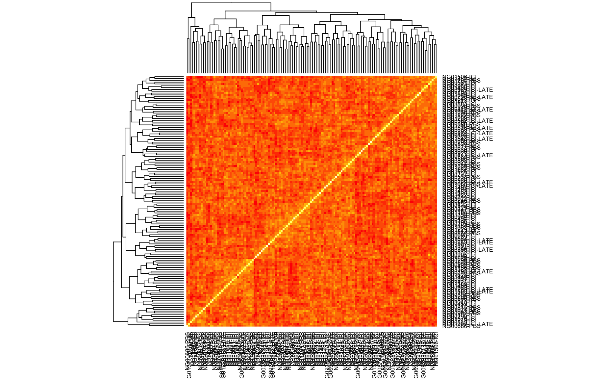
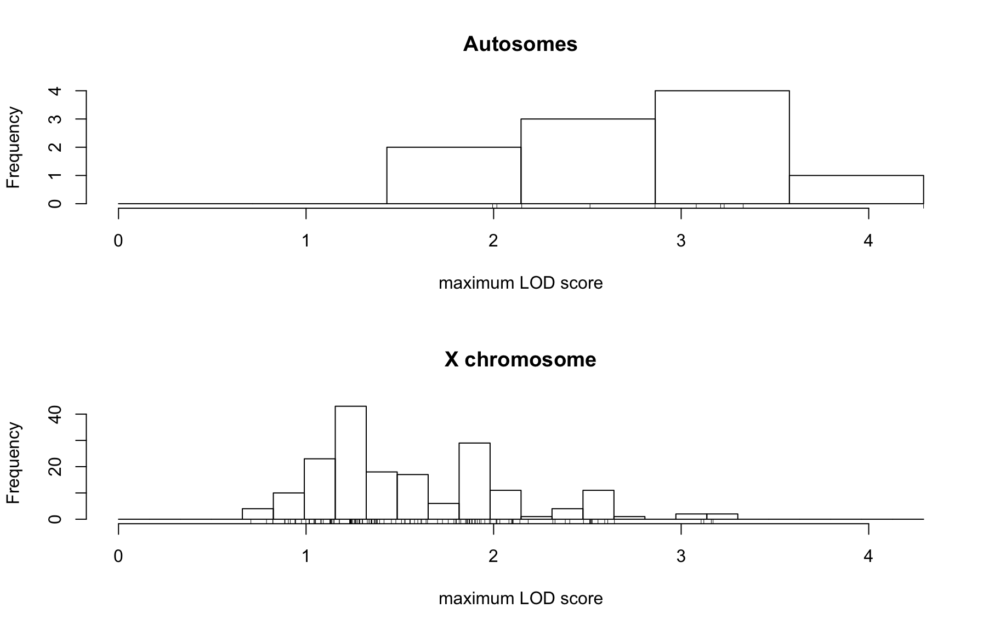
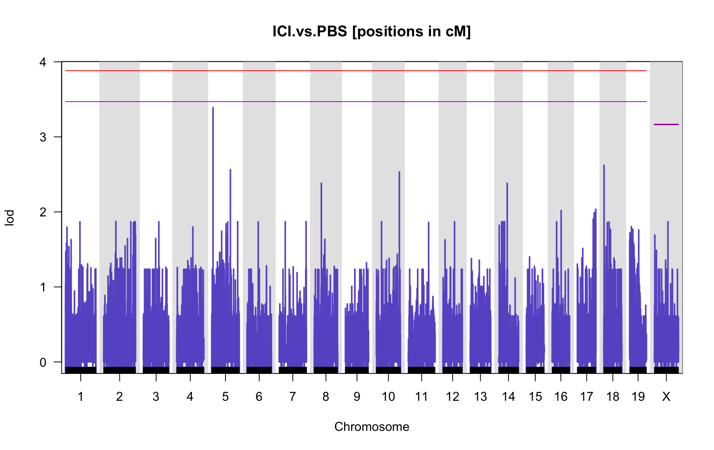
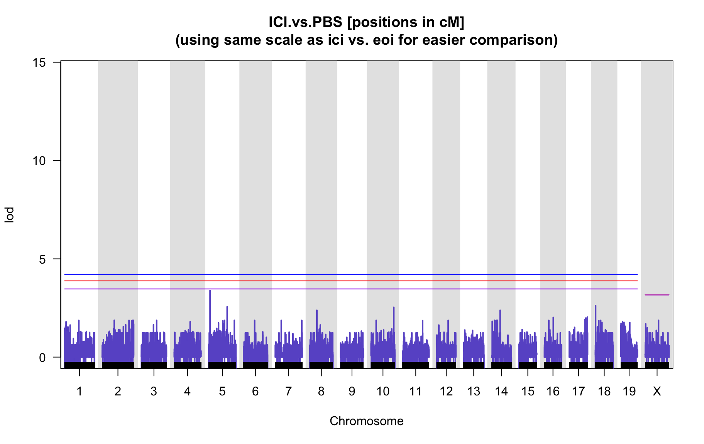

QTL Analysis - binary [ICI vs PBS] (conditioning on eoi vs. ici peaks)
Belinda Cornes
2022-07-02
Last updated: 2022-07-02
Checks: 5 2
Knit directory: Serreze-T1D_Workflow/
This reproducible R Markdown analysis was created with workflowr (version 1.6.2). The Checks tab describes the reproducibility checks that were applied when the results were created. The Past versions tab lists the development history.
The R Markdown is untracked by Git. To know which version of the R
Markdown file created these results, you’ll want to first commit it to
the Git repo. If you’re still working on the analysis, you can ignore
this warning. When you’re finished, you can run
wflow_publish to commit the R Markdown file and build the
HTML.
Great job! The global environment was empty. Objects defined in the global environment can affect the analysis in your R Markdown file in unknown ways. For reproduciblity it’s best to always run the code in an empty environment.
The command set.seed(20220210) was run prior to running
the code in the R Markdown file. Setting a seed ensures that any results
that rely on randomness, e.g. subsampling or permutations, are
reproducible.
Great job! Recording the operating system, R version, and package versions is critical for reproducibility.
Nice! There were no cached chunks for this analysis, so you can be confident that you successfully produced the results during this run.
Using absolute paths to the files within your workflowr project makes it difficult for you and others to run your code on a different machine. Change the absolute path(s) below to the suggested relative path(s) to make your code more reproducible.
| absolute | relative |
|---|---|
| /Users/corneb/Documents/MyJax/CS/Projects/Serreze/qc/workflowr/Serreze-T1D_Workflow | . |
Great! You are using Git for version control. Tracking code development and connecting the code version to the results is critical for reproducibility.
The results in this page were generated with repository version a8c2d1a. See the Past versions tab to see a history of the changes made to the R Markdown and HTML files.
Note that you need to be careful to ensure that all relevant files for
the analysis have been committed to Git prior to generating the results
(you can use wflow_publish or
wflow_git_commit). workflowr only checks the R Markdown
file, but you know if there are other scripts or data files that it
depends on. Below is the status of the Git repository when the results
were generated:
Ignored files:
Ignored: .DS_Store
Ignored: analysis/.DS_Store
Ignored: data/.DS_Store
Untracked files:
Untracked: analysis/3.1_phenotype.qc_corrected_5.batches_0.Rmd
Untracked: analysis/3.1_phenotype.qc_corrected_5.batches_52.Rmd
Untracked: analysis/3.1_phenotype.qc_corrected_5.batches_mis_0.Rmd
Untracked: analysis/3.1_phenotype.qc_corrected_5.batches_mis_52.Rmd
Untracked: analysis/3.1_phenotype.qc_corrected_5.batches_mis_vo.Rmd
Untracked: analysis/3.1_phenotype.qc_corrected_5.batches_vo.Rmd
Untracked: analysis/3.1_phenotype.qc_corrected_ici-early.vs.pbs.ici-late_5.batches.Rmd
Untracked: analysis/3.1_phenotype.qc_corrected_ici-early.vs.pbs.ici-late_5.batches_mis.Rmd
Untracked: analysis/4.1.1_qtl.analysis_binary_ici-early.vs.pbs.ici-late_5.batches.Rmd
Untracked: analysis/4.1.1_qtl.analysis_binary_ici-early.vs.pbs.ici-late_5.batches_mis.Rmd
Untracked: analysis/4.1.1_qtl.analysis_binary_ici-early.vs.pbs.ici-late_snpsqc_5.batches.Rmd
Untracked: analysis/4.1.1_qtl.analysis_binary_ici-early.vs.pbs.ici-late_snpsqc_5.batches_mis.Rmd
Untracked: analysis/4.1.1_qtl.analysis_binary_ici-early.vs.pbs.ici-late_snpsqc_dis_no-x_updated_5.batches.Rmd
Untracked: analysis/4.1.1_qtl.analysis_binary_ici-early.vs.pbs.ici-late_snpsqc_dis_no-x_updated_5.batches_mis.Rmd
Untracked: analysis/4.1.1_qtl.analysis_binary_ici.vs.eoi_snpsqc_dis_no-x_updated_5.batches_11.Rmd
Untracked: analysis/4.1.1_qtl.analysis_binary_ici.vs.eoi_snpsqc_dis_no-x_updated_5.batches_mis_11.Rmd
Untracked: analysis/4.1.1_qtl.analysis_binary_ici.vs.pbs_5.batches_conditional.Rmd.R
Untracked: analysis/4.1.1_qtl.analysis_binary_ici.vs.pbs_5.batches_conditional_1-peak.Rmd
Untracked: analysis/4.1.1_qtl.analysis_binary_ici.vs.pbs_5.batches_conditional_1-peak.Rmd.R
Untracked: analysis/4.1.1_qtl.analysis_binary_ici.vs.pbs_5.batches_conditional_2-peaks.Rmd
Untracked: analysis/4.1.1_qtl.analysis_binary_ici.vs.pbs_5.batches_conditional_2-peaks.Rmd.R
Untracked: analysis/4.1.1_qtl.analysis_binary_ici.vs.pbs_5.batches_conditional_3-peaks.Rmd
Untracked: analysis/4.1.1_qtl.analysis_binary_ici.vs.pbs_5.batches_conditional_3-peaks.Rmd.R
Untracked: analysis/4.1.1_qtl.analysis_binary_ici.vs.pbs_5.batches_mis_conditional.Rmd.R
Untracked: analysis/4.1.1_qtl.analysis_binary_ici.vs.pbs_5.batches_mis_conditional_1-peak.Rmd
Untracked: analysis/4.1.1_qtl.analysis_binary_ici.vs.pbs_5.batches_mis_conditional_1-peak.Rmd.R
Untracked: analysis/4.1.1_qtl.analysis_binary_ici.vs.pbs_5.batches_mis_conditional_2-peaks.Rmd
Untracked: analysis/4.1.1_qtl.analysis_binary_ici.vs.pbs_5.batches_mis_conditional_2-peaks.Rmd.R
Untracked: analysis/4.1.1_qtl.analysis_binary_ici.vs.pbs_5.batches_mis_conditional_3-peaks.Rmd
Untracked: analysis/4.1.1_qtl.analysis_binary_ici.vs.pbs_5.batches_mis_conditional_3-peaks.Rmd.R
Untracked: analysis/4.1.1_qtl.analysis_binary_ici.vs.pbs_snpsqc_5.batches_1.Rmd
Untracked: analysis/4.1.1_qtl.analysis_binary_ici.vs.pbs_snpsqc_5.batches_conditional.Rmd.R
Untracked: analysis/4.1.1_qtl.analysis_binary_ici.vs.pbs_snpsqc_5.batches_conditional_1-peak.Rmd
Untracked: analysis/4.1.1_qtl.analysis_binary_ici.vs.pbs_snpsqc_5.batches_conditional_1-peak.Rmd.R
Untracked: analysis/4.1.1_qtl.analysis_binary_ici.vs.pbs_snpsqc_5.batches_conditional_2-peaks.Rmd
Untracked: analysis/4.1.1_qtl.analysis_binary_ici.vs.pbs_snpsqc_5.batches_conditional_2-peaks.Rmd.R
Untracked: analysis/4.1.1_qtl.analysis_binary_ici.vs.pbs_snpsqc_5.batches_conditional_3-peaks.Rmd
Untracked: analysis/4.1.1_qtl.analysis_binary_ici.vs.pbs_snpsqc_5.batches_conditional_3-peaks.Rmd.R
Untracked: analysis/4.1.1_qtl.analysis_binary_ici.vs.pbs_snpsqc_5.batches_mis_1.Rmd
Untracked: analysis/4.1.1_qtl.analysis_binary_ici.vs.pbs_snpsqc_5.batches_mis_conditional.Rmd.R
Untracked: analysis/4.1.1_qtl.analysis_binary_ici.vs.pbs_snpsqc_5.batches_mis_conditional_1-peak.Rmd
Untracked: analysis/4.1.1_qtl.analysis_binary_ici.vs.pbs_snpsqc_5.batches_mis_conditional_1-peak.Rmd.R
Untracked: analysis/4.1.1_qtl.analysis_binary_ici.vs.pbs_snpsqc_5.batches_mis_conditional_2-peaks.Rmd
Untracked: analysis/4.1.1_qtl.analysis_binary_ici.vs.pbs_snpsqc_5.batches_mis_conditional_2-peaks.Rmd.R
Untracked: analysis/4.1.1_qtl.analysis_binary_ici.vs.pbs_snpsqc_5.batches_mis_conditional_3-peaks.Rmd
Untracked: analysis/4.1.1_qtl.analysis_binary_ici.vs.pbs_snpsqc_5.batches_mis_conditional_3-peaks.Rmd.R
Untracked: analysis/4.1.1_qtl.analysis_binary_ici.vs.pbs_snpsqc_dis_no-x_updated_5.batches_1.Rmd
Untracked: analysis/4.1.1_qtl.analysis_binary_ici.vs.pbs_snpsqc_dis_no-x_updated_5.batches_11.Rmd
Untracked: analysis/4.1.1_qtl.analysis_binary_ici.vs.pbs_snpsqc_dis_no-x_updated_5.batches_conditional.Rmd.R
Untracked: analysis/4.1.1_qtl.analysis_binary_ici.vs.pbs_snpsqc_dis_no-x_updated_5.batches_conditional_1-peak.Rmd
Untracked: analysis/4.1.1_qtl.analysis_binary_ici.vs.pbs_snpsqc_dis_no-x_updated_5.batches_conditional_1-peak.Rmd.R
Untracked: analysis/4.1.1_qtl.analysis_binary_ici.vs.pbs_snpsqc_dis_no-x_updated_5.batches_conditional_2-peaks.Rmd
Untracked: analysis/4.1.1_qtl.analysis_binary_ici.vs.pbs_snpsqc_dis_no-x_updated_5.batches_conditional_2-peaks.Rmd.R
Untracked: analysis/4.1.1_qtl.analysis_binary_ici.vs.pbs_snpsqc_dis_no-x_updated_5.batches_conditional_3-peaks.Rmd
Untracked: analysis/4.1.1_qtl.analysis_binary_ici.vs.pbs_snpsqc_dis_no-x_updated_5.batches_conditional_3-peaks.Rmd.R
Untracked: analysis/4.1.1_qtl.analysis_binary_ici.vs.pbs_snpsqc_dis_no-x_updated_5.batches_mis_11.Rmd
Untracked: analysis/4.1.1_qtl.analysis_binary_ici.vs.pbs_snpsqc_dis_no-x_updated_5.batches_mis_conditional.Rmd.R
Untracked: analysis/4.1.1_qtl.analysis_binary_ici.vs.pbs_snpsqc_dis_no-x_updated_5.batches_mis_conditional_1-peak.Rmd
Untracked: analysis/4.1.1_qtl.analysis_binary_ici.vs.pbs_snpsqc_dis_no-x_updated_5.batches_mis_conditional_1-peak.Rmd.R
Untracked: analysis/4.1.1_qtl.analysis_binary_ici.vs.pbs_snpsqc_dis_no-x_updated_5.batches_mis_conditional_1.peak.Rmd.R
Untracked: analysis/4.1.1_qtl.analysis_binary_ici.vs.pbs_snpsqc_dis_no-x_updated_5.batches_mis_conditional_2-peaks.Rmd
Untracked: analysis/4.1.1_qtl.analysis_binary_ici.vs.pbs_snpsqc_dis_no-x_updated_5.batches_mis_conditional_2-peaks.Rmd.R
Untracked: analysis/4.1.1_qtl.analysis_binary_ici.vs.pbs_snpsqc_dis_no-x_updated_5.batches_mis_conditional_3-peaks.Rmd
Untracked: analysis/4.1.1_qtl.analysis_binary_ici.vs.pbs_snpsqc_dis_no-x_updated_5.batches_mis_conditional_3-peaks.Rmd.R
Untracked: analysis/4.1.2_qtl.analysis_cont_age_ici-early.vs.pbs.ici-late_pheno.corrected.cleaned_5.batches.Rmd
Untracked: analysis/4.1.2_qtl.analysis_cont_age_ici-early.vs.pbs.ici-late_pheno.corrected.cleaned_5.batches_mis.Rmd
Untracked: analysis/4.1.2_qtl.analysis_cont_age_ici-early.vs.pbs.ici-late_snpsqc_pheno.corrected.cleaned_5.batches.Rmd
Untracked: analysis/4.1.2_qtl.analysis_cont_age_ici-early.vs.pbs.ici-late_snpsqc_pheno.corrected.cleaned_5.batches_mis.Rmd
Untracked: analysis/4.1.2_qtl.analysis_cont_age_ici-early.vs.pbs.ici-late_snpsqc_pheno.corrected.cleaned_dis_no-xk_5.batches.Rmd
Untracked: analysis/4.1.2_qtl.analysis_cont_age_ici-early.vs.pbs.ici-late_snpsqc_pheno.corrected.cleaned_dis_no-xk_5.batches_mis.Rmd
Untracked: analysis/4.1.2_qtl.analysis_cont_age_ici.vs.eoi_pheno.corrected.cleaned_5.batches_0.Rmd
Untracked: analysis/4.1.2_qtl.analysis_cont_age_ici.vs.eoi_pheno.corrected.cleaned_5.batches_52.Rmd
Untracked: analysis/4.1.2_qtl.analysis_cont_age_ici.vs.eoi_pheno.corrected.cleaned_5.batches_changed.Rmd
Untracked: analysis/4.1.2_qtl.analysis_cont_age_ici.vs.eoi_pheno.corrected.cleaned_5.batches_mis_0.Rmd
Untracked: analysis/4.1.2_qtl.analysis_cont_age_ici.vs.eoi_pheno.corrected.cleaned_5.batches_mis_52.Rmd
Untracked: analysis/4.1.2_qtl.analysis_cont_age_ici.vs.eoi_pheno.corrected.cleaned_5.batches_mis_changed.Rmd
Untracked: analysis/4.1.2_qtl.analysis_cont_age_ici.vs.eoi_pheno.corrected.cleaned_scanone_5.batches.Rmd
Untracked: analysis/4.1.2_qtl.analysis_cont_age_ici.vs.eoi_pheno.corrected.cleaned_scanone_5.batches_mis.Rmd
Untracked: analysis/4.1.2_qtl.analysis_cont_age_ici.vs.eoi_snpsqc_pheno.corrected.cleaned_5.batches_0.Rmd
Untracked: analysis/4.1.2_qtl.analysis_cont_age_ici.vs.eoi_snpsqc_pheno.corrected.cleaned_5.batches_52.Rmd
Untracked: analysis/4.1.2_qtl.analysis_cont_age_ici.vs.eoi_snpsqc_pheno.corrected.cleaned_5.batches_mis_0.Rmd
Untracked: analysis/4.1.2_qtl.analysis_cont_age_ici.vs.eoi_snpsqc_pheno.corrected.cleaned_5.batches_mis_52.Rmd
Untracked: analysis/4.1.2_qtl.analysis_cont_age_ici.vs.eoi_snpsqc_pheno.corrected.cleaned_5.batches_oops.Rmd
Untracked: analysis/4.1.2_qtl.analysis_cont_age_ici.vs.eoi_snpsqc_pheno.corrected.cleaned_dis_no-xk_5.batches_0.Rmd
Untracked: analysis/4.1.2_qtl.analysis_cont_age_ici.vs.eoi_snpsqc_pheno.corrected.cleaned_dis_no-xk_5.batches_52.Rmd
Untracked: analysis/4.1.2_qtl.analysis_cont_age_ici.vs.eoi_snpsqc_pheno.corrected.cleaned_dis_no-xk_5.batches_mis_0.Rmd
Untracked: analysis/4.1.2_qtl.analysis_cont_age_ici.vs.eoi_snpsqc_pheno.corrected.cleaned_dis_no-xk_5.batches_mis_52.Rmd
Untracked: analysis/4.1.2_qtl.analysis_cont_age_ici.vs.eoi_snpsqc_pheno.corrected.cleaned_dis_v2.Rmd.R
Untracked: analysis/4.1.2_qtl.analysis_cont_age_ici.vs.eoi_snpsqc_pheno.corrected.cleaned_test.with.4.Rmd
Untracked: analysis/4.1.2_qtl.analysis_cont_age_ici.vs.eoi_snpsqc_pheno.corrected.cleaned_test.with.4_miss.Rmd
Untracked: analysis/4.1.2_qtl.analysis_cont_age_ici.vs.eoi_snpsqc_pheno.corrected.cleaned_test.with.5.Rmd
Untracked: analysis/4.1.2_qtl.analysis_cont_age_ici.vs.eoi_snpsqc_pheno.corrected.cleaned_test.with.5_0.Rmd
Untracked: analysis/4.1.2_qtl.analysis_cont_age_ici.vs.pbs_pheno.corrected.cleaned_5.batches_conditional.Rmd.R
Untracked: analysis/4.1.2_qtl.analysis_cont_age_ici.vs.pbs_pheno.corrected.cleaned_5.batches_mis_conditional.Rmd.R
Untracked: analysis/4.1.2_qtl.analysis_cont_age_ici.vs.pbs_snpsqc_pheno.corrected.cleaned_5.batches_conditional.Rmd.R
Untracked: analysis/4.1.2_qtl.analysis_cont_age_ici.vs.pbs_snpsqc_pheno.corrected.cleaned_5.batches_mis_conditional.Rmd.R
Untracked: analysis/4.1.2_qtl.analysis_cont_age_ici.vs.pbs_snpsqc_pheno.corrected.cleaned_dis_no-xk_5.batches_conditional.Rmd.R
Untracked: analysis/4.1.2_qtl.analysis_cont_age_ici.vs.pbs_snpsqc_pheno.corrected.cleaned_dis_no-xk_5.batches_mis_conditional.Rmd.R
Untracked: analysis/4.1.2_qtl.analysis_cont_rz.age_ici-early.vs.pbs.ici-late_pheno.corrected.cleaned_5.batches.Rmd
Untracked: analysis/4.1.2_qtl.analysis_cont_rz.age_ici-early.vs.pbs.ici-late_pheno.corrected.cleaned_5.batches_mis.Rmd
Untracked: analysis/4.1.2_qtl.analysis_cont_rz.age_ici-early.vs.pbs.ici-late_snpsqc_pheno.corrected.cleaned_5.batches.Rmd
Untracked: analysis/4.1.2_qtl.analysis_cont_rz.age_ici-early.vs.pbs.ici-late_snpsqc_pheno.corrected.cleaned_5.batches_mis.Rmd
Untracked: analysis/4.1.2_qtl.analysis_cont_rz.age_ici-early.vs.pbs.ici-late_snpsqc_pheno.corrected.cleaned_dis_no-xk_5.batches.Rmd
Untracked: analysis/4.1.2_qtl.analysis_cont_rz.age_ici-early.vs.pbs.ici-late_snpsqc_pheno.corrected.cleaned_dis_no-xk_5.batches_mis.Rmd
Untracked: analysis/4.1.2_qtl.analysis_cont_rz.age_ici.vs.eoi_pheno.corrected.cleaned_5.batches_0.Rmd
Untracked: analysis/4.1.2_qtl.analysis_cont_rz.age_ici.vs.eoi_pheno.corrected.cleaned_5.batches_52.Rmd
Untracked: analysis/4.1.2_qtl.analysis_cont_rz.age_ici.vs.eoi_pheno.corrected.cleaned_5.batches_mis_0.Rmd
Untracked: analysis/4.1.2_qtl.analysis_cont_rz.age_ici.vs.eoi_pheno.corrected.cleaned_5.batches_mis_52.Rmd
Untracked: analysis/4.1.2_qtl.analysis_cont_rz.age_ici.vs.eoi_pheno.corrected.cleaned_5.batches_mis_vo.Rmd
Untracked: analysis/4.1.2_qtl.analysis_cont_rz.age_ici.vs.eoi_pheno.corrected.cleaned_5.batches_mis_vo1.Rmd
Untracked: analysis/4.1.2_qtl.analysis_cont_rz.age_ici.vs.eoi_pheno.corrected.cleaned_5.batches_vo.Rmd
Untracked: analysis/4.1.2_qtl.analysis_cont_rz.age_ici.vs.eoi_pheno.corrected.cleaned_5.batches_vo1.Rmd
Untracked: analysis/4.1.2_qtl.analysis_cont_rz.age_ici.vs.eoi_snpsqc_pheno.corrected.cleaned_5.batches_0.Rmd
Untracked: analysis/4.1.2_qtl.analysis_cont_rz.age_ici.vs.eoi_snpsqc_pheno.corrected.cleaned_5.batches_52.Rmd
Untracked: analysis/4.1.2_qtl.analysis_cont_rz.age_ici.vs.eoi_snpsqc_pheno.corrected.cleaned_5.batches_mis_0.Rmd
Untracked: analysis/4.1.2_qtl.analysis_cont_rz.age_ici.vs.eoi_snpsqc_pheno.corrected.cleaned_5.batches_mis_52.Rmd
Untracked: analysis/4.1.2_qtl.analysis_cont_rz.age_ici.vs.eoi_snpsqc_pheno.corrected.cleaned_dis_no-xk_5.batches_0.Rmd
Untracked: analysis/4.1.2_qtl.analysis_cont_rz.age_ici.vs.eoi_snpsqc_pheno.corrected.cleaned_dis_no-xk_5.batches_52.Rmd
Untracked: analysis/4.1.2_qtl.analysis_cont_rz.age_ici.vs.eoi_snpsqc_pheno.corrected.cleaned_dis_no-xk_5.batches_mis_0.Rmd
Untracked: analysis/4.1.2_qtl.analysis_cont_rz.age_ici.vs.eoi_snpsqc_pheno.corrected.cleaned_dis_no-xk_5.batches_mis_52.Rmd
Untracked: analysis/4.1.2_qtl.analysis_cont_rz.age_ici.vs.pbs_pheno.corrected.cleaned_5.batches_conditional.Rmd.R
Untracked: analysis/4.1.2_qtl.analysis_cont_rz.age_ici.vs.pbs_pheno.corrected.cleaned_5.batches_mis_conditional.Rmd.R
Untracked: analysis/4.1.2_qtl.analysis_cont_rz.age_ici.vs.pbs_snpsqc_pheno.corrected.cleaned_5.batches_conditional.Rmd.R
Untracked: analysis/4.1.2_qtl.analysis_cont_rz.age_ici.vs.pbs_snpsqc_pheno.corrected.cleaned_5.batches_mis_conditional.Rmd.R
Untracked: analysis/4.1.2_qtl.analysis_cont_rz.age_ici.vs.pbs_snpsqc_pheno.corrected.cleaned_dis_no-xk_5.batches_conditional.Rmd.R
Untracked: analysis/4.1.2_qtl.analysis_cont_rz.age_ici.vs.pbs_snpsqc_pheno.corrected.cleaned_dis_no-xk_5.batches_mis_conditional.Rmd.R
Untracked: analysis/4.1.2_qtl.analysis_cont_rz.age_ici.vs.pbs_snpsqc_pheno.corrected.cleaned_dis_no-xk_5.batches_mis_conditional_1-peak.Rmd.R
Untracked: analysis/genotype.frequencies_ici-early.vs.pbs.ici-late_5.batches.Rmd
Untracked: analysis/genotype.frequencies_ici-early.vs.pbs.ici-late_5.batches_mis.Rmd
Untracked: analysis/genotype.frequencies_ici.vs.eoi_5.batches_0.Rmd
Untracked: analysis/genotype.frequencies_ici.vs.eoi_5.batches_52.Rmd
Untracked: analysis/genotype.frequencies_ici.vs.eoi_5.batches_mis_0.Rmd
Untracked: analysis/genotype.frequencies_ici.vs.eoi_5.batches_mis_52.Rmd
Untracked: analysis/index_5.batches_additional_vo.Rmd
Untracked: analysis/power.analysis_ici.vs.eoi_5.batches.Rmd
Untracked: analysis/power.analysis_ici.vs.eoi_5.batches.Rmd.R
Untracked: analysis/power.analysis_ici.vs.eoi_5.batches_mis.Rmd
Untracked: analysis/power.analysis_ici.vs.eoi_5.batches_mis.Rmd.R
Untracked: analysis/power.analysis_ici.vs.pbs_5.batches.Rmd
Untracked: analysis/power.analysis_ici.vs.pbs_5.batches.Rmd.R
Untracked: analysis/power.analysis_ici.vs.pbs_5.batches_mis.Rmd
Untracked: analysis/power.analysis_ici.vs.pbs_5.batches_mis.Rmd.R
Untracked: data/GM_covar.csv
Untracked: data/GM_covar_BC312.csv
Untracked: data/bad_markers_all_4.batches.RData
Untracked: data/bad_markers_all_5.batches.RData
Untracked: data/blup_sub_chr10_lod.drop-1.5_5.batches.csv
Untracked: data/blup_sub_chr3_lod.drop-1.5.csv
Untracked: data/blup_sub_chr3_lod.drop-1.5_5.batches.csv
Untracked: data/blup_sub_chr4_lod.drop-1.5.csv
Untracked: data/blup_sub_chr4_lod.drop-1.5_5.batches.csv
Untracked: data/covar_cleaned_ici.vs.eoi.csv
Untracked: data/covar_cleaned_ici.vs.pbs.csv
Untracked: data/covar_corrected.cleaned_ici-early.vs.pbs.ici-late_5.batches.csv
Untracked: data/covar_corrected.cleaned_ici-early.vs.pbs.ici-late_5.batches_mis.csv
Untracked: data/covar_corrected.cleaned_ici-early.vs.pbs_5.batches.csv
Untracked: data/covar_corrected.cleaned_ici-early.vs.pbs_5.batches_0.csv
Untracked: data/covar_corrected.cleaned_ici-early.vs.pbs_5.batches_52.csv
Untracked: data/covar_corrected.cleaned_ici-early.vs.pbs_5.batches_mis.csv
Untracked: data/covar_corrected.cleaned_ici-early.vs.pbs_5.batches_mis_0.csv
Untracked: data/covar_corrected.cleaned_ici-early.vs.pbs_5.batches_mis_52.csv
Untracked: data/covar_corrected.cleaned_ici.vs.eoi.csv
Untracked: data/covar_corrected.cleaned_ici.vs.eoi1.csv
Untracked: data/covar_corrected.cleaned_ici.vs.eoi_5.batches.csv
Untracked: data/covar_corrected.cleaned_ici.vs.eoi_5.batches_0.csv
Untracked: data/covar_corrected.cleaned_ici.vs.eoi_5.batches_52.csv
Untracked: data/covar_corrected.cleaned_ici.vs.eoi_5.batches_mis.csv
Untracked: data/covar_corrected.cleaned_ici.vs.eoi_5.batches_mis_0.csv
Untracked: data/covar_corrected.cleaned_ici.vs.eoi_5.batches_mis_52.csv
Untracked: data/covar_corrected.cleaned_ici.vs.pbs.csv
Untracked: data/covar_corrected.cleaned_ici.vs.pbs1.csv
Untracked: data/covar_corrected.cleaned_ici.vs.pbs_5.batches.csv
Untracked: data/covar_corrected.cleaned_ici.vs.pbs_5.batches_0.csv
Untracked: data/covar_corrected.cleaned_ici.vs.pbs_5.batches_52.csv
Untracked: data/covar_corrected.cleaned_ici.vs.pbs_5.batches_mis.csv
Untracked: data/covar_corrected.cleaned_ici.vs.pbs_5.batches_mis_0.csv
Untracked: data/covar_corrected.cleaned_ici.vs.pbs_5.batches_mis_52.csv
Untracked: data/covar_corrected_ici-early.vs.pbs.ici-late_5.batches.csv
Untracked: data/covar_corrected_ici-early.vs.pbs.ici-late_5.batches_mis.csv
Untracked: data/covar_corrected_ici-early.vs.pbs_5.batches.csv
Untracked: data/covar_corrected_ici-early.vs.pbs_5.batches_0.csv
Untracked: data/covar_corrected_ici-early.vs.pbs_5.batches_52.csv
Untracked: data/covar_corrected_ici-early.vs.pbs_5.batches_mis.csv
Untracked: data/covar_corrected_ici-early.vs.pbs_5.batches_mis_0.csv
Untracked: data/covar_corrected_ici-early.vs.pbs_5.batches_mis_52.csv
Untracked: data/covar_corrected_ici.vs.eoi.csv
Untracked: data/covar_corrected_ici.vs.eoi1.csv
Untracked: data/covar_corrected_ici.vs.eoi_5.batches.csv
Untracked: data/covar_corrected_ici.vs.eoi_5.batches_0.csv
Untracked: data/covar_corrected_ici.vs.eoi_5.batches_52.csv
Untracked: data/covar_corrected_ici.vs.eoi_5.batches_mis.csv
Untracked: data/covar_corrected_ici.vs.eoi_5.batches_mis_0.csv
Untracked: data/covar_corrected_ici.vs.eoi_5.batches_mis_52.csv
Untracked: data/covar_corrected_ici.vs.pbs.csv
Untracked: data/covar_corrected_ici.vs.pbs1.csv
Untracked: data/covar_corrected_ici.vs.pbs_5.batches.csv
Untracked: data/covar_corrected_ici.vs.pbs_5.batches_0.csv
Untracked: data/covar_corrected_ici.vs.pbs_5.batches_52.csv
Untracked: data/covar_corrected_ici.vs.pbs_5.batches_mis.csv
Untracked: data/covar_corrected_ici.vs.pbs_5.batches_mis_0.csv
Untracked: data/covar_corrected_ici.vs.pbs_5.batches_mis_52.csv
Untracked: data/e.RData
Untracked: data/e_BC312.RData
Untracked: data/e_snpg_samqc_4.batches.RData
Untracked: data/e_snpg_samqc_4.batches_bc.RData
Untracked: data/e_snpg_samqc_5.batches.RData
Untracked: data/errors_ind_4.batches.RData
Untracked: data/errors_ind_4.batches_bc.RData
Untracked: data/errors_ind_5.batches.RData
Untracked: data/files.to.sync.txt
Untracked: data/fitqtl_chr3.peak_chr4.peak_additive.txt
Untracked: data/fitqtl_chr3.peak_chr4.peak_interacting.txt
Untracked: data/fitqtl_chr3.peak_chr4.peak_sex_additive.txt
Untracked: data/fitqtl_chr3.peak_chr4.peak_sex_interacting.txt
Untracked: data/g2blup_effects.csv
Untracked: data/g2blup_effects.xlsx
Untracked: data/genes_chr10_lod.drop-1.5_5.batches.csv
Untracked: data/genes_chr3_lod.drop-1.5.csv
Untracked: data/genes_chr3_lod.drop-1.5_5.batches.csv
Untracked: data/genes_chr4_lod.drop-1.5.csv
Untracked: data/genetic_map.csv
Untracked: data/genetic_map_BC312.csv
Untracked: data/genotype_errors_marker_4.batches.RData
Untracked: data/genotype_errors_marker_5.batches.RData
Untracked: data/genotype_freq_marker_4.batches.RData
Untracked: data/genotype_freq_marker_5.batches.RData
Untracked: data/gm_allqc_4.batches.RData
Untracked: data/gm_allqc_5.batches.RData
Untracked: data/gm_allqc_5.batches_mis.RData
Untracked: data/gm_samqc_3.batches.RData
Untracked: data/gm_samqc_4.batches.RData
Untracked: data/gm_samqc_4.batches_bc.RData
Untracked: data/gm_samqc_5.batches.RData
Untracked: data/gm_serreze.192.RData
Untracked: data/gm_serreze.BC312.RData
Untracked: data/ici-early.vs.pbs.ici-late_age.of.onset-additive.covariates_blup_sub_chr-6_peak.marker-UNC11006703_lod.drop-1.5_snpsqc_dis_no-x_updated_5.batches.csv
Untracked: data/ici-early.vs.pbs.ici-late_age.of.onset-additive.covariates_blup_sub_chr-6_peak.marker-UNC11006703_lod.drop-1.5_snpsqc_dis_no-x_updated_5.batches_mis.csv
Untracked: data/ici-early.vs.pbs.ici-late_age.of.onset-additive.covariates_blup_sub_chr-6_peak.marker-cr27snv203_lod.drop-1.5_5.batches_mis.csv
Untracked: data/ici-early.vs.pbs.ici-late_age.of.onset-additive.covariates_genes_chr-6_peak.marker-UNC11006703_lod.drop-1.5_snpsqc_dis_no-x_updated_5.batches.csv
Untracked: data/ici-early.vs.pbs.ici-late_age.of.onset-additive.covariates_genes_chr-6_peak.marker-UNC11006703_lod.drop-1.5_snpsqc_dis_no-x_updated_5.batches_mis.csv
Untracked: data/ici-early.vs.pbs.ici-late_age.of.onset-additive.covariates_genes_chr-6_peak.marker-cr27snv203_lod.drop-1.5_5.batches_mis.csv
Untracked: data/ici-early.vs.pbs.ici-late_age.of.onset-interactive.covariate_blup_sub_chr-1_peak.marker-ICR134_lod.drop-1.5_5.batches_mis.csv
Untracked: data/ici-early.vs.pbs.ici-late_age.of.onset-interactive.covariate_blup_sub_chr-1_peak.marker-ICR4119_lod.drop-1.5_5.batches_mis.csv
Untracked: data/ici-early.vs.pbs.ici-late_age.of.onset-interactive.covariate_blup_sub_chr-1_peak.marker-JAX00262446_lod.drop-1.5_5.batches_mis.csv
Untracked: data/ici-early.vs.pbs.ici-late_age.of.onset-interactive.covariate_blup_sub_chr-1_peak.marker-UNCHS001938_lod.drop-1.5_5.batches_mis.csv
Untracked: data/ici-early.vs.pbs.ici-late_age.of.onset-interactive.covariate_blup_sub_chr-6_peak.marker-UNC11008761_lod.drop-1.5_5.batches_mis.csv
Untracked: data/ici-early.vs.pbs.ici-late_age.of.onset-interactive.covariate_blup_sub_chr-6_peak.marker-UNCHS016990_lod.drop-1.5_5.batches_mis.csv
Untracked: data/ici-early.vs.pbs.ici-late_age.of.onset-interactive.covariate_genes_chr-1_peak.marker-ICR134_lod.drop-1.5_5.batches_mis.csv
Untracked: data/ici-early.vs.pbs.ici-late_age.of.onset-interactive.covariate_genes_chr-1_peak.marker-ICR4119_lod.drop-1.5_5.batches_mis.csv
Untracked: data/ici-early.vs.pbs.ici-late_age.of.onset-interactive.covariate_genes_chr-1_peak.marker-JAX00262446_lod.drop-1.5_5.batches_mis.csv
Untracked: data/ici-early.vs.pbs.ici-late_age.of.onset-interactive.covariate_genes_chr-1_peak.marker-UNCHS001938_lod.drop-1.5_5.batches_mis.csv
Untracked: data/ici-early.vs.pbs.ici-late_age.of.onset-interactive.covariate_genes_chr-6_peak.marker-UNC11008761_lod.drop-1.5_5.batches_mis.csv
Untracked: data/ici-early.vs.pbs.ici-late_age.of.onset-interactive.covariate_genes_chr-6_peak.marker-UNCHS016990_lod.drop-1.5_5.batches_mis.csv
Untracked: data/ici-early.vs.pbs.ici-late_age.of.onset-no.covariates_blup_sub_chr-14_peak.marker-UNC24056202_lod.drop-1.5_5.batches_mis.csv
Untracked: data/ici-early.vs.pbs.ici-late_age.of.onset-no.covariates_blup_sub_chr-14_peak.marker-UNC24056202_lod.drop-1.5_snpsqc_5.batches_mis.csv
Untracked: data/ici-early.vs.pbs.ici-late_age.of.onset-no.covariates_blup_sub_chr-17_peak.marker-UNCJPD006614_lod.drop-1.5_snpsqc_5.batches_mis.csv
Untracked: data/ici-early.vs.pbs.ici-late_age.of.onset-no.covariates_blup_sub_chr-18_peak.marker-UNC28655293_lod.drop-1.5_5.batches_mis.csv
Untracked: data/ici-early.vs.pbs.ici-late_age.of.onset-no.covariates_blup_sub_chr-18_peak.marker-UNCHS045343_lod.drop-1.5_snpsqc_5.batches_mis.csv
Untracked: data/ici-early.vs.pbs.ici-late_age.of.onset-no.covariates_blup_sub_chr-5_peak.marker-UNC10044126_lod.drop-1.5_5.batches_mis.csv
Untracked: data/ici-early.vs.pbs.ici-late_age.of.onset-no.covariates_blup_sub_chr-5_peak.marker-UNC8675939_lod.drop-1.5_snpsqc_5.batches_mis.csv
Untracked: data/ici-early.vs.pbs.ici-late_age.of.onset-no.covariates_blup_sub_chr-8_peak.marker-JAX00667121_lod.drop-1.5_5.batches_mis.csv
Untracked: data/ici-early.vs.pbs.ici-late_age.of.onset-no.covariates_blup_sub_chr-8_peak.marker-UNC15524531_lod.drop-1.5_snpsqc_5.batches_mis.csv
Untracked: data/ici-early.vs.pbs.ici-late_age.of.onset-no.covariates_blup_sub_chr-X_peak.marker-UNCHS048314_lod.drop-1.5_snpsqc_5.batches_mis.csv
Untracked: data/ici-early.vs.pbs.ici-late_age.of.onset-no.covariates_genes_chr-14_peak.marker-UNC24056202_lod.drop-1.5_5.batches_mis.csv
Untracked: data/ici-early.vs.pbs.ici-late_age.of.onset-no.covariates_genes_chr-14_peak.marker-UNC24056202_lod.drop-1.5_snpsqc_5.batches_mis.csv
Untracked: data/ici-early.vs.pbs.ici-late_age.of.onset-no.covariates_genes_chr-17_peak.marker-UNCJPD006614_lod.drop-1.5_snpsqc_5.batches_mis.csv
Untracked: data/ici-early.vs.pbs.ici-late_age.of.onset-no.covariates_genes_chr-18_peak.marker-UNC28655293_lod.drop-1.5_5.batches_mis.csv
Untracked: data/ici-early.vs.pbs.ici-late_age.of.onset-no.covariates_genes_chr-18_peak.marker-UNCHS045343_lod.drop-1.5_snpsqc_5.batches_mis.csv
Untracked: data/ici-early.vs.pbs.ici-late_age.of.onset-no.covariates_genes_chr-5_peak.marker-UNC10044126_lod.drop-1.5_5.batches_mis.csv
Untracked: data/ici-early.vs.pbs.ici-late_age.of.onset-no.covariates_genes_chr-5_peak.marker-UNC8675939_lod.drop-1.5_snpsqc_5.batches_mis.csv
Untracked: data/ici-early.vs.pbs.ici-late_age.of.onset-no.covariates_genes_chr-8_peak.marker-JAX00667121_lod.drop-1.5_5.batches_mis.csv
Untracked: data/ici-early.vs.pbs.ici-late_age.of.onset-no.covariates_genes_chr-8_peak.marker-UNC15524531_lod.drop-1.5_snpsqc_5.batches_mis.csv
Untracked: data/ici-early.vs.pbs.ici-late_age.of.onset-no.covariates_genes_chr-X_peak.marker-UNCHS048314_lod.drop-1.5_snpsqc_5.batches_mis.csv
Untracked: data/ici-early.vs.pbs.ici-late_blup.full_chr-10_5.batches.csv
Untracked: data/ici-early.vs.pbs.ici-late_blup.full_chr-10_5.batches_mis.csv
Untracked: data/ici-early.vs.pbs.ici-late_blup.full_chr-10_snpsqc_5.batches.csv
Untracked: data/ici-early.vs.pbs.ici-late_blup.full_chr-10_snpsqc_5.batches_mis.csv
Untracked: data/ici-early.vs.pbs.ici-late_blup.full_chr-10_snpsqc_dis_no-x_updated_5.batches.csv
Untracked: data/ici-early.vs.pbs.ici-late_blup.full_chr-10_snpsqc_dis_no-x_updated_5.batches_mis.csv
Untracked: data/ici-early.vs.pbs.ici-late_blup.full_chr-11_5.batches.csv
Untracked: data/ici-early.vs.pbs.ici-late_blup.full_chr-11_5.batches_mis.csv
Untracked: data/ici-early.vs.pbs.ici-late_blup.full_chr-11_snpsqc_5.batches.csv
Untracked: data/ici-early.vs.pbs.ici-late_blup.full_chr-11_snpsqc_5.batches_mis.csv
Untracked: data/ici-early.vs.pbs.ici-late_blup.full_chr-11_snpsqc_dis_no-x_updated_5.batches.csv
Untracked: data/ici-early.vs.pbs.ici-late_blup.full_chr-11_snpsqc_dis_no-x_updated_5.batches_mis.csv
Untracked: data/ici-early.vs.pbs.ici-late_blup.full_chr-12_5.batches.csv
Untracked: data/ici-early.vs.pbs.ici-late_blup.full_chr-12_5.batches_mis.csv
Untracked: data/ici-early.vs.pbs.ici-late_blup.full_chr-12_snpsqc_5.batches.csv
Untracked: data/ici-early.vs.pbs.ici-late_blup.full_chr-12_snpsqc_5.batches_mis.csv
Untracked: data/ici-early.vs.pbs.ici-late_blup.full_chr-12_snpsqc_dis_no-x_updated_5.batches.csv
Untracked: data/ici-early.vs.pbs.ici-late_blup.full_chr-12_snpsqc_dis_no-x_updated_5.batches_mis.csv
Untracked: data/ici-early.vs.pbs.ici-late_blup.full_chr-13_5.batches.csv
Untracked: data/ici-early.vs.pbs.ici-late_blup.full_chr-13_5.batches_mis.csv
Untracked: data/ici-early.vs.pbs.ici-late_blup.full_chr-13_snpsqc_5.batches.csv
Untracked: data/ici-early.vs.pbs.ici-late_blup.full_chr-13_snpsqc_5.batches_mis.csv
Untracked: data/ici-early.vs.pbs.ici-late_blup.full_chr-13_snpsqc_dis_no-x_updated_5.batches.csv
Untracked: data/ici-early.vs.pbs.ici-late_blup.full_chr-13_snpsqc_dis_no-x_updated_5.batches_mis.csv
Untracked: data/ici-early.vs.pbs.ici-late_blup.full_chr-14_5.batches.csv
Untracked: data/ici-early.vs.pbs.ici-late_blup.full_chr-14_5.batches_mis.csv
Untracked: data/ici-early.vs.pbs.ici-late_blup.full_chr-14_snpsqc_5.batches.csv
Untracked: data/ici-early.vs.pbs.ici-late_blup.full_chr-14_snpsqc_5.batches_mis.csv
Untracked: data/ici-early.vs.pbs.ici-late_blup.full_chr-14_snpsqc_dis_no-x_updated_5.batches.csv
Untracked: data/ici-early.vs.pbs.ici-late_blup.full_chr-14_snpsqc_dis_no-x_updated_5.batches_mis.csv
Untracked: data/ici-early.vs.pbs.ici-late_blup.full_chr-15_5.batches.csv
Untracked: data/ici-early.vs.pbs.ici-late_blup.full_chr-15_5.batches_mis.csv
Untracked: data/ici-early.vs.pbs.ici-late_blup.full_chr-15_snpsqc_5.batches.csv
Untracked: data/ici-early.vs.pbs.ici-late_blup.full_chr-15_snpsqc_5.batches_mis.csv
Untracked: data/ici-early.vs.pbs.ici-late_blup.full_chr-15_snpsqc_dis_no-x_updated_5.batches.csv
Untracked: data/ici-early.vs.pbs.ici-late_blup.full_chr-15_snpsqc_dis_no-x_updated_5.batches_mis.csv
Untracked: data/ici-early.vs.pbs.ici-late_blup.full_chr-16_5.batches.csv
Untracked: data/ici-early.vs.pbs.ici-late_blup.full_chr-16_5.batches_mis.csv
Untracked: data/ici-early.vs.pbs.ici-late_blup.full_chr-16_snpsqc_5.batches.csv
Untracked: data/ici-early.vs.pbs.ici-late_blup.full_chr-16_snpsqc_5.batches_mis.csv
Untracked: data/ici-early.vs.pbs.ici-late_blup.full_chr-16_snpsqc_dis_no-x_updated_5.batches.csv
Untracked: data/ici-early.vs.pbs.ici-late_blup.full_chr-16_snpsqc_dis_no-x_updated_5.batches_mis.csv
Untracked: data/ici-early.vs.pbs.ici-late_blup.full_chr-17_5.batches.csv
Untracked: data/ici-early.vs.pbs.ici-late_blup.full_chr-17_5.batches_mis.csv
Untracked: data/ici-early.vs.pbs.ici-late_blup.full_chr-17_snpsqc_5.batches.csv
Untracked: data/ici-early.vs.pbs.ici-late_blup.full_chr-17_snpsqc_5.batches_mis.csv
Untracked: data/ici-early.vs.pbs.ici-late_blup.full_chr-17_snpsqc_dis_no-x_updated_5.batches.csv
Untracked: data/ici-early.vs.pbs.ici-late_blup.full_chr-17_snpsqc_dis_no-x_updated_5.batches_mis.csv
Untracked: data/ici-early.vs.pbs.ici-late_blup.full_chr-18_5.batches.csv
Untracked: data/ici-early.vs.pbs.ici-late_blup.full_chr-18_5.batches_mis.csv
Untracked: data/ici-early.vs.pbs.ici-late_blup.full_chr-18_snpsqc_5.batches.csv
Untracked: data/ici-early.vs.pbs.ici-late_blup.full_chr-18_snpsqc_5.batches_mis.csv
Untracked: data/ici-early.vs.pbs.ici-late_blup.full_chr-18_snpsqc_dis_no-x_updated_5.batches.csv
Untracked: data/ici-early.vs.pbs.ici-late_blup.full_chr-18_snpsqc_dis_no-x_updated_5.batches_mis.csv
Untracked: data/ici-early.vs.pbs.ici-late_blup.full_chr-19_5.batches.csv
Untracked: data/ici-early.vs.pbs.ici-late_blup.full_chr-19_5.batches_mis.csv
Untracked: data/ici-early.vs.pbs.ici-late_blup.full_chr-19_snpsqc_5.batches.csv
Untracked: data/ici-early.vs.pbs.ici-late_blup.full_chr-19_snpsqc_5.batches_mis.csv
Untracked: data/ici-early.vs.pbs.ici-late_blup.full_chr-19_snpsqc_dis_no-x_updated_5.batches.csv
Untracked: data/ici-early.vs.pbs.ici-late_blup.full_chr-19_snpsqc_dis_no-x_updated_5.batches_mis.csv
Untracked: data/ici-early.vs.pbs.ici-late_blup.full_chr-1_5.batches.csv
Untracked: data/ici-early.vs.pbs.ici-late_blup.full_chr-1_5.batches_mis.csv
Untracked: data/ici-early.vs.pbs.ici-late_blup.full_chr-1_snpsqc_5.batches.csv
Untracked: data/ici-early.vs.pbs.ici-late_blup.full_chr-1_snpsqc_5.batches_mis.csv
Untracked: data/ici-early.vs.pbs.ici-late_blup.full_chr-1_snpsqc_dis_no-x_updated_5.batches.csv
Untracked: data/ici-early.vs.pbs.ici-late_blup.full_chr-1_snpsqc_dis_no-x_updated_5.batches_mis.csv
Untracked: data/ici-early.vs.pbs.ici-late_blup.full_chr-2_5.batches.csv
Untracked: data/ici-early.vs.pbs.ici-late_blup.full_chr-2_5.batches_mis.csv
Untracked: data/ici-early.vs.pbs.ici-late_blup.full_chr-2_snpsqc_5.batches.csv
Untracked: data/ici-early.vs.pbs.ici-late_blup.full_chr-2_snpsqc_5.batches_mis.csv
Untracked: data/ici-early.vs.pbs.ici-late_blup.full_chr-2_snpsqc_dis_no-x_updated_5.batches.csv
Untracked: data/ici-early.vs.pbs.ici-late_blup.full_chr-2_snpsqc_dis_no-x_updated_5.batches_mis.csv
Untracked: data/ici-early.vs.pbs.ici-late_blup.full_chr-3_5.batches.csv
Untracked: data/ici-early.vs.pbs.ici-late_blup.full_chr-3_5.batches_mis.csv
Untracked: data/ici-early.vs.pbs.ici-late_blup.full_chr-3_snpsqc_5.batches.csv
Untracked: data/ici-early.vs.pbs.ici-late_blup.full_chr-3_snpsqc_5.batches_mis.csv
Untracked: data/ici-early.vs.pbs.ici-late_blup.full_chr-3_snpsqc_dis_no-x_updated_5.batches.csv
Untracked: data/ici-early.vs.pbs.ici-late_blup.full_chr-3_snpsqc_dis_no-x_updated_5.batches_mis.csv
Untracked: data/ici-early.vs.pbs.ici-late_blup.full_chr-4_5.batches.csv
Untracked: data/ici-early.vs.pbs.ici-late_blup.full_chr-4_5.batches_mis.csv
Untracked: data/ici-early.vs.pbs.ici-late_blup.full_chr-4_snpsqc_5.batches.csv
Untracked: data/ici-early.vs.pbs.ici-late_blup.full_chr-4_snpsqc_5.batches_mis.csv
Untracked: data/ici-early.vs.pbs.ici-late_blup.full_chr-4_snpsqc_dis_no-x_updated_5.batches.csv
Untracked: data/ici-early.vs.pbs.ici-late_blup.full_chr-4_snpsqc_dis_no-x_updated_5.batches_mis.csv
Untracked: data/ici-early.vs.pbs.ici-late_blup.full_chr-5_5.batches.csv
Untracked: data/ici-early.vs.pbs.ici-late_blup.full_chr-5_5.batches_mis.csv
Untracked: data/ici-early.vs.pbs.ici-late_blup.full_chr-5_snpsqc_5.batches.csv
Untracked: data/ici-early.vs.pbs.ici-late_blup.full_chr-5_snpsqc_5.batches_mis.csv
Untracked: data/ici-early.vs.pbs.ici-late_blup.full_chr-5_snpsqc_dis_no-x_updated_5.batches.csv
Untracked: data/ici-early.vs.pbs.ici-late_blup.full_chr-5_snpsqc_dis_no-x_updated_5.batches_mis.csv
Untracked: data/ici-early.vs.pbs.ici-late_blup.full_chr-6_5.batches.csv
Untracked: data/ici-early.vs.pbs.ici-late_blup.full_chr-6_5.batches_mis.csv
Untracked: data/ici-early.vs.pbs.ici-late_blup.full_chr-6_snpsqc_5.batches.csv
Untracked: data/ici-early.vs.pbs.ici-late_blup.full_chr-6_snpsqc_5.batches_mis.csv
Untracked: data/ici-early.vs.pbs.ici-late_blup.full_chr-6_snpsqc_dis_no-x_updated_5.batches.csv
Untracked: data/ici-early.vs.pbs.ici-late_blup.full_chr-6_snpsqc_dis_no-x_updated_5.batches_mis.csv
Untracked: data/ici-early.vs.pbs.ici-late_blup.full_chr-7_5.batches.csv
Untracked: data/ici-early.vs.pbs.ici-late_blup.full_chr-7_5.batches_mis.csv
Untracked: data/ici-early.vs.pbs.ici-late_blup.full_chr-7_snpsqc_5.batches.csv
Untracked: data/ici-early.vs.pbs.ici-late_blup.full_chr-7_snpsqc_5.batches_mis.csv
Untracked: data/ici-early.vs.pbs.ici-late_blup.full_chr-7_snpsqc_dis_no-x_updated_5.batches.csv
Untracked: data/ici-early.vs.pbs.ici-late_blup.full_chr-7_snpsqc_dis_no-x_updated_5.batches_mis.csv
Untracked: data/ici-early.vs.pbs.ici-late_blup.full_chr-8_5.batches.csv
Untracked: data/ici-early.vs.pbs.ici-late_blup.full_chr-8_5.batches_mis.csv
Untracked: data/ici-early.vs.pbs.ici-late_blup.full_chr-8_snpsqc_5.batches.csv
Untracked: data/ici-early.vs.pbs.ici-late_blup.full_chr-8_snpsqc_5.batches_mis.csv
Untracked: data/ici-early.vs.pbs.ici-late_blup.full_chr-8_snpsqc_dis_no-x_updated_5.batches.csv
Untracked: data/ici-early.vs.pbs.ici-late_blup.full_chr-8_snpsqc_dis_no-x_updated_5.batches_mis.csv
Untracked: data/ici-early.vs.pbs.ici-late_blup.full_chr-9_5.batches.csv
Untracked: data/ici-early.vs.pbs.ici-late_blup.full_chr-9_5.batches_mis.csv
Untracked: data/ici-early.vs.pbs.ici-late_blup.full_chr-9_snpsqc_5.batches.csv
Untracked: data/ici-early.vs.pbs.ici-late_blup.full_chr-9_snpsqc_5.batches_mis.csv
Untracked: data/ici-early.vs.pbs.ici-late_blup.full_chr-9_snpsqc_dis_no-x_updated_5.batches.csv
Untracked: data/ici-early.vs.pbs.ici-late_blup.full_chr-9_snpsqc_dis_no-x_updated_5.batches_mis.csv
Untracked: data/ici-early.vs.pbs.ici-late_blup.full_chr-X_5.batches.csv
Untracked: data/ici-early.vs.pbs.ici-late_blup.full_chr-X_5.batches_mis.csv
Untracked: data/ici-early.vs.pbs.ici-late_blup.full_chr-X_snpsqc_5.batches.csv
Untracked: data/ici-early.vs.pbs.ici-late_blup.full_chr-X_snpsqc_5.batches_mis.csv
Untracked: data/ici-early.vs.pbs.ici-late_blup.full_chr-X_snpsqc_dis_no-x_updated_5.batches.csv
Untracked: data/ici-early.vs.pbs.ici-late_blup.full_chr-X_snpsqc_dis_no-x_updated_5.batches_mis.csv
Untracked: data/ici-early.vs.pbs.ici-late_blup.qc_chr-10_5.batches.csv
Untracked: data/ici-early.vs.pbs.ici-late_blup.qc_chr-10_5.batches_mis.csv
Untracked: data/ici-early.vs.pbs.ici-late_blup.qc_chr-10_snpsqc_5.batches.csv
Untracked: data/ici-early.vs.pbs.ici-late_blup.qc_chr-10_snpsqc_5.batches_mis.csv
Untracked: data/ici-early.vs.pbs.ici-late_blup.qc_chr-10_snpsqc_dis_no-x_updated_5.batches.csv
Untracked: data/ici-early.vs.pbs.ici-late_blup.qc_chr-10_snpsqc_dis_no-x_updated_5.batches_mis.csv
Untracked: data/ici-early.vs.pbs.ici-late_blup.qc_chr-11_5.batches.csv
Untracked: data/ici-early.vs.pbs.ici-late_blup.qc_chr-11_5.batches_mis.csv
Untracked: data/ici-early.vs.pbs.ici-late_blup.qc_chr-11_snpsqc_5.batches.csv
Untracked: data/ici-early.vs.pbs.ici-late_blup.qc_chr-11_snpsqc_5.batches_mis.csv
Untracked: data/ici-early.vs.pbs.ici-late_blup.qc_chr-11_snpsqc_dis_no-x_updated_5.batches.csv
Untracked: data/ici-early.vs.pbs.ici-late_blup.qc_chr-11_snpsqc_dis_no-x_updated_5.batches_mis.csv
Untracked: data/ici-early.vs.pbs.ici-late_blup.qc_chr-12_5.batches.csv
Untracked: data/ici-early.vs.pbs.ici-late_blup.qc_chr-12_5.batches_mis.csv
Untracked: data/ici-early.vs.pbs.ici-late_blup.qc_chr-12_snpsqc_5.batches.csv
Untracked: data/ici-early.vs.pbs.ici-late_blup.qc_chr-12_snpsqc_5.batches_mis.csv
Untracked: data/ici-early.vs.pbs.ici-late_blup.qc_chr-12_snpsqc_dis_no-x_updated_5.batches.csv
Untracked: data/ici-early.vs.pbs.ici-late_blup.qc_chr-12_snpsqc_dis_no-x_updated_5.batches_mis.csv
Untracked: data/ici-early.vs.pbs.ici-late_blup.qc_chr-13_5.batches.csv
Untracked: data/ici-early.vs.pbs.ici-late_blup.qc_chr-13_5.batches_mis.csv
Untracked: data/ici-early.vs.pbs.ici-late_blup.qc_chr-13_snpsqc_5.batches.csv
Untracked: data/ici-early.vs.pbs.ici-late_blup.qc_chr-13_snpsqc_5.batches_mis.csv
Untracked: data/ici-early.vs.pbs.ici-late_blup.qc_chr-13_snpsqc_dis_no-x_updated_5.batches.csv
Untracked: data/ici-early.vs.pbs.ici-late_blup.qc_chr-13_snpsqc_dis_no-x_updated_5.batches_mis.csv
Untracked: data/ici-early.vs.pbs.ici-late_blup.qc_chr-14_5.batches.csv
Untracked: data/ici-early.vs.pbs.ici-late_blup.qc_chr-14_5.batches_mis.csv
Untracked: data/ici-early.vs.pbs.ici-late_blup.qc_chr-14_snpsqc_5.batches.csv
Untracked: data/ici-early.vs.pbs.ici-late_blup.qc_chr-14_snpsqc_5.batches_mis.csv
Untracked: data/ici-early.vs.pbs.ici-late_blup.qc_chr-14_snpsqc_dis_no-x_updated_5.batches.csv
Untracked: data/ici-early.vs.pbs.ici-late_blup.qc_chr-14_snpsqc_dis_no-x_updated_5.batches_mis.csv
Untracked: data/ici-early.vs.pbs.ici-late_blup.qc_chr-15_5.batches.csv
Untracked: data/ici-early.vs.pbs.ici-late_blup.qc_chr-15_5.batches_mis.csv
Untracked: data/ici-early.vs.pbs.ici-late_blup.qc_chr-15_snpsqc_5.batches.csv
Untracked: data/ici-early.vs.pbs.ici-late_blup.qc_chr-15_snpsqc_5.batches_mis.csv
Untracked: data/ici-early.vs.pbs.ici-late_blup.qc_chr-16_5.batches.csv
Untracked: data/ici-early.vs.pbs.ici-late_blup.qc_chr-16_5.batches_mis.csv
Untracked: data/ici-early.vs.pbs.ici-late_blup.qc_chr-16_snpsqc_5.batches.csv
Untracked: data/ici-early.vs.pbs.ici-late_blup.qc_chr-16_snpsqc_5.batches_mis.csv
Untracked: data/ici-early.vs.pbs.ici-late_blup.qc_chr-16_snpsqc_dis_no-x_updated_5.batches.csv
Untracked: data/ici-early.vs.pbs.ici-late_blup.qc_chr-16_snpsqc_dis_no-x_updated_5.batches_mis.csv
Untracked: data/ici-early.vs.pbs.ici-late_blup.qc_chr-17_5.batches.csv
Untracked: data/ici-early.vs.pbs.ici-late_blup.qc_chr-17_5.batches_mis.csv
Untracked: data/ici-early.vs.pbs.ici-late_blup.qc_chr-17_snpsqc_5.batches.csv
Untracked: data/ici-early.vs.pbs.ici-late_blup.qc_chr-17_snpsqc_5.batches_mis.csv
Untracked: data/ici-early.vs.pbs.ici-late_blup.qc_chr-18_5.batches.csv
Untracked: data/ici-early.vs.pbs.ici-late_blup.qc_chr-18_5.batches_mis.csv
Untracked: data/ici-early.vs.pbs.ici-late_blup.qc_chr-18_snpsqc_5.batches.csv
Untracked: data/ici-early.vs.pbs.ici-late_blup.qc_chr-18_snpsqc_5.batches_mis.csv
Untracked: data/ici-early.vs.pbs.ici-late_blup.qc_chr-18_snpsqc_dis_no-x_updated_5.batches.csv
Untracked: data/ici-early.vs.pbs.ici-late_blup.qc_chr-18_snpsqc_dis_no-x_updated_5.batches_mis.csv
Untracked: data/ici-early.vs.pbs.ici-late_blup.qc_chr-19_5.batches.csv
Untracked: data/ici-early.vs.pbs.ici-late_blup.qc_chr-19_5.batches_mis.csv
Untracked: data/ici-early.vs.pbs.ici-late_blup.qc_chr-19_snpsqc_5.batches.csv
Untracked: data/ici-early.vs.pbs.ici-late_blup.qc_chr-19_snpsqc_5.batches_mis.csv
Untracked: data/ici-early.vs.pbs.ici-late_blup.qc_chr-19_snpsqc_dis_no-x_updated_5.batches.csv
Untracked: data/ici-early.vs.pbs.ici-late_blup.qc_chr-19_snpsqc_dis_no-x_updated_5.batches_mis.csv
Untracked: data/ici-early.vs.pbs.ici-late_blup.qc_chr-1_5.batches.csv
Untracked: data/ici-early.vs.pbs.ici-late_blup.qc_chr-1_5.batches_mis.csv
Untracked: data/ici-early.vs.pbs.ici-late_blup.qc_chr-1_snpsqc_5.batches.csv
Untracked: data/ici-early.vs.pbs.ici-late_blup.qc_chr-1_snpsqc_5.batches_mis.csv
Untracked: data/ici-early.vs.pbs.ici-late_blup.qc_chr-1_snpsqc_dis_no-x_updated_5.batches.csv
Untracked: data/ici-early.vs.pbs.ici-late_blup.qc_chr-1_snpsqc_dis_no-x_updated_5.batches_mis.csv
Untracked: data/ici-early.vs.pbs.ici-late_blup.qc_chr-2_5.batches.csv
Untracked: data/ici-early.vs.pbs.ici-late_blup.qc_chr-2_5.batches_mis.csv
Untracked: data/ici-early.vs.pbs.ici-late_blup.qc_chr-2_snpsqc_5.batches.csv
Untracked: data/ici-early.vs.pbs.ici-late_blup.qc_chr-2_snpsqc_5.batches_mis.csv
Untracked: data/ici-early.vs.pbs.ici-late_blup.qc_chr-2_snpsqc_dis_no-x_updated_5.batches.csv
Untracked: data/ici-early.vs.pbs.ici-late_blup.qc_chr-2_snpsqc_dis_no-x_updated_5.batches_mis.csv
Untracked: data/ici-early.vs.pbs.ici-late_blup.qc_chr-3_5.batches.csv
Untracked: data/ici-early.vs.pbs.ici-late_blup.qc_chr-3_5.batches_mis.csv
Untracked: data/ici-early.vs.pbs.ici-late_blup.qc_chr-3_snpsqc_5.batches.csv
Untracked: data/ici-early.vs.pbs.ici-late_blup.qc_chr-3_snpsqc_5.batches_mis.csv
Untracked: data/ici-early.vs.pbs.ici-late_blup.qc_chr-3_snpsqc_dis_no-x_updated_5.batches.csv
Untracked: data/ici-early.vs.pbs.ici-late_blup.qc_chr-3_snpsqc_dis_no-x_updated_5.batches_mis.csv
Untracked: data/ici-early.vs.pbs.ici-late_blup.qc_chr-4_5.batches.csv
Untracked: data/ici-early.vs.pbs.ici-late_blup.qc_chr-4_5.batches_mis.csv
Untracked: data/ici-early.vs.pbs.ici-late_blup.qc_chr-4_snpsqc_5.batches.csv
Untracked: data/ici-early.vs.pbs.ici-late_blup.qc_chr-4_snpsqc_5.batches_mis.csv
Untracked: data/ici-early.vs.pbs.ici-late_blup.qc_chr-4_snpsqc_dis_no-x_updated_5.batches.csv
Untracked: data/ici-early.vs.pbs.ici-late_blup.qc_chr-4_snpsqc_dis_no-x_updated_5.batches_mis.csv
Untracked: data/ici-early.vs.pbs.ici-late_blup.qc_chr-5_5.batches.csv
Untracked: data/ici-early.vs.pbs.ici-late_blup.qc_chr-5_5.batches_mis.csv
Untracked: data/ici-early.vs.pbs.ici-late_blup.qc_chr-5_snpsqc_5.batches.csv
Untracked: data/ici-early.vs.pbs.ici-late_blup.qc_chr-5_snpsqc_5.batches_mis.csv
Untracked: data/ici-early.vs.pbs.ici-late_blup.qc_chr-5_snpsqc_dis_no-x_updated_5.batches.csv
Untracked: data/ici-early.vs.pbs.ici-late_blup.qc_chr-5_snpsqc_dis_no-x_updated_5.batches_mis.csv
Untracked: data/ici-early.vs.pbs.ici-late_blup.qc_chr-6_5.batches.csv
Untracked: data/ici-early.vs.pbs.ici-late_blup.qc_chr-6_5.batches_mis.csv
Untracked: data/ici-early.vs.pbs.ici-late_blup.qc_chr-6_snpsqc_5.batches.csv
Untracked: data/ici-early.vs.pbs.ici-late_blup.qc_chr-6_snpsqc_5.batches_mis.csv
Untracked: data/ici-early.vs.pbs.ici-late_blup.qc_chr-6_snpsqc_dis_no-x_updated_5.batches.csv
Untracked: data/ici-early.vs.pbs.ici-late_blup.qc_chr-6_snpsqc_dis_no-x_updated_5.batches_mis.csv
Untracked: data/ici-early.vs.pbs.ici-late_blup.qc_chr-7_5.batches.csv
Untracked: data/ici-early.vs.pbs.ici-late_blup.qc_chr-7_5.batches_mis.csv
Untracked: data/ici-early.vs.pbs.ici-late_blup.qc_chr-7_snpsqc_5.batches.csv
Untracked: data/ici-early.vs.pbs.ici-late_blup.qc_chr-7_snpsqc_5.batches_mis.csv
Untracked: data/ici-early.vs.pbs.ici-late_blup.qc_chr-7_snpsqc_dis_no-x_updated_5.batches.csv
Untracked: data/ici-early.vs.pbs.ici-late_blup.qc_chr-7_snpsqc_dis_no-x_updated_5.batches_mis.csv
Untracked: data/ici-early.vs.pbs.ici-late_blup.qc_chr-8_5.batches.csv
Untracked: data/ici-early.vs.pbs.ici-late_blup.qc_chr-8_5.batches_mis.csv
Untracked: data/ici-early.vs.pbs.ici-late_blup.qc_chr-8_snpsqc_5.batches.csv
Untracked: data/ici-early.vs.pbs.ici-late_blup.qc_chr-8_snpsqc_5.batches_mis.csv
Untracked: data/ici-early.vs.pbs.ici-late_blup.qc_chr-8_snpsqc_dis_no-x_updated_5.batches.csv
Untracked: data/ici-early.vs.pbs.ici-late_blup.qc_chr-8_snpsqc_dis_no-x_updated_5.batches_mis.csv
Untracked: data/ici-early.vs.pbs.ici-late_blup.qc_chr-9_5.batches.csv
Untracked: data/ici-early.vs.pbs.ici-late_blup.qc_chr-9_5.batches_mis.csv
Untracked: data/ici-early.vs.pbs.ici-late_blup.qc_chr-9_snpsqc_5.batches.csv
Untracked: data/ici-early.vs.pbs.ici-late_blup.qc_chr-9_snpsqc_5.batches_mis.csv
Untracked: data/ici-early.vs.pbs.ici-late_blup.qc_chr-9_snpsqc_dis_no-x_updated_5.batches.csv
Untracked: data/ici-early.vs.pbs.ici-late_blup.qc_chr-9_snpsqc_dis_no-x_updated_5.batches_mis.csv
Untracked: data/ici-early.vs.pbs.ici-late_blup.qc_chr-X_5.batches.csv
Untracked: data/ici-early.vs.pbs.ici-late_blup.qc_chr-X_5.batches_mis.csv
Untracked: data/ici-early.vs.pbs.ici-late_blup.qc_chr-X_snpsqc_5.batches.csv
Untracked: data/ici-early.vs.pbs.ici-late_blup.qc_chr-X_snpsqc_5.batches_mis.csv
Untracked: data/ici-early.vs.pbs.ici-late_blup.qc_chr-X_snpsqc_dis_no-x_updated_5.batches.csv
Untracked: data/ici-early.vs.pbs.ici-late_blup.qc_chr-X_snpsqc_dis_no-x_updated_5.batches_mis.csv
Untracked: data/ici-early.vs.pbs.ici-late_blup_sub_chr-18_peak.marker-UNCHS045343_lod.drop-1.5_snpsqc_5.batches_mis.csv
Untracked: data/ici-early.vs.pbs.ici-late_genes_chr-18_peak.marker-UNCHS045343_lod.drop-1.5_snpsqc_5.batches_mis.csv
Untracked: data/ici-early.vs.pbs.ici-late_gm_qtl_5.batches.csv
Untracked: data/ici-early.vs.pbs.ici-late_gm_qtl_5.batches_mis.csv
Untracked: data/ici-early.vs.pbs.ici-late_gm_qtl_snpsqc_5.batches.csv
Untracked: data/ici-early.vs.pbs.ici-late_gm_qtl_snpsqc_5.batches_mis.csv
Untracked: data/ici-early.vs.pbs.ici-late_gm_qtl_snpsqc_dis_no-x_updated_5.batches.csv
Untracked: data/ici-early.vs.pbs.ici-late_gm_qtl_snpsqc_dis_no-x_updated_5.batches_mis.csv
Untracked: data/ici-early.vs.pbs.ici-late_marker.freq_low.geno.freq.removed_geno.ratio_5.batches.csv
Untracked: data/ici-early.vs.pbs.ici-late_marker.freq_low.geno.freq.removed_geno.ratio_5.batches_mis.csv
Untracked: data/ici-early.vs.pbs.ici-late_marker.freq_low.geno.freq.removed_sample.outliers.removed_geno.ratio_5.batches.csv
Untracked: data/ici-early.vs.pbs.ici-late_marker.freq_low.geno.freq.removed_sample.outliers.removed_geno.ratio_5.batches_mis.csv
Untracked: data/ici-early.vs.pbs.ici-late_marker.freq_low.probs.freq.removed_geno.ratio_5.batches.csv
Untracked: data/ici-early.vs.pbs.ici-late_marker.freq_low.probs.freq.removed_geno.ratio_5.batches_mis.csv
Untracked: data/ici-early.vs.pbs.ici-late_marker.freq_low.probs.freq.removed_sample.outliers.removed_geno.ratio_5.batches.csv
Untracked: data/ici-early.vs.pbs.ici-late_marker.freq_low.probs.freq.removed_sample.outliers.removed_geno.ratio_5.batches_mis.csv
Untracked: data/ici-early.vs.pbs.ici-late_scanone_5.batches.Rdata
Untracked: data/ici-early.vs.pbs.ici-late_scanone_5.batches_mis.Rdata
Untracked: data/ici-early.vs.pbs.ici-late_scanone_snpsqc_5.batches.Rdata
Untracked: data/ici-early.vs.pbs.ici-late_scanone_snpsqc_5.batches_mis.Rdata
Untracked: data/ici-early.vs.pbs.ici-late_scanone_snpsqc_dis_no-x_updated_5.batches.Rdata
Untracked: data/ici-early.vs.pbs.ici-late_scanone_snpsqc_dis_no-x_updated_5.batches_mis.Rdata
Untracked: data/ici-early.vs.pbs_age.of.onset-additive.covariates_blup_sub_chr-7_peak.marker-UNC13388811_lod.drop-1.5_snpsqc_5.batches.csv
Untracked: data/ici-early.vs.pbs_age.of.onset-additive.covariates_genes_chr-7_peak.marker-UNC13388811_lod.drop-1.5_snpsqc_5.batches.csv
Untracked: data/ici-early.vs.pbs_age.of.onset-no.covariates_blup_sub_chr-14_peak.marker-UNC24056202_lod.drop-1.5_snpsqc_5.batches_mis.csv
Untracked: data/ici-early.vs.pbs_age.of.onset-no.covariates_blup_sub_chr-17_peak.marker-UNCJPD006614_lod.drop-1.5_snpsqc_5.batches_mis.csv
Untracked: data/ici-early.vs.pbs_age.of.onset-no.covariates_blup_sub_chr-18_peak.marker-UNCHS045343_lod.drop-1.5_snpsqc_5.batches_mis.csv
Untracked: data/ici-early.vs.pbs_age.of.onset-no.covariates_blup_sub_chr-8_peak.marker-UNC15524531_lod.drop-1.5_snpsqc_5.batches_mis.csv
Untracked: data/ici-early.vs.pbs_age.of.onset-no.covariates_blup_sub_chr-X_peak.marker-UNCHS048314_lod.drop-1.5_snpsqc_5.batches_mis.csv
Untracked: data/ici-early.vs.pbs_age.of.onset-no.covariates_genes_chr-14_peak.marker-UNC24056202_lod.drop-1.5_snpsqc_5.batches_mis.csv
Untracked: data/ici-early.vs.pbs_age.of.onset-no.covariates_genes_chr-17_peak.marker-UNCJPD006614_lod.drop-1.5_snpsqc_5.batches_mis.csv
Untracked: data/ici-early.vs.pbs_age.of.onset-no.covariates_genes_chr-18_peak.marker-UNCHS045343_lod.drop-1.5_snpsqc_5.batches_mis.csv
Untracked: data/ici-early.vs.pbs_age.of.onset-no.covariates_genes_chr-8_peak.marker-UNC15524531_lod.drop-1.5_snpsqc_5.batches_mis.csv
Untracked: data/ici-early.vs.pbs_age.of.onset-no.covariates_genes_chr-X_peak.marker-UNCHS048314_lod.drop-1.5_snpsqc_5.batches_mis.csv
Untracked: data/ici-early.vs.pbs_blup.full_chr-10_5.batches.csv
Untracked: data/ici-early.vs.pbs_blup.full_chr-10_5.batches_mis.csv
Untracked: data/ici-early.vs.pbs_blup.full_chr-10_snpsqc_5.batches.csv
Untracked: data/ici-early.vs.pbs_blup.full_chr-10_snpsqc_5.batches_mis.csv
Untracked: data/ici-early.vs.pbs_blup.full_chr-10_snpsqc_dis_no-x_updated_5.batches.csv
Untracked: data/ici-early.vs.pbs_blup.full_chr-10_snpsqc_dis_no-x_updated_5.batches_mis.csv
Untracked: data/ici-early.vs.pbs_blup.full_chr-11_5.batches.csv
Untracked: data/ici-early.vs.pbs_blup.full_chr-11_5.batches_mis.csv
Untracked: data/ici-early.vs.pbs_blup.full_chr-11_snpsqc_5.batches.csv
Untracked: data/ici-early.vs.pbs_blup.full_chr-11_snpsqc_5.batches_mis.csv
Untracked: data/ici-early.vs.pbs_blup.full_chr-11_snpsqc_dis_no-x_updated_5.batches.csv
Untracked: data/ici-early.vs.pbs_blup.full_chr-11_snpsqc_dis_no-x_updated_5.batches_mis.csv
Untracked: data/ici-early.vs.pbs_blup.full_chr-12_5.batches.csv
Untracked: data/ici-early.vs.pbs_blup.full_chr-12_5.batches_mis.csv
Untracked: data/ici-early.vs.pbs_blup.full_chr-12_snpsqc_5.batches.csv
Untracked: data/ici-early.vs.pbs_blup.full_chr-12_snpsqc_5.batches_mis.csv
Untracked: data/ici-early.vs.pbs_blup.full_chr-12_snpsqc_dis_no-x_updated_5.batches.csv
Untracked: data/ici-early.vs.pbs_blup.full_chr-12_snpsqc_dis_no-x_updated_5.batches_mis.csv
Untracked: data/ici-early.vs.pbs_blup.full_chr-13_5.batches.csv
Untracked: data/ici-early.vs.pbs_blup.full_chr-13_5.batches_mis.csv
Untracked: data/ici-early.vs.pbs_blup.full_chr-13_snpsqc_5.batches.csv
Untracked: data/ici-early.vs.pbs_blup.full_chr-13_snpsqc_5.batches_mis.csv
Untracked: data/ici-early.vs.pbs_blup.full_chr-13_snpsqc_dis_no-x_updated_5.batches.csv
Untracked: data/ici-early.vs.pbs_blup.full_chr-13_snpsqc_dis_no-x_updated_5.batches_mis.csv
Untracked: data/ici-early.vs.pbs_blup.full_chr-14_5.batches.csv
Untracked: data/ici-early.vs.pbs_blup.full_chr-14_5.batches_mis.csv
Untracked: data/ici-early.vs.pbs_blup.full_chr-14_snpsqc_5.batches.csv
Untracked: data/ici-early.vs.pbs_blup.full_chr-14_snpsqc_5.batches_mis.csv
Untracked: data/ici-early.vs.pbs_blup.full_chr-14_snpsqc_dis_no-x_updated_5.batches.csv
Untracked: data/ici-early.vs.pbs_blup.full_chr-14_snpsqc_dis_no-x_updated_5.batches_mis.csv
Untracked: data/ici-early.vs.pbs_blup.full_chr-15_5.batches.csv
Untracked: data/ici-early.vs.pbs_blup.full_chr-15_5.batches_mis.csv
Untracked: data/ici-early.vs.pbs_blup.full_chr-15_snpsqc_5.batches.csv
Untracked: data/ici-early.vs.pbs_blup.full_chr-15_snpsqc_5.batches_mis.csv
Untracked: data/ici-early.vs.pbs_blup.full_chr-15_snpsqc_dis_no-x_updated_5.batches.csv
Untracked: data/ici-early.vs.pbs_blup.full_chr-15_snpsqc_dis_no-x_updated_5.batches_mis.csv
Untracked: data/ici-early.vs.pbs_blup.full_chr-16_5.batches.csv
Untracked: data/ici-early.vs.pbs_blup.full_chr-16_5.batches_mis.csv
Untracked: data/ici-early.vs.pbs_blup.full_chr-16_snpsqc_5.batches.csv
Untracked: data/ici-early.vs.pbs_blup.full_chr-16_snpsqc_5.batches_mis.csv
Untracked: data/ici-early.vs.pbs_blup.full_chr-16_snpsqc_dis_no-x_updated_5.batches.csv
Untracked: data/ici-early.vs.pbs_blup.full_chr-16_snpsqc_dis_no-x_updated_5.batches_mis.csv
Untracked: data/ici-early.vs.pbs_blup.full_chr-17_5.batches.csv
Untracked: data/ici-early.vs.pbs_blup.full_chr-17_5.batches_mis.csv
Untracked: data/ici-early.vs.pbs_blup.full_chr-17_snpsqc_5.batches.csv
Untracked: data/ici-early.vs.pbs_blup.full_chr-17_snpsqc_5.batches_mis.csv
Untracked: data/ici-early.vs.pbs_blup.full_chr-17_snpsqc_dis_no-x_updated_5.batches.csv
Untracked: data/ici-early.vs.pbs_blup.full_chr-17_snpsqc_dis_no-x_updated_5.batches_mis.csv
Untracked: data/ici-early.vs.pbs_blup.full_chr-18_5.batches.csv
Untracked: data/ici-early.vs.pbs_blup.full_chr-18_5.batches_mis.csv
Untracked: data/ici-early.vs.pbs_blup.full_chr-18_snpsqc_5.batches.csv
Untracked: data/ici-early.vs.pbs_blup.full_chr-18_snpsqc_5.batches_mis.csv
Untracked: data/ici-early.vs.pbs_blup.full_chr-18_snpsqc_dis_no-x_updated_5.batches.csv
Untracked: data/ici-early.vs.pbs_blup.full_chr-18_snpsqc_dis_no-x_updated_5.batches_mis.csv
Untracked: data/ici-early.vs.pbs_blup.full_chr-19_5.batches.csv
Untracked: data/ici-early.vs.pbs_blup.full_chr-19_5.batches_mis.csv
Untracked: data/ici-early.vs.pbs_blup.full_chr-19_snpsqc_5.batches.csv
Untracked: data/ici-early.vs.pbs_blup.full_chr-19_snpsqc_5.batches_mis.csv
Untracked: data/ici-early.vs.pbs_blup.full_chr-19_snpsqc_dis_no-x_updated_5.batches.csv
Untracked: data/ici-early.vs.pbs_blup.full_chr-19_snpsqc_dis_no-x_updated_5.batches_mis.csv
Untracked: data/ici-early.vs.pbs_blup.full_chr-1_5.batches.csv
Untracked: data/ici-early.vs.pbs_blup.full_chr-1_5.batches_mis.csv
Untracked: data/ici-early.vs.pbs_blup.full_chr-1_snpsqc_5.batches.csv
Untracked: data/ici-early.vs.pbs_blup.full_chr-1_snpsqc_5.batches_mis.csv
Untracked: data/ici-early.vs.pbs_blup.full_chr-1_snpsqc_dis_no-x_updated_5.batches.csv
Untracked: data/ici-early.vs.pbs_blup.full_chr-1_snpsqc_dis_no-x_updated_5.batches_mis.csv
Untracked: data/ici-early.vs.pbs_blup.full_chr-2_5.batches.csv
Untracked: data/ici-early.vs.pbs_blup.full_chr-2_5.batches_mis.csv
Untracked: data/ici-early.vs.pbs_blup.full_chr-2_snpsqc_5.batches.csv
Untracked: data/ici-early.vs.pbs_blup.full_chr-2_snpsqc_5.batches_mis.csv
Untracked: data/ici-early.vs.pbs_blup.full_chr-2_snpsqc_dis_no-x_updated_5.batches.csv
Untracked: data/ici-early.vs.pbs_blup.full_chr-2_snpsqc_dis_no-x_updated_5.batches_mis.csv
Untracked: data/ici-early.vs.pbs_blup.full_chr-3_5.batches.csv
Untracked: data/ici-early.vs.pbs_blup.full_chr-3_5.batches_mis.csv
Untracked: data/ici-early.vs.pbs_blup.full_chr-3_snpsqc_5.batches.csv
Untracked: data/ici-early.vs.pbs_blup.full_chr-3_snpsqc_5.batches_mis.csv
Untracked: data/ici-early.vs.pbs_blup.full_chr-3_snpsqc_dis_no-x_updated_5.batches.csv
Untracked: data/ici-early.vs.pbs_blup.full_chr-3_snpsqc_dis_no-x_updated_5.batches_mis.csv
Untracked: data/ici-early.vs.pbs_blup.full_chr-4_5.batches.csv
Untracked: data/ici-early.vs.pbs_blup.full_chr-4_5.batches_mis.csv
Untracked: data/ici-early.vs.pbs_blup.full_chr-4_snpsqc_5.batches.csv
Untracked: data/ici-early.vs.pbs_blup.full_chr-4_snpsqc_5.batches_mis.csv
Untracked: data/ici-early.vs.pbs_blup.full_chr-4_snpsqc_dis_no-x_updated_5.batches.csv
Untracked: data/ici-early.vs.pbs_blup.full_chr-4_snpsqc_dis_no-x_updated_5.batches_mis.csv
Untracked: data/ici-early.vs.pbs_blup.full_chr-5_5.batches.csv
Untracked: data/ici-early.vs.pbs_blup.full_chr-5_5.batches_mis.csv
Untracked: data/ici-early.vs.pbs_blup.full_chr-5_snpsqc_5.batches.csv
Untracked: data/ici-early.vs.pbs_blup.full_chr-5_snpsqc_5.batches_mis.csv
Untracked: data/ici-early.vs.pbs_blup.full_chr-5_snpsqc_dis_no-x_updated_5.batches.csv
Untracked: data/ici-early.vs.pbs_blup.full_chr-5_snpsqc_dis_no-x_updated_5.batches_mis.csv
Untracked: data/ici-early.vs.pbs_blup.full_chr-6_5.batches.csv
Untracked: data/ici-early.vs.pbs_blup.full_chr-6_5.batches_mis.csv
Untracked: data/ici-early.vs.pbs_blup.full_chr-6_snpsqc_5.batches.csv
Untracked: data/ici-early.vs.pbs_blup.full_chr-6_snpsqc_5.batches_mis.csv
Untracked: data/ici-early.vs.pbs_blup.full_chr-6_snpsqc_dis_no-x_updated_5.batches.csv
Untracked: data/ici-early.vs.pbs_blup.full_chr-6_snpsqc_dis_no-x_updated_5.batches_mis.csv
Untracked: data/ici-early.vs.pbs_blup.full_chr-7_5.batches.csv
Untracked: data/ici-early.vs.pbs_blup.full_chr-7_5.batches_mis.csv
Untracked: data/ici-early.vs.pbs_blup.full_chr-7_snpsqc_5.batches.csv
Untracked: data/ici-early.vs.pbs_blup.full_chr-7_snpsqc_5.batches_mis.csv
Untracked: data/ici-early.vs.pbs_blup.full_chr-7_snpsqc_dis_no-x_updated_5.batches.csv
Untracked: data/ici-early.vs.pbs_blup.full_chr-7_snpsqc_dis_no-x_updated_5.batches_mis.csv
Untracked: data/ici-early.vs.pbs_blup.full_chr-8_5.batches.csv
Untracked: data/ici-early.vs.pbs_blup.full_chr-8_5.batches_mis.csv
Untracked: data/ici-early.vs.pbs_blup.full_chr-8_snpsqc_5.batches.csv
Untracked: data/ici-early.vs.pbs_blup.full_chr-8_snpsqc_5.batches_mis.csv
Untracked: data/ici-early.vs.pbs_blup.full_chr-8_snpsqc_dis_no-x_updated_5.batches.csv
Untracked: data/ici-early.vs.pbs_blup.full_chr-8_snpsqc_dis_no-x_updated_5.batches_mis.csv
Untracked: data/ici-early.vs.pbs_blup.full_chr-9_5.batches.csv
Untracked: data/ici-early.vs.pbs_blup.full_chr-9_5.batches_mis.csv
Untracked: data/ici-early.vs.pbs_blup.full_chr-9_snpsqc_5.batches.csv
Untracked: data/ici-early.vs.pbs_blup.full_chr-9_snpsqc_5.batches_mis.csv
Untracked: data/ici-early.vs.pbs_blup.full_chr-9_snpsqc_dis_no-x_updated_5.batches.csv
Untracked: data/ici-early.vs.pbs_blup.full_chr-9_snpsqc_dis_no-x_updated_5.batches_mis.csv
Untracked: data/ici-early.vs.pbs_blup.full_chr-X_5.batches.csv
Untracked: data/ici-early.vs.pbs_blup.full_chr-X_5.batches_mis.csv
Untracked: data/ici-early.vs.pbs_blup.full_chr-X_snpsqc_5.batches.csv
Untracked: data/ici-early.vs.pbs_blup.full_chr-X_snpsqc_5.batches_mis.csv
Untracked: data/ici-early.vs.pbs_blup.full_chr-X_snpsqc_dis_no-x_updated_5.batches.csv
Untracked: data/ici-early.vs.pbs_blup.full_chr-X_snpsqc_dis_no-x_updated_5.batches_mis.csv
Untracked: data/ici-early.vs.pbs_blup.qc_chr-10_5.batches.csv
Untracked: data/ici-early.vs.pbs_blup.qc_chr-10_5.batches_mis.csv
Untracked: data/ici-early.vs.pbs_blup.qc_chr-10_snpsqc_5.batches.csv
Untracked: data/ici-early.vs.pbs_blup.qc_chr-10_snpsqc_5.batches_mis.csv
Untracked: data/ici-early.vs.pbs_blup.qc_chr-10_snpsqc_dis_no-x_updated_5.batches.csv
Untracked: data/ici-early.vs.pbs_blup.qc_chr-10_snpsqc_dis_no-x_updated_5.batches_mis.csv
Untracked: data/ici-early.vs.pbs_blup.qc_chr-11_5.batches.csv
Untracked: data/ici-early.vs.pbs_blup.qc_chr-11_5.batches_mis.csv
Untracked: data/ici-early.vs.pbs_blup.qc_chr-11_snpsqc_5.batches.csv
Untracked: data/ici-early.vs.pbs_blup.qc_chr-11_snpsqc_5.batches_mis.csv
Untracked: data/ici-early.vs.pbs_blup.qc_chr-11_snpsqc_dis_no-x_updated_5.batches.csv
Untracked: data/ici-early.vs.pbs_blup.qc_chr-11_snpsqc_dis_no-x_updated_5.batches_mis.csv
Untracked: data/ici-early.vs.pbs_blup.qc_chr-12_5.batches.csv
Untracked: data/ici-early.vs.pbs_blup.qc_chr-12_5.batches_mis.csv
Untracked: data/ici-early.vs.pbs_blup.qc_chr-12_snpsqc_5.batches.csv
Untracked: data/ici-early.vs.pbs_blup.qc_chr-12_snpsqc_5.batches_mis.csv
Untracked: data/ici-early.vs.pbs_blup.qc_chr-12_snpsqc_dis_no-x_updated_5.batches.csv
Untracked: data/ici-early.vs.pbs_blup.qc_chr-12_snpsqc_dis_no-x_updated_5.batches_mis.csv
Untracked: data/ici-early.vs.pbs_blup.qc_chr-13_5.batches.csv
Untracked: data/ici-early.vs.pbs_blup.qc_chr-13_5.batches_mis.csv
Untracked: data/ici-early.vs.pbs_blup.qc_chr-13_snpsqc_5.batches.csv
Untracked: data/ici-early.vs.pbs_blup.qc_chr-13_snpsqc_5.batches_mis.csv
Untracked: data/ici-early.vs.pbs_blup.qc_chr-13_snpsqc_dis_no-x_updated_5.batches.csv
Untracked: data/ici-early.vs.pbs_blup.qc_chr-13_snpsqc_dis_no-x_updated_5.batches_mis.csv
Untracked: data/ici-early.vs.pbs_blup.qc_chr-14_5.batches.csv
Untracked: data/ici-early.vs.pbs_blup.qc_chr-14_5.batches_mis.csv
Untracked: data/ici-early.vs.pbs_blup.qc_chr-14_snpsqc_5.batches.csv
Untracked: data/ici-early.vs.pbs_blup.qc_chr-14_snpsqc_5.batches_mis.csv
Untracked: data/ici-early.vs.pbs_blup.qc_chr-14_snpsqc_dis_no-x_updated_5.batches.csv
Untracked: data/ici-early.vs.pbs_blup.qc_chr-14_snpsqc_dis_no-x_updated_5.batches_mis.csv
Untracked: data/ici-early.vs.pbs_blup.qc_chr-15_5.batches.csv
Untracked: data/ici-early.vs.pbs_blup.qc_chr-15_5.batches_mis.csv
Untracked: data/ici-early.vs.pbs_blup.qc_chr-15_snpsqc_5.batches.csv
Untracked: data/ici-early.vs.pbs_blup.qc_chr-15_snpsqc_5.batches_mis.csv
Untracked: data/ici-early.vs.pbs_blup.qc_chr-16_5.batches.csv
Untracked: data/ici-early.vs.pbs_blup.qc_chr-16_5.batches_mis.csv
Untracked: data/ici-early.vs.pbs_blup.qc_chr-16_snpsqc_5.batches.csv
Untracked: data/ici-early.vs.pbs_blup.qc_chr-16_snpsqc_5.batches_mis.csv
Untracked: data/ici-early.vs.pbs_blup.qc_chr-16_snpsqc_dis_no-x_updated_5.batches.csv
Untracked: data/ici-early.vs.pbs_blup.qc_chr-16_snpsqc_dis_no-x_updated_5.batches_mis.csv
Untracked: data/ici-early.vs.pbs_blup.qc_chr-17_5.batches.csv
Untracked: data/ici-early.vs.pbs_blup.qc_chr-17_5.batches_mis.csv
Untracked: data/ici-early.vs.pbs_blup.qc_chr-17_snpsqc_5.batches.csv
Untracked: data/ici-early.vs.pbs_blup.qc_chr-17_snpsqc_5.batches_mis.csv
Untracked: data/ici-early.vs.pbs_blup.qc_chr-18_5.batches.csv
Untracked: data/ici-early.vs.pbs_blup.qc_chr-18_5.batches_mis.csv
Untracked: data/ici-early.vs.pbs_blup.qc_chr-18_snpsqc_5.batches.csv
Untracked: data/ici-early.vs.pbs_blup.qc_chr-18_snpsqc_5.batches_mis.csv
Untracked: data/ici-early.vs.pbs_blup.qc_chr-18_snpsqc_dis_no-x_updated_5.batches.csv
Untracked: data/ici-early.vs.pbs_blup.qc_chr-18_snpsqc_dis_no-x_updated_5.batches_mis.csv
Untracked: data/ici-early.vs.pbs_blup.qc_chr-19_5.batches.csv
Untracked: data/ici-early.vs.pbs_blup.qc_chr-19_5.batches_mis.csv
Untracked: data/ici-early.vs.pbs_blup.qc_chr-19_snpsqc_5.batches.csv
Untracked: data/ici-early.vs.pbs_blup.qc_chr-19_snpsqc_5.batches_mis.csv
Untracked: data/ici-early.vs.pbs_blup.qc_chr-19_snpsqc_dis_no-x_updated_5.batches.csv
Untracked: data/ici-early.vs.pbs_blup.qc_chr-19_snpsqc_dis_no-x_updated_5.batches_mis.csv
Untracked: data/ici-early.vs.pbs_blup.qc_chr-1_5.batches.csv
Untracked: data/ici-early.vs.pbs_blup.qc_chr-1_5.batches_mis.csv
Untracked: data/ici-early.vs.pbs_blup.qc_chr-1_snpsqc_5.batches.csv
Untracked: data/ici-early.vs.pbs_blup.qc_chr-1_snpsqc_5.batches_mis.csv
Untracked: data/ici-early.vs.pbs_blup.qc_chr-1_snpsqc_dis_no-x_updated_5.batches.csv
Untracked: data/ici-early.vs.pbs_blup.qc_chr-1_snpsqc_dis_no-x_updated_5.batches_mis.csv
Untracked: data/ici-early.vs.pbs_blup.qc_chr-2_5.batches.csv
Untracked: data/ici-early.vs.pbs_blup.qc_chr-2_5.batches_mis.csv
Untracked: data/ici-early.vs.pbs_blup.qc_chr-2_snpsqc_5.batches.csv
Untracked: data/ici-early.vs.pbs_blup.qc_chr-2_snpsqc_5.batches_mis.csv
Untracked: data/ici-early.vs.pbs_blup.qc_chr-2_snpsqc_dis_no-x_updated_5.batches.csv
Untracked: data/ici-early.vs.pbs_blup.qc_chr-2_snpsqc_dis_no-x_updated_5.batches_mis.csv
Untracked: data/ici-early.vs.pbs_blup.qc_chr-3_5.batches.csv
Untracked: data/ici-early.vs.pbs_blup.qc_chr-3_5.batches_mis.csv
Untracked: data/ici-early.vs.pbs_blup.qc_chr-3_snpsqc_5.batches.csv
Untracked: data/ici-early.vs.pbs_blup.qc_chr-3_snpsqc_5.batches_mis.csv
Untracked: data/ici-early.vs.pbs_blup.qc_chr-3_snpsqc_dis_no-x_updated_5.batches.csv
Untracked: data/ici-early.vs.pbs_blup.qc_chr-3_snpsqc_dis_no-x_updated_5.batches_mis.csv
Untracked: data/ici-early.vs.pbs_blup.qc_chr-4_5.batches.csv
Untracked: data/ici-early.vs.pbs_blup.qc_chr-4_5.batches_mis.csv
Untracked: data/ici-early.vs.pbs_blup.qc_chr-4_snpsqc_5.batches.csv
Untracked: data/ici-early.vs.pbs_blup.qc_chr-4_snpsqc_5.batches_mis.csv
Untracked: data/ici-early.vs.pbs_blup.qc_chr-4_snpsqc_dis_no-x_updated_5.batches.csv
Untracked: data/ici-early.vs.pbs_blup.qc_chr-4_snpsqc_dis_no-x_updated_5.batches_mis.csv
Untracked: data/ici-early.vs.pbs_blup.qc_chr-5_5.batches.csv
Untracked: data/ici-early.vs.pbs_blup.qc_chr-5_5.batches_mis.csv
Untracked: data/ici-early.vs.pbs_blup.qc_chr-5_snpsqc_5.batches.csv
Untracked: data/ici-early.vs.pbs_blup.qc_chr-5_snpsqc_5.batches_mis.csv
Untracked: data/ici-early.vs.pbs_blup.qc_chr-5_snpsqc_dis_no-x_updated_5.batches.csv
Untracked: data/ici-early.vs.pbs_blup.qc_chr-5_snpsqc_dis_no-x_updated_5.batches_mis.csv
Untracked: data/ici-early.vs.pbs_blup.qc_chr-6_5.batches.csv
Untracked: data/ici-early.vs.pbs_blup.qc_chr-6_5.batches_mis.csv
Untracked: data/ici-early.vs.pbs_blup.qc_chr-6_snpsqc_5.batches.csv
Untracked: data/ici-early.vs.pbs_blup.qc_chr-6_snpsqc_5.batches_mis.csv
Untracked: data/ici-early.vs.pbs_blup.qc_chr-6_snpsqc_dis_no-x_updated_5.batches.csv
Untracked: data/ici-early.vs.pbs_blup.qc_chr-6_snpsqc_dis_no-x_updated_5.batches_mis.csv
Untracked: data/ici-early.vs.pbs_blup.qc_chr-7_5.batches.csv
Untracked: data/ici-early.vs.pbs_blup.qc_chr-7_5.batches_mis.csv
Untracked: data/ici-early.vs.pbs_blup.qc_chr-7_snpsqc_5.batches.csv
Untracked: data/ici-early.vs.pbs_blup.qc_chr-7_snpsqc_5.batches_mis.csv
Untracked: data/ici-early.vs.pbs_blup.qc_chr-7_snpsqc_dis_no-x_updated_5.batches.csv
Untracked: data/ici-early.vs.pbs_blup.qc_chr-7_snpsqc_dis_no-x_updated_5.batches_mis.csv
Untracked: data/ici-early.vs.pbs_blup.qc_chr-8_5.batches.csv
Untracked: data/ici-early.vs.pbs_blup.qc_chr-8_5.batches_mis.csv
Untracked: data/ici-early.vs.pbs_blup.qc_chr-8_snpsqc_5.batches.csv
Untracked: data/ici-early.vs.pbs_blup.qc_chr-8_snpsqc_5.batches_mis.csv
Untracked: data/ici-early.vs.pbs_blup.qc_chr-8_snpsqc_dis_no-x_updated_5.batches.csv
Untracked: data/ici-early.vs.pbs_blup.qc_chr-8_snpsqc_dis_no-x_updated_5.batches_mis.csv
Untracked: data/ici-early.vs.pbs_blup.qc_chr-9_5.batches.csv
Untracked: data/ici-early.vs.pbs_blup.qc_chr-9_5.batches_mis.csv
Untracked: data/ici-early.vs.pbs_blup.qc_chr-9_snpsqc_5.batches.csv
Untracked: data/ici-early.vs.pbs_blup.qc_chr-9_snpsqc_5.batches_mis.csv
Untracked: data/ici-early.vs.pbs_blup.qc_chr-9_snpsqc_dis_no-x_updated_5.batches.csv
Untracked: data/ici-early.vs.pbs_blup.qc_chr-9_snpsqc_dis_no-x_updated_5.batches_mis.csv
Untracked: data/ici-early.vs.pbs_blup.qc_chr-X_5.batches.csv
Untracked: data/ici-early.vs.pbs_blup.qc_chr-X_5.batches_mis.csv
Untracked: data/ici-early.vs.pbs_blup.qc_chr-X_snpsqc_5.batches.csv
Untracked: data/ici-early.vs.pbs_blup.qc_chr-X_snpsqc_5.batches_mis.csv
Untracked: data/ici-early.vs.pbs_blup.qc_chr-X_snpsqc_dis_no-x_updated_5.batches.csv
Untracked: data/ici-early.vs.pbs_blup.qc_chr-X_snpsqc_dis_no-x_updated_5.batches_mis.csv
Untracked: data/ici-early.vs.pbs_blup_sub_chr-18_peak.marker-UNCHS045343_lod.drop-1.5_snpsqc_5.batches_mis.csv
Untracked: data/ici-early.vs.pbs_genes_chr-18_peak.marker-UNCHS045343_lod.drop-1.5_snpsqc_5.batches_mis.csv
Untracked: data/ici-early.vs.pbs_gm_qtl_5.batches.csv
Untracked: data/ici-early.vs.pbs_gm_qtl_5.batches_mis.csv
Untracked: data/ici-early.vs.pbs_gm_qtl_snpsqc_5.batches.csv
Untracked: data/ici-early.vs.pbs_gm_qtl_snpsqc_5.batches_mis.csv
Untracked: data/ici-early.vs.pbs_gm_qtl_snpsqc_dis_no-x_updated_5.batches.csv
Untracked: data/ici-early.vs.pbs_gm_qtl_snpsqc_dis_no-x_updated_5.batches_mis.csv
Untracked: data/ici-early.vs.pbs_marker.freq_low.geno.freq.removed_geno.ratio_5.batches.csv
Untracked: data/ici-early.vs.pbs_marker.freq_low.geno.freq.removed_geno.ratio_5.batches_mis.csv
Untracked: data/ici-early.vs.pbs_marker.freq_low.geno.freq.removed_sample.outliers.removed_geno.ratio_5.batches.csv
Untracked: data/ici-early.vs.pbs_marker.freq_low.geno.freq.removed_sample.outliers.removed_geno.ratio_5.batches_mis.csv
Untracked: data/ici-early.vs.pbs_marker.freq_low.probs.freq.removed_geno.ratio_5.batches.csv
Untracked: data/ici-early.vs.pbs_marker.freq_low.probs.freq.removed_geno.ratio_5.batches_mis.csv
Untracked: data/ici-early.vs.pbs_marker.freq_low.probs.freq.removed_sample.outliers.removed_geno.ratio_5.batches.csv
Untracked: data/ici-early.vs.pbs_marker.freq_low.probs.freq.removed_sample.outliers.removed_geno.ratio_5.batches_mis.csv
Untracked: data/ici-early.vs.pbs_rz.age-additive.covariates_blup_sub_chr-7_peak.marker-UNC13239362_lod.drop-1.5_snpsqc_5.batches.csv
Untracked: data/ici-early.vs.pbs_rz.age-additive.covariates_blup_sub_chr-7_peak.marker-UNC13239362_lod.drop-1.5_snpsqc_5.batches_mis.csv
Untracked: data/ici-early.vs.pbs_rz.age-additive.covariates_blup_sub_chr-7_peak.marker-UNC13239362_lod.drop-1.5_snpsqc_dis_no-x_updated_5.batches.csv
Untracked: data/ici-early.vs.pbs_rz.age-additive.covariates_blup_sub_chr-7_peak.marker-UNC13239362_lod.drop-1.5_snpsqc_dis_no-x_updated_5.batches_mis.csv
Untracked: data/ici-early.vs.pbs_rz.age-additive.covariates_genes_chr-7_peak.marker-UNC13239362_lod.drop-1.5_snpsqc_5.batches.csv
Untracked: data/ici-early.vs.pbs_rz.age-additive.covariates_genes_chr-7_peak.marker-UNC13239362_lod.drop-1.5_snpsqc_5.batches_mis.csv
Untracked: data/ici-early.vs.pbs_rz.age-additive.covariates_genes_chr-7_peak.marker-UNC13239362_lod.drop-1.5_snpsqc_dis_no-x_updated_5.batches.csv
Untracked: data/ici-early.vs.pbs_rz.age-additive.covariates_genes_chr-7_peak.marker-UNC13239362_lod.drop-1.5_snpsqc_dis_no-x_updated_5.batches_mis.csv
Untracked: data/ici-early.vs.pbs_scanone_5.batches.Rdata
Untracked: data/ici-early.vs.pbs_scanone_5.batches_mis.Rdata
Untracked: data/ici-early.vs.pbs_scanone_snpsqc_5.batches.Rdata
Untracked: data/ici-early.vs.pbs_scanone_snpsqc_5.batches_mis.Rdata
Untracked: data/ici-early.vs.pbs_scanone_snpsqc_dis_no-x_updated_5.batches.Rdata
Untracked: data/ici-early.vs.pbs_scanone_snpsqc_dis_no-x_updated_5.batches_mis.Rdata
Untracked: data/ici.vs.eoi_age.of.onset-no.covariates_blup_sub_chr-10_peak.marker-JAX00020646_lod.drop-1.5_5.batches_0.csv
Untracked: data/ici.vs.eoi_age.of.onset-no.covariates_blup_sub_chr-10_peak.marker-JAX00292499_lod.drop-1.5_5.batches_52.csv
Untracked: data/ici.vs.eoi_age.of.onset-no.covariates_blup_sub_chr-10_peak.marker-JAX00292927_lod.drop-1.5_5.batches_0.csv
Untracked: data/ici.vs.eoi_age.of.onset-no.covariates_blup_sub_chr-10_peak.marker-JAX00292927_lod.drop-1.5_5.batches_52.csv
Untracked: data/ici.vs.eoi_age.of.onset-no.covariates_blup_sub_chr-10_peak.marker-JAX00294019_lod.drop-1.5_snpsqc_dis_no-x_updated_5.batches_0.csv
Untracked: data/ici.vs.eoi_age.of.onset-no.covariates_blup_sub_chr-10_peak.marker-UNC18216614_lod.drop-1.5_5.batches_52.csv
Untracked: data/ici.vs.eoi_age.of.onset-no.covariates_blup_sub_chr-10_peak.marker-UNC18240977_lod.drop-1.5_snpsqc_dis_no-x_updated_5.batches_52.csv
Untracked: data/ici.vs.eoi_age.of.onset-no.covariates_blup_sub_chr-10_peak.marker-UNC18311938_lod.drop-1.5_5.batches_0.csv
Untracked: data/ici.vs.eoi_age.of.onset-no.covariates_blup_sub_chr-10_peak.marker-UNC18311938_lod.drop-1.5_5.batches_52.csv
Untracked: data/ici.vs.eoi_age.of.onset-no.covariates_blup_sub_chr-10_peak.marker-UNC18311938_lod.drop-1.5_snpsqc_5.batches_52.csv
Untracked: data/ici.vs.eoi_age.of.onset-no.covariates_blup_sub_chr-10_peak.marker-UNC18311938_lod.drop-1.5_snpsqc_5.batches_mis_52.csv
Untracked: data/ici.vs.eoi_age.of.onset-no.covariates_blup_sub_chr-10_peak.marker-UNC18343181_lod.drop-1.5_5.batches_0.csv
Untracked: data/ici.vs.eoi_age.of.onset-no.covariates_blup_sub_chr-10_peak.marker-UNC18363544_lod.drop-1.5_5.batches_0.csv
Untracked: data/ici.vs.eoi_age.of.onset-no.covariates_blup_sub_chr-10_peak.marker-UNC18363544_lod.drop-1.5_5.batches_52.csv
Untracked: data/ici.vs.eoi_age.of.onset-no.covariates_blup_sub_chr-10_peak.marker-UNC18363544_lod.drop-1.5_snpsqc_5.batches_mis_0.csv
Untracked: data/ici.vs.eoi_age.of.onset-no.covariates_blup_sub_chr-10_peak.marker-UNC18376338_lod.drop-1.5_snpsqc_5.batches_0.csv
Untracked: data/ici.vs.eoi_age.of.onset-no.covariates_blup_sub_chr-10_peak.marker-UNCHS028236_lod.drop-1.5_snpsqc_5.batches_mis_0.csv
Untracked: data/ici.vs.eoi_age.of.onset-no.covariates_blup_sub_chr-10_peak.marker-UNCHS028236_lod.drop-1.5_snpsqc_5.batches_mis_52.csv
Untracked: data/ici.vs.eoi_age.of.onset-no.covariates_blup_sub_chr-10_peak.marker-UNCHS028536_lod.drop-1.5_snpsqc_dis_no-x_updated_5.batches_mis_0.csv
Untracked: data/ici.vs.eoi_age.of.onset-no.covariates_blup_sub_chr-10_peak.marker-UNCHS028536_lod.drop-1.5_snpsqc_dis_no-x_updated_5.batches_mis_52.csv
Untracked: data/ici.vs.eoi_age.of.onset-no.covariates_blup_sub_chr-11_peak.marker-UNC19970181_lod.drop-1.5_snpsqc_5.batches_mis_0.csv
Untracked: data/ici.vs.eoi_age.of.onset-no.covariates_blup_sub_chr-11_peak.marker-UNC19970181_lod.drop-1.5_snpsqc_5.batches_mis_52.csv
Untracked: data/ici.vs.eoi_age.of.onset-no.covariates_blup_sub_chr-11_peak.marker-UNC20090524_lod.drop-1.5_snpsqc_5.batches_52.csv
Untracked: data/ici.vs.eoi_age.of.onset-no.covariates_blup_sub_chr-12_peak.marker-ICR499_lod.drop-1.5_snpsqc_5.batches_mis_0.csv
Untracked: data/ici.vs.eoi_age.of.onset-no.covariates_blup_sub_chr-12_peak.marker-ICR499_lod.drop-1.5_snpsqc_5.batches_mis_52.csv
Untracked: data/ici.vs.eoi_age.of.onset-no.covariates_blup_sub_chr-12_peak.marker-ICR499_lod.drop-1.5_snpsqc_dis_no-x_updated_5.batches_mis_0.csv
Untracked: data/ici.vs.eoi_age.of.onset-no.covariates_blup_sub_chr-13_peak.marker-UNCHS036773_lod.drop-1.5_snpsqc_5.batches_mis_0.csv
Untracked: data/ici.vs.eoi_age.of.onset-no.covariates_blup_sub_chr-13_peak.marker-UNCHS036773_lod.drop-1.5_snpsqc_5.batches_mis_52.csv
Untracked: data/ici.vs.eoi_age.of.onset-no.covariates_blup_sub_chr-14_peak.marker-UNC24056202_lod.drop-1.5_snpsqc_5.batches_mis_0.csv
Untracked: data/ici.vs.eoi_age.of.onset-no.covariates_blup_sub_chr-14_peak.marker-UNC24056202_lod.drop-1.5_snpsqc_5.batches_mis_52.csv
Untracked: data/ici.vs.eoi_age.of.onset-no.covariates_blup_sub_chr-15_peak.marker-UNC26070435_lod.drop-1.5_snpsqc_dis_no-x_updated_5.batches_mis_0.csv
Untracked: data/ici.vs.eoi_age.of.onset-no.covariates_blup_sub_chr-15_peak.marker-UNC26070435_lod.drop-1.5_snpsqc_dis_no-x_updated_5.batches_mis_52.csv
Untracked: data/ici.vs.eoi_age.of.onset-no.covariates_blup_sub_chr-17_peak.marker-UNCHS044241_lod.drop-1.5_snpsqc_5.batches_mis_0.csv
Untracked: data/ici.vs.eoi_age.of.onset-no.covariates_blup_sub_chr-17_peak.marker-UNCHS044241_lod.drop-1.5_snpsqc_5.batches_mis_52.csv
Untracked: data/ici.vs.eoi_age.of.onset-no.covariates_blup_sub_chr-17_peak.marker-UNCJPD006614_lod.drop-1.5_snpsqc_dis_no-x_updated_5.batches_mis_0.csv
Untracked: data/ici.vs.eoi_age.of.onset-no.covariates_blup_sub_chr-17_peak.marker-UNCrs47191360_lod.drop-1.5_snpsqc_dis_no-x_updated_5.batches_mis_52.csv
Untracked: data/ici.vs.eoi_age.of.onset-no.covariates_blup_sub_chr-18_peak.marker-UNCHS045343_lod.drop-1.5_snpsqc_5.batches_mis_0.csv
Untracked: data/ici.vs.eoi_age.of.onset-no.covariates_blup_sub_chr-18_peak.marker-UNCHS045343_lod.drop-1.5_snpsqc_5.batches_mis_52.csv
Untracked: data/ici.vs.eoi_age.of.onset-no.covariates_blup_sub_chr-2_peak.marker-UNC4609527_lod.drop-1.5_snpsqc_dis_no-x_updated_5.batches_mis_0.csv
Untracked: data/ici.vs.eoi_age.of.onset-no.covariates_blup_sub_chr-2_peak.marker-UNC4609527_lod.drop-1.5_snpsqc_dis_no-x_updated_5.batches_mis_52.csv
Untracked: data/ici.vs.eoi_age.of.onset-no.covariates_blup_sub_chr-2_peak.marker-UNCHS008007_lod.drop-1.5_5.batches_mis.csv
Untracked: data/ici.vs.eoi_age.of.onset-no.covariates_blup_sub_chr-2_peak.marker-UNCHS008007_lod.drop-1.5_5.batches_mis_0.csv
Untracked: data/ici.vs.eoi_age.of.onset-no.covariates_blup_sub_chr-3_peak.marker-ICR1338_lod.drop-1.5_5.batches_0.csv
Untracked: data/ici.vs.eoi_age.of.onset-no.covariates_blup_sub_chr-3_peak.marker-ICR1338_lod.drop-1.5_5.batches_52.csv
Untracked: data/ici.vs.eoi_age.of.onset-no.covariates_blup_sub_chr-3_peak.marker-ICR1338_lod.drop-1.5_5.batches_mis_0.csv
Untracked: data/ici.vs.eoi_age.of.onset-no.covariates_blup_sub_chr-3_peak.marker-ICR5263_lod.drop-1.5_5.batches_mis.csv
Untracked: data/ici.vs.eoi_age.of.onset-no.covariates_blup_sub_chr-3_peak.marker-ICR5263_lod.drop-1.5_5.batches_mis_0.csv
Untracked: data/ici.vs.eoi_age.of.onset-no.covariates_blup_sub_chr-3_peak.marker-JAX00105649_lod.drop-1.5_5.batches_mis.csv
Untracked: data/ici.vs.eoi_age.of.onset-no.covariates_blup_sub_chr-3_peak.marker-JAX00105649_lod.drop-1.5_5.batches_mis_0.csv
Untracked: data/ici.vs.eoi_age.of.onset-no.covariates_blup_sub_chr-3_peak.marker-JAX00106210_lod.drop-1.5_5.batches_mis_0.csv
Untracked: data/ici.vs.eoi_age.of.onset-no.covariates_blup_sub_chr-3_peak.marker-JAX00106957_lod.drop-1.5_5.batches_0.csv
Untracked: data/ici.vs.eoi_age.of.onset-no.covariates_blup_sub_chr-3_peak.marker-JAX00106957_lod.drop-1.5_5.batches_52.csv
Untracked: data/ici.vs.eoi_age.of.onset-no.covariates_blup_sub_chr-3_peak.marker-JAX00106957_lod.drop-1.5_5.batches_mis_0.csv
Untracked: data/ici.vs.eoi_age.of.onset-no.covariates_blup_sub_chr-3_peak.marker-JAX00107193_lod.drop-1.5_5.batches_mis_0.csv
Untracked: data/ici.vs.eoi_age.of.onset-no.covariates_blup_sub_chr-3_peak.marker-JAX00220631_lod.drop-1.5_5.batches_0.csv
Untracked: data/ici.vs.eoi_age.of.onset-no.covariates_blup_sub_chr-3_peak.marker-JAX00220631_lod.drop-1.5_5.batches_mis_0.csv
Untracked: data/ici.vs.eoi_age.of.onset-no.covariates_blup_sub_chr-3_peak.marker-JAX00514662_lod.drop-1.5_5.batches_0.csv
Untracked: data/ici.vs.eoi_age.of.onset-no.covariates_blup_sub_chr-3_peak.marker-JAX00514662_lod.drop-1.5_5.batches_52.csv
Untracked: data/ici.vs.eoi_age.of.onset-no.covariates_blup_sub_chr-3_peak.marker-JAX00516812_lod.drop-1.5_5.batches_mis.csv
Untracked: data/ici.vs.eoi_age.of.onset-no.covariates_blup_sub_chr-3_peak.marker-JAX00516812_lod.drop-1.5_5.batches_mis_0.csv
Untracked: data/ici.vs.eoi_age.of.onset-no.covariates_blup_sub_chr-3_peak.marker-JAX00517674_lod.drop-1.5_5.batches_mis.csv
Untracked: data/ici.vs.eoi_age.of.onset-no.covariates_blup_sub_chr-3_peak.marker-JAX00517674_lod.drop-1.5_5.batches_mis_0.csv
Untracked: data/ici.vs.eoi_age.of.onset-no.covariates_blup_sub_chr-3_peak.marker-JAX00518911r_lod.drop-1.5_5.batches_mis.csv
Untracked: data/ici.vs.eoi_age.of.onset-no.covariates_blup_sub_chr-3_peak.marker-JAX00518911r_lod.drop-1.5_5.batches_mis_0.csv
Untracked: data/ici.vs.eoi_age.of.onset-no.covariates_blup_sub_chr-3_peak.marker-JAX00522922_lod.drop-1.5_5.batches_mis_0.csv
Untracked: data/ici.vs.eoi_age.of.onset-no.covariates_blup_sub_chr-3_peak.marker-JAX00524205_lod.drop-1.5_5.batches_mis_0.csv
Untracked: data/ici.vs.eoi_age.of.onset-no.covariates_blup_sub_chr-3_peak.marker-JAX00529707r_lod.drop-1.5_5.batches_0.csv
Untracked: data/ici.vs.eoi_age.of.onset-no.covariates_blup_sub_chr-3_peak.marker-JAX00529707r_lod.drop-1.5_5.batches_52.csv
Untracked: data/ici.vs.eoi_age.of.onset-no.covariates_blup_sub_chr-3_peak.marker-JAX00535764_lod.drop-1.5_5.batches_52.csv
Untracked: data/ici.vs.eoi_age.of.onset-no.covariates_blup_sub_chr-3_peak.marker-UNC4809586_lod.drop-1.5_5.batches_mis.csv
Untracked: data/ici.vs.eoi_age.of.onset-no.covariates_blup_sub_chr-3_peak.marker-UNC4809586_lod.drop-1.5_5.batches_mis_0.csv
Untracked: data/ici.vs.eoi_age.of.onset-no.covariates_blup_sub_chr-3_peak.marker-UNC4813186_lod.drop-1.5_5.batches_0.csv
Untracked: data/ici.vs.eoi_age.of.onset-no.covariates_blup_sub_chr-3_peak.marker-UNC4813186_lod.drop-1.5_5.batches_52.csv
Untracked: data/ici.vs.eoi_age.of.onset-no.covariates_blup_sub_chr-3_peak.marker-UNC4813186_lod.drop-1.5_5.batches_mis.csv
Untracked: data/ici.vs.eoi_age.of.onset-no.covariates_blup_sub_chr-3_peak.marker-UNC4813186_lod.drop-1.5_5.batches_mis_0.csv
Untracked: data/ici.vs.eoi_age.of.onset-no.covariates_blup_sub_chr-3_peak.marker-UNC4820379_lod.drop-1.5_5.batches_mis.csv
Untracked: data/ici.vs.eoi_age.of.onset-no.covariates_blup_sub_chr-3_peak.marker-UNC4820379_lod.drop-1.5_5.batches_mis_0.csv
Untracked: data/ici.vs.eoi_age.of.onset-no.covariates_blup_sub_chr-3_peak.marker-UNC4836550_lod.drop-1.5_5.batches_0.csv
Untracked: data/ici.vs.eoi_age.of.onset-no.covariates_blup_sub_chr-3_peak.marker-UNC4836550_lod.drop-1.5_5.batches_52.csv
Untracked: data/ici.vs.eoi_age.of.onset-no.covariates_blup_sub_chr-3_peak.marker-UNC4836550_lod.drop-1.5_5.batches_mis_0.csv
Untracked: data/ici.vs.eoi_age.of.onset-no.covariates_blup_sub_chr-3_peak.marker-UNC4875653_lod.drop-1.5_5.batches_mis.csv
Untracked: data/ici.vs.eoi_age.of.onset-no.covariates_blup_sub_chr-3_peak.marker-UNC4875653_lod.drop-1.5_5.batches_mis_0.csv
Untracked: data/ici.vs.eoi_age.of.onset-no.covariates_blup_sub_chr-3_peak.marker-UNC4901083_lod.drop-1.5_5.batches_mis.csv
Untracked: data/ici.vs.eoi_age.of.onset-no.covariates_blup_sub_chr-3_peak.marker-UNC4901083_lod.drop-1.5_5.batches_mis_0.csv
Untracked: data/ici.vs.eoi_age.of.onset-no.covariates_blup_sub_chr-3_peak.marker-UNC4909519_lod.drop-1.5_5.batches_mis.csv
Untracked: data/ici.vs.eoi_age.of.onset-no.covariates_blup_sub_chr-3_peak.marker-UNC4909519_lod.drop-1.5_5.batches_mis_0.csv
Untracked: data/ici.vs.eoi_age.of.onset-no.covariates_blup_sub_chr-3_peak.marker-UNC4912039_lod.drop-1.5_5.batches_0.csv
Untracked: data/ici.vs.eoi_age.of.onset-no.covariates_blup_sub_chr-3_peak.marker-UNC4912039_lod.drop-1.5_5.batches_mis_0.csv
Untracked: data/ici.vs.eoi_age.of.onset-no.covariates_blup_sub_chr-3_peak.marker-UNC4912288_lod.drop-1.5_5.batches_mis.csv
Untracked: data/ici.vs.eoi_age.of.onset-no.covariates_blup_sub_chr-3_peak.marker-UNC4912288_lod.drop-1.5_5.batches_mis_0.csv
Untracked: data/ici.vs.eoi_age.of.onset-no.covariates_blup_sub_chr-3_peak.marker-UNC4915446_lod.drop-1.5_5.batches_mis.csv
Untracked: data/ici.vs.eoi_age.of.onset-no.covariates_blup_sub_chr-3_peak.marker-UNC4915446_lod.drop-1.5_5.batches_mis_0.csv
Untracked: data/ici.vs.eoi_age.of.onset-no.covariates_blup_sub_chr-3_peak.marker-UNC4923398_lod.drop-1.5_5.batches_mis.csv
Untracked: data/ici.vs.eoi_age.of.onset-no.covariates_blup_sub_chr-3_peak.marker-UNC4923398_lod.drop-1.5_5.batches_mis_0.csv
Untracked: data/ici.vs.eoi_age.of.onset-no.covariates_blup_sub_chr-3_peak.marker-UNC4924377_lod.drop-1.5_5.batches_0.csv
Untracked: data/ici.vs.eoi_age.of.onset-no.covariates_blup_sub_chr-3_peak.marker-UNC4924377_lod.drop-1.5_5.batches_52.csv
Untracked: data/ici.vs.eoi_age.of.onset-no.covariates_blup_sub_chr-3_peak.marker-UNC4924377_lod.drop-1.5_5.batches_mis_0.csv
Untracked: data/ici.vs.eoi_age.of.onset-no.covariates_blup_sub_chr-3_peak.marker-UNC4938565_lod.drop-1.5_5.batches_mis.csv
Untracked: data/ici.vs.eoi_age.of.onset-no.covariates_blup_sub_chr-3_peak.marker-UNC4938565_lod.drop-1.5_5.batches_mis_0.csv
Untracked: data/ici.vs.eoi_age.of.onset-no.covariates_blup_sub_chr-3_peak.marker-UNC4945186_lod.drop-1.5_5.batches_mis.csv
Untracked: data/ici.vs.eoi_age.of.onset-no.covariates_blup_sub_chr-3_peak.marker-UNC4945186_lod.drop-1.5_5.batches_mis_0.csv
Untracked: data/ici.vs.eoi_age.of.onset-no.covariates_blup_sub_chr-3_peak.marker-UNC4947492_lod.drop-1.5_5.batches_mis.csv
Untracked: data/ici.vs.eoi_age.of.onset-no.covariates_blup_sub_chr-3_peak.marker-UNC4947492_lod.drop-1.5_5.batches_mis_0.csv
Untracked: data/ici.vs.eoi_age.of.onset-no.covariates_blup_sub_chr-3_peak.marker-UNC4956618_lod.drop-1.5_5.batches_0.csv
Untracked: data/ici.vs.eoi_age.of.onset-no.covariates_blup_sub_chr-3_peak.marker-UNC4956618_lod.drop-1.5_5.batches_mis_0.csv
Untracked: data/ici.vs.eoi_age.of.onset-no.covariates_blup_sub_chr-3_peak.marker-UNC4957168_lod.drop-1.5_5.batches_52.csv
Untracked: data/ici.vs.eoi_age.of.onset-no.covariates_blup_sub_chr-3_peak.marker-UNC4957859_lod.drop-1.5_5.batches_mis.csv
Untracked: data/ici.vs.eoi_age.of.onset-no.covariates_blup_sub_chr-3_peak.marker-UNC4957859_lod.drop-1.5_5.batches_mis_0.csv
Untracked: data/ici.vs.eoi_age.of.onset-no.covariates_blup_sub_chr-3_peak.marker-UNC4959266_lod.drop-1.5_5.batches_mis.csv
Untracked: data/ici.vs.eoi_age.of.onset-no.covariates_blup_sub_chr-3_peak.marker-UNC4959266_lod.drop-1.5_5.batches_mis_0.csv
Untracked: data/ici.vs.eoi_age.of.onset-no.covariates_blup_sub_chr-3_peak.marker-UNC4960612_lod.drop-1.5_5.batches_mis.csv
Untracked: data/ici.vs.eoi_age.of.onset-no.covariates_blup_sub_chr-3_peak.marker-UNC4960612_lod.drop-1.5_5.batches_mis_0.csv
Untracked: data/ici.vs.eoi_age.of.onset-no.covariates_blup_sub_chr-3_peak.marker-UNC4961542_lod.drop-1.5_5.batches_mis.csv
Untracked: data/ici.vs.eoi_age.of.onset-no.covariates_blup_sub_chr-3_peak.marker-UNC4961542_lod.drop-1.5_5.batches_mis_0.csv
Untracked: data/ici.vs.eoi_age.of.onset-no.covariates_blup_sub_chr-3_peak.marker-UNC4979914_lod.drop-1.5_5.batches_mis.csv
Untracked: data/ici.vs.eoi_age.of.onset-no.covariates_blup_sub_chr-3_peak.marker-UNC4979914_lod.drop-1.5_5.batches_mis_0.csv
Untracked: data/ici.vs.eoi_age.of.onset-no.covariates_blup_sub_chr-3_peak.marker-UNC4990111_lod.drop-1.5_5.batches_mis.csv
Untracked: data/ici.vs.eoi_age.of.onset-no.covariates_blup_sub_chr-3_peak.marker-UNC4990111_lod.drop-1.5_5.batches_mis_0.csv
Untracked: data/ici.vs.eoi_age.of.onset-no.covariates_blup_sub_chr-3_peak.marker-UNC5008656_lod.drop-1.5_5.batches_0.csv
Untracked: data/ici.vs.eoi_age.of.onset-no.covariates_blup_sub_chr-3_peak.marker-UNC5008656_lod.drop-1.5_5.batches_52.csv
Untracked: data/ici.vs.eoi_age.of.onset-no.covariates_blup_sub_chr-3_peak.marker-UNC5008656_lod.drop-1.5_5.batches_mis.csv
Untracked: data/ici.vs.eoi_age.of.onset-no.covariates_blup_sub_chr-3_peak.marker-UNC5008656_lod.drop-1.5_5.batches_mis_0.csv
Untracked: data/ici.vs.eoi_age.of.onset-no.covariates_blup_sub_chr-3_peak.marker-UNC5046545_lod.drop-1.5_5.batches_mis_0.csv
Untracked: data/ici.vs.eoi_age.of.onset-no.covariates_blup_sub_chr-3_peak.marker-UNC5055259_lod.drop-1.5_5.batches_mis_0.csv
Untracked: data/ici.vs.eoi_age.of.onset-no.covariates_blup_sub_chr-3_peak.marker-UNC5062524_lod.drop-1.5_5.batches_mis_0.csv
Untracked: data/ici.vs.eoi_age.of.onset-no.covariates_blup_sub_chr-3_peak.marker-UNC5068215_lod.drop-1.5_5.batches_mis_0.csv
Untracked: data/ici.vs.eoi_age.of.onset-no.covariates_blup_sub_chr-3_peak.marker-UNC5076935_lod.drop-1.5_5.batches_mis_0.csv
Untracked: data/ici.vs.eoi_age.of.onset-no.covariates_blup_sub_chr-3_peak.marker-UNC5082757_lod.drop-1.5_5.batches_mis_0.csv
Untracked: data/ici.vs.eoi_age.of.onset-no.covariates_blup_sub_chr-3_peak.marker-UNC5083168_lod.drop-1.5_5.batches_0.csv
Untracked: data/ici.vs.eoi_age.of.onset-no.covariates_blup_sub_chr-3_peak.marker-UNC5083168_lod.drop-1.5_5.batches_52.csv
Untracked: data/ici.vs.eoi_age.of.onset-no.covariates_blup_sub_chr-3_peak.marker-UNC5083168_lod.drop-1.5_5.batches_mis_0.csv
Untracked: data/ici.vs.eoi_age.of.onset-no.covariates_blup_sub_chr-3_peak.marker-UNC5173293_lod.drop-1.5_5.batches_mis_0.csv
Untracked: data/ici.vs.eoi_age.of.onset-no.covariates_blup_sub_chr-3_peak.marker-UNC5192582_lod.drop-1.5_5.batches_0.csv
Untracked: data/ici.vs.eoi_age.of.onset-no.covariates_blup_sub_chr-3_peak.marker-UNC5192582_lod.drop-1.5_5.batches_52.csv
Untracked: data/ici.vs.eoi_age.of.onset-no.covariates_blup_sub_chr-3_peak.marker-UNC5192582_lod.drop-1.5_5.batches_mis_0.csv
Untracked: data/ici.vs.eoi_age.of.onset-no.covariates_blup_sub_chr-3_peak.marker-UNC5193970_lod.drop-1.5_5.batches_mis_0.csv
Untracked: data/ici.vs.eoi_age.of.onset-no.covariates_blup_sub_chr-3_peak.marker-UNC5213888_lod.drop-1.5_snpsqc_5.batches_mis_0.csv
Untracked: data/ici.vs.eoi_age.of.onset-no.covariates_blup_sub_chr-3_peak.marker-UNC5213888_lod.drop-1.5_snpsqc_5.batches_mis_52.csv
Untracked: data/ici.vs.eoi_age.of.onset-no.covariates_blup_sub_chr-3_peak.marker-UNC5257268_lod.drop-1.5_5.batches_mis_0.csv
Untracked: data/ici.vs.eoi_age.of.onset-no.covariates_blup_sub_chr-3_peak.marker-UNC5262472_lod.drop-1.5_5.batches_0.csv
Untracked: data/ici.vs.eoi_age.of.onset-no.covariates_blup_sub_chr-3_peak.marker-UNC5262472_lod.drop-1.5_5.batches_52.csv
Untracked: data/ici.vs.eoi_age.of.onset-no.covariates_blup_sub_chr-3_peak.marker-UNC5262472_lod.drop-1.5_5.batches_mis_0.csv
Untracked: data/ici.vs.eoi_age.of.onset-no.covariates_blup_sub_chr-3_peak.marker-UNC5264696_lod.drop-1.5_5.batches_mis_0.csv
Untracked: data/ici.vs.eoi_age.of.onset-no.covariates_blup_sub_chr-3_peak.marker-UNC5267813_lod.drop-1.5_5.batches_mis_0.csv
Untracked: data/ici.vs.eoi_age.of.onset-no.covariates_blup_sub_chr-3_peak.marker-UNC5270225_lod.drop-1.5_5.batches_mis_0.csv
Untracked: data/ici.vs.eoi_age.of.onset-no.covariates_blup_sub_chr-3_peak.marker-UNC5277061_lod.drop-1.5_5.batches_mis_0.csv
Untracked: data/ici.vs.eoi_age.of.onset-no.covariates_blup_sub_chr-3_peak.marker-UNC5278229_lod.drop-1.5_5.batches_0.csv
Untracked: data/ici.vs.eoi_age.of.onset-no.covariates_blup_sub_chr-3_peak.marker-UNC5278229_lod.drop-1.5_5.batches_mis_0.csv
Untracked: data/ici.vs.eoi_age.of.onset-no.covariates_blup_sub_chr-3_peak.marker-UNC5282259_lod.drop-1.5_5.batches_mis_0.csv
Untracked: data/ici.vs.eoi_age.of.onset-no.covariates_blup_sub_chr-3_peak.marker-UNC5287977_lod.drop-1.5_5.batches_mis_0.csv
Untracked: data/ici.vs.eoi_age.of.onset-no.covariates_blup_sub_chr-3_peak.marker-UNC5301460_lod.drop-1.5_5.batches_mis_0.csv
Untracked: data/ici.vs.eoi_age.of.onset-no.covariates_blup_sub_chr-3_peak.marker-UNC5309136_lod.drop-1.5_5.batches_mis_0.csv
Untracked: data/ici.vs.eoi_age.of.onset-no.covariates_blup_sub_chr-3_peak.marker-UNC5321559_lod.drop-1.5_5.batches_mis_0.csv
Untracked: data/ici.vs.eoi_age.of.onset-no.covariates_blup_sub_chr-3_peak.marker-UNC5322455_lod.drop-1.5_5.batches_mis_0.csv
Untracked: data/ici.vs.eoi_age.of.onset-no.covariates_blup_sub_chr-3_peak.marker-UNC5329171_lod.drop-1.5_5.batches_mis_0.csv
Untracked: data/ici.vs.eoi_age.of.onset-no.covariates_blup_sub_chr-3_peak.marker-UNC5360055_lod.drop-1.5_5.batches_52.csv
Untracked: data/ici.vs.eoi_age.of.onset-no.covariates_blup_sub_chr-3_peak.marker-UNC5454839_lod.drop-1.5_5.batches_0.csv
Untracked: data/ici.vs.eoi_age.of.onset-no.covariates_blup_sub_chr-3_peak.marker-UNC5454839_lod.drop-1.5_5.batches_52.csv
Untracked: data/ici.vs.eoi_age.of.onset-no.covariates_blup_sub_chr-3_peak.marker-UNC5454839_lod.drop-1.5_5.batches_mis_0.csv
Untracked: data/ici.vs.eoi_age.of.onset-no.covariates_blup_sub_chr-3_peak.marker-UNC5645844_lod.drop-1.5_5.batches_0.csv
Untracked: data/ici.vs.eoi_age.of.onset-no.covariates_blup_sub_chr-3_peak.marker-UNC5645844_lod.drop-1.5_5.batches_52.csv
Untracked: data/ici.vs.eoi_age.of.onset-no.covariates_blup_sub_chr-3_peak.marker-UNC5645844_lod.drop-1.5_5.batches_mis_0.csv
Untracked: data/ici.vs.eoi_age.of.onset-no.covariates_blup_sub_chr-3_peak.marker-UNC5778977_lod.drop-1.5_5.batches_0.csv
Untracked: data/ici.vs.eoi_age.of.onset-no.covariates_blup_sub_chr-3_peak.marker-UNC5808246_lod.drop-1.5_5.batches_52.csv
Untracked: data/ici.vs.eoi_age.of.onset-no.covariates_blup_sub_chr-3_peak.marker-UNC5916997_lod.drop-1.5_5.batches_52.csv
Untracked: data/ici.vs.eoi_age.of.onset-no.covariates_blup_sub_chr-3_peak.marker-UNCHS008182_lod.drop-1.5_5.batches_0.csv
Untracked: data/ici.vs.eoi_age.of.onset-no.covariates_blup_sub_chr-3_peak.marker-UNCHS008182_lod.drop-1.5_5.batches_52.csv
Untracked: data/ici.vs.eoi_age.of.onset-no.covariates_blup_sub_chr-3_peak.marker-UNCHS008182_lod.drop-1.5_5.batches_mis_0.csv
Untracked: data/ici.vs.eoi_age.of.onset-no.covariates_blup_sub_chr-3_peak.marker-UNCHS008193_lod.drop-1.5_5.batches_mis.csv
Untracked: data/ici.vs.eoi_age.of.onset-no.covariates_blup_sub_chr-3_peak.marker-UNCHS008193_lod.drop-1.5_5.batches_mis_0.csv
Untracked: data/ici.vs.eoi_age.of.onset-no.covariates_blup_sub_chr-3_peak.marker-UNCHS008209_lod.drop-1.5_5.batches_mis.csv
Untracked: data/ici.vs.eoi_age.of.onset-no.covariates_blup_sub_chr-3_peak.marker-UNCHS008209_lod.drop-1.5_5.batches_mis_0.csv
Untracked: data/ici.vs.eoi_age.of.onset-no.covariates_blup_sub_chr-3_peak.marker-UNCHS008215_lod.drop-1.5_5.batches_mis.csv
Untracked: data/ici.vs.eoi_age.of.onset-no.covariates_blup_sub_chr-3_peak.marker-UNCHS008215_lod.drop-1.5_5.batches_mis_0.csv
Untracked: data/ici.vs.eoi_age.of.onset-no.covariates_blup_sub_chr-3_peak.marker-UNCHS008219_lod.drop-1.5_5.batches_mis.csv
Untracked: data/ici.vs.eoi_age.of.onset-no.covariates_blup_sub_chr-3_peak.marker-UNCHS008219_lod.drop-1.5_5.batches_mis_0.csv
Untracked: data/ici.vs.eoi_age.of.onset-no.covariates_blup_sub_chr-3_peak.marker-UNCHS008229_lod.drop-1.5_5.batches_mis.csv
Untracked: data/ici.vs.eoi_age.of.onset-no.covariates_blup_sub_chr-3_peak.marker-UNCHS008229_lod.drop-1.5_5.batches_mis_0.csv
Untracked: data/ici.vs.eoi_age.of.onset-no.covariates_blup_sub_chr-3_peak.marker-UNCHS008234_lod.drop-1.5_5.batches_mis.csv
Untracked: data/ici.vs.eoi_age.of.onset-no.covariates_blup_sub_chr-3_peak.marker-UNCHS008234_lod.drop-1.5_5.batches_mis_0.csv
Untracked: data/ici.vs.eoi_age.of.onset-no.covariates_blup_sub_chr-3_peak.marker-UNCHS008242_lod.drop-1.5_5.batches_52.csv
Untracked: data/ici.vs.eoi_age.of.onset-no.covariates_blup_sub_chr-3_peak.marker-UNCHS008260_lod.drop-1.5_5.batches_mis.csv
Untracked: data/ici.vs.eoi_age.of.onset-no.covariates_blup_sub_chr-3_peak.marker-UNCHS008260_lod.drop-1.5_5.batches_mis_0.csv
Untracked: data/ici.vs.eoi_age.of.onset-no.covariates_blup_sub_chr-3_peak.marker-UNCHS008271_lod.drop-1.5_5.batches_mis.csv
Untracked: data/ici.vs.eoi_age.of.onset-no.covariates_blup_sub_chr-3_peak.marker-UNCHS008271_lod.drop-1.5_5.batches_mis_0.csv
Untracked: data/ici.vs.eoi_age.of.onset-no.covariates_blup_sub_chr-3_peak.marker-UNCHS008281_lod.drop-1.5_5.batches_mis.csv
Untracked: data/ici.vs.eoi_age.of.onset-no.covariates_blup_sub_chr-3_peak.marker-UNCHS008281_lod.drop-1.5_5.batches_mis_0.csv
Untracked: data/ici.vs.eoi_age.of.onset-no.covariates_blup_sub_chr-3_peak.marker-UNCHS008286_lod.drop-1.5_5.batches_0.csv
Untracked: data/ici.vs.eoi_age.of.onset-no.covariates_blup_sub_chr-3_peak.marker-UNCHS008286_lod.drop-1.5_5.batches_52.csv
Untracked: data/ici.vs.eoi_age.of.onset-no.covariates_blup_sub_chr-3_peak.marker-UNCHS008286_lod.drop-1.5_5.batches_mis_0.csv
Untracked: data/ici.vs.eoi_age.of.onset-no.covariates_blup_sub_chr-3_peak.marker-UNCHS008338_lod.drop-1.5_5.batches_mis.csv
Untracked: data/ici.vs.eoi_age.of.onset-no.covariates_blup_sub_chr-3_peak.marker-UNCHS008338_lod.drop-1.5_5.batches_mis_0.csv
Untracked: data/ici.vs.eoi_age.of.onset-no.covariates_blup_sub_chr-3_peak.marker-UNCHS008363_lod.drop-1.5_5.batches_mis.csv
Untracked: data/ici.vs.eoi_age.of.onset-no.covariates_blup_sub_chr-3_peak.marker-UNCHS008363_lod.drop-1.5_5.batches_mis_0.csv
Untracked: data/ici.vs.eoi_age.of.onset-no.covariates_blup_sub_chr-3_peak.marker-UNCHS008379_lod.drop-1.5_5.batches_mis.csv
Untracked: data/ici.vs.eoi_age.of.onset-no.covariates_blup_sub_chr-3_peak.marker-UNCHS008379_lod.drop-1.5_5.batches_mis_0.csv
Untracked: data/ici.vs.eoi_age.of.onset-no.covariates_blup_sub_chr-3_peak.marker-UNCHS008409_lod.drop-1.5_5.batches_mis_0.csv
Untracked: data/ici.vs.eoi_age.of.onset-no.covariates_blup_sub_chr-3_peak.marker-UNCHS008432_lod.drop-1.5_5.batches_mis_0.csv
Untracked: data/ici.vs.eoi_age.of.onset-no.covariates_blup_sub_chr-3_peak.marker-UNCHS008487_lod.drop-1.5_snpsqc_5.batches_0.csv
Untracked: data/ici.vs.eoi_age.of.onset-no.covariates_blup_sub_chr-3_peak.marker-UNCHS008487_lod.drop-1.5_snpsqc_5.batches_52.csv
Untracked: data/ici.vs.eoi_age.of.onset-no.covariates_blup_sub_chr-3_peak.marker-UNCHS008487_lod.drop-1.5_snpsqc_dis_no-x_updated_5.batches_0.csv
Untracked: data/ici.vs.eoi_age.of.onset-no.covariates_blup_sub_chr-3_peak.marker-UNCHS008487_lod.drop-1.5_snpsqc_dis_no-x_updated_5.batches_52.csv
Untracked: data/ici.vs.eoi_age.of.onset-no.covariates_blup_sub_chr-3_peak.marker-UNCHS008487_lod.drop-1.5_snpsqc_dis_no-x_updated_5.batches_mis_0.csv
Untracked: data/ici.vs.eoi_age.of.onset-no.covariates_blup_sub_chr-3_peak.marker-UNCHS008487_lod.drop-1.5_snpsqc_dis_no-x_updated_5.batches_mis_52.csv
Untracked: data/ici.vs.eoi_age.of.onset-no.covariates_blup_sub_chr-3_peak.marker-UNCHS008511_lod.drop-1.5_snpsqc_5.batches_mis_0.csv
Untracked: data/ici.vs.eoi_age.of.onset-no.covariates_blup_sub_chr-3_peak.marker-UNCHS008511_lod.drop-1.5_snpsqc_5.batches_mis_52.csv
Untracked: data/ici.vs.eoi_age.of.onset-no.covariates_blup_sub_chr-3_peak.marker-UNCHS008609_lod.drop-1.5_5.batches_mis_0.csv
Untracked: data/ici.vs.eoi_age.of.onset-no.covariates_blup_sub_chr-3_peak.marker-UNCHS008613_lod.drop-1.5_5.batches_0.csv
Untracked: data/ici.vs.eoi_age.of.onset-no.covariates_blup_sub_chr-3_peak.marker-UNCHS008613_lod.drop-1.5_5.batches_52.csv
Untracked: data/ici.vs.eoi_age.of.onset-no.covariates_blup_sub_chr-3_peak.marker-UNCHS008614_lod.drop-1.5_5.batches_mis_0.csv
Untracked: data/ici.vs.eoi_age.of.onset-no.covariates_blup_sub_chr-3_peak.marker-UNCHS008627_lod.drop-1.5_5.batches_mis_0.csv
Untracked: data/ici.vs.eoi_age.of.onset-no.covariates_blup_sub_chr-3_peak.marker-UNCHS008659_lod.drop-1.5_5.batches_52.csv
Untracked: data/ici.vs.eoi_age.of.onset-no.covariates_blup_sub_chr-3_peak.marker-UNCHS008725_lod.drop-1.5_5.batches_mis_0.csv
Untracked: data/ici.vs.eoi_age.of.onset-no.covariates_blup_sub_chr-3_peak.marker-UNCHS008815_lod.drop-1.5_5.batches_0.csv
Untracked: data/ici.vs.eoi_age.of.onset-no.covariates_blup_sub_chr-3_peak.marker-UNCHS008815_lod.drop-1.5_5.batches_52.csv
Untracked: data/ici.vs.eoi_age.of.onset-no.covariates_blup_sub_chr-3_peak.marker-UNCHS008815_lod.drop-1.5_5.batches_mis_0.csv
Untracked: data/ici.vs.eoi_age.of.onset-no.covariates_blup_sub_chr-3_peak.marker-UNCHS009066_lod.drop-1.5_5.batches_52.csv
Untracked: data/ici.vs.eoi_age.of.onset-no.covariates_blup_sub_chr-3_peak.marker-UNCHS009067_lod.drop-1.5_5.batches_0.csv
Untracked: data/ici.vs.eoi_age.of.onset-no.covariates_blup_sub_chr-3_peak.marker-UNCHS009068_lod.drop-1.5_5.batches_mis_0.csv
Untracked: data/ici.vs.eoi_age.of.onset-no.covariates_blup_sub_chr-3_peak.marker-UNCHS009112_lod.drop-1.5_5.batches_52.csv
Untracked: data/ici.vs.eoi_age.of.onset-no.covariates_blup_sub_chr-3_peak.marker-UNCHS009224_lod.drop-1.5_5.batches_0.csv
Untracked: data/ici.vs.eoi_age.of.onset-no.covariates_blup_sub_chr-3_peak.marker-UNCHS009224_lod.drop-1.5_5.batches_52.csv
Untracked: data/ici.vs.eoi_age.of.onset-no.covariates_blup_sub_chr-3_peak.marker-UNCHS009383_lod.drop-1.5_5.batches_0.csv
Untracked: data/ici.vs.eoi_age.of.onset-no.covariates_blup_sub_chr-3_peak.marker-UNCHS009383_lod.drop-1.5_5.batches_52.csv
Untracked: data/ici.vs.eoi_age.of.onset-no.covariates_blup_sub_chr-3_peak.marker-UNCHS009693_lod.drop-1.5_5.batches_52.csv
Untracked: data/ici.vs.eoi_age.of.onset-no.covariates_blup_sub_chr-3_peak.marker-UNCHS009821_lod.drop-1.5_5.batches_52.csv
Untracked: data/ici.vs.eoi_age.of.onset-no.covariates_blup_sub_chr-3_peak.marker-UNCJPD001170_lod.drop-1.5_5.batches_mis.csv
Untracked: data/ici.vs.eoi_age.of.onset-no.covariates_blup_sub_chr-3_peak.marker-UNCJPD001170_lod.drop-1.5_5.batches_mis_0.csv
Untracked: data/ici.vs.eoi_age.of.onset-no.covariates_blup_sub_chr-3_peak.marker-UNCJPD001198_lod.drop-1.5_5.batches_mis.csv
Untracked: data/ici.vs.eoi_age.of.onset-no.covariates_blup_sub_chr-3_peak.marker-UNCJPD001198_lod.drop-1.5_5.batches_mis_0.csv
Untracked: data/ici.vs.eoi_age.of.onset-no.covariates_blup_sub_chr-3_peak.marker-UNCJPD001276_lod.drop-1.5_5.batches_mis_0.csv
Untracked: data/ici.vs.eoi_age.of.onset-no.covariates_blup_sub_chr-3_peak.marker-sanger2496q_lod.drop-1.5_5.batches_mis.csv
Untracked: data/ici.vs.eoi_age.of.onset-no.covariates_blup_sub_chr-3_peak.marker-sanger2496q_lod.drop-1.5_5.batches_mis_0.csv
Untracked: data/ici.vs.eoi_age.of.onset-no.covariates_blup_sub_chr-4_peak.marker-UNC8250659_lod.drop-1.5_snpsqc_dis_no-x_updated_5.batches_52.csv
Untracked: data/ici.vs.eoi_age.of.onset-no.covariates_blup_sub_chr-4_peak.marker-UNC8439633_lod.drop-1.5_snpsqc_5.batches_52.csv
Untracked: data/ici.vs.eoi_age.of.onset-no.covariates_blup_sub_chr-4_peak.marker-UNC8439633_lod.drop-1.5_snpsqc_5.batches_mis_52.csv
Untracked: data/ici.vs.eoi_age.of.onset-no.covariates_blup_sub_chr-4_peak.marker-UNCHS012955_lod.drop-1.5_snpsqc_dis_no-x_updated_5.batches_mis_52.csv
Untracked: data/ici.vs.eoi_age.of.onset-no.covariates_blup_sub_chr-6_peak.marker-UNC11108920_lod.drop-1.5_snpsqc_5.batches.csv
Untracked: data/ici.vs.eoi_age.of.onset-no.covariates_blup_sub_chr-6_peak.marker-UNC11108920_lod.drop-1.5_snpsqc_5.batches_mis.csv
Untracked: data/ici.vs.eoi_age.of.onset-no.covariates_blup_sub_chr-7_peak.marker-UNCHS020066_lod.drop-1.5_snpsqc_5.batches_mis_0.csv
Untracked: data/ici.vs.eoi_age.of.onset-no.covariates_blup_sub_chr-7_peak.marker-UNCHS020066_lod.drop-1.5_snpsqc_5.batches_mis_52.csv
Untracked: data/ici.vs.eoi_age.of.onset-no.covariates_blup_sub_chr-7_peak.marker-UNCHS020066_lod.drop-1.5_snpsqc_dis_no-x_updated_5.batches_mis_0.csv
Untracked: data/ici.vs.eoi_age.of.onset-no.covariates_blup_sub_chr-7_peak.marker-UNCHS020066_lod.drop-1.5_snpsqc_dis_no-x_updated_5.batches_mis_52.csv
Untracked: data/ici.vs.eoi_age.of.onset-no.covariates_blup_sub_chr-8_peak.marker-UNC15524531_lod.drop-1.5_snpsqc_5.batches_mis_0.csv
Untracked: data/ici.vs.eoi_age.of.onset-no.covariates_blup_sub_chr-8_peak.marker-UNC15524531_lod.drop-1.5_snpsqc_5.batches_mis_52.csv
Untracked: data/ici.vs.eoi_age.of.onset-no.covariates_blup_sub_chr-8_peak.marker-UNC15524531_lod.drop-1.5_snpsqc_dis_no-x_updated_5.batches_mis_0.csv
Untracked: data/ici.vs.eoi_age.of.onset-no.covariates_blup_sub_chr-8_peak.marker-UNC15524531_lod.drop-1.5_snpsqc_dis_no-x_updated_5.batches_mis_52.csv
Untracked: data/ici.vs.eoi_age.of.onset-no.covariates_blup_sub_chr-9_peak.marker-UNC17203597_lod.drop-1.5_snpsqc_5.batches_mis_0.csv
Untracked: data/ici.vs.eoi_age.of.onset-no.covariates_blup_sub_chr-9_peak.marker-UNC17203597_lod.drop-1.5_snpsqc_5.batches_mis_52.csv
Untracked: data/ici.vs.eoi_age.of.onset-no.covariates_blup_sub_chr-X_peak.marker-UNCHS048314_lod.drop-1.5_snpsqc_5.batches_mis_0.csv
Untracked: data/ici.vs.eoi_age.of.onset-no.covariates_blup_sub_chr-X_peak.marker-UNCHS048314_lod.drop-1.5_snpsqc_5.batches_mis_52.csv
Untracked: data/ici.vs.eoi_age.of.onset-no.covariates_blup_sub_chr-X_peak.marker-UNCHS048314_lod.drop-1.5_snpsqc_dis_no-x_updated_5.batches_mis_0.csv
Untracked: data/ici.vs.eoi_age.of.onset-no.covariates_blup_sub_chr-X_peak.marker-UNCHS048314_lod.drop-1.5_snpsqc_dis_no-x_updated_5.batches_mis_52.csv
Untracked: data/ici.vs.eoi_age.of.onset-no.covariates_genes_chr-10_peak.marker-JAX00020646_lod.drop-1.5_5.batches_0.csv
Untracked: data/ici.vs.eoi_age.of.onset-no.covariates_genes_chr-10_peak.marker-JAX00292499_lod.drop-1.5_5.batches_52.csv
Untracked: data/ici.vs.eoi_age.of.onset-no.covariates_genes_chr-10_peak.marker-JAX00292927_lod.drop-1.5_5.batches_0.csv
Untracked: data/ici.vs.eoi_age.of.onset-no.covariates_genes_chr-10_peak.marker-JAX00292927_lod.drop-1.5_5.batches_52.csv
Untracked: data/ici.vs.eoi_age.of.onset-no.covariates_genes_chr-10_peak.marker-JAX00294019_lod.drop-1.5_snpsqc_dis_no-x_updated_5.batches_0.csv
Untracked: data/ici.vs.eoi_age.of.onset-no.covariates_genes_chr-10_peak.marker-UNC18216614_lod.drop-1.5_5.batches_52.csv
Untracked: data/ici.vs.eoi_age.of.onset-no.covariates_genes_chr-10_peak.marker-UNC18240977_lod.drop-1.5_snpsqc_dis_no-x_updated_5.batches_52.csv
Untracked: data/ici.vs.eoi_age.of.onset-no.covariates_genes_chr-10_peak.marker-UNC18311938_lod.drop-1.5_5.batches_0.csv
Untracked: data/ici.vs.eoi_age.of.onset-no.covariates_genes_chr-10_peak.marker-UNC18311938_lod.drop-1.5_5.batches_52.csv
Untracked: data/ici.vs.eoi_age.of.onset-no.covariates_genes_chr-10_peak.marker-UNC18311938_lod.drop-1.5_snpsqc_5.batches_52.csv
Untracked: data/ici.vs.eoi_age.of.onset-no.covariates_genes_chr-10_peak.marker-UNC18311938_lod.drop-1.5_snpsqc_5.batches_mis_52.csv
Untracked: data/ici.vs.eoi_age.of.onset-no.covariates_genes_chr-10_peak.marker-UNC18343181_lod.drop-1.5_5.batches_0.csv
Untracked: data/ici.vs.eoi_age.of.onset-no.covariates_genes_chr-10_peak.marker-UNC18363544_lod.drop-1.5_5.batches_0.csv
Untracked: data/ici.vs.eoi_age.of.onset-no.covariates_genes_chr-10_peak.marker-UNC18363544_lod.drop-1.5_5.batches_52.csv
Untracked: data/ici.vs.eoi_age.of.onset-no.covariates_genes_chr-10_peak.marker-UNC18363544_lod.drop-1.5_snpsqc_5.batches_mis_0.csv
Untracked: data/ici.vs.eoi_age.of.onset-no.covariates_genes_chr-10_peak.marker-UNC18376338_lod.drop-1.5_snpsqc_5.batches_0.csv
Untracked: data/ici.vs.eoi_age.of.onset-no.covariates_genes_chr-10_peak.marker-UNCHS028236_lod.drop-1.5_snpsqc_5.batches_mis_0.csv
Untracked: data/ici.vs.eoi_age.of.onset-no.covariates_genes_chr-10_peak.marker-UNCHS028236_lod.drop-1.5_snpsqc_5.batches_mis_52.csv
Untracked: data/ici.vs.eoi_age.of.onset-no.covariates_genes_chr-10_peak.marker-UNCHS028536_lod.drop-1.5_snpsqc_dis_no-x_updated_5.batches_mis_0.csv
Untracked: data/ici.vs.eoi_age.of.onset-no.covariates_genes_chr-10_peak.marker-UNCHS028536_lod.drop-1.5_snpsqc_dis_no-x_updated_5.batches_mis_52.csv
Untracked: data/ici.vs.eoi_age.of.onset-no.covariates_genes_chr-11_peak.marker-UNC19970181_lod.drop-1.5_snpsqc_5.batches_mis_0.csv
Untracked: data/ici.vs.eoi_age.of.onset-no.covariates_genes_chr-11_peak.marker-UNC19970181_lod.drop-1.5_snpsqc_5.batches_mis_52.csv
Untracked: data/ici.vs.eoi_age.of.onset-no.covariates_genes_chr-11_peak.marker-UNC20090524_lod.drop-1.5_snpsqc_5.batches_52.csv
Untracked: data/ici.vs.eoi_age.of.onset-no.covariates_genes_chr-12_peak.marker-ICR499_lod.drop-1.5_snpsqc_5.batches_mis_0.csv
Untracked: data/ici.vs.eoi_age.of.onset-no.covariates_genes_chr-12_peak.marker-ICR499_lod.drop-1.5_snpsqc_5.batches_mis_52.csv
Untracked: data/ici.vs.eoi_age.of.onset-no.covariates_genes_chr-12_peak.marker-ICR499_lod.drop-1.5_snpsqc_dis_no-x_updated_5.batches_mis_0.csv
Untracked: data/ici.vs.eoi_age.of.onset-no.covariates_genes_chr-13_peak.marker-UNCHS036773_lod.drop-1.5_snpsqc_5.batches_mis_0.csv
Untracked: data/ici.vs.eoi_age.of.onset-no.covariates_genes_chr-13_peak.marker-UNCHS036773_lod.drop-1.5_snpsqc_5.batches_mis_52.csv
Untracked: data/ici.vs.eoi_age.of.onset-no.covariates_genes_chr-14_peak.marker-UNC24056202_lod.drop-1.5_snpsqc_5.batches_mis_0.csv
Untracked: data/ici.vs.eoi_age.of.onset-no.covariates_genes_chr-14_peak.marker-UNC24056202_lod.drop-1.5_snpsqc_5.batches_mis_52.csv
Untracked: data/ici.vs.eoi_age.of.onset-no.covariates_genes_chr-15_peak.marker-UNC26070435_lod.drop-1.5_snpsqc_dis_no-x_updated_5.batches_mis_0.csv
Untracked: data/ici.vs.eoi_age.of.onset-no.covariates_genes_chr-15_peak.marker-UNC26070435_lod.drop-1.5_snpsqc_dis_no-x_updated_5.batches_mis_52.csv
Untracked: data/ici.vs.eoi_age.of.onset-no.covariates_genes_chr-17_peak.marker-UNCHS044241_lod.drop-1.5_snpsqc_5.batches_mis_0.csv
Untracked: data/ici.vs.eoi_age.of.onset-no.covariates_genes_chr-17_peak.marker-UNCHS044241_lod.drop-1.5_snpsqc_5.batches_mis_52.csv
Untracked: data/ici.vs.eoi_age.of.onset-no.covariates_genes_chr-17_peak.marker-UNCJPD006614_lod.drop-1.5_snpsqc_dis_no-x_updated_5.batches_mis_0.csv
Untracked: data/ici.vs.eoi_age.of.onset-no.covariates_genes_chr-17_peak.marker-UNCrs47191360_lod.drop-1.5_snpsqc_dis_no-x_updated_5.batches_mis_52.csv
Untracked: data/ici.vs.eoi_age.of.onset-no.covariates_genes_chr-18_peak.marker-UNCHS045343_lod.drop-1.5_snpsqc_5.batches_mis_0.csv
Untracked: data/ici.vs.eoi_age.of.onset-no.covariates_genes_chr-18_peak.marker-UNCHS045343_lod.drop-1.5_snpsqc_5.batches_mis_52.csv
Untracked: data/ici.vs.eoi_age.of.onset-no.covariates_genes_chr-2_peak.marker-UNC4609527_lod.drop-1.5_snpsqc_dis_no-x_updated_5.batches_mis_0.csv
Untracked: data/ici.vs.eoi_age.of.onset-no.covariates_genes_chr-2_peak.marker-UNC4609527_lod.drop-1.5_snpsqc_dis_no-x_updated_5.batches_mis_52.csv
Untracked: data/ici.vs.eoi_age.of.onset-no.covariates_genes_chr-2_peak.marker-UNCHS008007_lod.drop-1.5_5.batches_mis.csv
Untracked: data/ici.vs.eoi_age.of.onset-no.covariates_genes_chr-2_peak.marker-UNCHS008007_lod.drop-1.5_5.batches_mis_0.csv
Untracked: data/ici.vs.eoi_age.of.onset-no.covariates_genes_chr-3_peak.marker-ICR1338_lod.drop-1.5_5.batches_0.csv
Untracked: data/ici.vs.eoi_age.of.onset-no.covariates_genes_chr-3_peak.marker-ICR1338_lod.drop-1.5_5.batches_52.csv
Untracked: data/ici.vs.eoi_age.of.onset-no.covariates_genes_chr-3_peak.marker-ICR1338_lod.drop-1.5_5.batches_mis_0.csv
Untracked: data/ici.vs.eoi_age.of.onset-no.covariates_genes_chr-3_peak.marker-ICR5263_lod.drop-1.5_5.batches_mis.csv
Untracked: data/ici.vs.eoi_age.of.onset-no.covariates_genes_chr-3_peak.marker-ICR5263_lod.drop-1.5_5.batches_mis_0.csv
Untracked: data/ici.vs.eoi_age.of.onset-no.covariates_genes_chr-3_peak.marker-JAX00105649_lod.drop-1.5_5.batches_mis.csv
Untracked: data/ici.vs.eoi_age.of.onset-no.covariates_genes_chr-3_peak.marker-JAX00105649_lod.drop-1.5_5.batches_mis_0.csv
Untracked: data/ici.vs.eoi_age.of.onset-no.covariates_genes_chr-3_peak.marker-JAX00106210_lod.drop-1.5_5.batches_mis_0.csv
Untracked: data/ici.vs.eoi_age.of.onset-no.covariates_genes_chr-3_peak.marker-JAX00106957_lod.drop-1.5_5.batches_0.csv
Untracked: data/ici.vs.eoi_age.of.onset-no.covariates_genes_chr-3_peak.marker-JAX00106957_lod.drop-1.5_5.batches_52.csv
Untracked: data/ici.vs.eoi_age.of.onset-no.covariates_genes_chr-3_peak.marker-JAX00106957_lod.drop-1.5_5.batches_mis_0.csv
Untracked: data/ici.vs.eoi_age.of.onset-no.covariates_genes_chr-3_peak.marker-JAX00107193_lod.drop-1.5_5.batches_mis_0.csv
Untracked: data/ici.vs.eoi_age.of.onset-no.covariates_genes_chr-3_peak.marker-JAX00220631_lod.drop-1.5_5.batches_0.csv
Untracked: data/ici.vs.eoi_age.of.onset-no.covariates_genes_chr-3_peak.marker-JAX00220631_lod.drop-1.5_5.batches_mis_0.csv
Untracked: data/ici.vs.eoi_age.of.onset-no.covariates_genes_chr-3_peak.marker-JAX00514662_lod.drop-1.5_5.batches_0.csv
Untracked: data/ici.vs.eoi_age.of.onset-no.covariates_genes_chr-3_peak.marker-JAX00514662_lod.drop-1.5_5.batches_52.csv
Untracked: data/ici.vs.eoi_age.of.onset-no.covariates_genes_chr-3_peak.marker-JAX00516812_lod.drop-1.5_5.batches_mis.csv
Untracked: data/ici.vs.eoi_age.of.onset-no.covariates_genes_chr-3_peak.marker-JAX00516812_lod.drop-1.5_5.batches_mis_0.csv
Untracked: data/ici.vs.eoi_age.of.onset-no.covariates_genes_chr-3_peak.marker-JAX00517674_lod.drop-1.5_5.batches_mis.csv
Untracked: data/ici.vs.eoi_age.of.onset-no.covariates_genes_chr-3_peak.marker-JAX00517674_lod.drop-1.5_5.batches_mis_0.csv
Untracked: data/ici.vs.eoi_age.of.onset-no.covariates_genes_chr-3_peak.marker-JAX00518911r_lod.drop-1.5_5.batches_mis.csv
Untracked: data/ici.vs.eoi_age.of.onset-no.covariates_genes_chr-3_peak.marker-JAX00518911r_lod.drop-1.5_5.batches_mis_0.csv
Untracked: data/ici.vs.eoi_age.of.onset-no.covariates_genes_chr-3_peak.marker-JAX00522922_lod.drop-1.5_5.batches_mis_0.csv
Untracked: data/ici.vs.eoi_age.of.onset-no.covariates_genes_chr-3_peak.marker-JAX00524205_lod.drop-1.5_5.batches_mis_0.csv
Untracked: data/ici.vs.eoi_age.of.onset-no.covariates_genes_chr-3_peak.marker-JAX00529707r_lod.drop-1.5_5.batches_0.csv
Untracked: data/ici.vs.eoi_age.of.onset-no.covariates_genes_chr-3_peak.marker-JAX00529707r_lod.drop-1.5_5.batches_52.csv
Untracked: data/ici.vs.eoi_age.of.onset-no.covariates_genes_chr-3_peak.marker-JAX00535764_lod.drop-1.5_5.batches_52.csv
Untracked: data/ici.vs.eoi_age.of.onset-no.covariates_genes_chr-3_peak.marker-UNC4809586_lod.drop-1.5_5.batches_mis.csv
Untracked: data/ici.vs.eoi_age.of.onset-no.covariates_genes_chr-3_peak.marker-UNC4809586_lod.drop-1.5_5.batches_mis_0.csv
Untracked: data/ici.vs.eoi_age.of.onset-no.covariates_genes_chr-3_peak.marker-UNC4813186_lod.drop-1.5_5.batches_0.csv
Untracked: data/ici.vs.eoi_age.of.onset-no.covariates_genes_chr-3_peak.marker-UNC4813186_lod.drop-1.5_5.batches_52.csv
Untracked: data/ici.vs.eoi_age.of.onset-no.covariates_genes_chr-3_peak.marker-UNC4813186_lod.drop-1.5_5.batches_mis.csv
Untracked: data/ici.vs.eoi_age.of.onset-no.covariates_genes_chr-3_peak.marker-UNC4813186_lod.drop-1.5_5.batches_mis_0.csv
Untracked: data/ici.vs.eoi_age.of.onset-no.covariates_genes_chr-3_peak.marker-UNC4820379_lod.drop-1.5_5.batches_mis.csv
Untracked: data/ici.vs.eoi_age.of.onset-no.covariates_genes_chr-3_peak.marker-UNC4820379_lod.drop-1.5_5.batches_mis_0.csv
Untracked: data/ici.vs.eoi_age.of.onset-no.covariates_genes_chr-3_peak.marker-UNC4836550_lod.drop-1.5_5.batches_0.csv
Untracked: data/ici.vs.eoi_age.of.onset-no.covariates_genes_chr-3_peak.marker-UNC4836550_lod.drop-1.5_5.batches_52.csv
Untracked: data/ici.vs.eoi_age.of.onset-no.covariates_genes_chr-3_peak.marker-UNC4836550_lod.drop-1.5_5.batches_mis_0.csv
Untracked: data/ici.vs.eoi_age.of.onset-no.covariates_genes_chr-3_peak.marker-UNC4875653_lod.drop-1.5_5.batches_mis.csv
Untracked: data/ici.vs.eoi_age.of.onset-no.covariates_genes_chr-3_peak.marker-UNC4875653_lod.drop-1.5_5.batches_mis_0.csv
Untracked: data/ici.vs.eoi_age.of.onset-no.covariates_genes_chr-3_peak.marker-UNC4901083_lod.drop-1.5_5.batches_mis.csv
Untracked: data/ici.vs.eoi_age.of.onset-no.covariates_genes_chr-3_peak.marker-UNC4901083_lod.drop-1.5_5.batches_mis_0.csv
Untracked: data/ici.vs.eoi_age.of.onset-no.covariates_genes_chr-3_peak.marker-UNC4909519_lod.drop-1.5_5.batches_mis.csv
Untracked: data/ici.vs.eoi_age.of.onset-no.covariates_genes_chr-3_peak.marker-UNC4909519_lod.drop-1.5_5.batches_mis_0.csv
Untracked: data/ici.vs.eoi_age.of.onset-no.covariates_genes_chr-3_peak.marker-UNC4912039_lod.drop-1.5_5.batches_0.csv
Untracked: data/ici.vs.eoi_age.of.onset-no.covariates_genes_chr-3_peak.marker-UNC4912039_lod.drop-1.5_5.batches_mis_0.csv
Untracked: data/ici.vs.eoi_age.of.onset-no.covariates_genes_chr-3_peak.marker-UNC4912288_lod.drop-1.5_5.batches_mis.csv
Untracked: data/ici.vs.eoi_age.of.onset-no.covariates_genes_chr-3_peak.marker-UNC4912288_lod.drop-1.5_5.batches_mis_0.csv
Untracked: data/ici.vs.eoi_age.of.onset-no.covariates_genes_chr-3_peak.marker-UNC4915446_lod.drop-1.5_5.batches_mis.csv
Untracked: data/ici.vs.eoi_age.of.onset-no.covariates_genes_chr-3_peak.marker-UNC4915446_lod.drop-1.5_5.batches_mis_0.csv
Untracked: data/ici.vs.eoi_age.of.onset-no.covariates_genes_chr-3_peak.marker-UNC4923398_lod.drop-1.5_5.batches_mis.csv
Untracked: data/ici.vs.eoi_age.of.onset-no.covariates_genes_chr-3_peak.marker-UNC4923398_lod.drop-1.5_5.batches_mis_0.csv
Untracked: data/ici.vs.eoi_age.of.onset-no.covariates_genes_chr-3_peak.marker-UNC4924377_lod.drop-1.5_5.batches_0.csv
Untracked: data/ici.vs.eoi_age.of.onset-no.covariates_genes_chr-3_peak.marker-UNC4924377_lod.drop-1.5_5.batches_52.csv
Untracked: data/ici.vs.eoi_age.of.onset-no.covariates_genes_chr-3_peak.marker-UNC4924377_lod.drop-1.5_5.batches_mis_0.csv
Untracked: data/ici.vs.eoi_age.of.onset-no.covariates_genes_chr-3_peak.marker-UNC4938565_lod.drop-1.5_5.batches_mis.csv
Untracked: data/ici.vs.eoi_age.of.onset-no.covariates_genes_chr-3_peak.marker-UNC4938565_lod.drop-1.5_5.batches_mis_0.csv
Untracked: data/ici.vs.eoi_age.of.onset-no.covariates_genes_chr-3_peak.marker-UNC4945186_lod.drop-1.5_5.batches_mis.csv
Untracked: data/ici.vs.eoi_age.of.onset-no.covariates_genes_chr-3_peak.marker-UNC4945186_lod.drop-1.5_5.batches_mis_0.csv
Untracked: data/ici.vs.eoi_age.of.onset-no.covariates_genes_chr-3_peak.marker-UNC4947492_lod.drop-1.5_5.batches_mis.csv
Untracked: data/ici.vs.eoi_age.of.onset-no.covariates_genes_chr-3_peak.marker-UNC4947492_lod.drop-1.5_5.batches_mis_0.csv
Untracked: data/ici.vs.eoi_age.of.onset-no.covariates_genes_chr-3_peak.marker-UNC4956618_lod.drop-1.5_5.batches_0.csv
Untracked: data/ici.vs.eoi_age.of.onset-no.covariates_genes_chr-3_peak.marker-UNC4956618_lod.drop-1.5_5.batches_mis_0.csv
Untracked: data/ici.vs.eoi_age.of.onset-no.covariates_genes_chr-3_peak.marker-UNC4957168_lod.drop-1.5_5.batches_52.csv
Untracked: data/ici.vs.eoi_age.of.onset-no.covariates_genes_chr-3_peak.marker-UNC4957859_lod.drop-1.5_5.batches_mis.csv
Untracked: data/ici.vs.eoi_age.of.onset-no.covariates_genes_chr-3_peak.marker-UNC4957859_lod.drop-1.5_5.batches_mis_0.csv
Untracked: data/ici.vs.eoi_age.of.onset-no.covariates_genes_chr-3_peak.marker-UNC4959266_lod.drop-1.5_5.batches_mis.csv
Untracked: data/ici.vs.eoi_age.of.onset-no.covariates_genes_chr-3_peak.marker-UNC4959266_lod.drop-1.5_5.batches_mis_0.csv
Untracked: data/ici.vs.eoi_age.of.onset-no.covariates_genes_chr-3_peak.marker-UNC4960612_lod.drop-1.5_5.batches_mis.csv
Untracked: data/ici.vs.eoi_age.of.onset-no.covariates_genes_chr-3_peak.marker-UNC4960612_lod.drop-1.5_5.batches_mis_0.csv
Untracked: data/ici.vs.eoi_age.of.onset-no.covariates_genes_chr-3_peak.marker-UNC4961542_lod.drop-1.5_5.batches_mis.csv
Untracked: data/ici.vs.eoi_age.of.onset-no.covariates_genes_chr-3_peak.marker-UNC4961542_lod.drop-1.5_5.batches_mis_0.csv
Untracked: data/ici.vs.eoi_age.of.onset-no.covariates_genes_chr-3_peak.marker-UNC4979914_lod.drop-1.5_5.batches_mis.csv
Untracked: data/ici.vs.eoi_age.of.onset-no.covariates_genes_chr-3_peak.marker-UNC4979914_lod.drop-1.5_5.batches_mis_0.csv
Untracked: data/ici.vs.eoi_age.of.onset-no.covariates_genes_chr-3_peak.marker-UNC4990111_lod.drop-1.5_5.batches_mis.csv
Untracked: data/ici.vs.eoi_age.of.onset-no.covariates_genes_chr-3_peak.marker-UNC4990111_lod.drop-1.5_5.batches_mis_0.csv
Untracked: data/ici.vs.eoi_age.of.onset-no.covariates_genes_chr-3_peak.marker-UNC5008656_lod.drop-1.5_5.batches_0.csv
Untracked: data/ici.vs.eoi_age.of.onset-no.covariates_genes_chr-3_peak.marker-UNC5008656_lod.drop-1.5_5.batches_52.csv
Untracked: data/ici.vs.eoi_age.of.onset-no.covariates_genes_chr-3_peak.marker-UNC5008656_lod.drop-1.5_5.batches_mis.csv
Untracked: data/ici.vs.eoi_age.of.onset-no.covariates_genes_chr-3_peak.marker-UNC5008656_lod.drop-1.5_5.batches_mis_0.csv
Untracked: data/ici.vs.eoi_age.of.onset-no.covariates_genes_chr-3_peak.marker-UNC5046545_lod.drop-1.5_5.batches_mis_0.csv
Untracked: data/ici.vs.eoi_age.of.onset-no.covariates_genes_chr-3_peak.marker-UNC5055259_lod.drop-1.5_5.batches_mis_0.csv
Untracked: data/ici.vs.eoi_age.of.onset-no.covariates_genes_chr-3_peak.marker-UNC5062524_lod.drop-1.5_5.batches_mis_0.csv
Untracked: data/ici.vs.eoi_age.of.onset-no.covariates_genes_chr-3_peak.marker-UNC5068215_lod.drop-1.5_5.batches_mis_0.csv
Untracked: data/ici.vs.eoi_age.of.onset-no.covariates_genes_chr-3_peak.marker-UNC5076935_lod.drop-1.5_5.batches_mis_0.csv
Untracked: data/ici.vs.eoi_age.of.onset-no.covariates_genes_chr-3_peak.marker-UNC5082757_lod.drop-1.5_5.batches_mis_0.csv
Untracked: data/ici.vs.eoi_age.of.onset-no.covariates_genes_chr-3_peak.marker-UNC5083168_lod.drop-1.5_5.batches_0.csv
Untracked: data/ici.vs.eoi_age.of.onset-no.covariates_genes_chr-3_peak.marker-UNC5083168_lod.drop-1.5_5.batches_52.csv
Untracked: data/ici.vs.eoi_age.of.onset-no.covariates_genes_chr-3_peak.marker-UNC5083168_lod.drop-1.5_5.batches_mis_0.csv
Untracked: data/ici.vs.eoi_age.of.onset-no.covariates_genes_chr-3_peak.marker-UNC5173293_lod.drop-1.5_5.batches_mis_0.csv
Untracked: data/ici.vs.eoi_age.of.onset-no.covariates_genes_chr-3_peak.marker-UNC5192582_lod.drop-1.5_5.batches_0.csv
Untracked: data/ici.vs.eoi_age.of.onset-no.covariates_genes_chr-3_peak.marker-UNC5192582_lod.drop-1.5_5.batches_52.csv
Untracked: data/ici.vs.eoi_age.of.onset-no.covariates_genes_chr-3_peak.marker-UNC5192582_lod.drop-1.5_5.batches_mis_0.csv
Untracked: data/ici.vs.eoi_age.of.onset-no.covariates_genes_chr-3_peak.marker-UNC5193970_lod.drop-1.5_5.batches_mis_0.csv
Untracked: data/ici.vs.eoi_age.of.onset-no.covariates_genes_chr-3_peak.marker-UNC5213888_lod.drop-1.5_snpsqc_5.batches_mis_0.csv
Untracked: data/ici.vs.eoi_age.of.onset-no.covariates_genes_chr-3_peak.marker-UNC5213888_lod.drop-1.5_snpsqc_5.batches_mis_52.csv
Untracked: data/ici.vs.eoi_age.of.onset-no.covariates_genes_chr-3_peak.marker-UNC5257268_lod.drop-1.5_5.batches_mis_0.csv
Untracked: data/ici.vs.eoi_age.of.onset-no.covariates_genes_chr-3_peak.marker-UNC5262472_lod.drop-1.5_5.batches_0.csv
Untracked: data/ici.vs.eoi_age.of.onset-no.covariates_genes_chr-3_peak.marker-UNC5262472_lod.drop-1.5_5.batches_52.csv
Untracked: data/ici.vs.eoi_age.of.onset-no.covariates_genes_chr-3_peak.marker-UNC5262472_lod.drop-1.5_5.batches_mis_0.csv
Untracked: data/ici.vs.eoi_age.of.onset-no.covariates_genes_chr-3_peak.marker-UNC5264696_lod.drop-1.5_5.batches_mis_0.csv
Untracked: data/ici.vs.eoi_age.of.onset-no.covariates_genes_chr-3_peak.marker-UNC5267813_lod.drop-1.5_5.batches_mis_0.csv
Untracked: data/ici.vs.eoi_age.of.onset-no.covariates_genes_chr-3_peak.marker-UNC5270225_lod.drop-1.5_5.batches_mis_0.csv
Untracked: data/ici.vs.eoi_age.of.onset-no.covariates_genes_chr-3_peak.marker-UNC5277061_lod.drop-1.5_5.batches_mis_0.csv
Untracked: data/ici.vs.eoi_age.of.onset-no.covariates_genes_chr-3_peak.marker-UNC5278229_lod.drop-1.5_5.batches_0.csv
Untracked: data/ici.vs.eoi_age.of.onset-no.covariates_genes_chr-3_peak.marker-UNC5278229_lod.drop-1.5_5.batches_mis_0.csv
Untracked: data/ici.vs.eoi_age.of.onset-no.covariates_genes_chr-3_peak.marker-UNC5282259_lod.drop-1.5_5.batches_mis_0.csv
Untracked: data/ici.vs.eoi_age.of.onset-no.covariates_genes_chr-3_peak.marker-UNC5287977_lod.drop-1.5_5.batches_mis_0.csv
Untracked: data/ici.vs.eoi_age.of.onset-no.covariates_genes_chr-3_peak.marker-UNC5301460_lod.drop-1.5_5.batches_mis_0.csv
Untracked: data/ici.vs.eoi_age.of.onset-no.covariates_genes_chr-3_peak.marker-UNC5309136_lod.drop-1.5_5.batches_mis_0.csv
Untracked: data/ici.vs.eoi_age.of.onset-no.covariates_genes_chr-3_peak.marker-UNC5321559_lod.drop-1.5_5.batches_mis_0.csv
Untracked: data/ici.vs.eoi_age.of.onset-no.covariates_genes_chr-3_peak.marker-UNC5322455_lod.drop-1.5_5.batches_mis_0.csv
Untracked: data/ici.vs.eoi_age.of.onset-no.covariates_genes_chr-3_peak.marker-UNC5329171_lod.drop-1.5_5.batches_mis_0.csv
Untracked: data/ici.vs.eoi_age.of.onset-no.covariates_genes_chr-3_peak.marker-UNC5360055_lod.drop-1.5_5.batches_52.csv
Untracked: data/ici.vs.eoi_age.of.onset-no.covariates_genes_chr-3_peak.marker-UNC5454839_lod.drop-1.5_5.batches_0.csv
Untracked: data/ici.vs.eoi_age.of.onset-no.covariates_genes_chr-3_peak.marker-UNC5454839_lod.drop-1.5_5.batches_52.csv
Untracked: data/ici.vs.eoi_age.of.onset-no.covariates_genes_chr-3_peak.marker-UNC5454839_lod.drop-1.5_5.batches_mis_0.csv
Untracked: data/ici.vs.eoi_age.of.onset-no.covariates_genes_chr-3_peak.marker-UNC5645844_lod.drop-1.5_5.batches_0.csv
Untracked: data/ici.vs.eoi_age.of.onset-no.covariates_genes_chr-3_peak.marker-UNC5645844_lod.drop-1.5_5.batches_52.csv
Untracked: data/ici.vs.eoi_age.of.onset-no.covariates_genes_chr-3_peak.marker-UNC5645844_lod.drop-1.5_5.batches_mis_0.csv
Untracked: data/ici.vs.eoi_age.of.onset-no.covariates_genes_chr-3_peak.marker-UNC5778977_lod.drop-1.5_5.batches_0.csv
Untracked: data/ici.vs.eoi_age.of.onset-no.covariates_genes_chr-3_peak.marker-UNC5808246_lod.drop-1.5_5.batches_52.csv
Untracked: data/ici.vs.eoi_age.of.onset-no.covariates_genes_chr-3_peak.marker-UNC5916997_lod.drop-1.5_5.batches_52.csv
Untracked: data/ici.vs.eoi_age.of.onset-no.covariates_genes_chr-3_peak.marker-UNCHS008182_lod.drop-1.5_5.batches_0.csv
Untracked: data/ici.vs.eoi_age.of.onset-no.covariates_genes_chr-3_peak.marker-UNCHS008182_lod.drop-1.5_5.batches_52.csv
Untracked: data/ici.vs.eoi_age.of.onset-no.covariates_genes_chr-3_peak.marker-UNCHS008182_lod.drop-1.5_5.batches_mis_0.csv
Untracked: data/ici.vs.eoi_age.of.onset-no.covariates_genes_chr-3_peak.marker-UNCHS008193_lod.drop-1.5_5.batches_mis.csv
Untracked: data/ici.vs.eoi_age.of.onset-no.covariates_genes_chr-3_peak.marker-UNCHS008193_lod.drop-1.5_5.batches_mis_0.csv
Untracked: data/ici.vs.eoi_age.of.onset-no.covariates_genes_chr-3_peak.marker-UNCHS008209_lod.drop-1.5_5.batches_mis.csv
Untracked: data/ici.vs.eoi_age.of.onset-no.covariates_genes_chr-3_peak.marker-UNCHS008209_lod.drop-1.5_5.batches_mis_0.csv
Untracked: data/ici.vs.eoi_age.of.onset-no.covariates_genes_chr-3_peak.marker-UNCHS008215_lod.drop-1.5_5.batches_mis.csv
Untracked: data/ici.vs.eoi_age.of.onset-no.covariates_genes_chr-3_peak.marker-UNCHS008215_lod.drop-1.5_5.batches_mis_0.csv
Untracked: data/ici.vs.eoi_age.of.onset-no.covariates_genes_chr-3_peak.marker-UNCHS008219_lod.drop-1.5_5.batches_mis.csv
Untracked: data/ici.vs.eoi_age.of.onset-no.covariates_genes_chr-3_peak.marker-UNCHS008219_lod.drop-1.5_5.batches_mis_0.csv
Untracked: data/ici.vs.eoi_age.of.onset-no.covariates_genes_chr-3_peak.marker-UNCHS008229_lod.drop-1.5_5.batches_mis.csv
Untracked: data/ici.vs.eoi_age.of.onset-no.covariates_genes_chr-3_peak.marker-UNCHS008229_lod.drop-1.5_5.batches_mis_0.csv
Untracked: data/ici.vs.eoi_age.of.onset-no.covariates_genes_chr-3_peak.marker-UNCHS008234_lod.drop-1.5_5.batches_mis.csv
Untracked: data/ici.vs.eoi_age.of.onset-no.covariates_genes_chr-3_peak.marker-UNCHS008234_lod.drop-1.5_5.batches_mis_0.csv
Untracked: data/ici.vs.eoi_age.of.onset-no.covariates_genes_chr-3_peak.marker-UNCHS008242_lod.drop-1.5_5.batches_52.csv
Untracked: data/ici.vs.eoi_age.of.onset-no.covariates_genes_chr-3_peak.marker-UNCHS008260_lod.drop-1.5_5.batches_mis.csv
Untracked: data/ici.vs.eoi_age.of.onset-no.covariates_genes_chr-3_peak.marker-UNCHS008260_lod.drop-1.5_5.batches_mis_0.csv
Untracked: data/ici.vs.eoi_age.of.onset-no.covariates_genes_chr-3_peak.marker-UNCHS008271_lod.drop-1.5_5.batches_mis.csv
Untracked: data/ici.vs.eoi_age.of.onset-no.covariates_genes_chr-3_peak.marker-UNCHS008271_lod.drop-1.5_5.batches_mis_0.csv
Untracked: data/ici.vs.eoi_age.of.onset-no.covariates_genes_chr-3_peak.marker-UNCHS008281_lod.drop-1.5_5.batches_mis.csv
Untracked: data/ici.vs.eoi_age.of.onset-no.covariates_genes_chr-3_peak.marker-UNCHS008281_lod.drop-1.5_5.batches_mis_0.csv
Untracked: data/ici.vs.eoi_age.of.onset-no.covariates_genes_chr-3_peak.marker-UNCHS008286_lod.drop-1.5_5.batches_0.csv
Untracked: data/ici.vs.eoi_age.of.onset-no.covariates_genes_chr-3_peak.marker-UNCHS008286_lod.drop-1.5_5.batches_52.csv
Untracked: data/ici.vs.eoi_age.of.onset-no.covariates_genes_chr-3_peak.marker-UNCHS008286_lod.drop-1.5_5.batches_mis_0.csv
Untracked: data/ici.vs.eoi_age.of.onset-no.covariates_genes_chr-3_peak.marker-UNCHS008338_lod.drop-1.5_5.batches_mis.csv
Untracked: data/ici.vs.eoi_age.of.onset-no.covariates_genes_chr-3_peak.marker-UNCHS008338_lod.drop-1.5_5.batches_mis_0.csv
Untracked: data/ici.vs.eoi_age.of.onset-no.covariates_genes_chr-3_peak.marker-UNCHS008363_lod.drop-1.5_5.batches_mis.csv
Untracked: data/ici.vs.eoi_age.of.onset-no.covariates_genes_chr-3_peak.marker-UNCHS008363_lod.drop-1.5_5.batches_mis_0.csv
Untracked: data/ici.vs.eoi_age.of.onset-no.covariates_genes_chr-3_peak.marker-UNCHS008379_lod.drop-1.5_5.batches_mis.csv
Untracked: data/ici.vs.eoi_age.of.onset-no.covariates_genes_chr-3_peak.marker-UNCHS008379_lod.drop-1.5_5.batches_mis_0.csv
Untracked: data/ici.vs.eoi_age.of.onset-no.covariates_genes_chr-3_peak.marker-UNCHS008409_lod.drop-1.5_5.batches_mis_0.csv
Untracked: data/ici.vs.eoi_age.of.onset-no.covariates_genes_chr-3_peak.marker-UNCHS008432_lod.drop-1.5_5.batches_mis_0.csv
Untracked: data/ici.vs.eoi_age.of.onset-no.covariates_genes_chr-3_peak.marker-UNCHS008487_lod.drop-1.5_snpsqc_5.batches_0.csv
Untracked: data/ici.vs.eoi_age.of.onset-no.covariates_genes_chr-3_peak.marker-UNCHS008487_lod.drop-1.5_snpsqc_5.batches_52.csv
Untracked: data/ici.vs.eoi_age.of.onset-no.covariates_genes_chr-3_peak.marker-UNCHS008487_lod.drop-1.5_snpsqc_dis_no-x_updated_5.batches_0.csv
Untracked: data/ici.vs.eoi_age.of.onset-no.covariates_genes_chr-3_peak.marker-UNCHS008487_lod.drop-1.5_snpsqc_dis_no-x_updated_5.batches_52.csv
Untracked: data/ici.vs.eoi_age.of.onset-no.covariates_genes_chr-3_peak.marker-UNCHS008487_lod.drop-1.5_snpsqc_dis_no-x_updated_5.batches_mis_0.csv
Untracked: data/ici.vs.eoi_age.of.onset-no.covariates_genes_chr-3_peak.marker-UNCHS008487_lod.drop-1.5_snpsqc_dis_no-x_updated_5.batches_mis_52.csv
Untracked: data/ici.vs.eoi_age.of.onset-no.covariates_genes_chr-3_peak.marker-UNCHS008511_lod.drop-1.5_snpsqc_5.batches_mis_0.csv
Untracked: data/ici.vs.eoi_age.of.onset-no.covariates_genes_chr-3_peak.marker-UNCHS008511_lod.drop-1.5_snpsqc_5.batches_mis_52.csv
Untracked: data/ici.vs.eoi_age.of.onset-no.covariates_genes_chr-3_peak.marker-UNCHS008609_lod.drop-1.5_5.batches_mis_0.csv
Untracked: data/ici.vs.eoi_age.of.onset-no.covariates_genes_chr-3_peak.marker-UNCHS008613_lod.drop-1.5_5.batches_0.csv
Untracked: data/ici.vs.eoi_age.of.onset-no.covariates_genes_chr-3_peak.marker-UNCHS008613_lod.drop-1.5_5.batches_52.csv
Untracked: data/ici.vs.eoi_age.of.onset-no.covariates_genes_chr-3_peak.marker-UNCHS008614_lod.drop-1.5_5.batches_mis_0.csv
Untracked: data/ici.vs.eoi_age.of.onset-no.covariates_genes_chr-3_peak.marker-UNCHS008627_lod.drop-1.5_5.batches_mis_0.csv
Untracked: data/ici.vs.eoi_age.of.onset-no.covariates_genes_chr-3_peak.marker-UNCHS008659_lod.drop-1.5_5.batches_52.csv
Untracked: data/ici.vs.eoi_age.of.onset-no.covariates_genes_chr-3_peak.marker-UNCHS008725_lod.drop-1.5_5.batches_mis_0.csv
Untracked: data/ici.vs.eoi_age.of.onset-no.covariates_genes_chr-3_peak.marker-UNCHS008815_lod.drop-1.5_5.batches_0.csv
Untracked: data/ici.vs.eoi_age.of.onset-no.covariates_genes_chr-3_peak.marker-UNCHS008815_lod.drop-1.5_5.batches_52.csv
Untracked: data/ici.vs.eoi_age.of.onset-no.covariates_genes_chr-3_peak.marker-UNCHS008815_lod.drop-1.5_5.batches_mis_0.csv
Untracked: data/ici.vs.eoi_age.of.onset-no.covariates_genes_chr-3_peak.marker-UNCHS009066_lod.drop-1.5_5.batches_52.csv
Untracked: data/ici.vs.eoi_age.of.onset-no.covariates_genes_chr-3_peak.marker-UNCHS009067_lod.drop-1.5_5.batches_0.csv
Untracked: data/ici.vs.eoi_age.of.onset-no.covariates_genes_chr-3_peak.marker-UNCHS009068_lod.drop-1.5_5.batches_mis_0.csv
Untracked: data/ici.vs.eoi_age.of.onset-no.covariates_genes_chr-3_peak.marker-UNCHS009112_lod.drop-1.5_5.batches_52.csv
Untracked: data/ici.vs.eoi_age.of.onset-no.covariates_genes_chr-3_peak.marker-UNCHS009224_lod.drop-1.5_5.batches_0.csv
Untracked: data/ici.vs.eoi_age.of.onset-no.covariates_genes_chr-3_peak.marker-UNCHS009224_lod.drop-1.5_5.batches_52.csv
Untracked: data/ici.vs.eoi_age.of.onset-no.covariates_genes_chr-3_peak.marker-UNCHS009383_lod.drop-1.5_5.batches_0.csv
Untracked: data/ici.vs.eoi_age.of.onset-no.covariates_genes_chr-3_peak.marker-UNCHS009383_lod.drop-1.5_5.batches_52.csv
Untracked: data/ici.vs.eoi_age.of.onset-no.covariates_genes_chr-3_peak.marker-UNCHS009693_lod.drop-1.5_5.batches_52.csv
Untracked: data/ici.vs.eoi_age.of.onset-no.covariates_genes_chr-3_peak.marker-UNCHS009821_lod.drop-1.5_5.batches_52.csv
Untracked: data/ici.vs.eoi_age.of.onset-no.covariates_genes_chr-3_peak.marker-UNCJPD001170_lod.drop-1.5_5.batches_mis.csv
Untracked: data/ici.vs.eoi_age.of.onset-no.covariates_genes_chr-3_peak.marker-UNCJPD001170_lod.drop-1.5_5.batches_mis_0.csv
Untracked: data/ici.vs.eoi_age.of.onset-no.covariates_genes_chr-3_peak.marker-UNCJPD001198_lod.drop-1.5_5.batches_mis.csv
Untracked: data/ici.vs.eoi_age.of.onset-no.covariates_genes_chr-3_peak.marker-UNCJPD001198_lod.drop-1.5_5.batches_mis_0.csv
Untracked: data/ici.vs.eoi_age.of.onset-no.covariates_genes_chr-3_peak.marker-UNCJPD001276_lod.drop-1.5_5.batches_mis_0.csv
Untracked: data/ici.vs.eoi_age.of.onset-no.covariates_genes_chr-3_peak.marker-sanger2496q_lod.drop-1.5_5.batches_mis.csv
Untracked: data/ici.vs.eoi_age.of.onset-no.covariates_genes_chr-3_peak.marker-sanger2496q_lod.drop-1.5_5.batches_mis_0.csv
Untracked: data/ici.vs.eoi_age.of.onset-no.covariates_genes_chr-4_peak.marker-UNC8250659_lod.drop-1.5_snpsqc_dis_no-x_updated_5.batches_52.csv
Untracked: data/ici.vs.eoi_age.of.onset-no.covariates_genes_chr-4_peak.marker-UNC8439633_lod.drop-1.5_snpsqc_5.batches_52.csv
Untracked: data/ici.vs.eoi_age.of.onset-no.covariates_genes_chr-4_peak.marker-UNC8439633_lod.drop-1.5_snpsqc_5.batches_mis_52.csv
Untracked: data/ici.vs.eoi_age.of.onset-no.covariates_genes_chr-4_peak.marker-UNCHS012955_lod.drop-1.5_snpsqc_dis_no-x_updated_5.batches_mis_52.csv
Untracked: data/ici.vs.eoi_age.of.onset-no.covariates_genes_chr-6_peak.marker-UNC11108920_lod.drop-1.5_snpsqc_5.batches.csv
Untracked: data/ici.vs.eoi_age.of.onset-no.covariates_genes_chr-6_peak.marker-UNC11108920_lod.drop-1.5_snpsqc_5.batches_mis.csv
Untracked: data/ici.vs.eoi_age.of.onset-no.covariates_genes_chr-7_peak.marker-UNCHS020066_lod.drop-1.5_snpsqc_5.batches_mis_0.csv
Untracked: data/ici.vs.eoi_age.of.onset-no.covariates_genes_chr-7_peak.marker-UNCHS020066_lod.drop-1.5_snpsqc_5.batches_mis_52.csv
Untracked: data/ici.vs.eoi_age.of.onset-no.covariates_genes_chr-7_peak.marker-UNCHS020066_lod.drop-1.5_snpsqc_dis_no-x_updated_5.batches_mis_0.csv
Untracked: data/ici.vs.eoi_age.of.onset-no.covariates_genes_chr-7_peak.marker-UNCHS020066_lod.drop-1.5_snpsqc_dis_no-x_updated_5.batches_mis_52.csv
Untracked: data/ici.vs.eoi_age.of.onset-no.covariates_genes_chr-8_peak.marker-UNC15524531_lod.drop-1.5_snpsqc_5.batches_mis_0.csv
Untracked: data/ici.vs.eoi_age.of.onset-no.covariates_genes_chr-8_peak.marker-UNC15524531_lod.drop-1.5_snpsqc_5.batches_mis_52.csv
Untracked: data/ici.vs.eoi_age.of.onset-no.covariates_genes_chr-8_peak.marker-UNC15524531_lod.drop-1.5_snpsqc_dis_no-x_updated_5.batches_mis_0.csv
Untracked: data/ici.vs.eoi_age.of.onset-no.covariates_genes_chr-8_peak.marker-UNC15524531_lod.drop-1.5_snpsqc_dis_no-x_updated_5.batches_mis_52.csv
Untracked: data/ici.vs.eoi_age.of.onset-no.covariates_genes_chr-9_peak.marker-UNC17203597_lod.drop-1.5_snpsqc_5.batches_mis_0.csv
Untracked: data/ici.vs.eoi_age.of.onset-no.covariates_genes_chr-9_peak.marker-UNC17203597_lod.drop-1.5_snpsqc_5.batches_mis_52.csv
Untracked: data/ici.vs.eoi_age.of.onset-no.covariates_genes_chr-X_peak.marker-UNCHS048314_lod.drop-1.5_snpsqc_5.batches_mis_0.csv
Untracked: data/ici.vs.eoi_age.of.onset-no.covariates_genes_chr-X_peak.marker-UNCHS048314_lod.drop-1.5_snpsqc_5.batches_mis_52.csv
Untracked: data/ici.vs.eoi_age.of.onset-no.covariates_genes_chr-X_peak.marker-UNCHS048314_lod.drop-1.5_snpsqc_dis_no-x_updated_5.batches_mis_0.csv
Untracked: data/ici.vs.eoi_age.of.onset-no.covariates_genes_chr-X_peak.marker-UNCHS048314_lod.drop-1.5_snpsqc_dis_no-x_updated_5.batches_mis_52.csv
Untracked: data/ici.vs.eoi_blup.full_chr-10_snpsqc_5.batches.csv
Untracked: data/ici.vs.eoi_blup.full_chr-10_snpsqc_5.batches_mis.csv
Untracked: data/ici.vs.eoi_blup.full_chr-11_snpsqc_5.batches.csv
Untracked: data/ici.vs.eoi_blup.full_chr-11_snpsqc_5.batches_mis.csv
Untracked: data/ici.vs.eoi_blup.full_chr-12_snpsqc_5.batches.csv
Untracked: data/ici.vs.eoi_blup.full_chr-12_snpsqc_5.batches_mis.csv
Untracked: data/ici.vs.eoi_blup.full_chr-13_snpsqc_5.batches.csv
Untracked: data/ici.vs.eoi_blup.full_chr-13_snpsqc_5.batches_mis.csv
Untracked: data/ici.vs.eoi_blup.full_chr-14_snpsqc_5.batches.csv
Untracked: data/ici.vs.eoi_blup.full_chr-14_snpsqc_5.batches_mis.csv
Untracked: data/ici.vs.eoi_blup.full_chr-15_snpsqc_5.batches.csv
Untracked: data/ici.vs.eoi_blup.full_chr-15_snpsqc_5.batches_mis.csv
Untracked: data/ici.vs.eoi_blup.full_chr-16_snpsqc_5.batches.csv
Untracked: data/ici.vs.eoi_blup.full_chr-16_snpsqc_5.batches_mis.csv
Untracked: data/ici.vs.eoi_blup.full_chr-17_snpsqc_5.batches.csv
Untracked: data/ici.vs.eoi_blup.full_chr-17_snpsqc_5.batches_mis.csv
Untracked: data/ici.vs.eoi_blup.full_chr-18_snpsqc_5.batches.csv
Untracked: data/ici.vs.eoi_blup.full_chr-18_snpsqc_5.batches_mis.csv
Untracked: data/ici.vs.eoi_blup.full_chr-19_snpsqc_5.batches.csv
Untracked: data/ici.vs.eoi_blup.full_chr-19_snpsqc_5.batches_mis.csv
Untracked: data/ici.vs.eoi_blup.full_chr-1_snpsqc_5.batches.csv
Untracked: data/ici.vs.eoi_blup.full_chr-1_snpsqc_5.batches_mis.csv
Untracked: data/ici.vs.eoi_blup.full_chr-2_snpsqc_5.batches.csv
Untracked: data/ici.vs.eoi_blup.full_chr-2_snpsqc_5.batches_mis.csv
Untracked: data/ici.vs.eoi_blup.full_chr-3_snpsqc_5.batches.csv
Untracked: data/ici.vs.eoi_blup.full_chr-3_snpsqc_5.batches_mis.csv
Untracked: data/ici.vs.eoi_blup.full_chr-4_snpsqc_5.batches.csv
Untracked: data/ici.vs.eoi_blup.full_chr-4_snpsqc_5.batches_mis.csv
Untracked: data/ici.vs.eoi_blup.full_chr-5_snpsqc_5.batches.csv
Untracked: data/ici.vs.eoi_blup.full_chr-5_snpsqc_5.batches_mis.csv
Untracked: data/ici.vs.eoi_blup.full_chr-6_snpsqc_5.batches.csv
Untracked: data/ici.vs.eoi_blup.full_chr-6_snpsqc_5.batches_mis.csv
Untracked: data/ici.vs.eoi_blup.full_chr-7_snpsqc_5.batches.csv
Untracked: data/ici.vs.eoi_blup.full_chr-7_snpsqc_5.batches_mis.csv
Untracked: data/ici.vs.eoi_blup.full_chr-8_snpsqc_5.batches.csv
Untracked: data/ici.vs.eoi_blup.full_chr-8_snpsqc_5.batches_mis.csv
Untracked: data/ici.vs.eoi_blup.full_chr-9_snpsqc_5.batches.csv
Untracked: data/ici.vs.eoi_blup.full_chr-9_snpsqc_5.batches_mis.csv
Untracked: data/ici.vs.eoi_blup.full_chr-X_snpsqc_5.batches.csv
Untracked: data/ici.vs.eoi_blup.full_chr-X_snpsqc_5.batches_mis.csv
Untracked: data/ici.vs.eoi_blup.qc_chr-10_5.batches.csv
Untracked: data/ici.vs.eoi_blup.qc_chr-10_5.batches_mis.csv
Untracked: data/ici.vs.eoi_blup.qc_chr-10_lod.drop-1.5_snpsqc_5.batches.csv
Untracked: data/ici.vs.eoi_blup.qc_chr-10_snpsqc_5.batches.csv
Untracked: data/ici.vs.eoi_blup.qc_chr-10_snpsqc_5.batches_mis.csv
Untracked: data/ici.vs.eoi_blup.qc_chr-10_snpsqc_dis_no-x_updated_5.batches.csv
Untracked: data/ici.vs.eoi_blup.qc_chr-10_snpsqc_dis_no-x_updated_5.batches_mis.csv
Untracked: data/ici.vs.eoi_blup.qc_chr-11_5.batches.csv
Untracked: data/ici.vs.eoi_blup.qc_chr-11_5.batches_mis.csv
Untracked: data/ici.vs.eoi_blup.qc_chr-11_lod.drop-1.5_snpsqc_5.batches.csv
Untracked: data/ici.vs.eoi_blup.qc_chr-11_snpsqc_5.batches.csv
Untracked: data/ici.vs.eoi_blup.qc_chr-11_snpsqc_5.batches_mis.csv
Untracked: data/ici.vs.eoi_blup.qc_chr-11_snpsqc_dis_no-x_updated_5.batches.csv
Untracked: data/ici.vs.eoi_blup.qc_chr-11_snpsqc_dis_no-x_updated_5.batches_mis.csv
Untracked: data/ici.vs.eoi_blup.qc_chr-12_5.batches.csv
Untracked: data/ici.vs.eoi_blup.qc_chr-12_5.batches_mis.csv
Untracked: data/ici.vs.eoi_blup.qc_chr-12_lod.drop-1.5_snpsqc_5.batches.csv
Untracked: data/ici.vs.eoi_blup.qc_chr-12_snpsqc_5.batches.csv
Untracked: data/ici.vs.eoi_blup.qc_chr-12_snpsqc_5.batches_mis.csv
Untracked: data/ici.vs.eoi_blup.qc_chr-12_snpsqc_dis_no-x_updated_5.batches.csv
Untracked: data/ici.vs.eoi_blup.qc_chr-12_snpsqc_dis_no-x_updated_5.batches_mis.csv
Untracked: data/ici.vs.eoi_blup.qc_chr-13_5.batches.csv
Untracked: data/ici.vs.eoi_blup.qc_chr-13_5.batches_mis.csv
Untracked: data/ici.vs.eoi_blup.qc_chr-13_lod.drop-1.5_snpsqc_5.batches.csv
Untracked: data/ici.vs.eoi_blup.qc_chr-13_snpsqc_5.batches.csv
Untracked: data/ici.vs.eoi_blup.qc_chr-13_snpsqc_5.batches_mis.csv
Untracked: data/ici.vs.eoi_blup.qc_chr-13_snpsqc_dis_no-x_updated_5.batches.csv
Untracked: data/ici.vs.eoi_blup.qc_chr-13_snpsqc_dis_no-x_updated_5.batches_mis.csv
Untracked: data/ici.vs.eoi_blup.qc_chr-14_5.batches.csv
Untracked: data/ici.vs.eoi_blup.qc_chr-14_5.batches_mis.csv
Untracked: data/ici.vs.eoi_blup.qc_chr-14_snpsqc_5.batches.csv
Untracked: data/ici.vs.eoi_blup.qc_chr-14_snpsqc_5.batches_mis.csv
Untracked: data/ici.vs.eoi_blup.qc_chr-14_snpsqc_dis_no-x_updated_5.batches.csv
Untracked: data/ici.vs.eoi_blup.qc_chr-14_snpsqc_dis_no-x_updated_5.batches_mis.csv
Untracked: data/ici.vs.eoi_blup.qc_chr-15_5.batches.csv
Untracked: data/ici.vs.eoi_blup.qc_chr-15_5.batches_mis.csv
Untracked: data/ici.vs.eoi_blup.qc_chr-15_snpsqc_5.batches.csv
Untracked: data/ici.vs.eoi_blup.qc_chr-15_snpsqc_5.batches_mis.csv
Untracked: data/ici.vs.eoi_blup.qc_chr-15_snpsqc_dis_no-x_updated_5.batches_mis.csv
Untracked: data/ici.vs.eoi_blup.qc_chr-16_5.batches.csv
Untracked: data/ici.vs.eoi_blup.qc_chr-16_5.batches_mis.csv
Untracked: data/ici.vs.eoi_blup.qc_chr-16_snpsqc_5.batches.csv
Untracked: data/ici.vs.eoi_blup.qc_chr-16_snpsqc_5.batches_mis.csv
Untracked: data/ici.vs.eoi_blup.qc_chr-16_snpsqc_dis_no-x_updated_5.batches.csv
Untracked: data/ici.vs.eoi_blup.qc_chr-16_snpsqc_dis_no-x_updated_5.batches_mis.csv
Untracked: data/ici.vs.eoi_blup.qc_chr-17_5.batches.csv
Untracked: data/ici.vs.eoi_blup.qc_chr-17_5.batches_mis.csv
Untracked: data/ici.vs.eoi_blup.qc_chr-17_snpsqc_5.batches.csv
Untracked: data/ici.vs.eoi_blup.qc_chr-17_snpsqc_5.batches_mis.csv
Untracked: data/ici.vs.eoi_blup.qc_chr-17_snpsqc_dis_no-x_updated_5.batches.csv
Untracked: data/ici.vs.eoi_blup.qc_chr-17_snpsqc_dis_no-x_updated_5.batches_mis.csv
Untracked: data/ici.vs.eoi_blup.qc_chr-18_5.batches.csv
Untracked: data/ici.vs.eoi_blup.qc_chr-18_5.batches_mis.csv
Untracked: data/ici.vs.eoi_blup.qc_chr-18_snpsqc_5.batches.csv
Untracked: data/ici.vs.eoi_blup.qc_chr-18_snpsqc_5.batches_mis.csv
Untracked: data/ici.vs.eoi_blup.qc_chr-18_snpsqc_dis_no-x_updated_5.batches.csv
Untracked: data/ici.vs.eoi_blup.qc_chr-18_snpsqc_dis_no-x_updated_5.batches_mis.csv
Untracked: data/ici.vs.eoi_blup.qc_chr-19_5.batches.csv
Untracked: data/ici.vs.eoi_blup.qc_chr-19_5.batches_mis.csv
Untracked: data/ici.vs.eoi_blup.qc_chr-19_snpsqc_5.batches.csv
Untracked: data/ici.vs.eoi_blup.qc_chr-19_snpsqc_5.batches_mis.csv
Untracked: data/ici.vs.eoi_blup.qc_chr-19_snpsqc_dis_no-x_updated_5.batches.csv
Untracked: data/ici.vs.eoi_blup.qc_chr-19_snpsqc_dis_no-x_updated_5.batches_mis.csv
Untracked: data/ici.vs.eoi_blup.qc_chr-1_5.batches.csv
Untracked: data/ici.vs.eoi_blup.qc_chr-1_5.batches_mis.csv
Untracked: data/ici.vs.eoi_blup.qc_chr-1_lod.drop-1.5_snpsqc_5.batches.csv
Untracked: data/ici.vs.eoi_blup.qc_chr-1_snpsqc_5.batches.csv
Untracked: data/ici.vs.eoi_blup.qc_chr-1_snpsqc_5.batches_mis.csv
Untracked: data/ici.vs.eoi_blup.qc_chr-1_snpsqc_dis_no-x_updated_5.batches.csv
Untracked: data/ici.vs.eoi_blup.qc_chr-1_snpsqc_dis_no-x_updated_5.batches_mis.csv
Untracked: data/ici.vs.eoi_blup.qc_chr-2_5.batches.csv
Untracked: data/ici.vs.eoi_blup.qc_chr-2_5.batches_mis.csv
Untracked: data/ici.vs.eoi_blup.qc_chr-2_lod.drop-1.5_snpsqc_5.batches.csv
Untracked: data/ici.vs.eoi_blup.qc_chr-2_snpsqc_5.batches.csv
Untracked: data/ici.vs.eoi_blup.qc_chr-2_snpsqc_5.batches_mis.csv
Untracked: data/ici.vs.eoi_blup.qc_chr-2_snpsqc_dis_no-x_updated_5.batches.csv
Untracked: data/ici.vs.eoi_blup.qc_chr-2_snpsqc_dis_no-x_updated_5.batches_mis.csv
Untracked: data/ici.vs.eoi_blup.qc_chr-3_5.batches.csv
Untracked: data/ici.vs.eoi_blup.qc_chr-3_5.batches_mis.csv
Untracked: data/ici.vs.eoi_blup.qc_chr-3_lod.drop-1.5_snpsqc_5.batches.csv
Untracked: data/ici.vs.eoi_blup.qc_chr-3_snpsqc_5.batches.csv
Untracked: data/ici.vs.eoi_blup.qc_chr-3_snpsqc_5.batches_mis.csv
Untracked: data/ici.vs.eoi_blup.qc_chr-3_snpsqc_dis_no-x_updated_5.batches.csv
Untracked: data/ici.vs.eoi_blup.qc_chr-3_snpsqc_dis_no-x_updated_5.batches_mis.csv
Untracked: data/ici.vs.eoi_blup.qc_chr-4_5.batches.csv
Untracked: data/ici.vs.eoi_blup.qc_chr-4_5.batches_mis.csv
Untracked: data/ici.vs.eoi_blup.qc_chr-4_lod.drop-1.5_snpsqc_5.batches.csv
Untracked: data/ici.vs.eoi_blup.qc_chr-4_snpsqc_5.batches.csv
Untracked: data/ici.vs.eoi_blup.qc_chr-4_snpsqc_5.batches_mis.csv
Untracked: data/ici.vs.eoi_blup.qc_chr-4_snpsqc_dis_no-x_updated_5.batches.csv
Untracked: data/ici.vs.eoi_blup.qc_chr-4_snpsqc_dis_no-x_updated_5.batches_mis.csv
Untracked: data/ici.vs.eoi_blup.qc_chr-5_5.batches.csv
Untracked: data/ici.vs.eoi_blup.qc_chr-5_5.batches_mis.csv
Untracked: data/ici.vs.eoi_blup.qc_chr-5_lod.drop-1.5_snpsqc_5.batches.csv
Untracked: data/ici.vs.eoi_blup.qc_chr-5_snpsqc_5.batches.csv
Untracked: data/ici.vs.eoi_blup.qc_chr-5_snpsqc_5.batches_mis.csv
Untracked: data/ici.vs.eoi_blup.qc_chr-5_snpsqc_dis_no-x_updated_5.batches.csv
Untracked: data/ici.vs.eoi_blup.qc_chr-5_snpsqc_dis_no-x_updated_5.batches_mis.csv
Untracked: data/ici.vs.eoi_blup.qc_chr-6_5.batches.csv
Untracked: data/ici.vs.eoi_blup.qc_chr-6_5.batches_mis.csv
Untracked: data/ici.vs.eoi_blup.qc_chr-6_lod.drop-1.5_snpsqc_5.batches.csv
Untracked: data/ici.vs.eoi_blup.qc_chr-6_snpsqc_5.batches.csv
Untracked: data/ici.vs.eoi_blup.qc_chr-6_snpsqc_5.batches_mis.csv
Untracked: data/ici.vs.eoi_blup.qc_chr-6_snpsqc_dis_no-x_updated_5.batches.csv
Untracked: data/ici.vs.eoi_blup.qc_chr-6_snpsqc_dis_no-x_updated_5.batches_mis.csv
Untracked: data/ici.vs.eoi_blup.qc_chr-7_5.batches.csv
Untracked: data/ici.vs.eoi_blup.qc_chr-7_5.batches_mis.csv
Untracked: data/ici.vs.eoi_blup.qc_chr-7_lod.drop-1.5_snpsqc_5.batches.csv
Untracked: data/ici.vs.eoi_blup.qc_chr-7_snpsqc_5.batches.csv
Untracked: data/ici.vs.eoi_blup.qc_chr-7_snpsqc_5.batches_mis.csv
Untracked: data/ici.vs.eoi_blup.qc_chr-7_snpsqc_dis_no-x_updated_5.batches.csv
Untracked: data/ici.vs.eoi_blup.qc_chr-7_snpsqc_dis_no-x_updated_5.batches_mis.csv
Untracked: data/ici.vs.eoi_blup.qc_chr-8_5.batches.csv
Untracked: data/ici.vs.eoi_blup.qc_chr-8_5.batches_mis.csv
Untracked: data/ici.vs.eoi_blup.qc_chr-8_lod.drop-1.5_snpsqc_5.batches.csv
Untracked: data/ici.vs.eoi_blup.qc_chr-8_snpsqc_5.batches.csv
Untracked: data/ici.vs.eoi_blup.qc_chr-8_snpsqc_5.batches_mis.csv
Untracked: data/ici.vs.eoi_blup.qc_chr-8_snpsqc_dis_no-x_updated_5.batches.csv
Untracked: data/ici.vs.eoi_blup.qc_chr-8_snpsqc_dis_no-x_updated_5.batches_mis.csv
Untracked: data/ici.vs.eoi_blup.qc_chr-9_5.batches.csv
Untracked: data/ici.vs.eoi_blup.qc_chr-9_5.batches_mis.csv
Untracked: data/ici.vs.eoi_blup.qc_chr-9_lod.drop-1.5_snpsqc_5.batches.csv
Untracked: data/ici.vs.eoi_blup.qc_chr-9_snpsqc_5.batches.csv
Untracked: data/ici.vs.eoi_blup.qc_chr-9_snpsqc_5.batches_mis.csv
Untracked: data/ici.vs.eoi_blup.qc_chr-9_snpsqc_dis_no-x_updated_5.batches.csv
Untracked: data/ici.vs.eoi_blup.qc_chr-9_snpsqc_dis_no-x_updated_5.batches_mis.csv
Untracked: data/ici.vs.eoi_blup.qc_chr-X_5.batches.csv
Untracked: data/ici.vs.eoi_blup.qc_chr-X_5.batches_mis.csv
Untracked: data/ici.vs.eoi_blup.qc_chr-X_snpsqc_5.batches.csv
Untracked: data/ici.vs.eoi_blup.qc_chr-X_snpsqc_5.batches_mis.csv
Untracked: data/ici.vs.eoi_blup.qc_chr-X_snpsqc_dis_no-x_updated_5.batches.csv
Untracked: data/ici.vs.eoi_blup.qc_chr-X_snpsqc_dis_no-x_updated_5.batches_mis.csv
Untracked: data/ici.vs.eoi_blup_sub_chr-10_peak.marker-ICR4295_lod.drop-1.5_5.batches_mis.csv
Untracked: data/ici.vs.eoi_blup_sub_chr-10_peak.marker-JAX00292499_lod.drop-1.5_5.batches.csv
Untracked: data/ici.vs.eoi_blup_sub_chr-10_peak.marker-JAX00292927_lod.drop-1.5_5.batches.csv
Untracked: data/ici.vs.eoi_blup_sub_chr-10_peak.marker-JAX00292927_lod.drop-1.5_snpsqc_5.batches.csv
Untracked: data/ici.vs.eoi_blup_sub_chr-10_peak.marker-JAX00292927_lod.drop-1.5_snpsqc_5.batches_mis.csv
Untracked: data/ici.vs.eoi_blup_sub_chr-10_peak.marker-UNC18154330_lod.drop-1.5_5.batches.csv
Untracked: data/ici.vs.eoi_blup_sub_chr-10_peak.marker-UNC18195765_lod.drop-1.5_5.batches.csv
Untracked: data/ici.vs.eoi_blup_sub_chr-10_peak.marker-UNC18216614_lod.drop-1.5_5.batches.csv
Untracked: data/ici.vs.eoi_blup_sub_chr-10_peak.marker-UNC18240977_lod.drop-1.5_snpsqc_dis_no-x_updated_5.batches.csv
Untracked: data/ici.vs.eoi_blup_sub_chr-10_peak.marker-UNC18311938_lod.drop-1.5_5.batches.csv
Untracked: data/ici.vs.eoi_blup_sub_chr-10_peak.marker-UNC18856953_lod.drop-1.5_5.batches_mis.csv
Untracked: data/ici.vs.eoi_blup_sub_chr-10_peak.marker-UNCHS028236_lod.drop-1.5_snpsqc_5.batches_mis.csv
Untracked: data/ici.vs.eoi_blup_sub_chr-10_peak.marker-UNCHS028536_lod.drop-1.5_snpsqc_dis_no-x_updated_5.batches_mis.csv
Untracked: data/ici.vs.eoi_blup_sub_chr-10_peak.marker-UNCJPD004316_lod.drop-1.5_5.batches_mis.csv
Untracked: data/ici.vs.eoi_blup_sub_chr-10_peak.marker-UNCJPD009532_lod.drop-1.5_5.batches_mis.csv
Untracked: data/ici.vs.eoi_blup_sub_chr-11_peak.marker-UNC19155926_lod.drop-1.5_5.batches_mis.csv
Untracked: data/ici.vs.eoi_blup_sub_chr-11_peak.marker-UNC19481366_lod.drop-1.5_snpsqc_5.batches_mis.csv
Untracked: data/ici.vs.eoi_blup_sub_chr-11_peak.marker-UNC19970181_lod.drop-1.5_5.batches_mis.csv
Untracked: data/ici.vs.eoi_blup_sub_chr-11_peak.marker-UNC19970181_lod.drop-1.5_snpsqc_5.batches_mis.csv
Untracked: data/ici.vs.eoi_blup_sub_chr-11_peak.marker-UNCJPD004792_lod.drop-1.5_5.batches_mis.csv
Untracked: data/ici.vs.eoi_blup_sub_chr-12_peak.marker-ICR4497_lod.drop-1.5_5.batches_mis.csv
Untracked: data/ici.vs.eoi_blup_sub_chr-12_peak.marker-ICR499_lod.drop-1.5_snpsqc_5.batches_mis.csv
Untracked: data/ici.vs.eoi_blup_sub_chr-13_peak.marker-UNCHS036773_lod.drop-1.5_snpsqc_5.batches_mis.csv
Untracked: data/ici.vs.eoi_blup_sub_chr-13_peak.marker-UNCHS036964_lod.drop-1.5_5.batches_mis.csv
Untracked: data/ici.vs.eoi_blup_sub_chr-14_peak.marker-UNC24056202_lod.drop-1.5_5.batches_mis.csv
Untracked: data/ici.vs.eoi_blup_sub_chr-14_peak.marker-UNC24056202_lod.drop-1.5_snpsqc_5.batches_mis.csv
Untracked: data/ici.vs.eoi_blup_sub_chr-15_peak.marker-UNC26070435_lod.drop-1.5_snpsqc_dis_no-x_updated_5.batches_mis.csv
Untracked: data/ici.vs.eoi_blup_sub_chr-17_peak.marker-UNCHS044241_lod.drop-1.5_5.batches_mis.csv
Untracked: data/ici.vs.eoi_blup_sub_chr-17_peak.marker-UNCHS044241_lod.drop-1.5_snpsqc_5.batches_mis.csv
Untracked: data/ici.vs.eoi_blup_sub_chr-17_peak.marker-UNCrs47191360_lod.drop-1.5_5.batches_mis.csv
Untracked: data/ici.vs.eoi_blup_sub_chr-17_peak.marker-UNCrs47191360_lod.drop-1.5_snpsqc_dis_no-x_updated_5.batches_mis.csv
Untracked: data/ici.vs.eoi_blup_sub_chr-18_peak.marker-UNCHS045343_lod.drop-1.5_snpsqc_5.batches_mis.csv
Untracked: data/ici.vs.eoi_blup_sub_chr-18_peak.marker-UNCHS045344_lod.drop-1.5_5.batches_mis.csv
Untracked: data/ici.vs.eoi_blup_sub_chr-19_peak.marker-UNCJPD007087_lod.drop-1.5_5.batches_mis.csv
Untracked: data/ici.vs.eoi_blup_sub_chr-1_peak.marker-ICR010_lod.drop-1.5_5.batches.csv
Untracked: data/ici.vs.eoi_blup_sub_chr-1_peak.marker-ICR010_lod.drop-1.5_5.batches_mis.csv
Untracked: data/ici.vs.eoi_blup_sub_chr-2_peak.marker-UNC4609527_lod.drop-1.5_snpsqc_dis_no-x_updated_5.batches_mis.csv
Untracked: data/ici.vs.eoi_blup_sub_chr-2_peak.marker-UNC4609660_lod.drop-1.5_5.batches_mis.csv
Untracked: data/ici.vs.eoi_blup_sub_chr-3_peak.marker-B6_rs31740628_lod.drop-1.5_5.batches_mis.csv
Untracked: data/ici.vs.eoi_blup_sub_chr-3_peak.marker-ICR1269_lod.drop-1.5_5.batches_mis.csv
Untracked: data/ici.vs.eoi_blup_sub_chr-3_peak.marker-ICR1338_lod.drop-1.5_5.batches.csv
Untracked: data/ici.vs.eoi_blup_sub_chr-3_peak.marker-ICR5325_lod.drop-1.5_5.batches_mis.csv
Untracked: data/ici.vs.eoi_blup_sub_chr-3_peak.marker-ICR5347_lod.drop-1.5_5.batches.csv
Untracked: data/ici.vs.eoi_blup_sub_chr-3_peak.marker-ICR5348_lod.drop-1.5_5.batches_mis.csv
Untracked: data/ici.vs.eoi_blup_sub_chr-3_peak.marker-JAX00104971_lod.drop-1.5_5.batches_mis.csv
Untracked: data/ici.vs.eoi_blup_sub_chr-3_peak.marker-JAX00105059_lod.drop-1.5_5.batches.csv
Untracked: data/ici.vs.eoi_blup_sub_chr-3_peak.marker-JAX00105203_lod.drop-1.5_5.batches_mis.csv
Untracked: data/ici.vs.eoi_blup_sub_chr-3_peak.marker-JAX00106957_lod.drop-1.5_5.batches.csv
Untracked: data/ici.vs.eoi_blup_sub_chr-3_peak.marker-JAX00106957_lod.drop-1.5_5.batches_mis.csv
Untracked: data/ici.vs.eoi_blup_sub_chr-3_peak.marker-JAX00107930_lod.drop-1.5_5.batches_mis.csv
Untracked: data/ici.vs.eoi_blup_sub_chr-3_peak.marker-JAX00107980_lod.drop-1.5_5.batches_mis.csv
Untracked: data/ici.vs.eoi_blup_sub_chr-3_peak.marker-JAX00108068_lod.drop-1.5_5.batches_mis.csv
Untracked: data/ici.vs.eoi_blup_sub_chr-3_peak.marker-JAX00108114_lod.drop-1.5_5.batches_mis.csv
Untracked: data/ici.vs.eoi_blup_sub_chr-3_peak.marker-JAX00109750_lod.drop-1.5_5.batches_mis.csv
Untracked: data/ici.vs.eoi_blup_sub_chr-3_peak.marker-JAX00189245_lod.drop-1.5_5.batches_mis.csv
Untracked: data/ici.vs.eoi_blup_sub_chr-3_peak.marker-JAX00514662_lod.drop-1.5_5.batches.csv
Untracked: data/ici.vs.eoi_blup_sub_chr-3_peak.marker-JAX00517218_lod.drop-1.5_5.batches_mis.csv
Untracked: data/ici.vs.eoi_blup_sub_chr-3_peak.marker-JAX00517674_lod.drop-1.5_5.batches_mis.csv
Untracked: data/ici.vs.eoi_blup_sub_chr-3_peak.marker-JAX00517906_lod.drop-1.5_5.batches_mis.csv
Untracked: data/ici.vs.eoi_blup_sub_chr-3_peak.marker-JAX00518418_lod.drop-1.5_5.batches_mis.csv
Untracked: data/ici.vs.eoi_blup_sub_chr-3_peak.marker-JAX00518684_lod.drop-1.5_5.batches_mis.csv
Untracked: data/ici.vs.eoi_blup_sub_chr-3_peak.marker-JAX00518911r_lod.drop-1.5_5.batches_mis.csv
Untracked: data/ici.vs.eoi_blup_sub_chr-3_peak.marker-JAX00520122_lod.drop-1.5_5.batches_mis.csv
Untracked: data/ici.vs.eoi_blup_sub_chr-3_peak.marker-JAX00524717_lod.drop-1.5_5.batches_mis.csv
Untracked: data/ici.vs.eoi_blup_sub_chr-3_peak.marker-JAX00524828_lod.drop-1.5_5.batches_mis.csv
Untracked: data/ici.vs.eoi_blup_sub_chr-3_peak.marker-JAX00525380_lod.drop-1.5_5.batches_mis.csv
Untracked: data/ici.vs.eoi_blup_sub_chr-3_peak.marker-JAX00525709_lod.drop-1.5_5.batches_mis.csv
Untracked: data/ici.vs.eoi_blup_sub_chr-3_peak.marker-JAX00527291_lod.drop-1.5_5.batches_mis.csv
Untracked: data/ici.vs.eoi_blup_sub_chr-3_peak.marker-JAX00527587_lod.drop-1.5_5.batches_mis.csv
Untracked: data/ici.vs.eoi_blup_sub_chr-3_peak.marker-JAX00529707_lod.drop-1.5_5.batches_mis.csv
Untracked: data/ici.vs.eoi_blup_sub_chr-3_peak.marker-JAX00529707r_lod.drop-1.5_5.batches.csv
Untracked: data/ici.vs.eoi_blup_sub_chr-3_peak.marker-JAX00531601_lod.drop-1.5_5.batches_mis.csv
Untracked: data/ici.vs.eoi_blup_sub_chr-3_peak.marker-JAX00532122_lod.drop-1.5_5.batches_mis.csv
Untracked: data/ici.vs.eoi_blup_sub_chr-3_peak.marker-UNC4673471_lod.drop-1.5_5.batches_mis.csv
Untracked: data/ici.vs.eoi_blup_sub_chr-3_peak.marker-UNC4681411_lod.drop-1.5_5.batches_mis.csv
Untracked: data/ici.vs.eoi_blup_sub_chr-3_peak.marker-UNC4793677_lod.drop-1.5_5.batches_mis.csv
Untracked: data/ici.vs.eoi_blup_sub_chr-3_peak.marker-UNC4799475_lod.drop-1.5_5.batches_mis.csv
Untracked: data/ici.vs.eoi_blup_sub_chr-3_peak.marker-UNC4809586_lod.drop-1.5_5.batches_mis.csv
Untracked: data/ici.vs.eoi_blup_sub_chr-3_peak.marker-UNC4813186_lod.drop-1.5_5.batches.csv
Untracked: data/ici.vs.eoi_blup_sub_chr-3_peak.marker-UNC4813186_lod.drop-1.5_5.batches_mis.csv
Untracked: data/ici.vs.eoi_blup_sub_chr-3_peak.marker-UNC4820379_lod.drop-1.5_5.batches_mis.csv
Untracked: data/ici.vs.eoi_blup_sub_chr-3_peak.marker-UNC4875653_lod.drop-1.5_5.batches_mis.csv
Untracked: data/ici.vs.eoi_blup_sub_chr-3_peak.marker-UNC4909830_lod.drop-1.5_5.batches_mis.csv
Untracked: data/ici.vs.eoi_blup_sub_chr-3_peak.marker-UNC4912288_lod.drop-1.5_5.batches_mis.csv
Untracked: data/ici.vs.eoi_blup_sub_chr-3_peak.marker-UNC4914130_lod.drop-1.5_5.batches_mis.csv
Untracked: data/ici.vs.eoi_blup_sub_chr-3_peak.marker-UNC4923398_lod.drop-1.5_5.batches_mis.csv
Untracked: data/ici.vs.eoi_blup_sub_chr-3_peak.marker-UNC4924377_lod.drop-1.5_5.batches.csv
Untracked: data/ici.vs.eoi_blup_sub_chr-3_peak.marker-UNC4945186_lod.drop-1.5_5.batches_mis.csv
Untracked: data/ici.vs.eoi_blup_sub_chr-3_peak.marker-UNC4947492_lod.drop-1.5_5.batches_mis.csv
Untracked: data/ici.vs.eoi_blup_sub_chr-3_peak.marker-UNC4957168_lod.drop-1.5_5.batches.csv
Untracked: data/ici.vs.eoi_blup_sub_chr-3_peak.marker-UNC4957859_lod.drop-1.5_5.batches_mis.csv
Untracked: data/ici.vs.eoi_blup_sub_chr-3_peak.marker-UNC4964062_lod.drop-1.5_5.batches_mis.csv
Untracked: data/ici.vs.eoi_blup_sub_chr-3_peak.marker-UNC4979914_lod.drop-1.5_5.batches_mis.csv
Untracked: data/ici.vs.eoi_blup_sub_chr-3_peak.marker-UNC4985064_lod.drop-1.5_5.batches_mis.csv
Untracked: data/ici.vs.eoi_blup_sub_chr-3_peak.marker-UNC4990111_lod.drop-1.5_5.batches_mis.csv
Untracked: data/ici.vs.eoi_blup_sub_chr-3_peak.marker-UNC4991565_lod.drop-1.5_5.batches_mis.csv
Untracked: data/ici.vs.eoi_blup_sub_chr-3_peak.marker-UNC5001723_lod.drop-1.5_5.batches_mis.csv
Untracked: data/ici.vs.eoi_blup_sub_chr-3_peak.marker-UNC5008656_lod.drop-1.5_5.batches.csv
Untracked: data/ici.vs.eoi_blup_sub_chr-3_peak.marker-UNC5008656_lod.drop-1.5_5.batches_mis.csv
Untracked: data/ici.vs.eoi_blup_sub_chr-3_peak.marker-UNC5042361_lod.drop-1.5_5.batches_mis.csv
Untracked: data/ici.vs.eoi_blup_sub_chr-3_peak.marker-UNC5055259_lod.drop-1.5_5.batches_mis.csv
Untracked: data/ici.vs.eoi_blup_sub_chr-3_peak.marker-UNC5076935_lod.drop-1.5_5.batches_mis.csv
Untracked: data/ici.vs.eoi_blup_sub_chr-3_peak.marker-UNC5082757_lod.drop-1.5_5.batches_mis.csv
Untracked: data/ici.vs.eoi_blup_sub_chr-3_peak.marker-UNC5083168_lod.drop-1.5_5.batches.csv
Untracked: data/ici.vs.eoi_blup_sub_chr-3_peak.marker-UNC5173293_lod.drop-1.5_5.batches_mis.csv
Untracked: data/ici.vs.eoi_blup_sub_chr-3_peak.marker-UNC5182782_lod.drop-1.5_5.batches_mis.csv
Untracked: data/ici.vs.eoi_blup_sub_chr-3_peak.marker-UNC5192582_lod.drop-1.5_5.batches.csv
Untracked: data/ici.vs.eoi_blup_sub_chr-3_peak.marker-UNC5193970_lod.drop-1.5_5.batches_mis.csv
Untracked: data/ici.vs.eoi_blup_sub_chr-3_peak.marker-UNC5213888_lod.drop-1.5_snpsqc_5.batches_mis.csv
Untracked: data/ici.vs.eoi_blup_sub_chr-3_peak.marker-UNC5240484_lod.drop-1.5_5.batches_mis.csv
Untracked: data/ici.vs.eoi_blup_sub_chr-3_peak.marker-UNC5256922_lod.drop-1.5_5.batches_mis.csv
Untracked: data/ici.vs.eoi_blup_sub_chr-3_peak.marker-UNC5266664_lod.drop-1.5_5.batches_mis.csv
Untracked: data/ici.vs.eoi_blup_sub_chr-3_peak.marker-UNC5266711_lod.drop-1.5_5.batches.csv
Untracked: data/ici.vs.eoi_blup_sub_chr-3_peak.marker-UNC5267813_lod.drop-1.5_5.batches_mis.csv
Untracked: data/ici.vs.eoi_blup_sub_chr-3_peak.marker-UNC5274554_lod.drop-1.5_5.batches_mis.csv
Untracked: data/ici.vs.eoi_blup_sub_chr-3_peak.marker-UNC5277061_lod.drop-1.5_5.batches_mis.csv
Untracked: data/ici.vs.eoi_blup_sub_chr-3_peak.marker-UNC5282259_lod.drop-1.5_5.batches_mis.csv
Untracked: data/ici.vs.eoi_blup_sub_chr-3_peak.marker-UNC5287977_lod.drop-1.5_5.batches_mis.csv
Untracked: data/ici.vs.eoi_blup_sub_chr-3_peak.marker-UNC5301460_lod.drop-1.5_5.batches_mis.csv
Untracked: data/ici.vs.eoi_blup_sub_chr-3_peak.marker-UNC5321559_lod.drop-1.5_5.batches_mis.csv
Untracked: data/ici.vs.eoi_blup_sub_chr-3_peak.marker-UNC5322455_lod.drop-1.5_5.batches_mis.csv
Untracked: data/ici.vs.eoi_blup_sub_chr-3_peak.marker-UNC5328596_lod.drop-1.5_5.batches_mis.csv
Untracked: data/ici.vs.eoi_blup_sub_chr-3_peak.marker-UNC5350384_lod.drop-1.5_5.batches_mis.csv
Untracked: data/ici.vs.eoi_blup_sub_chr-3_peak.marker-UNC5354724_lod.drop-1.5_5.batches_mis.csv
Untracked: data/ici.vs.eoi_blup_sub_chr-3_peak.marker-UNC5375208_lod.drop-1.5_5.batches_mis.csv
Untracked: data/ici.vs.eoi_blup_sub_chr-3_peak.marker-UNC5384072_lod.drop-1.5_5.batches_mis.csv
Untracked: data/ici.vs.eoi_blup_sub_chr-3_peak.marker-UNC5400314_lod.drop-1.5_5.batches_mis.csv
Untracked: data/ici.vs.eoi_blup_sub_chr-3_peak.marker-UNC5433945_lod.drop-1.5_5.batches_mis.csv
Untracked: data/ici.vs.eoi_blup_sub_chr-3_peak.marker-UNC5435874_lod.drop-1.5_5.batches_mis.csv
Untracked: data/ici.vs.eoi_blup_sub_chr-3_peak.marker-UNC5454839_lod.drop-1.5_5.batches.csv
Untracked: data/ici.vs.eoi_blup_sub_chr-3_peak.marker-UNC5454839_lod.drop-1.5_5.batches_mis.csv
Untracked: data/ici.vs.eoi_blup_sub_chr-3_peak.marker-UNC5466669_lod.drop-1.5_5.batches_mis.csv
Untracked: data/ici.vs.eoi_blup_sub_chr-3_peak.marker-UNC5517972_lod.drop-1.5_5.batches_mis.csv
Untracked: data/ici.vs.eoi_blup_sub_chr-3_peak.marker-UNC5522257_lod.drop-1.5_5.batches_mis.csv
Untracked: data/ici.vs.eoi_blup_sub_chr-3_peak.marker-UNC5523265_lod.drop-1.5_5.batches_mis.csv
Untracked: data/ici.vs.eoi_blup_sub_chr-3_peak.marker-UNC5532424_lod.drop-1.5_5.batches_mis.csv
Untracked: data/ici.vs.eoi_blup_sub_chr-3_peak.marker-UNC5553882_lod.drop-1.5_5.batches_mis.csv
Untracked: data/ici.vs.eoi_blup_sub_chr-3_peak.marker-UNC5572051_lod.drop-1.5_5.batches_mis.csv
Untracked: data/ici.vs.eoi_blup_sub_chr-3_peak.marker-UNC5582753_lod.drop-1.5_5.batches.csv
Untracked: data/ici.vs.eoi_blup_sub_chr-3_peak.marker-UNC5589260_lod.drop-1.5_5.batches_mis.csv
Untracked: data/ici.vs.eoi_blup_sub_chr-3_peak.marker-UNC5595555_lod.drop-1.5_5.batches_mis.csv
Untracked: data/ici.vs.eoi_blup_sub_chr-3_peak.marker-UNC5623239_lod.drop-1.5_5.batches_mis.csv
Untracked: data/ici.vs.eoi_blup_sub_chr-3_peak.marker-UNC5639830_lod.drop-1.5_5.batches_mis.csv
Untracked: data/ici.vs.eoi_blup_sub_chr-3_peak.marker-UNC5645844_lod.drop-1.5_5.batches.csv
Untracked: data/ici.vs.eoi_blup_sub_chr-3_peak.marker-UNC5645844_lod.drop-1.5_5.batches_mis.csv
Untracked: data/ici.vs.eoi_blup_sub_chr-3_peak.marker-UNC5680234_lod.drop-1.5_5.batches_mis.csv
Untracked: data/ici.vs.eoi_blup_sub_chr-3_peak.marker-UNC5682314_lod.drop-1.5_5.batches_mis.csv
Untracked: data/ici.vs.eoi_blup_sub_chr-3_peak.marker-UNC5725356_lod.drop-1.5_5.batches_mis.csv
Untracked: data/ici.vs.eoi_blup_sub_chr-3_peak.marker-UNC5727351_lod.drop-1.5_5.batches_mis.csv
Untracked: data/ici.vs.eoi_blup_sub_chr-3_peak.marker-UNC5734420_lod.drop-1.5_5.batches_mis.csv
Untracked: data/ici.vs.eoi_blup_sub_chr-3_peak.marker-UNC5743257_lod.drop-1.5_5.batches_mis.csv
Untracked: data/ici.vs.eoi_blup_sub_chr-3_peak.marker-UNC5751567_lod.drop-1.5_5.batches_mis.csv
Untracked: data/ici.vs.eoi_blup_sub_chr-3_peak.marker-UNC5752623_lod.drop-1.5_5.batches_mis.csv
Untracked: data/ici.vs.eoi_blup_sub_chr-3_peak.marker-UNC5776974_lod.drop-1.5_5.batches_mis.csv
Untracked: data/ici.vs.eoi_blup_sub_chr-3_peak.marker-UNC5778977_lod.drop-1.5_5.batches_mis.csv
Untracked: data/ici.vs.eoi_blup_sub_chr-3_peak.marker-UNC5788507_lod.drop-1.5_5.batches_mis.csv
Untracked: data/ici.vs.eoi_blup_sub_chr-3_peak.marker-UNC5792468_lod.drop-1.5_5.batches_mis.csv
Untracked: data/ici.vs.eoi_blup_sub_chr-3_peak.marker-UNC5794598_lod.drop-1.5_5.batches_mis.csv
Untracked: data/ici.vs.eoi_blup_sub_chr-3_peak.marker-UNC5795561_lod.drop-1.5_5.batches_mis.csv
Untracked: data/ici.vs.eoi_blup_sub_chr-3_peak.marker-UNC5802298_lod.drop-1.5_5.batches_mis.csv
Untracked: data/ici.vs.eoi_blup_sub_chr-3_peak.marker-UNC5806628_lod.drop-1.5_5.batches_mis.csv
Untracked: data/ici.vs.eoi_blup_sub_chr-3_peak.marker-UNC5808246_lod.drop-1.5_5.batches.csv
Untracked: data/ici.vs.eoi_blup_sub_chr-3_peak.marker-UNC5817478_lod.drop-1.5_5.batches_mis.csv
Untracked: data/ici.vs.eoi_blup_sub_chr-3_peak.marker-UNC5836999_lod.drop-1.5_5.batches_mis.csv
Untracked: data/ici.vs.eoi_blup_sub_chr-3_peak.marker-UNC5841501_lod.drop-1.5_5.batches_mis.csv
Untracked: data/ici.vs.eoi_blup_sub_chr-3_peak.marker-UNC5847927_lod.drop-1.5_5.batches_mis.csv
Untracked: data/ici.vs.eoi_blup_sub_chr-3_peak.marker-UNC5966417_lod.drop-1.5_5.batches_mis.csv
Untracked: data/ici.vs.eoi_blup_sub_chr-3_peak.marker-UNCHS008129_lod.drop-1.5_5.batches_mis.csv
Untracked: data/ici.vs.eoi_blup_sub_chr-3_peak.marker-UNCHS008173_lod.drop-1.5_5.batches_mis.csv
Untracked: data/ici.vs.eoi_blup_sub_chr-3_peak.marker-UNCHS008182_lod.drop-1.5_5.batches.csv
Untracked: data/ici.vs.eoi_blup_sub_chr-3_peak.marker-UNCHS008193_lod.drop-1.5_5.batches_mis.csv
Untracked: data/ici.vs.eoi_blup_sub_chr-3_peak.marker-UNCHS008209_lod.drop-1.5_5.batches_mis.csv
Untracked: data/ici.vs.eoi_blup_sub_chr-3_peak.marker-UNCHS008215_lod.drop-1.5_5.batches_mis.csv
Untracked: data/ici.vs.eoi_blup_sub_chr-3_peak.marker-UNCHS008219_lod.drop-1.5_5.batches_mis.csv
Untracked: data/ici.vs.eoi_blup_sub_chr-3_peak.marker-UNCHS008231_lod.drop-1.5_5.batches_mis.csv
Untracked: data/ici.vs.eoi_blup_sub_chr-3_peak.marker-UNCHS008235_lod.drop-1.5_5.batches_mis.csv
Untracked: data/ici.vs.eoi_blup_sub_chr-3_peak.marker-UNCHS008242_lod.drop-1.5_5.batches.csv
Untracked: data/ici.vs.eoi_blup_sub_chr-3_peak.marker-UNCHS008253_lod.drop-1.5_5.batches_mis.csv
Untracked: data/ici.vs.eoi_blup_sub_chr-3_peak.marker-UNCHS008256_lod.drop-1.5_5.batches_mis.csv
Untracked: data/ici.vs.eoi_blup_sub_chr-3_peak.marker-UNCHS008259_lod.drop-1.5_5.batches_mis.csv
Untracked: data/ici.vs.eoi_blup_sub_chr-3_peak.marker-UNCHS008271_lod.drop-1.5_5.batches_mis.csv
Untracked: data/ici.vs.eoi_blup_sub_chr-3_peak.marker-UNCHS008286_lod.drop-1.5_5.batches.csv
Untracked: data/ici.vs.eoi_blup_sub_chr-3_peak.marker-UNCHS008286_lod.drop-1.5_5.batches_mis.csv
Untracked: data/ici.vs.eoi_blup_sub_chr-3_peak.marker-UNCHS008311_lod.drop-1.5_5.batches_mis.csv
Untracked: data/ici.vs.eoi_blup_sub_chr-3_peak.marker-UNCHS008317_lod.drop-1.5_5.batches_mis.csv
Untracked: data/ici.vs.eoi_blup_sub_chr-3_peak.marker-UNCHS008372_lod.drop-1.5_5.batches_mis.csv
Untracked: data/ici.vs.eoi_blup_sub_chr-3_peak.marker-UNCHS008379_lod.drop-1.5_5.batches_mis.csv
Untracked: data/ici.vs.eoi_blup_sub_chr-3_peak.marker-UNCHS008410_lod.drop-1.5_5.batches_mis.csv
Untracked: data/ici.vs.eoi_blup_sub_chr-3_peak.marker-UNCHS008415_lod.drop-1.5_5.batches_mis.csv
Untracked: data/ici.vs.eoi_blup_sub_chr-3_peak.marker-UNCHS008431_lod.drop-1.5_5.batches_mis.csv
Untracked: data/ici.vs.eoi_blup_sub_chr-3_peak.marker-UNCHS008487_lod.drop-1.5_snpsqc_5.batches.csv
Untracked: data/ici.vs.eoi_blup_sub_chr-3_peak.marker-UNCHS008487_lod.drop-1.5_snpsqc_dis_no-x_updated_5.batches.csv
Untracked: data/ici.vs.eoi_blup_sub_chr-3_peak.marker-UNCHS008487_lod.drop-1.5_snpsqc_dis_no-x_updated_5.batches_mis.csv
Untracked: data/ici.vs.eoi_blup_sub_chr-3_peak.marker-UNCHS008511_lod.drop-1.5_snpsqc_5.batches_mis.csv
Untracked: data/ici.vs.eoi_blup_sub_chr-3_peak.marker-UNCHS008609_lod.drop-1.5_5.batches_mis.csv
Untracked: data/ici.vs.eoi_blup_sub_chr-3_peak.marker-UNCHS008614_lod.drop-1.5_5.batches.csv
Untracked: data/ici.vs.eoi_blup_sub_chr-3_peak.marker-UNCHS008649_lod.drop-1.5_5.batches_mis.csv
Untracked: data/ici.vs.eoi_blup_sub_chr-3_peak.marker-UNCHS008651_lod.drop-1.5_5.batches.csv
Untracked: data/ici.vs.eoi_blup_sub_chr-3_peak.marker-UNCHS008656_lod.drop-1.5_5.batches_mis.csv
Untracked: data/ici.vs.eoi_blup_sub_chr-3_peak.marker-UNCHS008723_lod.drop-1.5_5.batches_mis.csv
Untracked: data/ici.vs.eoi_blup_sub_chr-3_peak.marker-UNCHS008802_lod.drop-1.5_5.batches_mis.csv
Untracked: data/ici.vs.eoi_blup_sub_chr-3_peak.marker-UNCHS008803_lod.drop-1.5_5.batches_mis.csv
Untracked: data/ici.vs.eoi_blup_sub_chr-3_peak.marker-UNCHS008808_lod.drop-1.5_5.batches_mis.csv
Untracked: data/ici.vs.eoi_blup_sub_chr-3_peak.marker-UNCHS008815_lod.drop-1.5_5.batches.csv
Untracked: data/ici.vs.eoi_blup_sub_chr-3_peak.marker-UNCHS008815_lod.drop-1.5_5.batches_mis.csv
Untracked: data/ici.vs.eoi_blup_sub_chr-3_peak.marker-UNCHS008834_lod.drop-1.5_5.batches_mis.csv
Untracked: data/ici.vs.eoi_blup_sub_chr-3_peak.marker-UNCHS008838_lod.drop-1.5_5.batches_mis.csv
Untracked: data/ici.vs.eoi_blup_sub_chr-3_peak.marker-UNCHS008914_lod.drop-1.5_5.batches_mis.csv
Untracked: data/ici.vs.eoi_blup_sub_chr-3_peak.marker-UNCHS008928_lod.drop-1.5_5.batches_mis.csv
Untracked: data/ici.vs.eoi_blup_sub_chr-3_peak.marker-UNCHS008948_lod.drop-1.5_5.batches_mis.csv
Untracked: data/ici.vs.eoi_blup_sub_chr-3_peak.marker-UNCHS008959_lod.drop-1.5_5.batches_mis.csv
Untracked: data/ici.vs.eoi_blup_sub_chr-3_peak.marker-UNCHS008973_lod.drop-1.5_5.batches_mis.csv
Untracked: data/ici.vs.eoi_blup_sub_chr-3_peak.marker-UNCHS008987_lod.drop-1.5_5.batches_mis.csv
Untracked: data/ici.vs.eoi_blup_sub_chr-3_peak.marker-UNCHS009001_lod.drop-1.5_5.batches_mis.csv
Untracked: data/ici.vs.eoi_blup_sub_chr-3_peak.marker-UNCHS009025_lod.drop-1.5_5.batches_mis.csv
Untracked: data/ici.vs.eoi_blup_sub_chr-3_peak.marker-UNCHS009034_lod.drop-1.5_5.batches_mis.csv
Untracked: data/ici.vs.eoi_blup_sub_chr-3_peak.marker-UNCHS009087_lod.drop-1.5_5.batches_mis.csv
Untracked: data/ici.vs.eoi_blup_sub_chr-3_peak.marker-UNCHS009109_lod.drop-1.5_5.batches_mis.csv
Untracked: data/ici.vs.eoi_blup_sub_chr-3_peak.marker-UNCHS009142_lod.drop-1.5_5.batches_mis.csv
Untracked: data/ici.vs.eoi_blup_sub_chr-3_peak.marker-UNCHS009207_lod.drop-1.5_5.batches_mis.csv
Untracked: data/ici.vs.eoi_blup_sub_chr-3_peak.marker-UNCHS009216_lod.drop-1.5_5.batches_mis.csv
Untracked: data/ici.vs.eoi_blup_sub_chr-3_peak.marker-UNCHS009224_lod.drop-1.5_5.batches.csv
Untracked: data/ici.vs.eoi_blup_sub_chr-3_peak.marker-UNCHS009306_lod.drop-1.5_5.batches_mis.csv
Untracked: data/ici.vs.eoi_blup_sub_chr-3_peak.marker-UNCHS009316_lod.drop-1.5_5.batches_mis.csv
Untracked: data/ici.vs.eoi_blup_sub_chr-3_peak.marker-UNCHS009364_lod.drop-1.5_5.batches_mis.csv
Untracked: data/ici.vs.eoi_blup_sub_chr-3_peak.marker-UNCHS009377_lod.drop-1.5_5.batches_mis.csv
Untracked: data/ici.vs.eoi_blup_sub_chr-3_peak.marker-UNCHS009382_lod.drop-1.5_5.batches_mis.csv
Untracked: data/ici.vs.eoi_blup_sub_chr-3_peak.marker-UNCHS009383_lod.drop-1.5_5.batches.csv
Untracked: data/ici.vs.eoi_blup_sub_chr-3_peak.marker-UNCHS009387_lod.drop-1.5_5.batches_mis.csv
Untracked: data/ici.vs.eoi_blup_sub_chr-3_peak.marker-UNCHS009395_lod.drop-1.5_5.batches_mis.csv
Untracked: data/ici.vs.eoi_blup_sub_chr-3_peak.marker-UNCHS009413_lod.drop-1.5_5.batches_mis.csv
Untracked: data/ici.vs.eoi_blup_sub_chr-3_peak.marker-UNCHS009428_lod.drop-1.5_5.batches_mis.csv
Untracked: data/ici.vs.eoi_blup_sub_chr-3_peak.marker-UNCHS009463_lod.drop-1.5_5.batches_mis.csv
Untracked: data/ici.vs.eoi_blup_sub_chr-3_peak.marker-UNCHS009503_lod.drop-1.5_5.batches_mis.csv
Untracked: data/ici.vs.eoi_blup_sub_chr-3_peak.marker-UNCHS009532_lod.drop-1.5_5.batches_mis.csv
Untracked: data/ici.vs.eoi_blup_sub_chr-3_peak.marker-UNCHS009541_lod.drop-1.5_5.batches_mis.csv
Untracked: data/ici.vs.eoi_blup_sub_chr-3_peak.marker-UNCHS009560_lod.drop-1.5_5.batches_mis.csv
Untracked: data/ici.vs.eoi_blup_sub_chr-3_peak.marker-UNCHS009574_lod.drop-1.5_5.batches_mis.csv
Untracked: data/ici.vs.eoi_blup_sub_chr-3_peak.marker-UNCJPD001170_lod.drop-1.5_5.batches_mis.csv
Untracked: data/ici.vs.eoi_blup_sub_chr-3_peak.marker-UNCJPD001198_lod.drop-1.5_5.batches_mis.csv
Untracked: data/ici.vs.eoi_blup_sub_chr-3_peak.marker-UNCJPD001276_lod.drop-1.5_5.batches_mis.csv
Untracked: data/ici.vs.eoi_blup_sub_chr-3_peak.marker-UNCJPD001315_lod.drop-1.5_5.batches_mis.csv
Untracked: data/ici.vs.eoi_blup_sub_chr-3_peak.marker-UNCJPD001355_lod.drop-1.5_5.batches_mis.csv
Untracked: data/ici.vs.eoi_blup_sub_chr-3_peak.marker-UNCJPD001373_lod.drop-1.5_5.batches_mis.csv
Untracked: data/ici.vs.eoi_blup_sub_chr-3_peak.marker-UNCJPD001382_lod.drop-1.5_5.batches_mis.csv
Untracked: data/ici.vs.eoi_blup_sub_chr-4_peak.marker-UNC6851205_lod.drop-1.5_5.batches_mis.csv
Untracked: data/ici.vs.eoi_blup_sub_chr-4_peak.marker-UNC8250659_lod.drop-1.5_snpsqc_dis_no-x_updated_5.batches.csv
Untracked: data/ici.vs.eoi_blup_sub_chr-4_peak.marker-UNC8299912_lod.drop-1.5_5.batches_mis.csv
Untracked: data/ici.vs.eoi_blup_sub_chr-4_peak.marker-UNC8300499_lod.drop-1.5_5.batches.csv
Untracked: data/ici.vs.eoi_blup_sub_chr-4_peak.marker-UNC8381981_lod.drop-1.5_5.batches_mis.csv
Untracked: data/ici.vs.eoi_blup_sub_chr-4_peak.marker-UNC8436434_lod.drop-1.5_5.batches_mis.csv
Untracked: data/ici.vs.eoi_blup_sub_chr-4_peak.marker-UNC8439633_lod.drop-1.5_5.batches_mis.csv
Untracked: data/ici.vs.eoi_blup_sub_chr-4_peak.marker-UNC8530763_lod.drop-1.5_5.batches_mis.csv
Untracked: data/ici.vs.eoi_blup_sub_chr-4_peak.marker-UNCHS012948_lod.drop-1.5_snpsqc_dis_no-x_updated_5.batches_mis.csv
Untracked: data/ici.vs.eoi_blup_sub_chr-4_peak.marker-UNCHS012976_lod.drop-1.5_5.batches_mis.csv
Untracked: data/ici.vs.eoi_blup_sub_chr-4_peak.marker-UNCHS013118_lod.drop-1.5_5.batches.csv
Untracked: data/ici.vs.eoi_blup_sub_chr-4_peak.marker-UNCHS013118_lod.drop-1.5_snpsqc_5.batches.csv
Untracked: data/ici.vs.eoi_blup_sub_chr-4_peak.marker-UNCHS013118_lod.drop-1.5_snpsqc_5.batches_mis.csv
Untracked: data/ici.vs.eoi_blup_sub_chr-4_peak.marker-UNCHS013130_lod.drop-1.5_5.batches_mis.csv
Untracked: data/ici.vs.eoi_blup_sub_chr-4_peak.marker-UNCHS013139_lod.drop-1.5_5.batches_mis.csv
Untracked: data/ici.vs.eoi_blup_sub_chr-4_peak.marker-UNCHS013304_lod.drop-1.5_5.batches.csv
Untracked: data/ici.vs.eoi_blup_sub_chr-5_peak.marker-JAX00590770_lod.drop-1.5_5.batches_mis.csv
Untracked: data/ici.vs.eoi_blup_sub_chr-5_peak.marker-UNC10044126_lod.drop-1.5_5.batches_mis.csv
Untracked: data/ici.vs.eoi_blup_sub_chr-7_peak.marker-ICR1830_lod.drop-1.5_5.batches_mis.csv
Untracked: data/ici.vs.eoi_blup_sub_chr-7_peak.marker-UNC13170794_lod.drop-1.5_5.batches_mis.csv
Untracked: data/ici.vs.eoi_blup_sub_chr-7_peak.marker-UNCHS019480_lod.drop-1.5_5.batches.csv
Untracked: data/ici.vs.eoi_blup_sub_chr-7_peak.marker-UNCHS020066_lod.drop-1.5_snpsqc_5.batches_mis.csv
Untracked: data/ici.vs.eoi_blup_sub_chr-7_peak.marker-UNCHS020066_lod.drop-1.5_snpsqc_dis_no-x_updated_5.batches_mis.csv
Untracked: data/ici.vs.eoi_blup_sub_chr-7_peak.marker-cr31snv87_lod.drop-1.5_5.batches_mis.csv
Untracked: data/ici.vs.eoi_blup_sub_chr-8_peak.marker-JAX00667121_lod.drop-1.5_5.batches_mis.csv
Untracked: data/ici.vs.eoi_blup_sub_chr-8_peak.marker-UNC15430711_lod.drop-1.5_5.batches_mis.csv
Untracked: data/ici.vs.eoi_blup_sub_chr-8_peak.marker-UNC15524531_lod.drop-1.5_5.batches_mis.csv
Untracked: data/ici.vs.eoi_blup_sub_chr-8_peak.marker-UNC15524531_lod.drop-1.5_snpsqc_5.batches_mis.csv
Untracked: data/ici.vs.eoi_blup_sub_chr-8_peak.marker-UNC15524531_lod.drop-1.5_snpsqc_dis_no-x_updated_5.batches_mis.csv
Untracked: data/ici.vs.eoi_blup_sub_chr-9_peak.marker-UNC17203329_lod.drop-1.5_5.batches_mis.csv
Untracked: data/ici.vs.eoi_blup_sub_chr-9_peak.marker-UNC17203597_lod.drop-1.5_snpsqc_5.batches_mis.csv
Untracked: data/ici.vs.eoi_blup_sub_chr-9_peak.marker-UNCHS024593_lod.drop-1.5_5.batches_mis.csv
Untracked: data/ici.vs.eoi_blup_sub_chr-X_peak.marker-UNC30627130_lod.drop-1.5_5.batches_mis.csv
Untracked: data/ici.vs.eoi_blup_sub_chr-X_peak.marker-UNCHS048313_lod.drop-1.5_5.batches_mis.csv
Untracked: data/ici.vs.eoi_blup_sub_chr-X_peak.marker-UNCHS048314_lod.drop-1.5_snpsqc_5.batches_mis.csv
Untracked: data/ici.vs.eoi_blup_sub_chr-X_peak.marker-UNCHS048314_lod.drop-1.5_snpsqc_dis_no-x_updated_5.batches_mis.csv
Untracked: data/ici.vs.eoi_fitqtl_peaks_additive_5.batches.txt
Untracked: data/ici.vs.eoi_fitqtl_peaks_additive_5.batches_mis.txt
Untracked: data/ici.vs.eoi_fitqtl_peaks_additive_snpsqc_5.batches.txt
Untracked: data/ici.vs.eoi_fitqtl_peaks_additive_snpsqc_dis_no-x_updated_5.batches.txt
Untracked: data/ici.vs.eoi_fitqtl_peaks_additive_snpsqc_dis_no-x_updated_5.batches_mis.txt
Untracked: data/ici.vs.eoi_fitqtl_peaks_interacting_5.batches.txt
Untracked: data/ici.vs.eoi_fitqtl_peaks_interacting_5.batches_mis.txt
Untracked: data/ici.vs.eoi_fitqtl_peaks_interacting_snpsqc_5.batches.txt
Untracked: data/ici.vs.eoi_fitqtl_peaks_interacting_snpsqc_dis_no-x_updated_5.batches.txt
Untracked: data/ici.vs.eoi_fitqtl_peaks_interacting_snpsqc_dis_no-x_updated_5.batches_mis.txt
Untracked: data/ici.vs.eoi_fitqtl_peaks_sex_additive_5.batches.txt
Untracked: data/ici.vs.eoi_fitqtl_peaks_sex_additive_5.batches_mis.txt
Untracked: data/ici.vs.eoi_fitqtl_peaks_sex_additive_snpsqc_5.batches.txt
Untracked: data/ici.vs.eoi_fitqtl_peaks_sex_additive_snpsqc_dis_no-x_updated_5.batches.txt
Untracked: data/ici.vs.eoi_fitqtl_peaks_sex_additive_snpsqc_dis_no-x_updated_5.batches_mis.txt
Untracked: data/ici.vs.eoi_fitqtl_peaks_sex_interacting_5.batches.txt
Untracked: data/ici.vs.eoi_fitqtl_peaks_sex_interacting_5.batches_mis.txt
Untracked: data/ici.vs.eoi_fitqtl_peaks_sex_interacting_snpsqc_5.batches.txt
Untracked: data/ici.vs.eoi_fitqtl_peaks_sex_interacting_snpsqc_dis_no-x_updated_5.batches.txt
Untracked: data/ici.vs.eoi_fitqtl_peaks_sex_interacting_snpsqc_dis_no-x_updated_5.batches_mis.mis.txt
Untracked: data/ici.vs.eoi_genes_chr-10_peak.marker-ICR4295_lod.drop-1.5_5.batches_mis.csv
Untracked: data/ici.vs.eoi_genes_chr-10_peak.marker-JAX00292499_lod.drop-1.5_5.batches.csv
Untracked: data/ici.vs.eoi_genes_chr-10_peak.marker-JAX00292927_lod.drop-1.5_5.batches.csv
Untracked: data/ici.vs.eoi_genes_chr-10_peak.marker-JAX00292927_lod.drop-1.5_snpsqc_5.batches.csv
Untracked: data/ici.vs.eoi_genes_chr-10_peak.marker-JAX00292927_lod.drop-1.5_snpsqc_5.batches_mis.csv
Untracked: data/ici.vs.eoi_genes_chr-10_peak.marker-UNC18154330_lod.drop-1.5_5.batches.csv
Untracked: data/ici.vs.eoi_genes_chr-10_peak.marker-UNC18195765_lod.drop-1.5_5.batches.csv
Untracked: data/ici.vs.eoi_genes_chr-10_peak.marker-UNC18216614_lod.drop-1.5_5.batches.csv
Untracked: data/ici.vs.eoi_genes_chr-10_peak.marker-UNC18240977_lod.drop-1.5_snpsqc_dis_no-x_updated_5.batches.csv
Untracked: data/ici.vs.eoi_genes_chr-10_peak.marker-UNC18311938_lod.drop-1.5_5.batches.csv
Untracked: data/ici.vs.eoi_genes_chr-10_peak.marker-UNC18856953_lod.drop-1.5_5.batches_mis.csv
Untracked: data/ici.vs.eoi_genes_chr-10_peak.marker-UNCHS028236_lod.drop-1.5_snpsqc_5.batches_mis.csv
Untracked: data/ici.vs.eoi_genes_chr-10_peak.marker-UNCHS028536_lod.drop-1.5_snpsqc_dis_no-x_updated_5.batches_mis.csv
Untracked: data/ici.vs.eoi_genes_chr-10_peak.marker-UNCJPD004316_lod.drop-1.5_5.batches_mis.csv
Untracked: data/ici.vs.eoi_genes_chr-10_peak.marker-UNCJPD009532_lod.drop-1.5_5.batches_mis.csv
Untracked: data/ici.vs.eoi_genes_chr-11_peak.marker-UNC19155926_lod.drop-1.5_5.batches_mis.csv
Untracked: data/ici.vs.eoi_genes_chr-11_peak.marker-UNC19481366_lod.drop-1.5_snpsqc_5.batches_mis.csv
Untracked: data/ici.vs.eoi_genes_chr-11_peak.marker-UNC19970181_lod.drop-1.5_5.batches_mis.csv
Untracked: data/ici.vs.eoi_genes_chr-11_peak.marker-UNC19970181_lod.drop-1.5_snpsqc_5.batches_mis.csv
Untracked: data/ici.vs.eoi_genes_chr-11_peak.marker-UNCJPD004792_lod.drop-1.5_5.batches_mis.csv
Untracked: data/ici.vs.eoi_genes_chr-12_peak.marker-ICR4497_lod.drop-1.5_5.batches_mis.csv
Untracked: data/ici.vs.eoi_genes_chr-12_peak.marker-ICR499_lod.drop-1.5_snpsqc_5.batches_mis.csv
Untracked: data/ici.vs.eoi_genes_chr-13_peak.marker-UNCHS036773_lod.drop-1.5_snpsqc_5.batches_mis.csv
Untracked: data/ici.vs.eoi_genes_chr-13_peak.marker-UNCHS036964_lod.drop-1.5_5.batches_mis.csv
Untracked: data/ici.vs.eoi_genes_chr-14_peak.marker-UNC24056202_lod.drop-1.5_5.batches_mis.csv
Untracked: data/ici.vs.eoi_genes_chr-14_peak.marker-UNC24056202_lod.drop-1.5_snpsqc_5.batches_mis.csv
Untracked: data/ici.vs.eoi_genes_chr-15_peak.marker-UNC26070435_lod.drop-1.5_snpsqc_dis_no-x_updated_5.batches_mis.csv
Untracked: data/ici.vs.eoi_genes_chr-17_peak.marker-UNCHS044241_lod.drop-1.5_5.batches_mis.csv
Untracked: data/ici.vs.eoi_genes_chr-17_peak.marker-UNCHS044241_lod.drop-1.5_snpsqc_5.batches_mis.csv
Untracked: data/ici.vs.eoi_genes_chr-17_peak.marker-UNCrs47191360_lod.drop-1.5_5.batches_mis.csv
Untracked: data/ici.vs.eoi_genes_chr-17_peak.marker-UNCrs47191360_lod.drop-1.5_snpsqc_dis_no-x_updated_5.batches_mis.csv
Untracked: data/ici.vs.eoi_genes_chr-18_peak.marker-UNCHS045343_lod.drop-1.5_snpsqc_5.batches_mis.csv
Untracked: data/ici.vs.eoi_genes_chr-18_peak.marker-UNCHS045344_lod.drop-1.5_5.batches_mis.csv
Untracked: data/ici.vs.eoi_genes_chr-19_peak.marker-UNCJPD007087_lod.drop-1.5_5.batches_mis.csv
Untracked: data/ici.vs.eoi_genes_chr-1_peak.marker-ICR010_lod.drop-1.5_5.batches.csv
Untracked: data/ici.vs.eoi_genes_chr-1_peak.marker-ICR010_lod.drop-1.5_5.batches_mis.csv
Untracked: data/ici.vs.eoi_genes_chr-2_peak.marker-UNC4609527_lod.drop-1.5_snpsqc_dis_no-x_updated_5.batches_mis.csv
Untracked: data/ici.vs.eoi_genes_chr-2_peak.marker-UNC4609660_lod.drop-1.5_5.batches_mis.csv
Untracked: data/ici.vs.eoi_genes_chr-3_peak.marker-B6_rs31740628_lod.drop-1.5_5.batches_mis.csv
Untracked: data/ici.vs.eoi_genes_chr-3_peak.marker-ICR1269_lod.drop-1.5_5.batches_mis.csv
Untracked: data/ici.vs.eoi_genes_chr-3_peak.marker-ICR1338_lod.drop-1.5_5.batches.csv
Untracked: data/ici.vs.eoi_genes_chr-3_peak.marker-ICR5325_lod.drop-1.5_5.batches_mis.csv
Untracked: data/ici.vs.eoi_genes_chr-3_peak.marker-ICR5347_lod.drop-1.5_5.batches.csv
Untracked: data/ici.vs.eoi_genes_chr-3_peak.marker-ICR5348_lod.drop-1.5_5.batches_mis.csv
Untracked: data/ici.vs.eoi_genes_chr-3_peak.marker-JAX00104971_lod.drop-1.5_5.batches_mis.csv
Untracked: data/ici.vs.eoi_genes_chr-3_peak.marker-JAX00105059_lod.drop-1.5_5.batches.csv
Untracked: data/ici.vs.eoi_genes_chr-3_peak.marker-JAX00105203_lod.drop-1.5_5.batches_mis.csv
Untracked: data/ici.vs.eoi_genes_chr-3_peak.marker-JAX00106957_lod.drop-1.5_5.batches.csv
Untracked: data/ici.vs.eoi_genes_chr-3_peak.marker-JAX00106957_lod.drop-1.5_5.batches_mis.csv
Untracked: data/ici.vs.eoi_genes_chr-3_peak.marker-JAX00107930_lod.drop-1.5_5.batches_mis.csv
Untracked: data/ici.vs.eoi_genes_chr-3_peak.marker-JAX00107980_lod.drop-1.5_5.batches_mis.csv
Untracked: data/ici.vs.eoi_genes_chr-3_peak.marker-JAX00108068_lod.drop-1.5_5.batches_mis.csv
Untracked: data/ici.vs.eoi_genes_chr-3_peak.marker-JAX00108114_lod.drop-1.5_5.batches_mis.csv
Untracked: data/ici.vs.eoi_genes_chr-3_peak.marker-JAX00109750_lod.drop-1.5_5.batches_mis.csv
Untracked: data/ici.vs.eoi_genes_chr-3_peak.marker-JAX00189245_lod.drop-1.5_5.batches_mis.csv
Untracked: data/ici.vs.eoi_genes_chr-3_peak.marker-JAX00514662_lod.drop-1.5_5.batches.csv
Untracked: data/ici.vs.eoi_genes_chr-3_peak.marker-JAX00517218_lod.drop-1.5_5.batches_mis.csv
Untracked: data/ici.vs.eoi_genes_chr-3_peak.marker-JAX00517674_lod.drop-1.5_5.batches_mis.csv
Untracked: data/ici.vs.eoi_genes_chr-3_peak.marker-JAX00517906_lod.drop-1.5_5.batches_mis.csv
Untracked: data/ici.vs.eoi_genes_chr-3_peak.marker-JAX00518418_lod.drop-1.5_5.batches_mis.csv
Untracked: data/ici.vs.eoi_genes_chr-3_peak.marker-JAX00518684_lod.drop-1.5_5.batches_mis.csv
Untracked: data/ici.vs.eoi_genes_chr-3_peak.marker-JAX00518911r_lod.drop-1.5_5.batches_mis.csv
Untracked: data/ici.vs.eoi_genes_chr-3_peak.marker-JAX00520122_lod.drop-1.5_5.batches_mis.csv
Untracked: data/ici.vs.eoi_genes_chr-3_peak.marker-JAX00524717_lod.drop-1.5_5.batches_mis.csv
Untracked: data/ici.vs.eoi_genes_chr-3_peak.marker-JAX00524828_lod.drop-1.5_5.batches_mis.csv
Untracked: data/ici.vs.eoi_genes_chr-3_peak.marker-JAX00525380_lod.drop-1.5_5.batches_mis.csv
Untracked: data/ici.vs.eoi_genes_chr-3_peak.marker-JAX00525709_lod.drop-1.5_5.batches_mis.csv
Untracked: data/ici.vs.eoi_genes_chr-3_peak.marker-JAX00527291_lod.drop-1.5_5.batches_mis.csv
Untracked: data/ici.vs.eoi_genes_chr-3_peak.marker-JAX00527587_lod.drop-1.5_5.batches_mis.csv
Untracked: data/ici.vs.eoi_genes_chr-3_peak.marker-JAX00529707_lod.drop-1.5_5.batches_mis.csv
Untracked: data/ici.vs.eoi_genes_chr-3_peak.marker-JAX00529707r_lod.drop-1.5_5.batches.csv
Untracked: data/ici.vs.eoi_genes_chr-3_peak.marker-JAX00531601_lod.drop-1.5_5.batches_mis.csv
Untracked: data/ici.vs.eoi_genes_chr-3_peak.marker-JAX00532122_lod.drop-1.5_5.batches_mis.csv
Untracked: data/ici.vs.eoi_genes_chr-3_peak.marker-UNC4673471_lod.drop-1.5_5.batches_mis.csv
Untracked: data/ici.vs.eoi_genes_chr-3_peak.marker-UNC4681411_lod.drop-1.5_5.batches_mis.csv
Untracked: data/ici.vs.eoi_genes_chr-3_peak.marker-UNC4793677_lod.drop-1.5_5.batches_mis.csv
Untracked: data/ici.vs.eoi_genes_chr-3_peak.marker-UNC4799475_lod.drop-1.5_5.batches_mis.csv
Untracked: data/ici.vs.eoi_genes_chr-3_peak.marker-UNC4809586_lod.drop-1.5_5.batches_mis.csv
Untracked: data/ici.vs.eoi_genes_chr-3_peak.marker-UNC4813186_lod.drop-1.5_5.batches.csv
Untracked: data/ici.vs.eoi_genes_chr-3_peak.marker-UNC4813186_lod.drop-1.5_5.batches_mis.csv
Untracked: data/ici.vs.eoi_genes_chr-3_peak.marker-UNC4820379_lod.drop-1.5_5.batches_mis.csv
Untracked: data/ici.vs.eoi_genes_chr-3_peak.marker-UNC4875653_lod.drop-1.5_5.batches_mis.csv
Untracked: data/ici.vs.eoi_genes_chr-3_peak.marker-UNC4909830_lod.drop-1.5_5.batches_mis.csv
Untracked: data/ici.vs.eoi_genes_chr-3_peak.marker-UNC4912288_lod.drop-1.5_5.batches_mis.csv
Untracked: data/ici.vs.eoi_genes_chr-3_peak.marker-UNC4914130_lod.drop-1.5_5.batches_mis.csv
Untracked: data/ici.vs.eoi_genes_chr-3_peak.marker-UNC4923398_lod.drop-1.5_5.batches_mis.csv
Untracked: data/ici.vs.eoi_genes_chr-3_peak.marker-UNC4924377_lod.drop-1.5_5.batches.csv
Untracked: data/ici.vs.eoi_genes_chr-3_peak.marker-UNC4945186_lod.drop-1.5_5.batches_mis.csv
Untracked: data/ici.vs.eoi_genes_chr-3_peak.marker-UNC4947492_lod.drop-1.5_5.batches_mis.csv
Untracked: data/ici.vs.eoi_genes_chr-3_peak.marker-UNC4957168_lod.drop-1.5_5.batches.csv
Untracked: data/ici.vs.eoi_genes_chr-3_peak.marker-UNC4957859_lod.drop-1.5_5.batches_mis.csv
Untracked: data/ici.vs.eoi_genes_chr-3_peak.marker-UNC4964062_lod.drop-1.5_5.batches_mis.csv
Untracked: data/ici.vs.eoi_genes_chr-3_peak.marker-UNC4979914_lod.drop-1.5_5.batches_mis.csv
Untracked: data/ici.vs.eoi_genes_chr-3_peak.marker-UNC4985064_lod.drop-1.5_5.batches_mis.csv
Untracked: data/ici.vs.eoi_genes_chr-3_peak.marker-UNC4990111_lod.drop-1.5_5.batches_mis.csv
Untracked: data/ici.vs.eoi_genes_chr-3_peak.marker-UNC4991565_lod.drop-1.5_5.batches_mis.csv
Untracked: data/ici.vs.eoi_genes_chr-3_peak.marker-UNC5001723_lod.drop-1.5_5.batches_mis.csv
Untracked: data/ici.vs.eoi_genes_chr-3_peak.marker-UNC5008656_lod.drop-1.5_5.batches.csv
Untracked: data/ici.vs.eoi_genes_chr-3_peak.marker-UNC5008656_lod.drop-1.5_5.batches_mis.csv
Untracked: data/ici.vs.eoi_genes_chr-3_peak.marker-UNC5042361_lod.drop-1.5_5.batches_mis.csv
Untracked: data/ici.vs.eoi_genes_chr-3_peak.marker-UNC5055259_lod.drop-1.5_5.batches_mis.csv
Untracked: data/ici.vs.eoi_genes_chr-3_peak.marker-UNC5076935_lod.drop-1.5_5.batches_mis.csv
Untracked: data/ici.vs.eoi_genes_chr-3_peak.marker-UNC5082757_lod.drop-1.5_5.batches_mis.csv
Untracked: data/ici.vs.eoi_genes_chr-3_peak.marker-UNC5083168_lod.drop-1.5_5.batches.csv
Untracked: data/ici.vs.eoi_genes_chr-3_peak.marker-UNC5173293_lod.drop-1.5_5.batches_mis.csv
Untracked: data/ici.vs.eoi_genes_chr-3_peak.marker-UNC5182782_lod.drop-1.5_5.batches_mis.csv
Untracked: data/ici.vs.eoi_genes_chr-3_peak.marker-UNC5192582_lod.drop-1.5_5.batches.csv
Untracked: data/ici.vs.eoi_genes_chr-3_peak.marker-UNC5193970_lod.drop-1.5_5.batches_mis.csv
Untracked: data/ici.vs.eoi_genes_chr-3_peak.marker-UNC5213888_lod.drop-1.5_snpsqc_5.batches_mis.csv
Untracked: data/ici.vs.eoi_genes_chr-3_peak.marker-UNC5240484_lod.drop-1.5_5.batches_mis.csv
Untracked: data/ici.vs.eoi_genes_chr-3_peak.marker-UNC5256922_lod.drop-1.5_5.batches_mis.csv
Untracked: data/ici.vs.eoi_genes_chr-3_peak.marker-UNC5266664_lod.drop-1.5_5.batches_mis.csv
Untracked: data/ici.vs.eoi_genes_chr-3_peak.marker-UNC5266711_lod.drop-1.5_5.batches.csv
Untracked: data/ici.vs.eoi_genes_chr-3_peak.marker-UNC5267813_lod.drop-1.5_5.batches_mis.csv
Untracked: data/ici.vs.eoi_genes_chr-3_peak.marker-UNC5274554_lod.drop-1.5_5.batches_mis.csv
Untracked: data/ici.vs.eoi_genes_chr-3_peak.marker-UNC5277061_lod.drop-1.5_5.batches_mis.csv
Untracked: data/ici.vs.eoi_genes_chr-3_peak.marker-UNC5282259_lod.drop-1.5_5.batches_mis.csv
Untracked: data/ici.vs.eoi_genes_chr-3_peak.marker-UNC5287977_lod.drop-1.5_5.batches_mis.csv
Untracked: data/ici.vs.eoi_genes_chr-3_peak.marker-UNC5301460_lod.drop-1.5_5.batches_mis.csv
Untracked: data/ici.vs.eoi_genes_chr-3_peak.marker-UNC5321559_lod.drop-1.5_5.batches_mis.csv
Untracked: data/ici.vs.eoi_genes_chr-3_peak.marker-UNC5322455_lod.drop-1.5_5.batches_mis.csv
Untracked: data/ici.vs.eoi_genes_chr-3_peak.marker-UNC5328596_lod.drop-1.5_5.batches_mis.csv
Untracked: data/ici.vs.eoi_genes_chr-3_peak.marker-UNC5350384_lod.drop-1.5_5.batches_mis.csv
Untracked: data/ici.vs.eoi_genes_chr-3_peak.marker-UNC5354724_lod.drop-1.5_5.batches_mis.csv
Untracked: data/ici.vs.eoi_genes_chr-3_peak.marker-UNC5375208_lod.drop-1.5_5.batches_mis.csv
Untracked: data/ici.vs.eoi_genes_chr-3_peak.marker-UNC5384072_lod.drop-1.5_5.batches_mis.csv
Untracked: data/ici.vs.eoi_genes_chr-3_peak.marker-UNC5400314_lod.drop-1.5_5.batches_mis.csv
Untracked: data/ici.vs.eoi_genes_chr-3_peak.marker-UNC5433945_lod.drop-1.5_5.batches_mis.csv
Untracked: data/ici.vs.eoi_genes_chr-3_peak.marker-UNC5435874_lod.drop-1.5_5.batches_mis.csv
Untracked: data/ici.vs.eoi_genes_chr-3_peak.marker-UNC5454839_lod.drop-1.5_5.batches.csv
Untracked: data/ici.vs.eoi_genes_chr-3_peak.marker-UNC5454839_lod.drop-1.5_5.batches_mis.csv
Untracked: data/ici.vs.eoi_genes_chr-3_peak.marker-UNC5466669_lod.drop-1.5_5.batches_mis.csv
Untracked: data/ici.vs.eoi_genes_chr-3_peak.marker-UNC5517972_lod.drop-1.5_5.batches_mis.csv
Untracked: data/ici.vs.eoi_genes_chr-3_peak.marker-UNC5522257_lod.drop-1.5_5.batches_mis.csv
Untracked: data/ici.vs.eoi_genes_chr-3_peak.marker-UNC5523265_lod.drop-1.5_5.batches_mis.csv
Untracked: data/ici.vs.eoi_genes_chr-3_peak.marker-UNC5532424_lod.drop-1.5_5.batches_mis.csv
Untracked: data/ici.vs.eoi_genes_chr-3_peak.marker-UNC5553882_lod.drop-1.5_5.batches_mis.csv
Untracked: data/ici.vs.eoi_genes_chr-3_peak.marker-UNC5572051_lod.drop-1.5_5.batches_mis.csv
Untracked: data/ici.vs.eoi_genes_chr-3_peak.marker-UNC5582753_lod.drop-1.5_5.batches.csv
Untracked: data/ici.vs.eoi_genes_chr-3_peak.marker-UNC5589260_lod.drop-1.5_5.batches_mis.csv
Untracked: data/ici.vs.eoi_genes_chr-3_peak.marker-UNC5595555_lod.drop-1.5_5.batches_mis.csv
Untracked: data/ici.vs.eoi_genes_chr-3_peak.marker-UNC5623239_lod.drop-1.5_5.batches_mis.csv
Untracked: data/ici.vs.eoi_genes_chr-3_peak.marker-UNC5639830_lod.drop-1.5_5.batches_mis.csv
Untracked: data/ici.vs.eoi_genes_chr-3_peak.marker-UNC5645844_lod.drop-1.5_5.batches.csv
Untracked: data/ici.vs.eoi_genes_chr-3_peak.marker-UNC5645844_lod.drop-1.5_5.batches_mis.csv
Untracked: data/ici.vs.eoi_genes_chr-3_peak.marker-UNC5680234_lod.drop-1.5_5.batches_mis.csv
Untracked: data/ici.vs.eoi_genes_chr-3_peak.marker-UNC5682314_lod.drop-1.5_5.batches_mis.csv
Untracked: data/ici.vs.eoi_genes_chr-3_peak.marker-UNC5725356_lod.drop-1.5_5.batches_mis.csv
Untracked: data/ici.vs.eoi_genes_chr-3_peak.marker-UNC5727351_lod.drop-1.5_5.batches_mis.csv
Untracked: data/ici.vs.eoi_genes_chr-3_peak.marker-UNC5734420_lod.drop-1.5_5.batches_mis.csv
Untracked: data/ici.vs.eoi_genes_chr-3_peak.marker-UNC5743257_lod.drop-1.5_5.batches_mis.csv
Untracked: data/ici.vs.eoi_genes_chr-3_peak.marker-UNC5751567_lod.drop-1.5_5.batches_mis.csv
Untracked: data/ici.vs.eoi_genes_chr-3_peak.marker-UNC5752623_lod.drop-1.5_5.batches_mis.csv
Untracked: data/ici.vs.eoi_genes_chr-3_peak.marker-UNC5776974_lod.drop-1.5_5.batches_mis.csv
Untracked: data/ici.vs.eoi_genes_chr-3_peak.marker-UNC5778977_lod.drop-1.5_5.batches_mis.csv
Untracked: data/ici.vs.eoi_genes_chr-3_peak.marker-UNC5788507_lod.drop-1.5_5.batches_mis.csv
Untracked: data/ici.vs.eoi_genes_chr-3_peak.marker-UNC5792468_lod.drop-1.5_5.batches_mis.csv
Untracked: data/ici.vs.eoi_genes_chr-3_peak.marker-UNC5794598_lod.drop-1.5_5.batches_mis.csv
Untracked: data/ici.vs.eoi_genes_chr-3_peak.marker-UNC5795561_lod.drop-1.5_5.batches_mis.csv
Untracked: data/ici.vs.eoi_genes_chr-3_peak.marker-UNC5802298_lod.drop-1.5_5.batches_mis.csv
Untracked: data/ici.vs.eoi_genes_chr-3_peak.marker-UNC5806628_lod.drop-1.5_5.batches_mis.csv
Untracked: data/ici.vs.eoi_genes_chr-3_peak.marker-UNC5808246_lod.drop-1.5_5.batches.csv
Untracked: data/ici.vs.eoi_genes_chr-3_peak.marker-UNC5817478_lod.drop-1.5_5.batches_mis.csv
Untracked: data/ici.vs.eoi_genes_chr-3_peak.marker-UNC5836999_lod.drop-1.5_5.batches_mis.csv
Untracked: data/ici.vs.eoi_genes_chr-3_peak.marker-UNC5841501_lod.drop-1.5_5.batches_mis.csv
Untracked: data/ici.vs.eoi_genes_chr-3_peak.marker-UNC5847927_lod.drop-1.5_5.batches_mis.csv
Untracked: data/ici.vs.eoi_genes_chr-3_peak.marker-UNC5966417_lod.drop-1.5_5.batches_mis.csv
Untracked: data/ici.vs.eoi_genes_chr-3_peak.marker-UNCHS008129_lod.drop-1.5_5.batches_mis.csv
Untracked: data/ici.vs.eoi_genes_chr-3_peak.marker-UNCHS008173_lod.drop-1.5_5.batches_mis.csv
Untracked: data/ici.vs.eoi_genes_chr-3_peak.marker-UNCHS008182_lod.drop-1.5_5.batches.csv
Untracked: data/ici.vs.eoi_genes_chr-3_peak.marker-UNCHS008193_lod.drop-1.5_5.batches_mis.csv
Untracked: data/ici.vs.eoi_genes_chr-3_peak.marker-UNCHS008209_lod.drop-1.5_5.batches_mis.csv
Untracked: data/ici.vs.eoi_genes_chr-3_peak.marker-UNCHS008215_lod.drop-1.5_5.batches_mis.csv
Untracked: data/ici.vs.eoi_genes_chr-3_peak.marker-UNCHS008219_lod.drop-1.5_5.batches_mis.csv
Untracked: data/ici.vs.eoi_genes_chr-3_peak.marker-UNCHS008231_lod.drop-1.5_5.batches_mis.csv
Untracked: data/ici.vs.eoi_genes_chr-3_peak.marker-UNCHS008235_lod.drop-1.5_5.batches_mis.csv
Untracked: data/ici.vs.eoi_genes_chr-3_peak.marker-UNCHS008242_lod.drop-1.5_5.batches.csv
Untracked: data/ici.vs.eoi_genes_chr-3_peak.marker-UNCHS008253_lod.drop-1.5_5.batches_mis.csv
Untracked: data/ici.vs.eoi_genes_chr-3_peak.marker-UNCHS008256_lod.drop-1.5_5.batches_mis.csv
Untracked: data/ici.vs.eoi_genes_chr-3_peak.marker-UNCHS008259_lod.drop-1.5_5.batches_mis.csv
Untracked: data/ici.vs.eoi_genes_chr-3_peak.marker-UNCHS008271_lod.drop-1.5_5.batches_mis.csv
Untracked: data/ici.vs.eoi_genes_chr-3_peak.marker-UNCHS008286_lod.drop-1.5_5.batches.csv
Untracked: data/ici.vs.eoi_genes_chr-3_peak.marker-UNCHS008286_lod.drop-1.5_5.batches_mis.csv
Untracked: data/ici.vs.eoi_genes_chr-3_peak.marker-UNCHS008311_lod.drop-1.5_5.batches_mis.csv
Untracked: data/ici.vs.eoi_genes_chr-3_peak.marker-UNCHS008317_lod.drop-1.5_5.batches_mis.csv
Untracked: data/ici.vs.eoi_genes_chr-3_peak.marker-UNCHS008372_lod.drop-1.5_5.batches_mis.csv
Untracked: data/ici.vs.eoi_genes_chr-3_peak.marker-UNCHS008379_lod.drop-1.5_5.batches_mis.csv
Untracked: data/ici.vs.eoi_genes_chr-3_peak.marker-UNCHS008410_lod.drop-1.5_5.batches_mis.csv
Untracked: data/ici.vs.eoi_genes_chr-3_peak.marker-UNCHS008415_lod.drop-1.5_5.batches_mis.csv
Untracked: data/ici.vs.eoi_genes_chr-3_peak.marker-UNCHS008431_lod.drop-1.5_5.batches_mis.csv
Untracked: data/ici.vs.eoi_genes_chr-3_peak.marker-UNCHS008487_lod.drop-1.5_snpsqc_5.batches.csv
Untracked: data/ici.vs.eoi_genes_chr-3_peak.marker-UNCHS008487_lod.drop-1.5_snpsqc_dis_no-x_updated_5.batches.csv
Untracked: data/ici.vs.eoi_genes_chr-3_peak.marker-UNCHS008487_lod.drop-1.5_snpsqc_dis_no-x_updated_5.batches_mis.csv
Untracked: data/ici.vs.eoi_genes_chr-3_peak.marker-UNCHS008511_lod.drop-1.5_snpsqc_5.batches_mis.csv
Untracked: data/ici.vs.eoi_genes_chr-3_peak.marker-UNCHS008609_lod.drop-1.5_5.batches_mis.csv
Untracked: data/ici.vs.eoi_genes_chr-3_peak.marker-UNCHS008614_lod.drop-1.5_5.batches.csv
Untracked: data/ici.vs.eoi_genes_chr-3_peak.marker-UNCHS008649_lod.drop-1.5_5.batches_mis.csv
Untracked: data/ici.vs.eoi_genes_chr-3_peak.marker-UNCHS008651_lod.drop-1.5_5.batches.csv
Untracked: data/ici.vs.eoi_genes_chr-3_peak.marker-UNCHS008656_lod.drop-1.5_5.batches_mis.csv
Untracked: data/ici.vs.eoi_genes_chr-3_peak.marker-UNCHS008723_lod.drop-1.5_5.batches_mis.csv
Untracked: data/ici.vs.eoi_genes_chr-3_peak.marker-UNCHS008802_lod.drop-1.5_5.batches_mis.csv
Untracked: data/ici.vs.eoi_genes_chr-3_peak.marker-UNCHS008803_lod.drop-1.5_5.batches_mis.csv
Untracked: data/ici.vs.eoi_genes_chr-3_peak.marker-UNCHS008808_lod.drop-1.5_5.batches_mis.csv
Untracked: data/ici.vs.eoi_genes_chr-3_peak.marker-UNCHS008815_lod.drop-1.5_5.batches.csv
Untracked: data/ici.vs.eoi_genes_chr-3_peak.marker-UNCHS008815_lod.drop-1.5_5.batches_mis.csv
Untracked: data/ici.vs.eoi_genes_chr-3_peak.marker-UNCHS008834_lod.drop-1.5_5.batches_mis.csv
Untracked: data/ici.vs.eoi_genes_chr-3_peak.marker-UNCHS008838_lod.drop-1.5_5.batches_mis.csv
Untracked: data/ici.vs.eoi_genes_chr-3_peak.marker-UNCHS008914_lod.drop-1.5_5.batches_mis.csv
Untracked: data/ici.vs.eoi_genes_chr-3_peak.marker-UNCHS008928_lod.drop-1.5_5.batches_mis.csv
Untracked: data/ici.vs.eoi_genes_chr-3_peak.marker-UNCHS008948_lod.drop-1.5_5.batches_mis.csv
Untracked: data/ici.vs.eoi_genes_chr-3_peak.marker-UNCHS008959_lod.drop-1.5_5.batches_mis.csv
Untracked: data/ici.vs.eoi_genes_chr-3_peak.marker-UNCHS008973_lod.drop-1.5_5.batches_mis.csv
Untracked: data/ici.vs.eoi_genes_chr-3_peak.marker-UNCHS008987_lod.drop-1.5_5.batches_mis.csv
Untracked: data/ici.vs.eoi_genes_chr-3_peak.marker-UNCHS009001_lod.drop-1.5_5.batches_mis.csv
Untracked: data/ici.vs.eoi_genes_chr-3_peak.marker-UNCHS009025_lod.drop-1.5_5.batches_mis.csv
Untracked: data/ici.vs.eoi_genes_chr-3_peak.marker-UNCHS009034_lod.drop-1.5_5.batches_mis.csv
Untracked: data/ici.vs.eoi_genes_chr-3_peak.marker-UNCHS009087_lod.drop-1.5_5.batches_mis.csv
Untracked: data/ici.vs.eoi_genes_chr-3_peak.marker-UNCHS009109_lod.drop-1.5_5.batches_mis.csv
Untracked: data/ici.vs.eoi_genes_chr-3_peak.marker-UNCHS009142_lod.drop-1.5_5.batches_mis.csv
Untracked: data/ici.vs.eoi_genes_chr-3_peak.marker-UNCHS009207_lod.drop-1.5_5.batches_mis.csv
Untracked: data/ici.vs.eoi_genes_chr-3_peak.marker-UNCHS009216_lod.drop-1.5_5.batches_mis.csv
Untracked: data/ici.vs.eoi_genes_chr-3_peak.marker-UNCHS009224_lod.drop-1.5_5.batches.csv
Untracked: data/ici.vs.eoi_genes_chr-3_peak.marker-UNCHS009306_lod.drop-1.5_5.batches_mis.csv
Untracked: data/ici.vs.eoi_genes_chr-3_peak.marker-UNCHS009316_lod.drop-1.5_5.batches_mis.csv
Untracked: data/ici.vs.eoi_genes_chr-3_peak.marker-UNCHS009364_lod.drop-1.5_5.batches_mis.csv
Untracked: data/ici.vs.eoi_genes_chr-3_peak.marker-UNCHS009377_lod.drop-1.5_5.batches_mis.csv
Untracked: data/ici.vs.eoi_genes_chr-3_peak.marker-UNCHS009382_lod.drop-1.5_5.batches_mis.csv
Untracked: data/ici.vs.eoi_genes_chr-3_peak.marker-UNCHS009383_lod.drop-1.5_5.batches.csv
Untracked: data/ici.vs.eoi_genes_chr-3_peak.marker-UNCHS009387_lod.drop-1.5_5.batches_mis.csv
Untracked: data/ici.vs.eoi_genes_chr-3_peak.marker-UNCHS009395_lod.drop-1.5_5.batches_mis.csv
Untracked: data/ici.vs.eoi_genes_chr-3_peak.marker-UNCHS009413_lod.drop-1.5_5.batches_mis.csv
Untracked: data/ici.vs.eoi_genes_chr-3_peak.marker-UNCHS009428_lod.drop-1.5_5.batches_mis.csv
Untracked: data/ici.vs.eoi_genes_chr-3_peak.marker-UNCHS009463_lod.drop-1.5_5.batches_mis.csv
Untracked: data/ici.vs.eoi_genes_chr-3_peak.marker-UNCHS009503_lod.drop-1.5_5.batches_mis.csv
Untracked: data/ici.vs.eoi_genes_chr-3_peak.marker-UNCHS009532_lod.drop-1.5_5.batches_mis.csv
Untracked: data/ici.vs.eoi_genes_chr-3_peak.marker-UNCHS009541_lod.drop-1.5_5.batches_mis.csv
Untracked: data/ici.vs.eoi_genes_chr-3_peak.marker-UNCHS009560_lod.drop-1.5_5.batches_mis.csv
Untracked: data/ici.vs.eoi_genes_chr-3_peak.marker-UNCHS009574_lod.drop-1.5_5.batches_mis.csv
Untracked: data/ici.vs.eoi_genes_chr-3_peak.marker-UNCJPD001170_lod.drop-1.5_5.batches_mis.csv
Untracked: data/ici.vs.eoi_genes_chr-3_peak.marker-UNCJPD001198_lod.drop-1.5_5.batches_mis.csv
Untracked: data/ici.vs.eoi_genes_chr-3_peak.marker-UNCJPD001276_lod.drop-1.5_5.batches_mis.csv
Untracked: data/ici.vs.eoi_genes_chr-3_peak.marker-UNCJPD001315_lod.drop-1.5_5.batches_mis.csv
Untracked: data/ici.vs.eoi_genes_chr-3_peak.marker-UNCJPD001355_lod.drop-1.5_5.batches_mis.csv
Untracked: data/ici.vs.eoi_genes_chr-3_peak.marker-UNCJPD001373_lod.drop-1.5_5.batches_mis.csv
Untracked: data/ici.vs.eoi_genes_chr-3_peak.marker-UNCJPD001382_lod.drop-1.5_5.batches_mis.csv
Untracked: data/ici.vs.eoi_genes_chr-4_peak.marker-UNC6851205_lod.drop-1.5_5.batches_mis.csv
Untracked: data/ici.vs.eoi_genes_chr-4_peak.marker-UNC8250659_lod.drop-1.5_snpsqc_dis_no-x_updated_5.batches.csv
Untracked: data/ici.vs.eoi_genes_chr-4_peak.marker-UNC8299912_lod.drop-1.5_5.batches_mis.csv
Untracked: data/ici.vs.eoi_genes_chr-4_peak.marker-UNC8300499_lod.drop-1.5_5.batches.csv
Untracked: data/ici.vs.eoi_genes_chr-4_peak.marker-UNC8381981_lod.drop-1.5_5.batches_mis.csv
Untracked: data/ici.vs.eoi_genes_chr-4_peak.marker-UNC8436434_lod.drop-1.5_5.batches_mis.csv
Untracked: data/ici.vs.eoi_genes_chr-4_peak.marker-UNC8439633_lod.drop-1.5_5.batches_mis.csv
Untracked: data/ici.vs.eoi_genes_chr-4_peak.marker-UNC8530763_lod.drop-1.5_5.batches_mis.csv
Untracked: data/ici.vs.eoi_genes_chr-4_peak.marker-UNCHS012948_lod.drop-1.5_snpsqc_dis_no-x_updated_5.batches_mis.csv
Untracked: data/ici.vs.eoi_genes_chr-4_peak.marker-UNCHS012976_lod.drop-1.5_5.batches_mis.csv
Untracked: data/ici.vs.eoi_genes_chr-4_peak.marker-UNCHS013118_lod.drop-1.5_5.batches.csv
Untracked: data/ici.vs.eoi_genes_chr-4_peak.marker-UNCHS013118_lod.drop-1.5_snpsqc_5.batches.csv
Untracked: data/ici.vs.eoi_genes_chr-4_peak.marker-UNCHS013118_lod.drop-1.5_snpsqc_5.batches_mis.csv
Untracked: data/ici.vs.eoi_genes_chr-4_peak.marker-UNCHS013130_lod.drop-1.5_5.batches_mis.csv
Untracked: data/ici.vs.eoi_genes_chr-4_peak.marker-UNCHS013139_lod.drop-1.5_5.batches_mis.csv
Untracked: data/ici.vs.eoi_genes_chr-4_peak.marker-UNCHS013304_lod.drop-1.5_5.batches.csv
Untracked: data/ici.vs.eoi_genes_chr-5_peak.marker-JAX00590770_lod.drop-1.5_5.batches_mis.csv
Untracked: data/ici.vs.eoi_genes_chr-5_peak.marker-UNC10044126_lod.drop-1.5_5.batches_mis.csv
Untracked: data/ici.vs.eoi_genes_chr-7_peak.marker-ICR1830_lod.drop-1.5_5.batches_mis.csv
Untracked: data/ici.vs.eoi_genes_chr-7_peak.marker-UNC13170794_lod.drop-1.5_5.batches_mis.csv
Untracked: data/ici.vs.eoi_genes_chr-7_peak.marker-UNCHS019480_lod.drop-1.5_5.batches.csv
Untracked: data/ici.vs.eoi_genes_chr-7_peak.marker-UNCHS020066_lod.drop-1.5_snpsqc_5.batches_mis.csv
Untracked: data/ici.vs.eoi_genes_chr-7_peak.marker-UNCHS020066_lod.drop-1.5_snpsqc_dis_no-x_updated_5.batches_mis.csv
Untracked: data/ici.vs.eoi_genes_chr-7_peak.marker-cr31snv87_lod.drop-1.5_5.batches_mis.csv
Untracked: data/ici.vs.eoi_genes_chr-8_peak.marker-JAX00667121_lod.drop-1.5_5.batches_mis.csv
Untracked: data/ici.vs.eoi_genes_chr-8_peak.marker-UNC15430711_lod.drop-1.5_5.batches_mis.csv
Untracked: data/ici.vs.eoi_genes_chr-8_peak.marker-UNC15524531_lod.drop-1.5_5.batches_mis.csv
Untracked: data/ici.vs.eoi_genes_chr-8_peak.marker-UNC15524531_lod.drop-1.5_snpsqc_5.batches_mis.csv
Untracked: data/ici.vs.eoi_genes_chr-8_peak.marker-UNC15524531_lod.drop-1.5_snpsqc_dis_no-x_updated_5.batches_mis.csv
Untracked: data/ici.vs.eoi_genes_chr-9_peak.marker-UNC17203329_lod.drop-1.5_5.batches_mis.csv
Untracked: data/ici.vs.eoi_genes_chr-9_peak.marker-UNC17203597_lod.drop-1.5_snpsqc_5.batches_mis.csv
Untracked: data/ici.vs.eoi_genes_chr-9_peak.marker-UNCHS024593_lod.drop-1.5_5.batches_mis.csv
Untracked: data/ici.vs.eoi_genes_chr-X_peak.marker-UNC30627130_lod.drop-1.5_5.batches_mis.csv
Untracked: data/ici.vs.eoi_genes_chr-X_peak.marker-UNCHS048313_lod.drop-1.5_5.batches_mis.csv
Untracked: data/ici.vs.eoi_genes_chr-X_peak.marker-UNCHS048314_lod.drop-1.5_snpsqc_5.batches_mis.csv
Untracked: data/ici.vs.eoi_genes_chr-X_peak.marker-UNCHS048314_lod.drop-1.5_snpsqc_dis_no-x_updated_5.batches_mis.csv
Untracked: data/ici.vs.eoi_gm_qtl_5.batches.csv
Untracked: data/ici.vs.eoi_gm_qtl_5.batches_mis.csv
Untracked: data/ici.vs.eoi_gm_qtl_snpsqc_5.batches.csv
Untracked: data/ici.vs.eoi_gm_qtl_snpsqc_5.batches_mis.csv
Untracked: data/ici.vs.eoi_gm_qtl_snpsqc_dis_no-x_updated_5.batches.csv
Untracked: data/ici.vs.eoi_gm_qtl_snpsqc_dis_no-x_updated_5.batches_mis.csv
Untracked: data/ici.vs.eoi_marker.freq_low.geno.freq.removed_geno.ratio.csv
Untracked: data/ici.vs.eoi_marker.freq_low.geno.freq.removed_geno.ratio_5.batches.csv
Untracked: data/ici.vs.eoi_marker.freq_low.geno.freq.removed_geno.ratio_5.batches_0.csv
Untracked: data/ici.vs.eoi_marker.freq_low.geno.freq.removed_geno.ratio_5.batches_52.csv
Untracked: data/ici.vs.eoi_marker.freq_low.geno.freq.removed_geno.ratio_5.batches_mis.csv
Untracked: data/ici.vs.eoi_marker.freq_low.geno.freq.removed_geno.ratio_5.batches_mis_0.csv
Untracked: data/ici.vs.eoi_marker.freq_low.geno.freq.removed_geno.ratio_5.batches_mis_52.csv
Untracked: data/ici.vs.eoi_marker.freq_low.geno.freq.removed_sample.outliers.removed_geno.ratio.csv
Untracked: data/ici.vs.eoi_marker.freq_low.geno.freq.removed_sample.outliers.removed_geno.ratio_5.batches.csv
Untracked: data/ici.vs.eoi_marker.freq_low.geno.freq.removed_sample.outliers.removed_geno.ratio_5.batches_0.csv
Untracked: data/ici.vs.eoi_marker.freq_low.geno.freq.removed_sample.outliers.removed_geno.ratio_5.batches_52.csv
Untracked: data/ici.vs.eoi_marker.freq_low.geno.freq.removed_sample.outliers.removed_geno.ratio_5.batches_mis.csv
Untracked: data/ici.vs.eoi_marker.freq_low.geno.freq.removed_sample.outliers.removed_geno.ratio_5.batches_mis_0.csv
Untracked: data/ici.vs.eoi_marker.freq_low.geno.freq.removed_sample.outliers.removed_geno.ratio_5.batches_mis_52.csv
Untracked: data/ici.vs.eoi_marker.freq_low.probs.freq.removed_geno.ratio.csv
Untracked: data/ici.vs.eoi_marker.freq_low.probs.freq.removed_geno.ratio_5.batches.csv
Untracked: data/ici.vs.eoi_marker.freq_low.probs.freq.removed_geno.ratio_5.batches_0.csv
Untracked: data/ici.vs.eoi_marker.freq_low.probs.freq.removed_geno.ratio_5.batches_52.csv
Untracked: data/ici.vs.eoi_marker.freq_low.probs.freq.removed_geno.ratio_5.batches_mis.csv
Untracked: data/ici.vs.eoi_marker.freq_low.probs.freq.removed_geno.ratio_5.batches_mis_0.csv
Untracked: data/ici.vs.eoi_marker.freq_low.probs.freq.removed_geno.ratio_5.batches_mis_52.csv
Untracked: data/ici.vs.eoi_marker.freq_low.probs.freq.removed_sample.outliers.removed_geno.ratio.csv
Untracked: data/ici.vs.eoi_marker.freq_low.probs.freq.removed_sample.outliers.removed_geno.ratio_5.batches.csv
Untracked: data/ici.vs.eoi_marker.freq_low.probs.freq.removed_sample.outliers.removed_geno.ratio_5.batches_0.csv
Untracked: data/ici.vs.eoi_marker.freq_low.probs.freq.removed_sample.outliers.removed_geno.ratio_5.batches_52.csv
Untracked: data/ici.vs.eoi_marker.freq_low.probs.freq.removed_sample.outliers.removed_geno.ratio_5.batches_mis.csv
Untracked: data/ici.vs.eoi_marker.freq_low.probs.freq.removed_sample.outliers.removed_geno.ratio_5.batches_mis_0.csv
Untracked: data/ici.vs.eoi_marker.freq_low.probs.freq.removed_sample.outliers.removed_geno.ratio_5.batches_mis_52.csv
Untracked: data/ici.vs.eoi_rz.age-additive.covariates_blup_sub_chr-7_peak.marker-UNC13239362_lod.drop-1.5_snpsqc_5.batches.csv
Untracked: data/ici.vs.eoi_rz.age-additive.covariates_genes_chr-7_peak.marker-UNC13239362_lod.drop-1.5_snpsqc_5.batches.csv
Untracked: data/ici.vs.eoi_rz.age-no.covariates_blup_sub_chr-10_peak.marker-JAX00292927_lod.drop-1.5_5.batches_0.csv
Untracked: data/ici.vs.eoi_rz.age-no.covariates_blup_sub_chr-10_peak.marker-UNC18311938_lod.drop-1.5_5.batches_0.csv
Untracked: data/ici.vs.eoi_rz.age-no.covariates_blup_sub_chr-10_peak.marker-UNC18343181_lod.drop-1.5_5.batches_0.csv
Untracked: data/ici.vs.eoi_rz.age-no.covariates_blup_sub_chr-10_peak.marker-UNC18376338_lod.drop-1.5_5.batches_0.csv
Untracked: data/ici.vs.eoi_rz.age-no.covariates_blup_sub_chr-10_peak.marker-UNC18376338_lod.drop-1.5_snpsqc_5.batches_0.csv
Untracked: data/ici.vs.eoi_rz.age-no.covariates_blup_sub_chr-10_peak.marker-UNC18376338_lod.drop-1.5_snpsqc_5.batches_mis_0.csv
Untracked: data/ici.vs.eoi_rz.age-no.covariates_blup_sub_chr-10_peak.marker-UNC18382395_lod.drop-1.5_snpsqc_dis_no-x_updated_5.batches_0.csv
Untracked: data/ici.vs.eoi_rz.age-no.covariates_blup_sub_chr-10_peak.marker-UNCHS028236_lod.drop-1.5_snpsqc_5.batches_mis_0.csv
Untracked: data/ici.vs.eoi_rz.age-no.covariates_blup_sub_chr-10_peak.marker-UNCHS028236_lod.drop-1.5_snpsqc_5.batches_mis_52.csv
Untracked: data/ici.vs.eoi_rz.age-no.covariates_blup_sub_chr-10_peak.marker-UNCHS028536_lod.drop-1.5_snpsqc_dis_no-x_updated_5.batches_mis_0.csv
Untracked: data/ici.vs.eoi_rz.age-no.covariates_blup_sub_chr-10_peak.marker-UNCHS029024_lod.drop-1.5_5.batches_0.csv
Untracked: data/ici.vs.eoi_rz.age-no.covariates_blup_sub_chr-11_peak.marker-UNC19970181_lod.drop-1.5_snpsqc_5.batches_mis_0.csv
Untracked: data/ici.vs.eoi_rz.age-no.covariates_blup_sub_chr-11_peak.marker-UNC19970181_lod.drop-1.5_snpsqc_5.batches_mis_52.csv
Untracked: data/ici.vs.eoi_rz.age-no.covariates_blup_sub_chr-12_peak.marker-ICR499_lod.drop-1.5_snpsqc_5.batches_mis_0.csv
Untracked: data/ici.vs.eoi_rz.age-no.covariates_blup_sub_chr-12_peak.marker-ICR499_lod.drop-1.5_snpsqc_5.batches_mis_52.csv
Untracked: data/ici.vs.eoi_rz.age-no.covariates_blup_sub_chr-13_peak.marker-UNCHS036773_lod.drop-1.5_snpsqc_5.batches_mis_0.csv
Untracked: data/ici.vs.eoi_rz.age-no.covariates_blup_sub_chr-13_peak.marker-UNCHS036773_lod.drop-1.5_snpsqc_5.batches_mis_52.csv
Untracked: data/ici.vs.eoi_rz.age-no.covariates_blup_sub_chr-14_peak.marker-UNC24056202_lod.drop-1.5_snpsqc_5.batches_mis_0.csv
Untracked: data/ici.vs.eoi_rz.age-no.covariates_blup_sub_chr-14_peak.marker-UNC24056202_lod.drop-1.5_snpsqc_5.batches_mis_52.csv
Untracked: data/ici.vs.eoi_rz.age-no.covariates_blup_sub_chr-15_peak.marker-UNC26070435_lod.drop-1.5_snpsqc_dis_no-x_updated_5.batches_mis_0.csv
Untracked: data/ici.vs.eoi_rz.age-no.covariates_blup_sub_chr-15_peak.marker-UNC26070435_lod.drop-1.5_snpsqc_dis_no-x_updated_5.batches_mis_52.csv
Untracked: data/ici.vs.eoi_rz.age-no.covariates_blup_sub_chr-17_peak.marker-UNCHS044241_lod.drop-1.5_snpsqc_5.batches_mis_0.csv
Untracked: data/ici.vs.eoi_rz.age-no.covariates_blup_sub_chr-17_peak.marker-UNCHS044241_lod.drop-1.5_snpsqc_5.batches_mis_52.csv
Untracked: data/ici.vs.eoi_rz.age-no.covariates_blup_sub_chr-17_peak.marker-UNCHS044241_lod.drop-1.5_snpsqc_dis_no-x_updated_5.batches_mis_0.csv
Untracked: data/ici.vs.eoi_rz.age-no.covariates_blup_sub_chr-17_peak.marker-UNCrs47191360_lod.drop-1.5_snpsqc_dis_no-x_updated_5.batches_mis_52.csv
Untracked: data/ici.vs.eoi_rz.age-no.covariates_blup_sub_chr-18_peak.marker-UNCHS045343_lod.drop-1.5_snpsqc_5.batches_mis_0.csv
Untracked: data/ici.vs.eoi_rz.age-no.covariates_blup_sub_chr-18_peak.marker-UNCHS045343_lod.drop-1.5_snpsqc_5.batches_mis_52.csv
Untracked: data/ici.vs.eoi_rz.age-no.covariates_blup_sub_chr-1_peak.marker-UNC228500_lod.drop-1.5_snpsqc_dis_no-x_updated_5.batches_52.csv
Untracked: data/ici.vs.eoi_rz.age-no.covariates_blup_sub_chr-1_peak.marker-UNC228500_lod.drop-1.5_snpsqc_dis_no-x_updated_5.batches_mis_52.csv
Untracked: data/ici.vs.eoi_rz.age-no.covariates_blup_sub_chr-2_peak.marker-UNC4609527_lod.drop-1.5_snpsqc_dis_no-x_updated_5.batches_mis_0.csv
Untracked: data/ici.vs.eoi_rz.age-no.covariates_blup_sub_chr-2_peak.marker-UNC4609527_lod.drop-1.5_snpsqc_dis_no-x_updated_5.batches_mis_52.csv
Untracked: data/ici.vs.eoi_rz.age-no.covariates_blup_sub_chr-3_peak.marker-ICR1338_lod.drop-1.5_5.batches_0.csv
Untracked: data/ici.vs.eoi_rz.age-no.covariates_blup_sub_chr-3_peak.marker-ICR1338_lod.drop-1.5_5.batches_52.csv
Untracked: data/ici.vs.eoi_rz.age-no.covariates_blup_sub_chr-3_peak.marker-ICR2047_lod.drop-1.5_5.batches_52.csv
Untracked: data/ici.vs.eoi_rz.age-no.covariates_blup_sub_chr-3_peak.marker-JAX00106957_lod.drop-1.5_5.batches_0.csv
Untracked: data/ici.vs.eoi_rz.age-no.covariates_blup_sub_chr-3_peak.marker-JAX00112499_lod.drop-1.5_5.batches_52.csv
Untracked: data/ici.vs.eoi_rz.age-no.covariates_blup_sub_chr-3_peak.marker-JAX00219554_lod.drop-1.5_5.batches_0.csv
Untracked: data/ici.vs.eoi_rz.age-no.covariates_blup_sub_chr-3_peak.marker-JAX00220631_lod.drop-1.5_5.batches_0.csv
Untracked: data/ici.vs.eoi_rz.age-no.covariates_blup_sub_chr-3_peak.marker-JAX00514662_lod.drop-1.5_5.batches_52.csv
Untracked: data/ici.vs.eoi_rz.age-no.covariates_blup_sub_chr-3_peak.marker-JAX00529707_lod.drop-1.5_5.batches_52.csv
Untracked: data/ici.vs.eoi_rz.age-no.covariates_blup_sub_chr-3_peak.marker-UNC4813186_lod.drop-1.5_5.batches_0.csv
Untracked: data/ici.vs.eoi_rz.age-no.covariates_blup_sub_chr-3_peak.marker-UNC4813186_lod.drop-1.5_5.batches_52.csv
Untracked: data/ici.vs.eoi_rz.age-no.covariates_blup_sub_chr-3_peak.marker-UNC4836550_lod.drop-1.5_5.batches_52.csv
Untracked: data/ici.vs.eoi_rz.age-no.covariates_blup_sub_chr-3_peak.marker-UNC4837069_lod.drop-1.5_5.batches_0.csv
Untracked: data/ici.vs.eoi_rz.age-no.covariates_blup_sub_chr-3_peak.marker-UNC4912039_lod.drop-1.5_5.batches_0.csv
Untracked: data/ici.vs.eoi_rz.age-no.covariates_blup_sub_chr-3_peak.marker-UNC4912039_lod.drop-1.5_5.batches_52.csv
Untracked: data/ici.vs.eoi_rz.age-no.covariates_blup_sub_chr-3_peak.marker-UNC4924377_lod.drop-1.5_5.batches_0.csv
Untracked: data/ici.vs.eoi_rz.age-no.covariates_blup_sub_chr-3_peak.marker-UNC4924377_lod.drop-1.5_5.batches_52.csv
Untracked: data/ici.vs.eoi_rz.age-no.covariates_blup_sub_chr-3_peak.marker-UNC4956618_lod.drop-1.5_5.batches_52.csv
Untracked: data/ici.vs.eoi_rz.age-no.covariates_blup_sub_chr-3_peak.marker-UNC4957168_lod.drop-1.5_5.batches_0.csv
Untracked: data/ici.vs.eoi_rz.age-no.covariates_blup_sub_chr-3_peak.marker-UNC5006948_lod.drop-1.5_5.batches_52.csv
Untracked: data/ici.vs.eoi_rz.age-no.covariates_blup_sub_chr-3_peak.marker-UNC5008656_lod.drop-1.5_5.batches_0.csv
Untracked: data/ici.vs.eoi_rz.age-no.covariates_blup_sub_chr-3_peak.marker-UNC5083168_lod.drop-1.5_5.batches_0.csv
Untracked: data/ici.vs.eoi_rz.age-no.covariates_blup_sub_chr-3_peak.marker-UNC5083168_lod.drop-1.5_5.batches_52.csv
Untracked: data/ici.vs.eoi_rz.age-no.covariates_blup_sub_chr-3_peak.marker-UNC5192582_lod.drop-1.5_5.batches_0.csv
Untracked: data/ici.vs.eoi_rz.age-no.covariates_blup_sub_chr-3_peak.marker-UNC5213888_lod.drop-1.5_snpsqc_5.batches_mis_0.csv
Untracked: data/ici.vs.eoi_rz.age-no.covariates_blup_sub_chr-3_peak.marker-UNC5213888_lod.drop-1.5_snpsqc_5.batches_mis_52.csv
Untracked: data/ici.vs.eoi_rz.age-no.covariates_blup_sub_chr-3_peak.marker-UNC5262472_lod.drop-1.5_5.batches_0.csv
Untracked: data/ici.vs.eoi_rz.age-no.covariates_blup_sub_chr-3_peak.marker-UNC5262472_lod.drop-1.5_5.batches_52.csv
Untracked: data/ici.vs.eoi_rz.age-no.covariates_blup_sub_chr-3_peak.marker-UNC5266664_lod.drop-1.5_5.batches_0.csv
Untracked: data/ici.vs.eoi_rz.age-no.covariates_blup_sub_chr-3_peak.marker-UNC5300878_lod.drop-1.5_5.batches_52.csv
Untracked: data/ici.vs.eoi_rz.age-no.covariates_blup_sub_chr-3_peak.marker-UNC5360055_lod.drop-1.5_5.batches_52.csv
Untracked: data/ici.vs.eoi_rz.age-no.covariates_blup_sub_chr-3_peak.marker-UNC5454839_lod.drop-1.5_5.batches_0.csv
Untracked: data/ici.vs.eoi_rz.age-no.covariates_blup_sub_chr-3_peak.marker-UNC5454839_lod.drop-1.5_5.batches_52.csv
Untracked: data/ici.vs.eoi_rz.age-no.covariates_blup_sub_chr-3_peak.marker-UNC5645844_lod.drop-1.5_5.batches_0.csv
Untracked: data/ici.vs.eoi_rz.age-no.covariates_blup_sub_chr-3_peak.marker-UNC5645844_lod.drop-1.5_5.batches_52.csv
Untracked: data/ici.vs.eoi_rz.age-no.covariates_blup_sub_chr-3_peak.marker-UNC5679155_lod.drop-1.5_5.batches_52.csv
Untracked: data/ici.vs.eoi_rz.age-no.covariates_blup_sub_chr-3_peak.marker-UNC5808246_lod.drop-1.5_5.batches_52.csv
Untracked: data/ici.vs.eoi_rz.age-no.covariates_blup_sub_chr-3_peak.marker-UNC5945286_lod.drop-1.5_5.batches_52.csv
Untracked: data/ici.vs.eoi_rz.age-no.covariates_blup_sub_chr-3_peak.marker-UNC6227106_lod.drop-1.5_5.batches_52.csv
Untracked: data/ici.vs.eoi_rz.age-no.covariates_blup_sub_chr-3_peak.marker-UNCHS008182_lod.drop-1.5_5.batches_52.csv
Untracked: data/ici.vs.eoi_rz.age-no.covariates_blup_sub_chr-3_peak.marker-UNCHS008286_lod.drop-1.5_5.batches_0.csv
Untracked: data/ici.vs.eoi_rz.age-no.covariates_blup_sub_chr-3_peak.marker-UNCHS008286_lod.drop-1.5_5.batches_52.csv
Untracked: data/ici.vs.eoi_rz.age-no.covariates_blup_sub_chr-3_peak.marker-UNCHS008487_lod.drop-1.5_snpsqc_5.batches_0.csv
Untracked: data/ici.vs.eoi_rz.age-no.covariates_blup_sub_chr-3_peak.marker-UNCHS008487_lod.drop-1.5_snpsqc_5.batches_52.csv
Untracked: data/ici.vs.eoi_rz.age-no.covariates_blup_sub_chr-3_peak.marker-UNCHS008487_lod.drop-1.5_snpsqc_dis_no-x_updated_5.batches_0.csv
Untracked: data/ici.vs.eoi_rz.age-no.covariates_blup_sub_chr-3_peak.marker-UNCHS008487_lod.drop-1.5_snpsqc_dis_no-x_updated_5.batches_52.csv
Untracked: data/ici.vs.eoi_rz.age-no.covariates_blup_sub_chr-3_peak.marker-UNCHS008487_lod.drop-1.5_snpsqc_dis_no-x_updated_5.batches_mis_0.csv
Untracked: data/ici.vs.eoi_rz.age-no.covariates_blup_sub_chr-3_peak.marker-UNCHS008487_lod.drop-1.5_snpsqc_dis_no-x_updated_5.batches_mis_52.csv
Untracked: data/ici.vs.eoi_rz.age-no.covariates_blup_sub_chr-3_peak.marker-UNCHS008511_lod.drop-1.5_snpsqc_5.batches_mis_0.csv
Untracked: data/ici.vs.eoi_rz.age-no.covariates_blup_sub_chr-3_peak.marker-UNCHS008511_lod.drop-1.5_snpsqc_5.batches_mis_52.csv
Untracked: data/ici.vs.eoi_rz.age-no.covariates_blup_sub_chr-3_peak.marker-UNCHS008595_lod.drop-1.5_5.batches_52.csv
Untracked: data/ici.vs.eoi_rz.age-no.covariates_blup_sub_chr-3_peak.marker-UNCHS008613_lod.drop-1.5_5.batches_0.csv
Untracked: data/ici.vs.eoi_rz.age-no.covariates_blup_sub_chr-3_peak.marker-UNCHS008613_lod.drop-1.5_5.batches_52.csv
Untracked: data/ici.vs.eoi_rz.age-no.covariates_blup_sub_chr-3_peak.marker-UNCHS008815_lod.drop-1.5_5.batches_0.csv
Untracked: data/ici.vs.eoi_rz.age-no.covariates_blup_sub_chr-3_peak.marker-UNCHS008815_lod.drop-1.5_5.batches_52.csv
Untracked: data/ici.vs.eoi_rz.age-no.covariates_blup_sub_chr-3_peak.marker-UNCHS009067_lod.drop-1.5_5.batches_0.csv
Untracked: data/ici.vs.eoi_rz.age-no.covariates_blup_sub_chr-3_peak.marker-UNCHS009383_lod.drop-1.5_5.batches_52.csv
Untracked: data/ici.vs.eoi_rz.age-no.covariates_blup_sub_chr-3_peak.marker-UNCHS009693_lod.drop-1.5_5.batches_52.csv
Untracked: data/ici.vs.eoi_rz.age-no.covariates_blup_sub_chr-3_peak.marker-UNCJPD001246_lod.drop-1.5_5.batches_52.csv
Untracked: data/ici.vs.eoi_rz.age-no.covariates_blup_sub_chr-3_peak.marker-UNCJPD001341_lod.drop-1.5_5.batches_52.csv
Untracked: data/ici.vs.eoi_rz.age-no.covariates_blup_sub_chr-3_peak.marker-sanger2623_lod.drop-1.5_5.batches_52.csv
Untracked: data/ici.vs.eoi_rz.age-no.covariates_blup_sub_chr-4_peak.marker-UNCHS013125_lod.drop-1.5_snpsqc_dis_no-x_updated_5.batches_52.csv
Untracked: data/ici.vs.eoi_rz.age-no.covariates_blup_sub_chr-4_peak.marker-UNCHS013125_lod.drop-1.5_snpsqc_dis_no-x_updated_5.batches_mis_52.csv
Untracked: data/ici.vs.eoi_rz.age-no.covariates_blup_sub_chr-6_peak.marker-UNCHS018170_lod.drop-1.5_snpsqc_5.batches_0.csv
Untracked: data/ici.vs.eoi_rz.age-no.covariates_blup_sub_chr-6_peak.marker-UNCHS018231_lod.drop-1.5_snpsqc_5.batches_mis_0.csv
Untracked: data/ici.vs.eoi_rz.age-no.covariates_blup_sub_chr-7_peak.marker-UNCHS020066_lod.drop-1.5_snpsqc_5.batches_mis_0.csv
Untracked: data/ici.vs.eoi_rz.age-no.covariates_blup_sub_chr-7_peak.marker-UNCHS020066_lod.drop-1.5_snpsqc_5.batches_mis_52.csv
Untracked: data/ici.vs.eoi_rz.age-no.covariates_blup_sub_chr-7_peak.marker-UNCHS020066_lod.drop-1.5_snpsqc_dis_no-x_updated_5.batches_mis_0.csv
Untracked: data/ici.vs.eoi_rz.age-no.covariates_blup_sub_chr-7_peak.marker-UNCHS020066_lod.drop-1.5_snpsqc_dis_no-x_updated_5.batches_mis_52.csv
Untracked: data/ici.vs.eoi_rz.age-no.covariates_blup_sub_chr-8_peak.marker-UNC15524531_lod.drop-1.5_snpsqc_5.batches_mis_0.csv
Untracked: data/ici.vs.eoi_rz.age-no.covariates_blup_sub_chr-8_peak.marker-UNC15524531_lod.drop-1.5_snpsqc_5.batches_mis_52.csv
Untracked: data/ici.vs.eoi_rz.age-no.covariates_blup_sub_chr-8_peak.marker-UNC15524531_lod.drop-1.5_snpsqc_dis_no-x_updated_5.batches_mis_0.csv
Untracked: data/ici.vs.eoi_rz.age-no.covariates_blup_sub_chr-8_peak.marker-UNC15524531_lod.drop-1.5_snpsqc_dis_no-x_updated_5.batches_mis_52.csv
Untracked: data/ici.vs.eoi_rz.age-no.covariates_blup_sub_chr-9_peak.marker-UNC17203597_lod.drop-1.5_snpsqc_5.batches_mis_0.csv
Untracked: data/ici.vs.eoi_rz.age-no.covariates_blup_sub_chr-9_peak.marker-UNC17203597_lod.drop-1.5_snpsqc_5.batches_mis_52.csv
Untracked: data/ici.vs.eoi_rz.age-no.covariates_blup_sub_chr-X_peak.marker-UNCHS048314_lod.drop-1.5_snpsqc_5.batches_mis_0.csv
Untracked: data/ici.vs.eoi_rz.age-no.covariates_blup_sub_chr-X_peak.marker-UNCHS048314_lod.drop-1.5_snpsqc_5.batches_mis_52.csv
Untracked: data/ici.vs.eoi_rz.age-no.covariates_blup_sub_chr-X_peak.marker-UNCHS048314_lod.drop-1.5_snpsqc_dis_no-x_updated_5.batches_mis_0.csv
Untracked: data/ici.vs.eoi_rz.age-no.covariates_blup_sub_chr-X_peak.marker-UNCHS048314_lod.drop-1.5_snpsqc_dis_no-x_updated_5.batches_mis_52.csv
Untracked: data/ici.vs.eoi_rz.age-no.covariates_genes_chr-10_peak.marker-JAX00292927_lod.drop-1.5_5.batches_0.csv
Untracked: data/ici.vs.eoi_rz.age-no.covariates_genes_chr-10_peak.marker-UNC18311938_lod.drop-1.5_5.batches_0.csv
Untracked: data/ici.vs.eoi_rz.age-no.covariates_genes_chr-10_peak.marker-UNC18343181_lod.drop-1.5_5.batches_0.csv
Untracked: data/ici.vs.eoi_rz.age-no.covariates_genes_chr-10_peak.marker-UNC18376338_lod.drop-1.5_5.batches_0.csv
Untracked: data/ici.vs.eoi_rz.age-no.covariates_genes_chr-10_peak.marker-UNC18376338_lod.drop-1.5_snpsqc_5.batches_0.csv
Untracked: data/ici.vs.eoi_rz.age-no.covariates_genes_chr-10_peak.marker-UNC18376338_lod.drop-1.5_snpsqc_5.batches_mis_0.csv
Untracked: data/ici.vs.eoi_rz.age-no.covariates_genes_chr-10_peak.marker-UNC18382395_lod.drop-1.5_snpsqc_dis_no-x_updated_5.batches_0.csv
Untracked: data/ici.vs.eoi_rz.age-no.covariates_genes_chr-10_peak.marker-UNCHS028236_lod.drop-1.5_snpsqc_5.batches_mis_0.csv
Untracked: data/ici.vs.eoi_rz.age-no.covariates_genes_chr-10_peak.marker-UNCHS028236_lod.drop-1.5_snpsqc_5.batches_mis_52.csv
Untracked: data/ici.vs.eoi_rz.age-no.covariates_genes_chr-10_peak.marker-UNCHS028536_lod.drop-1.5_snpsqc_dis_no-x_updated_5.batches_mis_0.csv
Untracked: data/ici.vs.eoi_rz.age-no.covariates_genes_chr-10_peak.marker-UNCHS029024_lod.drop-1.5_5.batches_0.csv
Untracked: data/ici.vs.eoi_rz.age-no.covariates_genes_chr-11_peak.marker-UNC19970181_lod.drop-1.5_snpsqc_5.batches_mis_0.csv
Untracked: data/ici.vs.eoi_rz.age-no.covariates_genes_chr-11_peak.marker-UNC19970181_lod.drop-1.5_snpsqc_5.batches_mis_52.csv
Untracked: data/ici.vs.eoi_rz.age-no.covariates_genes_chr-12_peak.marker-ICR499_lod.drop-1.5_snpsqc_5.batches_mis_0.csv
Untracked: data/ici.vs.eoi_rz.age-no.covariates_genes_chr-12_peak.marker-ICR499_lod.drop-1.5_snpsqc_5.batches_mis_52.csv
Untracked: data/ici.vs.eoi_rz.age-no.covariates_genes_chr-13_peak.marker-UNCHS036773_lod.drop-1.5_snpsqc_5.batches_mis_0.csv
Untracked: data/ici.vs.eoi_rz.age-no.covariates_genes_chr-13_peak.marker-UNCHS036773_lod.drop-1.5_snpsqc_5.batches_mis_52.csv
Untracked: data/ici.vs.eoi_rz.age-no.covariates_genes_chr-14_peak.marker-UNC24056202_lod.drop-1.5_snpsqc_5.batches_mis_0.csv
Untracked: data/ici.vs.eoi_rz.age-no.covariates_genes_chr-14_peak.marker-UNC24056202_lod.drop-1.5_snpsqc_5.batches_mis_52.csv
Untracked: data/ici.vs.eoi_rz.age-no.covariates_genes_chr-15_peak.marker-UNC26070435_lod.drop-1.5_snpsqc_dis_no-x_updated_5.batches_mis_0.csv
Untracked: data/ici.vs.eoi_rz.age-no.covariates_genes_chr-15_peak.marker-UNC26070435_lod.drop-1.5_snpsqc_dis_no-x_updated_5.batches_mis_52.csv
Untracked: data/ici.vs.eoi_rz.age-no.covariates_genes_chr-17_peak.marker-UNCHS044241_lod.drop-1.5_snpsqc_5.batches_mis_0.csv
Untracked: data/ici.vs.eoi_rz.age-no.covariates_genes_chr-17_peak.marker-UNCHS044241_lod.drop-1.5_snpsqc_5.batches_mis_52.csv
Untracked: data/ici.vs.eoi_rz.age-no.covariates_genes_chr-17_peak.marker-UNCHS044241_lod.drop-1.5_snpsqc_dis_no-x_updated_5.batches_mis_0.csv
Untracked: data/ici.vs.eoi_rz.age-no.covariates_genes_chr-17_peak.marker-UNCrs47191360_lod.drop-1.5_snpsqc_dis_no-x_updated_5.batches_mis_52.csv
Untracked: data/ici.vs.eoi_rz.age-no.covariates_genes_chr-18_peak.marker-UNCHS045343_lod.drop-1.5_snpsqc_5.batches_mis_0.csv
Untracked: data/ici.vs.eoi_rz.age-no.covariates_genes_chr-18_peak.marker-UNCHS045343_lod.drop-1.5_snpsqc_5.batches_mis_52.csv
Untracked: data/ici.vs.eoi_rz.age-no.covariates_genes_chr-1_peak.marker-UNC228500_lod.drop-1.5_snpsqc_dis_no-x_updated_5.batches_52.csv
Untracked: data/ici.vs.eoi_rz.age-no.covariates_genes_chr-1_peak.marker-UNC228500_lod.drop-1.5_snpsqc_dis_no-x_updated_5.batches_mis_52.csv
Untracked: data/ici.vs.eoi_rz.age-no.covariates_genes_chr-2_peak.marker-UNC4609527_lod.drop-1.5_snpsqc_dis_no-x_updated_5.batches_mis_0.csv
Untracked: data/ici.vs.eoi_rz.age-no.covariates_genes_chr-2_peak.marker-UNC4609527_lod.drop-1.5_snpsqc_dis_no-x_updated_5.batches_mis_52.csv
Untracked: data/ici.vs.eoi_rz.age-no.covariates_genes_chr-3_peak.marker-ICR1338_lod.drop-1.5_5.batches_0.csv
Untracked: data/ici.vs.eoi_rz.age-no.covariates_genes_chr-3_peak.marker-ICR1338_lod.drop-1.5_5.batches_52.csv
Untracked: data/ici.vs.eoi_rz.age-no.covariates_genes_chr-3_peak.marker-ICR2047_lod.drop-1.5_5.batches_52.csv
Untracked: data/ici.vs.eoi_rz.age-no.covariates_genes_chr-3_peak.marker-JAX00106957_lod.drop-1.5_5.batches_0.csv
Untracked: data/ici.vs.eoi_rz.age-no.covariates_genes_chr-3_peak.marker-JAX00112499_lod.drop-1.5_5.batches_52.csv
Untracked: data/ici.vs.eoi_rz.age-no.covariates_genes_chr-3_peak.marker-JAX00219554_lod.drop-1.5_5.batches_0.csv
Untracked: data/ici.vs.eoi_rz.age-no.covariates_genes_chr-3_peak.marker-JAX00220631_lod.drop-1.5_5.batches_0.csv
Untracked: data/ici.vs.eoi_rz.age-no.covariates_genes_chr-3_peak.marker-JAX00514662_lod.drop-1.5_5.batches_52.csv
Untracked: data/ici.vs.eoi_rz.age-no.covariates_genes_chr-3_peak.marker-JAX00529707_lod.drop-1.5_5.batches_52.csv
Untracked: data/ici.vs.eoi_rz.age-no.covariates_genes_chr-3_peak.marker-UNC4813186_lod.drop-1.5_5.batches_0.csv
Untracked: data/ici.vs.eoi_rz.age-no.covariates_genes_chr-3_peak.marker-UNC4813186_lod.drop-1.5_5.batches_52.csv
Untracked: data/ici.vs.eoi_rz.age-no.covariates_genes_chr-3_peak.marker-UNC4836550_lod.drop-1.5_5.batches_52.csv
Untracked: data/ici.vs.eoi_rz.age-no.covariates_genes_chr-3_peak.marker-UNC4837069_lod.drop-1.5_5.batches_0.csv
Untracked: data/ici.vs.eoi_rz.age-no.covariates_genes_chr-3_peak.marker-UNC4912039_lod.drop-1.5_5.batches_0.csv
Untracked: data/ici.vs.eoi_rz.age-no.covariates_genes_chr-3_peak.marker-UNC4912039_lod.drop-1.5_5.batches_52.csv
Untracked: data/ici.vs.eoi_rz.age-no.covariates_genes_chr-3_peak.marker-UNC4924377_lod.drop-1.5_5.batches_0.csv
Untracked: data/ici.vs.eoi_rz.age-no.covariates_genes_chr-3_peak.marker-UNC4924377_lod.drop-1.5_5.batches_52.csv
Untracked: data/ici.vs.eoi_rz.age-no.covariates_genes_chr-3_peak.marker-UNC4956618_lod.drop-1.5_5.batches_52.csv
Untracked: data/ici.vs.eoi_rz.age-no.covariates_genes_chr-3_peak.marker-UNC4957168_lod.drop-1.5_5.batches_0.csv
Untracked: data/ici.vs.eoi_rz.age-no.covariates_genes_chr-3_peak.marker-UNC5006948_lod.drop-1.5_5.batches_52.csv
Untracked: data/ici.vs.eoi_rz.age-no.covariates_genes_chr-3_peak.marker-UNC5008656_lod.drop-1.5_5.batches_0.csv
Untracked: data/ici.vs.eoi_rz.age-no.covariates_genes_chr-3_peak.marker-UNC5083168_lod.drop-1.5_5.batches_0.csv
Untracked: data/ici.vs.eoi_rz.age-no.covariates_genes_chr-3_peak.marker-UNC5083168_lod.drop-1.5_5.batches_52.csv
Untracked: data/ici.vs.eoi_rz.age-no.covariates_genes_chr-3_peak.marker-UNC5192582_lod.drop-1.5_5.batches_0.csv
Untracked: data/ici.vs.eoi_rz.age-no.covariates_genes_chr-3_peak.marker-UNC5213888_lod.drop-1.5_snpsqc_5.batches_mis_0.csv
Untracked: data/ici.vs.eoi_rz.age-no.covariates_genes_chr-3_peak.marker-UNC5213888_lod.drop-1.5_snpsqc_5.batches_mis_52.csv
Untracked: data/ici.vs.eoi_rz.age-no.covariates_genes_chr-3_peak.marker-UNC5262472_lod.drop-1.5_5.batches_0.csv
Untracked: data/ici.vs.eoi_rz.age-no.covariates_genes_chr-3_peak.marker-UNC5262472_lod.drop-1.5_5.batches_52.csv
Untracked: data/ici.vs.eoi_rz.age-no.covariates_genes_chr-3_peak.marker-UNC5266664_lod.drop-1.5_5.batches_0.csv
Untracked: data/ici.vs.eoi_rz.age-no.covariates_genes_chr-3_peak.marker-UNC5300878_lod.drop-1.5_5.batches_52.csv
Untracked: data/ici.vs.eoi_rz.age-no.covariates_genes_chr-3_peak.marker-UNC5360055_lod.drop-1.5_5.batches_52.csv
Untracked: data/ici.vs.eoi_rz.age-no.covariates_genes_chr-3_peak.marker-UNC5454839_lod.drop-1.5_5.batches_0.csv
Untracked: data/ici.vs.eoi_rz.age-no.covariates_genes_chr-3_peak.marker-UNC5454839_lod.drop-1.5_5.batches_52.csv
Untracked: data/ici.vs.eoi_rz.age-no.covariates_genes_chr-3_peak.marker-UNC5645844_lod.drop-1.5_5.batches_0.csv
Untracked: data/ici.vs.eoi_rz.age-no.covariates_genes_chr-3_peak.marker-UNC5645844_lod.drop-1.5_5.batches_52.csv
Untracked: data/ici.vs.eoi_rz.age-no.covariates_genes_chr-3_peak.marker-UNC5679155_lod.drop-1.5_5.batches_52.csv
Untracked: data/ici.vs.eoi_rz.age-no.covariates_genes_chr-3_peak.marker-UNC5808246_lod.drop-1.5_5.batches_52.csv
Untracked: data/ici.vs.eoi_rz.age-no.covariates_genes_chr-3_peak.marker-UNC5945286_lod.drop-1.5_5.batches_52.csv
Untracked: data/ici.vs.eoi_rz.age-no.covariates_genes_chr-3_peak.marker-UNC6227106_lod.drop-1.5_5.batches_52.csv
Untracked: data/ici.vs.eoi_rz.age-no.covariates_genes_chr-3_peak.marker-UNCHS008182_lod.drop-1.5_5.batches_52.csv
Untracked: data/ici.vs.eoi_rz.age-no.covariates_genes_chr-3_peak.marker-UNCHS008286_lod.drop-1.5_5.batches_0.csv
Untracked: data/ici.vs.eoi_rz.age-no.covariates_genes_chr-3_peak.marker-UNCHS008286_lod.drop-1.5_5.batches_52.csv
Untracked: data/ici.vs.eoi_rz.age-no.covariates_genes_chr-3_peak.marker-UNCHS008487_lod.drop-1.5_snpsqc_5.batches_0.csv
Untracked: data/ici.vs.eoi_rz.age-no.covariates_genes_chr-3_peak.marker-UNCHS008487_lod.drop-1.5_snpsqc_5.batches_52.csv
Untracked: data/ici.vs.eoi_rz.age-no.covariates_genes_chr-3_peak.marker-UNCHS008487_lod.drop-1.5_snpsqc_dis_no-x_updated_5.batches_0.csv
Untracked: data/ici.vs.eoi_rz.age-no.covariates_genes_chr-3_peak.marker-UNCHS008487_lod.drop-1.5_snpsqc_dis_no-x_updated_5.batches_52.csv
Untracked: data/ici.vs.eoi_rz.age-no.covariates_genes_chr-3_peak.marker-UNCHS008487_lod.drop-1.5_snpsqc_dis_no-x_updated_5.batches_mis_0.csv
Untracked: data/ici.vs.eoi_rz.age-no.covariates_genes_chr-3_peak.marker-UNCHS008487_lod.drop-1.5_snpsqc_dis_no-x_updated_5.batches_mis_52.csv
Untracked: data/ici.vs.eoi_rz.age-no.covariates_genes_chr-3_peak.marker-UNCHS008511_lod.drop-1.5_snpsqc_5.batches_mis_0.csv
Untracked: data/ici.vs.eoi_rz.age-no.covariates_genes_chr-3_peak.marker-UNCHS008511_lod.drop-1.5_snpsqc_5.batches_mis_52.csv
Untracked: data/ici.vs.eoi_rz.age-no.covariates_genes_chr-3_peak.marker-UNCHS008595_lod.drop-1.5_5.batches_52.csv
Untracked: data/ici.vs.eoi_rz.age-no.covariates_genes_chr-3_peak.marker-UNCHS008613_lod.drop-1.5_5.batches_0.csv
Untracked: data/ici.vs.eoi_rz.age-no.covariates_genes_chr-3_peak.marker-UNCHS008613_lod.drop-1.5_5.batches_52.csv
Untracked: data/ici.vs.eoi_rz.age-no.covariates_genes_chr-3_peak.marker-UNCHS008815_lod.drop-1.5_5.batches_0.csv
Untracked: data/ici.vs.eoi_rz.age-no.covariates_genes_chr-3_peak.marker-UNCHS008815_lod.drop-1.5_5.batches_52.csv
Untracked: data/ici.vs.eoi_rz.age-no.covariates_genes_chr-3_peak.marker-UNCHS009067_lod.drop-1.5_5.batches_0.csv
Untracked: data/ici.vs.eoi_rz.age-no.covariates_genes_chr-3_peak.marker-UNCHS009383_lod.drop-1.5_5.batches_52.csv
Untracked: data/ici.vs.eoi_rz.age-no.covariates_genes_chr-3_peak.marker-UNCHS009693_lod.drop-1.5_5.batches_52.csv
Untracked: data/ici.vs.eoi_rz.age-no.covariates_genes_chr-3_peak.marker-UNCJPD001246_lod.drop-1.5_5.batches_52.csv
Untracked: data/ici.vs.eoi_rz.age-no.covariates_genes_chr-3_peak.marker-UNCJPD001341_lod.drop-1.5_5.batches_52.csv
Untracked: data/ici.vs.eoi_rz.age-no.covariates_genes_chr-3_peak.marker-sanger2623_lod.drop-1.5_5.batches_52.csv
Untracked: data/ici.vs.eoi_rz.age-no.covariates_genes_chr-4_peak.marker-UNCHS013125_lod.drop-1.5_snpsqc_dis_no-x_updated_5.batches_52.csv
Untracked: data/ici.vs.eoi_rz.age-no.covariates_genes_chr-4_peak.marker-UNCHS013125_lod.drop-1.5_snpsqc_dis_no-x_updated_5.batches_mis_52.csv
Untracked: data/ici.vs.eoi_rz.age-no.covariates_genes_chr-6_peak.marker-UNCHS018170_lod.drop-1.5_snpsqc_5.batches_0.csv
Untracked: data/ici.vs.eoi_rz.age-no.covariates_genes_chr-6_peak.marker-UNCHS018231_lod.drop-1.5_snpsqc_5.batches_mis_0.csv
Untracked: data/ici.vs.eoi_rz.age-no.covariates_genes_chr-7_peak.marker-UNCHS020066_lod.drop-1.5_snpsqc_5.batches_mis_0.csv
Untracked: data/ici.vs.eoi_rz.age-no.covariates_genes_chr-7_peak.marker-UNCHS020066_lod.drop-1.5_snpsqc_5.batches_mis_52.csv
Untracked: data/ici.vs.eoi_rz.age-no.covariates_genes_chr-7_peak.marker-UNCHS020066_lod.drop-1.5_snpsqc_dis_no-x_updated_5.batches_mis_0.csv
Untracked: data/ici.vs.eoi_rz.age-no.covariates_genes_chr-7_peak.marker-UNCHS020066_lod.drop-1.5_snpsqc_dis_no-x_updated_5.batches_mis_52.csv
Untracked: data/ici.vs.eoi_rz.age-no.covariates_genes_chr-8_peak.marker-UNC15524531_lod.drop-1.5_snpsqc_5.batches_mis_0.csv
Untracked: data/ici.vs.eoi_rz.age-no.covariates_genes_chr-8_peak.marker-UNC15524531_lod.drop-1.5_snpsqc_5.batches_mis_52.csv
Untracked: data/ici.vs.eoi_rz.age-no.covariates_genes_chr-8_peak.marker-UNC15524531_lod.drop-1.5_snpsqc_dis_no-x_updated_5.batches_mis_0.csv
Untracked: data/ici.vs.eoi_rz.age-no.covariates_genes_chr-8_peak.marker-UNC15524531_lod.drop-1.5_snpsqc_dis_no-x_updated_5.batches_mis_52.csv
Untracked: data/ici.vs.eoi_rz.age-no.covariates_genes_chr-9_peak.marker-UNC17203597_lod.drop-1.5_snpsqc_5.batches_mis_0.csv
Untracked: data/ici.vs.eoi_rz.age-no.covariates_genes_chr-9_peak.marker-UNC17203597_lod.drop-1.5_snpsqc_5.batches_mis_52.csv
Untracked: data/ici.vs.eoi_rz.age-no.covariates_genes_chr-X_peak.marker-UNCHS048314_lod.drop-1.5_snpsqc_5.batches_mis_0.csv
Untracked: data/ici.vs.eoi_rz.age-no.covariates_genes_chr-X_peak.marker-UNCHS048314_lod.drop-1.5_snpsqc_5.batches_mis_52.csv
Untracked: data/ici.vs.eoi_rz.age-no.covariates_genes_chr-X_peak.marker-UNCHS048314_lod.drop-1.5_snpsqc_dis_no-x_updated_5.batches_mis_0.csv
Untracked: data/ici.vs.eoi_rz.age-no.covariates_genes_chr-X_peak.marker-UNCHS048314_lod.drop-1.5_snpsqc_dis_no-x_updated_5.batches_mis_52.csv
Untracked: data/ici.vs.eoi_sample.genos_marker.freq_low.geno.freq.removed.csv
Untracked: data/ici.vs.eoi_sample.genos_marker.freq_low.geno.freq.removed_5.batches.csv
Untracked: data/ici.vs.eoi_sample.genos_marker.freq_low.geno.freq.removed_5.batches_mis.csv
Untracked: data/ici.vs.eoi_sample.genos_marker.freq_low.geno.freq.removed_sample.outliers.removed.csv
Untracked: data/ici.vs.eoi_sample.genos_marker.freq_low.geno.freq.removed_sample.outliers.removed_5.batches.csv
Untracked: data/ici.vs.eoi_sample.genos_marker.freq_low.geno.freq.removed_sample.outliers.removed_5.batches_mis.csv
Untracked: data/ici.vs.eoi_sample.genos_marker.freq_low.probs.freq.removed.csv
Untracked: data/ici.vs.eoi_sample.genos_marker.freq_low.probs.freq.removed_5.batches.csv
Untracked: data/ici.vs.eoi_sample.genos_marker.freq_low.probs.freq.removed_5.batches_mis.csv
Untracked: data/ici.vs.eoi_sample.genos_marker.freq_low.probs.freq.removed_sample.outliers.removed.csv
Untracked: data/ici.vs.eoi_sample.genos_marker.freq_low.probs.freq.removed_sample.outliers.removed_5.batches.csv
Untracked: data/ici.vs.eoi_sample.genos_marker.freq_low.probs.freq.removed_sample.outliers.removed_5.batches_mis.csv
Untracked: data/ici.vs.eoi_scanone_5.batches.Rdata
Untracked: data/ici.vs.eoi_scanone_5.batches_mis.Rdata
Untracked: data/ici.vs.eoi_scanone_snpsqc_5.batches.Rdata
Untracked: data/ici.vs.eoi_scanone_snpsqc_5.batches_mis.Rdata
Untracked: data/ici.vs.eoi_scanone_snpsqc_dis_no-x_updated_5.batches.Rdata
Untracked: data/ici.vs.pbs_age.of.onset-no.covariates_blup_sub_chr-14_peak.marker-UNC24056202_lod.drop-1.5_5.batches_mis.csv
Untracked: data/ici.vs.pbs_age.of.onset-no.covariates_blup_sub_chr-14_peak.marker-UNC24056202_lod.drop-1.5_snpsqc_5.batches_mis.csv
Untracked: data/ici.vs.pbs_age.of.onset-no.covariates_blup_sub_chr-17_peak.marker-UNCJPD006614_lod.drop-1.5_snpsqc_5.batches_mis.csv
Untracked: data/ici.vs.pbs_age.of.onset-no.covariates_blup_sub_chr-18_peak.marker-UNC28655293_lod.drop-1.5_5.batches_mis.csv
Untracked: data/ici.vs.pbs_age.of.onset-no.covariates_blup_sub_chr-18_peak.marker-UNCHS045343_lod.drop-1.5_snpsqc_5.batches_mis.csv
Untracked: data/ici.vs.pbs_age.of.onset-no.covariates_blup_sub_chr-5_peak.marker-UNC10044126_lod.drop-1.5_5.batches_mis.csv
Untracked: data/ici.vs.pbs_age.of.onset-no.covariates_blup_sub_chr-5_peak.marker-UNC8675939_lod.drop-1.5_snpsqc_5.batches_mis.csv
Untracked: data/ici.vs.pbs_age.of.onset-no.covariates_blup_sub_chr-8_peak.marker-JAX00667121_lod.drop-1.5_5.batches_mis.csv
Untracked: data/ici.vs.pbs_age.of.onset-no.covariates_blup_sub_chr-8_peak.marker-UNC15524531_lod.drop-1.5_snpsqc_5.batches_mis.csv
Untracked: data/ici.vs.pbs_age.of.onset-no.covariates_blup_sub_chr-X_peak.marker-UNCHS048314_lod.drop-1.5_snpsqc_5.batches_mis.csv
Untracked: data/ici.vs.pbs_age.of.onset-no.covariates_genes_chr-14_peak.marker-UNC24056202_lod.drop-1.5_5.batches_mis.csv
Untracked: data/ici.vs.pbs_age.of.onset-no.covariates_genes_chr-14_peak.marker-UNC24056202_lod.drop-1.5_snpsqc_5.batches_mis.csv
Untracked: data/ici.vs.pbs_age.of.onset-no.covariates_genes_chr-17_peak.marker-UNCJPD006614_lod.drop-1.5_snpsqc_5.batches_mis.csv
Untracked: data/ici.vs.pbs_age.of.onset-no.covariates_genes_chr-18_peak.marker-UNC28655293_lod.drop-1.5_5.batches_mis.csv
Untracked: data/ici.vs.pbs_age.of.onset-no.covariates_genes_chr-18_peak.marker-UNCHS045343_lod.drop-1.5_snpsqc_5.batches_mis.csv
Untracked: data/ici.vs.pbs_age.of.onset-no.covariates_genes_chr-5_peak.marker-UNC10044126_lod.drop-1.5_5.batches_mis.csv
Untracked: data/ici.vs.pbs_age.of.onset-no.covariates_genes_chr-5_peak.marker-UNC8675939_lod.drop-1.5_snpsqc_5.batches_mis.csv
Untracked: data/ici.vs.pbs_age.of.onset-no.covariates_genes_chr-8_peak.marker-JAX00667121_lod.drop-1.5_5.batches_mis.csv
Untracked: data/ici.vs.pbs_age.of.onset-no.covariates_genes_chr-8_peak.marker-UNC15524531_lod.drop-1.5_snpsqc_5.batches_mis.csv
Untracked: data/ici.vs.pbs_age.of.onset-no.covariates_genes_chr-X_peak.marker-UNCHS048314_lod.drop-1.5_snpsqc_5.batches_mis.csv
Untracked: data/ici.vs.pbs_bad.markers_snpsqc_5.batches_mis.csv
Untracked: data/ici.vs.pbs_blup.full_chr-10_lod.drop-1.5_5.batches.csv
Untracked: data/ici.vs.pbs_blup.full_chr-10_snpsqc_5.batches.csv
Untracked: data/ici.vs.pbs_blup.full_chr-10_snpsqc_5.batches_mis.csv
Untracked: data/ici.vs.pbs_blup.full_chr-10_snpsqc_dis_no-x_updated_5.batches.csv
Untracked: data/ici.vs.pbs_blup.full_chr-10_snpsqc_dis_no-x_updated_5.batches_mis.csv
Untracked: data/ici.vs.pbs_blup.full_chr-11_lod.drop-1.5_5.batches.csv
Untracked: data/ici.vs.pbs_blup.full_chr-11_snpsqc_5.batches.csv
Untracked: data/ici.vs.pbs_blup.full_chr-11_snpsqc_5.batches_mis.csv
Untracked: data/ici.vs.pbs_blup.full_chr-11_snpsqc_dis_no-x_updated_5.batches.csv
Untracked: data/ici.vs.pbs_blup.full_chr-11_snpsqc_dis_no-x_updated_5.batches_mis.csv
Untracked: data/ici.vs.pbs_blup.full_chr-12_lod.drop-1.5_5.batches.csv
Untracked: data/ici.vs.pbs_blup.full_chr-12_snpsqc_5.batches.csv
Untracked: data/ici.vs.pbs_blup.full_chr-12_snpsqc_5.batches_mis.csv
Untracked: data/ici.vs.pbs_blup.full_chr-12_snpsqc_dis_no-x_updated_5.batches.csv
Untracked: data/ici.vs.pbs_blup.full_chr-12_snpsqc_dis_no-x_updated_5.batches_mis.csv
Untracked: data/ici.vs.pbs_blup.full_chr-13_lod.drop-1.5_5.batches.csv
Untracked: data/ici.vs.pbs_blup.full_chr-13_snpsqc_5.batches.csv
Untracked: data/ici.vs.pbs_blup.full_chr-13_snpsqc_5.batches_mis.csv
Untracked: data/ici.vs.pbs_blup.full_chr-13_snpsqc_dis_no-x_updated_5.batches.csv
Untracked: data/ici.vs.pbs_blup.full_chr-13_snpsqc_dis_no-x_updated_5.batches_mis.csv
Untracked: data/ici.vs.pbs_blup.full_chr-14_lod.drop-1.5_5.batches.csv
Untracked: data/ici.vs.pbs_blup.full_chr-14_snpsqc_5.batches.csv
Untracked: data/ici.vs.pbs_blup.full_chr-14_snpsqc_5.batches_mis.csv
Untracked: data/ici.vs.pbs_blup.full_chr-14_snpsqc_dis_no-x_updated_5.batches.csv
Untracked: data/ici.vs.pbs_blup.full_chr-14_snpsqc_dis_no-x_updated_5.batches_mis.csv
Untracked: data/ici.vs.pbs_blup.full_chr-15_lod.drop-1.5_5.batches.csv
Untracked: data/ici.vs.pbs_blup.full_chr-15_snpsqc_5.batches.csv
Untracked: data/ici.vs.pbs_blup.full_chr-15_snpsqc_5.batches_mis.csv
Untracked: data/ici.vs.pbs_blup.full_chr-15_snpsqc_dis_no-x_updated_5.batches.csv
Untracked: data/ici.vs.pbs_blup.full_chr-15_snpsqc_dis_no-x_updated_5.batches_mis.csv
Untracked: data/ici.vs.pbs_blup.full_chr-16_lod.drop-1.5_5.batches.csv
Untracked: data/ici.vs.pbs_blup.full_chr-16_snpsqc_5.batches.csv
Untracked: data/ici.vs.pbs_blup.full_chr-16_snpsqc_5.batches_mis.csv
Untracked: data/ici.vs.pbs_blup.full_chr-16_snpsqc_dis_no-x_updated_5.batches.csv
Untracked: data/ici.vs.pbs_blup.full_chr-16_snpsqc_dis_no-x_updated_5.batches_mis.csv
Untracked: data/ici.vs.pbs_blup.full_chr-17_lod.drop-1.5_5.batches.csv
Untracked: data/ici.vs.pbs_blup.full_chr-17_snpsqc_5.batches.csv
Untracked: data/ici.vs.pbs_blup.full_chr-17_snpsqc_5.batches_mis.csv
Untracked: data/ici.vs.pbs_blup.full_chr-17_snpsqc_dis_no-x_updated_5.batches.csv
Untracked: data/ici.vs.pbs_blup.full_chr-17_snpsqc_dis_no-x_updated_5.batches_mis.csv
Untracked: data/ici.vs.pbs_blup.full_chr-18_lod.drop-1.5_5.batches.csv
Untracked: data/ici.vs.pbs_blup.full_chr-18_snpsqc_5.batches.csv
Untracked: data/ici.vs.pbs_blup.full_chr-18_snpsqc_5.batches_mis.csv
Untracked: data/ici.vs.pbs_blup.full_chr-18_snpsqc_dis_no-x_updated_5.batches.csv
Untracked: data/ici.vs.pbs_blup.full_chr-18_snpsqc_dis_no-x_updated_5.batches_mis.csv
Untracked: data/ici.vs.pbs_blup.full_chr-19_lod.drop-1.5_5.batches.csv
Untracked: data/ici.vs.pbs_blup.full_chr-19_snpsqc_5.batches.csv
Untracked: data/ici.vs.pbs_blup.full_chr-19_snpsqc_5.batches_mis.csv
Untracked: data/ici.vs.pbs_blup.full_chr-19_snpsqc_dis_no-x_updated_5.batches.csv
Untracked: data/ici.vs.pbs_blup.full_chr-19_snpsqc_dis_no-x_updated_5.batches_mis.csv
Untracked: data/ici.vs.pbs_blup.full_chr-1_lod.drop-1.5_5.batches.csv
Untracked: data/ici.vs.pbs_blup.full_chr-1_snpsqc_5.batches.csv
Untracked: data/ici.vs.pbs_blup.full_chr-1_snpsqc_5.batches_mis.csv
Untracked: data/ici.vs.pbs_blup.full_chr-1_snpsqc_dis_no-x_updated_5.batches.csv
Untracked: data/ici.vs.pbs_blup.full_chr-1_snpsqc_dis_no-x_updated_5.batches_mis.csv
Untracked: data/ici.vs.pbs_blup.full_chr-2_lod.drop-1.5_5.batches.csv
Untracked: data/ici.vs.pbs_blup.full_chr-2_snpsqc_5.batches.csv
Untracked: data/ici.vs.pbs_blup.full_chr-2_snpsqc_5.batches_mis.csv
Untracked: data/ici.vs.pbs_blup.full_chr-2_snpsqc_dis_no-x_updated_5.batches.csv
Untracked: data/ici.vs.pbs_blup.full_chr-2_snpsqc_dis_no-x_updated_5.batches_mis.csv
Untracked: data/ici.vs.pbs_blup.full_chr-3_lod.drop-1.5_5.batches.csv
Untracked: data/ici.vs.pbs_blup.full_chr-3_snpsqc_5.batches.csv
Untracked: data/ici.vs.pbs_blup.full_chr-3_snpsqc_5.batches_mis.csv
Untracked: data/ici.vs.pbs_blup.full_chr-3_snpsqc_dis_no-x_updated_5.batches.csv
Untracked: data/ici.vs.pbs_blup.full_chr-3_snpsqc_dis_no-x_updated_5.batches_mis.csv
Untracked: data/ici.vs.pbs_blup.full_chr-4_lod.drop-1.5_5.batches.csv
Untracked: data/ici.vs.pbs_blup.full_chr-4_snpsqc_5.batches.csv
Untracked: data/ici.vs.pbs_blup.full_chr-4_snpsqc_5.batches_mis.csv
Untracked: data/ici.vs.pbs_blup.full_chr-4_snpsqc_dis_no-x_updated_5.batches.csv
Untracked: data/ici.vs.pbs_blup.full_chr-4_snpsqc_dis_no-x_updated_5.batches_mis.csv
Untracked: data/ici.vs.pbs_blup.full_chr-5_lod.drop-1.5_5.batches.csv
Untracked: data/ici.vs.pbs_blup.full_chr-5_snpsqc_5.batches.csv
Untracked: data/ici.vs.pbs_blup.full_chr-5_snpsqc_5.batches_mis.csv
Untracked: data/ici.vs.pbs_blup.full_chr-5_snpsqc_dis_no-x_updated_5.batches.csv
Untracked: data/ici.vs.pbs_blup.full_chr-5_snpsqc_dis_no-x_updated_5.batches_mis.csv
Untracked: data/ici.vs.pbs_blup.full_chr-6_lod.drop-1.5_5.batches.csv
Untracked: data/ici.vs.pbs_blup.full_chr-6_snpsqc_5.batches.csv
Untracked: data/ici.vs.pbs_blup.full_chr-6_snpsqc_5.batches_mis.csv
Untracked: data/ici.vs.pbs_blup.full_chr-6_snpsqc_dis_no-x_updated_5.batches.csv
Untracked: data/ici.vs.pbs_blup.full_chr-6_snpsqc_dis_no-x_updated_5.batches_mis.csv
Untracked: data/ici.vs.pbs_blup.full_chr-7_lod.drop-1.5_5.batches.csv
Untracked: data/ici.vs.pbs_blup.full_chr-7_snpsqc_5.batches.csv
Untracked: data/ici.vs.pbs_blup.full_chr-7_snpsqc_5.batches_mis.csv
Untracked: data/ici.vs.pbs_blup.full_chr-7_snpsqc_dis_no-x_updated_5.batches.csv
Untracked: data/ici.vs.pbs_blup.full_chr-7_snpsqc_dis_no-x_updated_5.batches_mis.csv
Untracked: data/ici.vs.pbs_blup.full_chr-8_lod.drop-1.5_5.batches.csv
Untracked: data/ici.vs.pbs_blup.full_chr-8_snpsqc_5.batches.csv
Untracked: data/ici.vs.pbs_blup.full_chr-8_snpsqc_5.batches_mis.csv
Untracked: data/ici.vs.pbs_blup.full_chr-8_snpsqc_dis_no-x_updated_5.batches.csv
Untracked: data/ici.vs.pbs_blup.full_chr-8_snpsqc_dis_no-x_updated_5.batches_mis.csv
Untracked: data/ici.vs.pbs_blup.full_chr-9_lod.drop-1.5_5.batches.csv
Untracked: data/ici.vs.pbs_blup.full_chr-9_snpsqc_5.batches.csv
Untracked: data/ici.vs.pbs_blup.full_chr-9_snpsqc_5.batches_mis.csv
Untracked: data/ici.vs.pbs_blup.full_chr-9_snpsqc_dis_no-x_updated_5.batches.csv
Untracked: data/ici.vs.pbs_blup.full_chr-9_snpsqc_dis_no-x_updated_5.batches_mis.csv
Untracked: data/ici.vs.pbs_blup.full_chr-X_lod.drop-1.5_5.batches.csv
Untracked: data/ici.vs.pbs_blup.full_chr-X_snpsqc_5.batches.csv
Untracked: data/ici.vs.pbs_blup.full_chr-X_snpsqc_5.batches_mis.csv
Untracked: data/ici.vs.pbs_blup.full_chr-X_snpsqc_dis_no-x_updated_5.batches.csv
Untracked: data/ici.vs.pbs_blup.full_chr-X_snpsqc_dis_no-x_updated_5.batches_mis.csv
Untracked: data/ici.vs.pbs_blup.qc_chr-10_5.batches.csv
Untracked: data/ici.vs.pbs_blup.qc_chr-10_5.batches_mis.csv
Untracked: data/ici.vs.pbs_blup.qc_chr-10_lod.drop-1.5_5.batches.csv
Untracked: data/ici.vs.pbs_blup.qc_chr-10_lod.drop-1.5_5.batches_mis.csv
Untracked: data/ici.vs.pbs_blup.qc_chr-10_snpsqc_5.batches.csv
Untracked: data/ici.vs.pbs_blup.qc_chr-10_snpsqc_5.batches_mis.csv
Untracked: data/ici.vs.pbs_blup.qc_chr-10_snpsqc_dis_no-x_updated_5.batches.csv
Untracked: data/ici.vs.pbs_blup.qc_chr-10_snpsqc_dis_no-x_updated_5.batches_mis.csv
Untracked: data/ici.vs.pbs_blup.qc_chr-11_5.batches.csv
Untracked: data/ici.vs.pbs_blup.qc_chr-11_5.batches_mis.csv
Untracked: data/ici.vs.pbs_blup.qc_chr-11_lod.drop-1.5_5.batches.csv
Untracked: data/ici.vs.pbs_blup.qc_chr-11_lod.drop-1.5_5.batches_mis.csv
Untracked: data/ici.vs.pbs_blup.qc_chr-11_snpsqc_5.batches.csv
Untracked: data/ici.vs.pbs_blup.qc_chr-11_snpsqc_5.batches_mis.csv
Untracked: data/ici.vs.pbs_blup.qc_chr-11_snpsqc_dis_no-x_updated_5.batches.csv
Untracked: data/ici.vs.pbs_blup.qc_chr-11_snpsqc_dis_no-x_updated_5.batches_mis.csv
Untracked: data/ici.vs.pbs_blup.qc_chr-12_5.batches.csv
Untracked: data/ici.vs.pbs_blup.qc_chr-12_5.batches_mis.csv
Untracked: data/ici.vs.pbs_blup.qc_chr-12_lod.drop-1.5_5.batches.csv
Untracked: data/ici.vs.pbs_blup.qc_chr-12_lod.drop-1.5_5.batches_mis.csv
Untracked: data/ici.vs.pbs_blup.qc_chr-12_snpsqc_5.batches.csv
Untracked: data/ici.vs.pbs_blup.qc_chr-12_snpsqc_5.batches_mis.csv
Untracked: data/ici.vs.pbs_blup.qc_chr-12_snpsqc_dis_no-x_updated_5.batches.csv
Untracked: data/ici.vs.pbs_blup.qc_chr-12_snpsqc_dis_no-x_updated_5.batches_mis.csv
Untracked: data/ici.vs.pbs_blup.qc_chr-13_5.batches.csv
Untracked: data/ici.vs.pbs_blup.qc_chr-13_5.batches_mis.csv
Untracked: data/ici.vs.pbs_blup.qc_chr-13_lod.drop-1.5_5.batches.csv
Untracked: data/ici.vs.pbs_blup.qc_chr-13_lod.drop-1.5_5.batches_mis.csv
Untracked: data/ici.vs.pbs_blup.qc_chr-13_snpsqc_5.batches.csv
Untracked: data/ici.vs.pbs_blup.qc_chr-13_snpsqc_5.batches_mis.csv
Untracked: data/ici.vs.pbs_blup.qc_chr-13_snpsqc_dis_no-x_updated_5.batches.csv
Untracked: data/ici.vs.pbs_blup.qc_chr-13_snpsqc_dis_no-x_updated_5.batches_mis.csv
Untracked: data/ici.vs.pbs_blup.qc_chr-14_5.batches.csv
Untracked: data/ici.vs.pbs_blup.qc_chr-14_5.batches_mis.csv
Untracked: data/ici.vs.pbs_blup.qc_chr-14_lod.drop-1.5_5.batches.csv
Untracked: data/ici.vs.pbs_blup.qc_chr-14_snpsqc_5.batches.csv
Untracked: data/ici.vs.pbs_blup.qc_chr-14_snpsqc_5.batches_mis.csv
Untracked: data/ici.vs.pbs_blup.qc_chr-14_snpsqc_dis_no-x_updated_5.batches.csv
Untracked: data/ici.vs.pbs_blup.qc_chr-14_snpsqc_dis_no-x_updated_5.batches_mis.csv
Untracked: data/ici.vs.pbs_blup.qc_chr-15_5.batches.csv
Untracked: data/ici.vs.pbs_blup.qc_chr-15_5.batches_mis.csv
Untracked: data/ici.vs.pbs_blup.qc_chr-15_lod.drop-1.5_5.batches.csv
Untracked: data/ici.vs.pbs_blup.qc_chr-15_snpsqc_5.batches.csv
Untracked: data/ici.vs.pbs_blup.qc_chr-15_snpsqc_5.batches_mis.csv
Untracked: data/ici.vs.pbs_blup.qc_chr-16_5.batches.csv
Untracked: data/ici.vs.pbs_blup.qc_chr-16_5.batches_mis.csv
Untracked: data/ici.vs.pbs_blup.qc_chr-16_lod.drop-1.5_5.batches.csv
Untracked: data/ici.vs.pbs_blup.qc_chr-16_snpsqc_5.batches.csv
Untracked: data/ici.vs.pbs_blup.qc_chr-16_snpsqc_5.batches_mis.csv
Untracked: data/ici.vs.pbs_blup.qc_chr-16_snpsqc_dis_no-x_updated_5.batches.csv
Untracked: data/ici.vs.pbs_blup.qc_chr-16_snpsqc_dis_no-x_updated_5.batches_mis.csv
Untracked: data/ici.vs.pbs_blup.qc_chr-17_5.batches.csv
Untracked: data/ici.vs.pbs_blup.qc_chr-17_5.batches_mis.csv
Untracked: data/ici.vs.pbs_blup.qc_chr-17_lod.drop-1.5_5.batches.csv
Untracked: data/ici.vs.pbs_blup.qc_chr-17_snpsqc_5.batches.csv
Untracked: data/ici.vs.pbs_blup.qc_chr-17_snpsqc_5.batches_mis.csv
Untracked: data/ici.vs.pbs_blup.qc_chr-18_5.batches.csv
Untracked: data/ici.vs.pbs_blup.qc_chr-18_5.batches_mis.csv
Untracked: data/ici.vs.pbs_blup.qc_chr-18_lod.drop-1.5_5.batches.csv
Untracked: data/ici.vs.pbs_blup.qc_chr-18_snpsqc_5.batches.csv
Untracked: data/ici.vs.pbs_blup.qc_chr-18_snpsqc_5.batches_mis.csv
Untracked: data/ici.vs.pbs_blup.qc_chr-18_snpsqc_dis_no-x_updated_5.batches.csv
Untracked: data/ici.vs.pbs_blup.qc_chr-18_snpsqc_dis_no-x_updated_5.batches_mis.csv
Untracked: data/ici.vs.pbs_blup.qc_chr-19_5.batches.csv
Untracked: data/ici.vs.pbs_blup.qc_chr-19_5.batches_mis.csv
Untracked: data/ici.vs.pbs_blup.qc_chr-19_lod.drop-1.5_5.batches.csv
Untracked: data/ici.vs.pbs_blup.qc_chr-19_snpsqc_5.batches.csv
Untracked: data/ici.vs.pbs_blup.qc_chr-19_snpsqc_5.batches_mis.csv
Untracked: data/ici.vs.pbs_blup.qc_chr-19_snpsqc_dis_no-x_updated_5.batches.csv
Untracked: data/ici.vs.pbs_blup.qc_chr-19_snpsqc_dis_no-x_updated_5.batches_mis.csv
Untracked: data/ici.vs.pbs_blup.qc_chr-1_5.batches.csv
Untracked: data/ici.vs.pbs_blup.qc_chr-1_5.batches_mis.csv
Untracked: data/ici.vs.pbs_blup.qc_chr-1_lod.drop-1.5_5.batches.csv
Untracked: data/ici.vs.pbs_blup.qc_chr-1_lod.drop-1.5_5.batches_mis.csv
Untracked: data/ici.vs.pbs_blup.qc_chr-1_snpsqc_5.batches.csv
Untracked: data/ici.vs.pbs_blup.qc_chr-1_snpsqc_5.batches_mis.csv
Untracked: data/ici.vs.pbs_blup.qc_chr-1_snpsqc_dis_no-x_updated_5.batches.csv
Untracked: data/ici.vs.pbs_blup.qc_chr-1_snpsqc_dis_no-x_updated_5.batches_mis.csv
Untracked: data/ici.vs.pbs_blup.qc_chr-2_5.batches.csv
Untracked: data/ici.vs.pbs_blup.qc_chr-2_5.batches_mis.csv
Untracked: data/ici.vs.pbs_blup.qc_chr-2_lod.drop-1.5_5.batches.csv
Untracked: data/ici.vs.pbs_blup.qc_chr-2_lod.drop-1.5_5.batches_mis.csv
Untracked: data/ici.vs.pbs_blup.qc_chr-2_snpsqc_5.batches.csv
Untracked: data/ici.vs.pbs_blup.qc_chr-2_snpsqc_5.batches_mis.csv
Untracked: data/ici.vs.pbs_blup.qc_chr-2_snpsqc_dis_no-x_updated_5.batches.csv
Untracked: data/ici.vs.pbs_blup.qc_chr-2_snpsqc_dis_no-x_updated_5.batches_mis.csv
Untracked: data/ici.vs.pbs_blup.qc_chr-3_5.batches.csv
Untracked: data/ici.vs.pbs_blup.qc_chr-3_5.batches_mis.csv
Untracked: data/ici.vs.pbs_blup.qc_chr-3_lod.drop-1.5_5.batches.csv
Untracked: data/ici.vs.pbs_blup.qc_chr-3_lod.drop-1.5_5.batches_mis.csv
Untracked: data/ici.vs.pbs_blup.qc_chr-3_snpsqc_5.batches.csv
Untracked: data/ici.vs.pbs_blup.qc_chr-3_snpsqc_5.batches_mis.csv
Untracked: data/ici.vs.pbs_blup.qc_chr-3_snpsqc_dis_no-x_updated_5.batches.csv
Untracked: data/ici.vs.pbs_blup.qc_chr-3_snpsqc_dis_no-x_updated_5.batches_mis.csv
Untracked: data/ici.vs.pbs_blup.qc_chr-4_5.batches.csv
Untracked: data/ici.vs.pbs_blup.qc_chr-4_5.batches_mis.csv
Untracked: data/ici.vs.pbs_blup.qc_chr-4_lod.drop-1.5_5.batches.csv
Untracked: data/ici.vs.pbs_blup.qc_chr-4_lod.drop-1.5_5.batches_mis.csv
Untracked: data/ici.vs.pbs_blup.qc_chr-4_snpsqc_5.batches.csv
Untracked: data/ici.vs.pbs_blup.qc_chr-4_snpsqc_5.batches_mis.csv
Untracked: data/ici.vs.pbs_blup.qc_chr-4_snpsqc_dis_no-x_updated_5.batches.csv
Untracked: data/ici.vs.pbs_blup.qc_chr-4_snpsqc_dis_no-x_updated_5.batches_mis.csv
Untracked: data/ici.vs.pbs_blup.qc_chr-5_5.batches.csv
Untracked: data/ici.vs.pbs_blup.qc_chr-5_5.batches_mis.csv
Untracked: data/ici.vs.pbs_blup.qc_chr-5_lod.drop-1.5_5.batches.csv
Untracked: data/ici.vs.pbs_blup.qc_chr-5_lod.drop-1.5_5.batches_mis.csv
Untracked: data/ici.vs.pbs_blup.qc_chr-5_snpsqc_5.batches.csv
Untracked: data/ici.vs.pbs_blup.qc_chr-5_snpsqc_5.batches_mis.csv
Untracked: data/ici.vs.pbs_blup.qc_chr-5_snpsqc_dis_no-x_updated_5.batches.csv
Untracked: data/ici.vs.pbs_blup.qc_chr-5_snpsqc_dis_no-x_updated_5.batches_mis.csv
Untracked: data/ici.vs.pbs_blup.qc_chr-6_5.batches.csv
Untracked: data/ici.vs.pbs_blup.qc_chr-6_5.batches_mis.csv
Untracked: data/ici.vs.pbs_blup.qc_chr-6_lod.drop-1.5_5.batches.csv
Untracked: data/ici.vs.pbs_blup.qc_chr-6_lod.drop-1.5_5.batches_mis.csv
Untracked: data/ici.vs.pbs_blup.qc_chr-6_snpsqc_5.batches.csv
Untracked: data/ici.vs.pbs_blup.qc_chr-6_snpsqc_5.batches_mis.csv
Untracked: data/ici.vs.pbs_blup.qc_chr-6_snpsqc_dis_no-x_updated_5.batches.csv
Untracked: data/ici.vs.pbs_blup.qc_chr-6_snpsqc_dis_no-x_updated_5.batches_mis.csv
Untracked: data/ici.vs.pbs_blup.qc_chr-7_5.batches.csv
Untracked: data/ici.vs.pbs_blup.qc_chr-7_5.batches_mis.csv
Untracked: data/ici.vs.pbs_blup.qc_chr-7_lod.drop-1.5_5.batches.csv
Untracked: data/ici.vs.pbs_blup.qc_chr-7_lod.drop-1.5_5.batches_mis.csv
Untracked: data/ici.vs.pbs_blup.qc_chr-7_snpsqc_5.batches.csv
Untracked: data/ici.vs.pbs_blup.qc_chr-7_snpsqc_5.batches_mis.csv
Untracked: data/ici.vs.pbs_blup.qc_chr-7_snpsqc_dis_no-x_updated_5.batches.csv
Untracked: data/ici.vs.pbs_blup.qc_chr-7_snpsqc_dis_no-x_updated_5.batches_mis.csv
Untracked: data/ici.vs.pbs_blup.qc_chr-8_5.batches.csv
Untracked: data/ici.vs.pbs_blup.qc_chr-8_5.batches_mis.csv
Untracked: data/ici.vs.pbs_blup.qc_chr-8_lod.drop-1.5_5.batches.csv
Untracked: data/ici.vs.pbs_blup.qc_chr-8_lod.drop-1.5_5.batches_mis.csv
Untracked: data/ici.vs.pbs_blup.qc_chr-8_snpsqc_5.batches.csv
Untracked: data/ici.vs.pbs_blup.qc_chr-8_snpsqc_5.batches_mis.csv
Untracked: data/ici.vs.pbs_blup.qc_chr-8_snpsqc_dis_no-x_updated_5.batches.csv
Untracked: data/ici.vs.pbs_blup.qc_chr-8_snpsqc_dis_no-x_updated_5.batches_mis.csv
Untracked: data/ici.vs.pbs_blup.qc_chr-9_5.batches.csv
Untracked: data/ici.vs.pbs_blup.qc_chr-9_5.batches_mis.csv
Untracked: data/ici.vs.pbs_blup.qc_chr-9_lod.drop-1.5_5.batches.csv
Untracked: data/ici.vs.pbs_blup.qc_chr-9_lod.drop-1.5_5.batches_mis.csv
Untracked: data/ici.vs.pbs_blup.qc_chr-9_snpsqc_5.batches.csv
Untracked: data/ici.vs.pbs_blup.qc_chr-9_snpsqc_5.batches_mis.csv
Untracked: data/ici.vs.pbs_blup.qc_chr-9_snpsqc_dis_no-x_updated_5.batches.csv
Untracked: data/ici.vs.pbs_blup.qc_chr-9_snpsqc_dis_no-x_updated_5.batches_mis.csv
Untracked: data/ici.vs.pbs_blup.qc_chr-X_5.batches.csv
Untracked: data/ici.vs.pbs_blup.qc_chr-X_5.batches_mis.csv
Untracked: data/ici.vs.pbs_blup.qc_chr-X_lod.drop-1.5_5.batches.csv
Untracked: data/ici.vs.pbs_blup.qc_chr-X_snpsqc_5.batches.csv
Untracked: data/ici.vs.pbs_blup.qc_chr-X_snpsqc_5.batches_mis.csv
Untracked: data/ici.vs.pbs_blup.qc_chr-X_snpsqc_dis_no-x_updated_5.batches.csv
Untracked: data/ici.vs.pbs_blup.qc_chr-X_snpsqc_dis_no-x_updated_5.batches_mis.csv
Untracked: data/ici.vs.pbs_blup_chr-10_lod.drop-1.5_5.batches.csv
Untracked: data/ici.vs.pbs_blup_chr-10_lod.drop-1.5_snpsqc_5.batches.csv
Untracked: data/ici.vs.pbs_blup_chr-10_lod.drop-1.5_snpsqc_5.batches_mis.csv
Untracked: data/ici.vs.pbs_blup_chr-10_lod.drop-1.5_snpsqc_dis_no-x_updated_5.batches.csv
Untracked: data/ici.vs.pbs_blup_chr-10_lod.drop-1.5_snpsqc_dis_no-x_updated_5.batches_mis.csv
Untracked: data/ici.vs.pbs_blup_chr-11_lod.drop-1.5_5.batches.csv
Untracked: data/ici.vs.pbs_blup_chr-11_lod.drop-1.5_snpsqc_5.batches.csv
Untracked: data/ici.vs.pbs_blup_chr-11_lod.drop-1.5_snpsqc_5.batches_mis.csv
Untracked: data/ici.vs.pbs_blup_chr-11_lod.drop-1.5_snpsqc_dis_no-x_updated_5.batches.csv
Untracked: data/ici.vs.pbs_blup_chr-11_lod.drop-1.5_snpsqc_dis_no-x_updated_5.batches_mis.csv
Untracked: data/ici.vs.pbs_blup_chr-12_lod.drop-1.5_5.batches.csv
Untracked: data/ici.vs.pbs_blup_chr-12_lod.drop-1.5_snpsqc_5.batches.csv
Untracked: data/ici.vs.pbs_blup_chr-12_lod.drop-1.5_snpsqc_5.batches_mis.csv
Untracked: data/ici.vs.pbs_blup_chr-12_lod.drop-1.5_snpsqc_dis_no-x_updated_5.batches.csv
Untracked: data/ici.vs.pbs_blup_chr-12_lod.drop-1.5_snpsqc_dis_no-x_updated_5.batches_mis.csv
Untracked: data/ici.vs.pbs_blup_chr-13_lod.drop-1.5_5.batches.csv
Untracked: data/ici.vs.pbs_blup_chr-13_lod.drop-1.5_snpsqc_5.batches.csv
Untracked: data/ici.vs.pbs_blup_chr-13_lod.drop-1.5_snpsqc_5.batches_mis.csv
Untracked: data/ici.vs.pbs_blup_chr-13_lod.drop-1.5_snpsqc_dis_no-x_updated_5.batches.csv
Untracked: data/ici.vs.pbs_blup_chr-13_lod.drop-1.5_snpsqc_dis_no-x_updated_5.batches_mis.csv
Untracked: data/ici.vs.pbs_blup_chr-14_lod.drop-1.5_5.batches.csv
Untracked: data/ici.vs.pbs_blup_chr-14_lod.drop-1.5_snpsqc_5.batches.csv
Untracked: data/ici.vs.pbs_blup_chr-14_lod.drop-1.5_snpsqc_5.batches_mis.csv
Untracked: data/ici.vs.pbs_blup_chr-14_lod.drop-1.5_snpsqc_dis_no-x_updated_5.batches.csv
Untracked: data/ici.vs.pbs_blup_chr-14_lod.drop-1.5_snpsqc_dis_no-x_updated_5.batches_mis.csv
Untracked: data/ici.vs.pbs_blup_chr-15_lod.drop-1.5_5.batches.csv
Untracked: data/ici.vs.pbs_blup_chr-15_lod.drop-1.5_snpsqc_5.batches.csv
Untracked: data/ici.vs.pbs_blup_chr-15_lod.drop-1.5_snpsqc_5.batches_mis.csv
Untracked: data/ici.vs.pbs_blup_chr-16_lod.drop-1.5_5.batches.csv
Untracked: data/ici.vs.pbs_blup_chr-16_lod.drop-1.5_snpsqc_5.batches.csv
Untracked: data/ici.vs.pbs_blup_chr-16_lod.drop-1.5_snpsqc_5.batches_mis.csv
Untracked: data/ici.vs.pbs_blup_chr-16_lod.drop-1.5_snpsqc_dis_no-x_updated_5.batches.csv
Untracked: data/ici.vs.pbs_blup_chr-16_lod.drop-1.5_snpsqc_dis_no-x_updated_5.batches_mis.csv
Untracked: data/ici.vs.pbs_blup_chr-17_lod.drop-1.5_5.batches.csv
Untracked: data/ici.vs.pbs_blup_chr-17_lod.drop-1.5_snpsqc_5.batches.csv
Untracked: data/ici.vs.pbs_blup_chr-17_lod.drop-1.5_snpsqc_5.batches_mis.csv
Untracked: data/ici.vs.pbs_blup_chr-18_lod.drop-1.5_5.batches.csv
Untracked: data/ici.vs.pbs_blup_chr-18_lod.drop-1.5_snpsqc_5.batches.csv
Untracked: data/ici.vs.pbs_blup_chr-18_lod.drop-1.5_snpsqc_5.batches_mis.csv
Untracked: data/ici.vs.pbs_blup_chr-18_lod.drop-1.5_snpsqc_dis_no-x_updated_5.batches.csv
Untracked: data/ici.vs.pbs_blup_chr-18_lod.drop-1.5_snpsqc_dis_no-x_updated_5.batches_mis.csv
Untracked: data/ici.vs.pbs_blup_chr-19_lod.drop-1.5_5.batches.csv
Untracked: data/ici.vs.pbs_blup_chr-19_lod.drop-1.5_snpsqc_5.batches.csv
Untracked: data/ici.vs.pbs_blup_chr-19_lod.drop-1.5_snpsqc_5.batches_mis.csv
Untracked: data/ici.vs.pbs_blup_chr-19_lod.drop-1.5_snpsqc_dis_no-x_updated_5.batches.csv
Untracked: data/ici.vs.pbs_blup_chr-19_lod.drop-1.5_snpsqc_dis_no-x_updated_5.batches_mis.csv
Untracked: data/ici.vs.pbs_blup_chr-1_lod.drop-1.5_5.batches.csv
Untracked: data/ici.vs.pbs_blup_chr-1_lod.drop-1.5_snpsqc_5.batches.csv
Untracked: data/ici.vs.pbs_blup_chr-1_lod.drop-1.5_snpsqc_5.batches_mis.csv
Untracked: data/ici.vs.pbs_blup_chr-1_lod.drop-1.5_snpsqc_dis_no-x_updated_5.batches.csv
Untracked: data/ici.vs.pbs_blup_chr-1_lod.drop-1.5_snpsqc_dis_no-x_updated_5.batches_mis.csv
Untracked: data/ici.vs.pbs_blup_chr-2_lod.drop-1.5_5.batches.csv
Untracked: data/ici.vs.pbs_blup_chr-2_lod.drop-1.5_snpsqc_5.batches.csv
Untracked: data/ici.vs.pbs_blup_chr-2_lod.drop-1.5_snpsqc_5.batches_mis.csv
Untracked: data/ici.vs.pbs_blup_chr-2_lod.drop-1.5_snpsqc_dis_no-x_updated_5.batches.csv
Untracked: data/ici.vs.pbs_blup_chr-2_lod.drop-1.5_snpsqc_dis_no-x_updated_5.batches_mis.csv
Untracked: data/ici.vs.pbs_blup_chr-3_lod.drop-1.5_5.batches.csv
Untracked: data/ici.vs.pbs_blup_chr-3_lod.drop-1.5_snpsqc_5.batches.csv
Untracked: data/ici.vs.pbs_blup_chr-3_lod.drop-1.5_snpsqc_5.batches_mis.csv
Untracked: data/ici.vs.pbs_blup_chr-3_lod.drop-1.5_snpsqc_dis_no-x_updated_5.batches.csv
Untracked: data/ici.vs.pbs_blup_chr-3_lod.drop-1.5_snpsqc_dis_no-x_updated_5.batches_mis.csv
Untracked: data/ici.vs.pbs_blup_chr-4_lod.drop-1.5_5.batches.csv
Untracked: data/ici.vs.pbs_blup_chr-4_lod.drop-1.5_snpsqc_5.batches.csv
Untracked: data/ici.vs.pbs_blup_chr-4_lod.drop-1.5_snpsqc_5.batches_mis.csv
Untracked: data/ici.vs.pbs_blup_chr-4_lod.drop-1.5_snpsqc_dis_no-x_updated_5.batches.csv
Untracked: data/ici.vs.pbs_blup_chr-4_lod.drop-1.5_snpsqc_dis_no-x_updated_5.batches_mis.csv
Untracked: data/ici.vs.pbs_blup_chr-5_lod.drop-1.5_5.batches.csv
Untracked: data/ici.vs.pbs_blup_chr-5_lod.drop-1.5_snpsqc_5.batches.csv
Untracked: data/ici.vs.pbs_blup_chr-5_lod.drop-1.5_snpsqc_5.batches_mis.csv
Untracked: data/ici.vs.pbs_blup_chr-5_lod.drop-1.5_snpsqc_dis_no-x_updated_5.batches.csv
Untracked: data/ici.vs.pbs_blup_chr-5_lod.drop-1.5_snpsqc_dis_no-x_updated_5.batches_mis.csv
Untracked: data/ici.vs.pbs_blup_chr-6_lod.drop-1.5_5.batches.csv
Untracked: data/ici.vs.pbs_blup_chr-6_lod.drop-1.5_snpsqc_5.batches.csv
Untracked: data/ici.vs.pbs_blup_chr-6_lod.drop-1.5_snpsqc_5.batches_mis.csv
Untracked: data/ici.vs.pbs_blup_chr-6_lod.drop-1.5_snpsqc_dis_no-x_updated_5.batches.csv
Untracked: data/ici.vs.pbs_blup_chr-6_lod.drop-1.5_snpsqc_dis_no-x_updated_5.batches_mis.csv
Untracked: data/ici.vs.pbs_blup_chr-7_lod.drop-1.5_5.batches.csv
Untracked: data/ici.vs.pbs_blup_chr-7_lod.drop-1.5_snpsqc_5.batches.csv
Untracked: data/ici.vs.pbs_blup_chr-7_lod.drop-1.5_snpsqc_5.batches_mis.csv
Untracked: data/ici.vs.pbs_blup_chr-7_lod.drop-1.5_snpsqc_dis_no-x_updated_5.batches.csv
Untracked: data/ici.vs.pbs_blup_chr-7_lod.drop-1.5_snpsqc_dis_no-x_updated_5.batches_mis.csv
Untracked: data/ici.vs.pbs_blup_chr-8_lod.drop-1.5_5.batches.csv
Untracked: data/ici.vs.pbs_blup_chr-8_lod.drop-1.5_snpsqc_5.batches.csv
Untracked: data/ici.vs.pbs_blup_chr-8_lod.drop-1.5_snpsqc_5.batches_mis.csv
Untracked: data/ici.vs.pbs_blup_chr-8_lod.drop-1.5_snpsqc_dis_no-x_updated_5.batches.csv
Untracked: data/ici.vs.pbs_blup_chr-8_lod.drop-1.5_snpsqc_dis_no-x_updated_5.batches_mis.csv
Untracked: data/ici.vs.pbs_blup_chr-9_lod.drop-1.5_5.batches.csv
Untracked: data/ici.vs.pbs_blup_chr-9_lod.drop-1.5_snpsqc_5.batches.csv
Untracked: data/ici.vs.pbs_blup_chr-9_lod.drop-1.5_snpsqc_5.batches_mis.csv
Untracked: data/ici.vs.pbs_blup_chr-9_lod.drop-1.5_snpsqc_dis_no-x_updated_5.batches.csv
Untracked: data/ici.vs.pbs_blup_chr-9_lod.drop-1.5_snpsqc_dis_no-x_updated_5.batches_mis.csv
Untracked: data/ici.vs.pbs_blup_chr-X_lod.drop-1.5_5.batches.csv
Untracked: data/ici.vs.pbs_blup_chr-X_lod.drop-1.5_snpsqc_5.batches.csv
Untracked: data/ici.vs.pbs_blup_chr-X_lod.drop-1.5_snpsqc_5.batches_mis.csv
Untracked: data/ici.vs.pbs_blup_chr-X_lod.drop-1.5_snpsqc_dis_no-x_updated_5.batches.csv
Untracked: data/ici.vs.pbs_blup_chr-X_lod.drop-1.5_snpsqc_dis_no-x_updated_5.batches_mis.csv
Untracked: data/ici.vs.pbs_blup_sub_chr-13_peak.marker-UNC22384241_lod.drop-1.5_snpsqc_snpsqc_5.batches_peaks.csv
Untracked: data/ici.vs.pbs_blup_sub_chr-18_peak.marker-UNCHS045343_lod.drop-1.5_snpsqc_5.batches_mis.csv
Untracked: data/ici.vs.pbs_blup_sub_chr-18_peak.marker-UNCHS045343_lod.drop-1.5_snpsqc_5.batches_mis_conditional_1-peak-chr10.csv
Untracked: data/ici.vs.pbs_blup_sub_chr-18_peak.marker-UNCHS045343_lod.drop-1.5_snpsqc_5.batches_mis_conditional_1-peak-chr3.csv
Untracked: data/ici.vs.pbs_blup_sub_chr-18_peak.marker-UNCHS045343_lod.drop-1.5_snpsqc_5.batches_mis_conditional_1-peak-chr4.csv
Untracked: data/ici.vs.pbs_blup_sub_chr-18_peak.marker-UNCHS045343_lod.drop-1.5_snpsqc_5.batches_mis_conditional_2-peaks-chr3-10.csv
Untracked: data/ici.vs.pbs_blup_sub_chr-18_peak.marker-UNCHS045343_lod.drop-1.5_snpsqc_5.batches_mis_conditional_2-peaks-chr3-4.csv
Untracked: data/ici.vs.pbs_blup_sub_chr-18_peak.marker-UNCHS045343_lod.drop-1.5_snpsqc_5.batches_mis_conditional_2-peaks-chr4-10.csv
Untracked: data/ici.vs.pbs_blup_sub_chr-19_peak.marker-UNC29893228_lod.drop-1.5_snpsqc_snpsqc_5.batches_peaks.csv
Untracked: data/ici.vs.pbs_blup_sub_chr-19_peak.marker-UNC29990033_lod.drop-1.5_snpsqc_dis_no-x_updated_5.batches_peaks.csv
Untracked: data/ici.vs.pbs_blup_sub_chr-19_peak.marker-UNCHS047192_lod.drop-1.5_snpsqc_dis_no-x_updated_5.batches_mis_peaks.csv
Untracked: data/ici.vs.pbs_blup_sub_chr-4_peak.marker-UNCHS012304_lod.drop-1.5_5.batches_mis_conditional_2-peaks-chr4-10.csv
Untracked: data/ici.vs.pbs_blup_sub_chr-8_peak.marker-UNCHS023353_lod.drop-1.5_snpsqc_dis_no-x_updated_5.batches_mis_peaks.csv
Untracked: data/ici.vs.pbs_blup_sub_chr-8_peak.marker-UNCHS023353_lod.drop-1.5_snpsqc_dis_no-x_updated_5.batches_peaks.csv
Untracked: data/ici.vs.pbs_blup_sub_chr-8_peak.marker-UNCHS023364_lod.drop-1.5_snpsqc_snpsqc_5.batches_peaks.csv
Untracked: data/ici.vs.pbs_fitqtl_peaks_additive_snpsqc_dis_no-x_updated_5.batches_mis_peaks.txt
Untracked: data/ici.vs.pbs_fitqtl_peaks_additive_snpsqc_dis_no-x_updated_5.batches_peaks.txt
Untracked: data/ici.vs.pbs_fitqtl_peaks_additive_snpsqc_snpsqc_5.batches_peaks.txt
Untracked: data/ici.vs.pbs_fitqtl_peaks_interacting_snpsqc_dis_no-x_updated_5.batches_mis_peaks.txt
Untracked: data/ici.vs.pbs_fitqtl_peaks_interacting_snpsqc_dis_no-x_updated_5.batches_peaks.txt
Untracked: data/ici.vs.pbs_fitqtl_peaks_interacting_snpsqc_snpsqc_5.batches_peaks.txt
Untracked: data/ici.vs.pbs_fitqtl_peaks_sex_additive_snpsqc_dis_no-x_updated_5.batches_mis_peaks.txt
Untracked: data/ici.vs.pbs_fitqtl_peaks_sex_additive_snpsqc_dis_no-x_updated_5.batches_peaks.txt
Untracked: data/ici.vs.pbs_fitqtl_peaks_sex_additive_snpsqc_snpsqc_5.batches_peaks.txt
Untracked: data/ici.vs.pbs_fitqtl_peaks_sex_interacting_snpsqc_dis_no-x_updated_5.batches_mis_peaks.txt
Untracked: data/ici.vs.pbs_fitqtl_peaks_sex_interacting_snpsqc_dis_no-x_updated_5.batches_peaks.txt
Untracked: data/ici.vs.pbs_fitqtl_peaks_sex_interacting_snpsqc_snpsqc_5.batches_peaks.txt
Untracked: data/ici.vs.pbs_genes_chr-13_peak.marker-UNC22384241_lod.drop-1.5_snpsqc_snpsqc_5.batches_peaks.csv
Untracked: data/ici.vs.pbs_genes_chr-18_peak.marker-UNCHS045343_lod.drop-1.5_snpsqc_5.batches_mis.csv
Untracked: data/ici.vs.pbs_genes_chr-18_peak.marker-UNCHS045343_lod.drop-1.5_snpsqc_5.batches_mis_conditional_1-peak-chr10.csv
Untracked: data/ici.vs.pbs_genes_chr-18_peak.marker-UNCHS045343_lod.drop-1.5_snpsqc_5.batches_mis_conditional_1-peak-chr3.csv
Untracked: data/ici.vs.pbs_genes_chr-18_peak.marker-UNCHS045343_lod.drop-1.5_snpsqc_5.batches_mis_conditional_1-peak-chr4.csv
Untracked: data/ici.vs.pbs_genes_chr-18_peak.marker-UNCHS045343_lod.drop-1.5_snpsqc_5.batches_mis_conditional_2-peaks-chr3-10.csv
Untracked: data/ici.vs.pbs_genes_chr-18_peak.marker-UNCHS045343_lod.drop-1.5_snpsqc_5.batches_mis_conditional_2-peaks-chr3-4.csv
Untracked: data/ici.vs.pbs_genes_chr-18_peak.marker-UNCHS045343_lod.drop-1.5_snpsqc_5.batches_mis_conditional_2-peaks-chr4-10.csv
Untracked: data/ici.vs.pbs_genes_chr-19_peak.marker-UNC29893228_lod.drop-1.5_snpsqc_snpsqc_5.batches_peaks.csv
Untracked: data/ici.vs.pbs_genes_chr-19_peak.marker-UNC29990033_lod.drop-1.5_snpsqc_dis_no-x_updated_5.batches_peaks.csv
Untracked: data/ici.vs.pbs_genes_chr-19_peak.marker-UNCHS047192_lod.drop-1.5_snpsqc_dis_no-x_updated_5.batches_mis_peaks.csv
Untracked: data/ici.vs.pbs_genes_chr-4_peak.marker-UNCHS012304_lod.drop-1.5_5.batches_mis_conditional_2-peaks-chr4-10.csv
Untracked: data/ici.vs.pbs_genes_chr-8_peak.marker-UNCHS023353_lod.drop-1.5_snpsqc_dis_no-x_updated_5.batches_mis_peaks.csv
Untracked: data/ici.vs.pbs_genes_chr-8_peak.marker-UNCHS023353_lod.drop-1.5_snpsqc_dis_no-x_updated_5.batches_peaks.csv
Untracked: data/ici.vs.pbs_genes_chr-8_peak.marker-UNCHS023364_lod.drop-1.5_snpsqc_snpsqc_5.batches_peaks.csv
Untracked: data/ici.vs.pbs_gm_qtl_5.batches.csv
Untracked: data/ici.vs.pbs_gm_qtl_5.batches_conditional_1-peak-chr10.csv
Untracked: data/ici.vs.pbs_gm_qtl_5.batches_conditional_1-peak-chr3.csv
Untracked: data/ici.vs.pbs_gm_qtl_5.batches_conditional_1-peak-chr4.csv
Untracked: data/ici.vs.pbs_gm_qtl_5.batches_conditional_2-peaks-chr3-10.csv
Untracked: data/ici.vs.pbs_gm_qtl_5.batches_conditional_2-peaks-chr3-4.csv
Untracked: data/ici.vs.pbs_gm_qtl_5.batches_conditional_2-peaks-chr4-10.csv
Untracked: data/ici.vs.pbs_gm_qtl_5.batches_conditional_3-peaks-chr3-4-10.csv
Untracked: data/ici.vs.pbs_gm_qtl_5.batches_mis.csv
Untracked: data/ici.vs.pbs_gm_qtl_5.batches_mis_conditional_1-peak-chr10.csv
Untracked: data/ici.vs.pbs_gm_qtl_5.batches_mis_conditional_1-peak-chr3.csv
Untracked: data/ici.vs.pbs_gm_qtl_5.batches_mis_conditional_1-peak-chr4.csv
Untracked: data/ici.vs.pbs_gm_qtl_5.batches_mis_conditional_2-peaks-chr3-10.csv
Untracked: data/ici.vs.pbs_gm_qtl_5.batches_mis_conditional_2-peaks-chr3-4.csv
Untracked: data/ici.vs.pbs_gm_qtl_5.batches_mis_conditional_2-peaks-chr4-10.csv
Untracked: data/ici.vs.pbs_gm_qtl_snpsqc_5.batches.csv
Untracked: data/ici.vs.pbs_gm_qtl_snpsqc_5.batches_conditional_2-peaks-chr3-10.csv
Untracked: data/ici.vs.pbs_gm_qtl_snpsqc_5.batches_conditional_2-peaks-chr3-4.csv
Untracked: data/ici.vs.pbs_gm_qtl_snpsqc_5.batches_conditional_2-peaks-chr4-10.csv
Untracked: data/ici.vs.pbs_gm_qtl_snpsqc_5.batches_mis.csv
Untracked: data/ici.vs.pbs_gm_qtl_snpsqc_5.batches_mis_conditional_1-peak-chr10.csv
Untracked: data/ici.vs.pbs_gm_qtl_snpsqc_5.batches_mis_conditional_1-peak-chr3.csv
Untracked: data/ici.vs.pbs_gm_qtl_snpsqc_5.batches_mis_conditional_1-peak-chr4.csv
Untracked: data/ici.vs.pbs_gm_qtl_snpsqc_5.batches_mis_conditional_2-peaks-chr3-10.csv
Untracked: data/ici.vs.pbs_gm_qtl_snpsqc_5.batches_mis_conditional_2-peaks-chr3-4.csv
Untracked: data/ici.vs.pbs_gm_qtl_snpsqc_5.batches_mis_conditional_2-peaks-chr4-10.csv
Untracked: data/ici.vs.pbs_gm_qtl_snpsqc_5.batches_peaks.csv
Untracked: data/ici.vs.pbs_gm_qtl_snpsqc_dis_no-x_updated_5.batches.csv
Untracked: data/ici.vs.pbs_gm_qtl_snpsqc_dis_no-x_updated_5.batches_mis.csv
Untracked: data/ici.vs.pbs_gm_qtl_snpsqc_dis_no-x_updated_5.batches_mis_conditional_1-peak-chr3.csv
Untracked: data/ici.vs.pbs_gm_qtl_snpsqc_dis_no-x_updated_5.batches_mis_conditional_3-peaks-chr3-4-10.csv
Untracked: data/ici.vs.pbs_gm_qtl_snpsqc_dis_no-x_updated_5.batches_mis_peaks.csv
Untracked: data/ici.vs.pbs_gm_qtl_snpsqc_dis_no-x_updated_5.batches_peaks.csv
Untracked: data/ici.vs.pbs_marker.freq_low.geno.freq.removed_geno.ratio.csv
Untracked: data/ici.vs.pbs_marker.freq_low.geno.freq.removed_geno.ratio_5.batches.csv
Untracked: data/ici.vs.pbs_marker.freq_low.geno.freq.removed_geno.ratio_5.batches_mis.csv
Untracked: data/ici.vs.pbs_marker.freq_low.geno.freq.removed_sample.outliers.removed_geno.ratio.csv
Untracked: data/ici.vs.pbs_marker.freq_low.geno.freq.removed_sample.outliers.removed_geno.ratio_5.batches.csv
Untracked: data/ici.vs.pbs_marker.freq_low.geno.freq.removed_sample.outliers.removed_geno.ratio_5.batches_mis.csv
Untracked: data/ici.vs.pbs_marker.freq_low.geno.freq.removed_sample.outliers.removed_geno.ratiov_5.batches.csv
Untracked: data/ici.vs.pbs_marker.freq_low.geno.freq.removed_sample.outliers.removed_geno.ratiov_5.batches_mis.csv
Untracked: data/ici.vs.pbs_marker.freq_low.probs.freq.removed_geno.ratio.csv
Untracked: data/ici.vs.pbs_marker.freq_low.probs.freq.removed_geno.ratio_5.batches.csv
Untracked: data/ici.vs.pbs_marker.freq_low.probs.freq.removed_geno.ratio_5.batches_mis.csv
Untracked: data/ici.vs.pbs_marker.freq_low.probs.freq.removed_sample.outliers.removed_geno.ratio.csv
Untracked: data/ici.vs.pbs_marker.freq_low.probs.freq.removed_sample.outliers.removed_geno.ratio_5.batches.csv
Untracked: data/ici.vs.pbs_marker.freq_low.probs.freq.removed_sample.outliers.removed_geno.ratio_5.batches_mis.csv
Untracked: data/ici.vs.pbs_rz.age-additive.covariates_blup_sub_chr-7_peak.marker-JAX00153527_lod.drop-1.5_5.batches.csv
Untracked: data/ici.vs.pbs_rz.age-additive.covariates_blup_sub_chr-7_peak.marker-JAX00153527_lod.drop-1.5_snpsqc_5.batches.csv
Untracked: data/ici.vs.pbs_rz.age-additive.covariates_blup_sub_chr-7_peak.marker-UNCHS020443_lod.drop-1.5_snpsqc_dis_no-x_updated_5.batches.csv
Untracked: data/ici.vs.pbs_rz.age-additive.covariates_blup_sub_chr-7_peak.marker-UNCHS020443_lod.drop-1.5_snpsqc_dis_no-x_updated_5.batches_mis.csv
Untracked: data/ici.vs.pbs_rz.age-additive.covariates_blup_sub_chr-7_peak.marker-UNCHS020486_lod.drop-1.5_snpsqc_5.batches_mis.csv
Untracked: data/ici.vs.pbs_rz.age-additive.covariates_genes_chr-7_peak.marker-JAX00153527_lod.drop-1.5_5.batches.csv
Untracked: data/ici.vs.pbs_rz.age-additive.covariates_genes_chr-7_peak.marker-JAX00153527_lod.drop-1.5_snpsqc_5.batches.csv
Untracked: data/ici.vs.pbs_rz.age-additive.covariates_genes_chr-7_peak.marker-UNCHS020443_lod.drop-1.5_snpsqc_dis_no-x_updated_5.batches.csv
Untracked: data/ici.vs.pbs_rz.age-additive.covariates_genes_chr-7_peak.marker-UNCHS020443_lod.drop-1.5_snpsqc_dis_no-x_updated_5.batches_mis.csv
Untracked: data/ici.vs.pbs_rz.age-additive.covariates_genes_chr-7_peak.marker-UNCHS020486_lod.drop-1.5_snpsqc_5.batches_mis.csv
Untracked: data/ici.vs.pbs_sample.genos_marker.freq_low.geno.freq.removed.csv
Untracked: data/ici.vs.pbs_sample.genos_marker.freq_low.geno.freq.removed_5.batches.csv
Untracked: data/ici.vs.pbs_sample.genos_marker.freq_low.geno.freq.removed_5.batches_mis.csv
Untracked: data/ici.vs.pbs_sample.genos_marker.freq_low.geno.freq.removed_sample.outliers.removed.csv
Untracked: data/ici.vs.pbs_sample.genos_marker.freq_low.geno.freq.removed_sample.outliers.removed_5.batches.csv
Untracked: data/ici.vs.pbs_sample.genos_marker.freq_low.geno.freq.removed_sample.outliers.removed_5.batches_mis.csv
Untracked: data/ici.vs.pbs_sample.genos_marker.freq_low.probs.freq.removed.csv
Untracked: data/ici.vs.pbs_sample.genos_marker.freq_low.probs.freq.removed_5.batches.csv
Untracked: data/ici.vs.pbs_sample.genos_marker.freq_low.probs.freq.removed_5.batches_mis.csv
Untracked: data/ici.vs.pbs_sample.genos_marker.freq_low.probs.freq.removed_sample.outliers.removed.csv
Untracked: data/ici.vs.pbs_sample.genos_marker.freq_low.probs.freq.removed_sample.outliers.removed_5.batches.csv
Untracked: data/ici.vs.pbs_sample.genos_marker.freq_low.probs.freq.removed_sample.outliers.removed_5.batches_mis.csv
Untracked: data/ici.vs.pbs_scanone_5.batches.Rdata
Untracked: data/ici.vs.pbs_scanone_5.batches_mis.Rdata
Untracked: data/ici.vs.pbs_scanone_snpsqc_5.batches.Rdata
Untracked: data/ici.vs.pbs_scanone_snpsqc_5.batches_mis.Rdata
Untracked: data/ici.vs.pbs_scanone_snpsqc_dis_no-x_updated_5.batches.Rdata
Untracked: data/ici.vs.pbs_scanone_snpsqc_dis_no-x_updated_5.batches_mis.Rdata
Untracked: data/mean.differences_age.of.onset_ici.vs.pbs_sample.genos_marker.freq_low.geno.freq.removed_5.batches.csv
Untracked: data/mean.differences_age.of.onset_ici.vs.pbs_sample.genos_marker.freq_low.geno.freq.removed_5.batches_mis.csv
Untracked: data/mean.differences_age.of.onset_ici.vs.pbs_sample.genos_marker.freq_low.geno.freq.removed_sample.outliers.removed_5.batches.csv
Untracked: data/mean.differences_age.of.onset_ici.vs.pbs_sample.genos_marker.freq_low.geno.freq.removed_sample.outliers.removed_5.batches_mis.csv
Untracked: data/mean.differences_group_ici.vs.pbs_sample.genos_marker.freq_low.geno.freq.removed_5.batches.csv
Untracked: data/mean.differences_group_ici.vs.pbs_sample.genos_marker.freq_low.geno.freq.removed_5.batches_mis.csv
Untracked: data/mean.differences_group_ici.vs.pbs_sample.genos_marker.freq_low.geno.freq.removed_sample.outliers.removed_5.batches.csv
Untracked: data/mean.differences_group_ici.vs.pbs_sample.genos_marker.freq_low.geno.freq.removed_sample.outliers.removed_5.batches_mis.csv
Untracked: data/percent_missing_id_3.batches.RData
Untracked: data/percent_missing_id_4.batches.RData
Untracked: data/percent_missing_id_4.batches_bc.RData
Untracked: data/percent_missing_id_5.batches.RData
Untracked: data/percent_missing_marker_4.batches.RData
Untracked: data/percent_missing_marker_5.batches.RData
Untracked: data/pheno.csv
Untracked: data/pheno_BC312.csv
Untracked: data/physical_map.csv
Untracked: data/physical_map_BC312.csv
Untracked: data/qc_info_bad_sample_3.batches.RData
Untracked: data/qc_info_bad_sample_4.batches.RData
Untracked: data/qc_info_bad_sample_4.batches_bc.RData
Untracked: data/qc_info_bad_sample_5.batches.RData
Untracked: data/remaining.markers_geno.freq.xlsx
Untracked: data/sample_geno.csv
Untracked: data/sample_geno_AHB_BC312.csv
Untracked: data/sample_geno_bc.csv
Untracked: data/sample_geno_bc_BC312.csv
Untracked: data/serreze_probs.rds
Untracked: data/serreze_probs_BC312.rds
Untracked: data/serreze_probs_allqc.rds
Untracked: data/serreze_probs_allqc_5.batches.rds
Untracked: data/serreze_probs_allqc_5.batches_mis.rds
Untracked: data/summary.cg_3.batches.RData
Untracked: data/summary.cg_4.batches.RData
Untracked: data/summary.cg_4.batches_bc.RData
Untracked: data/summary.cg_5.batches.RData
Untracked: output/Percent_missing_genotype_data_5.batches.pdf
Untracked: output/Percent_missing_genotype_data_per_marker_5.batches.pdf
Untracked: output/Proportion_matching_genotypes_before_removal_of_bad_samples_5.batches.pdf
Untracked: output/genotype_error_marker_5.batches.pdf
Untracked: output/genotype_frequency_marker_5.batches.pdf
Unstaged changes:
Modified: analysis/4.1.1_qtl.analysis_binary_ici-early.vs.pbs_5.batches.Rmd
Modified: analysis/4.1.1_qtl.analysis_binary_ici-early.vs.pbs_5.batches_mis.Rmd
Modified: analysis/4.1.1_qtl.analysis_binary_ici-early.vs.pbs_snpsqc_5.batches.Rmd
Modified: analysis/4.1.1_qtl.analysis_binary_ici-early.vs.pbs_snpsqc_5.batches_mis.Rmd
Modified: analysis/4.1.1_qtl.analysis_binary_ici-early.vs.pbs_snpsqc_dis_no-x_updated_5.batches.Rmd
Modified: analysis/4.1.1_qtl.analysis_binary_ici-early.vs.pbs_snpsqc_dis_no-x_updated_5.batches_mis.Rmd
Modified: analysis/4.1.1_qtl.analysis_binary_ici.vs.eoi_snpsqc_dis_no-x_updated.Rmd
Modified: analysis/4.1.1_qtl.analysis_binary_ici.vs.pbs_snpsqc_dis_no-x_updated.Rmd
Modified: analysis/4.1.2_qtl.analysis_cont_age_ici-early.vs.pbs_pheno.corrected.cleaned_5.batches.Rmd
Modified: analysis/4.1.2_qtl.analysis_cont_age_ici-early.vs.pbs_pheno.corrected.cleaned_5.batches_mis.Rmd
Modified: analysis/4.1.2_qtl.analysis_cont_age_ici-early.vs.pbs_snpsqc_pheno.corrected.cleaned_5.batches.Rmd
Modified: analysis/4.1.2_qtl.analysis_cont_age_ici-early.vs.pbs_snpsqc_pheno.corrected.cleaned_5.batches_mis.Rmd
Modified: analysis/4.1.2_qtl.analysis_cont_age_ici-early.vs.pbs_snpsqc_pheno.corrected.cleaned_dis_no-xk_5.batches.Rmd
Modified: analysis/4.1.2_qtl.analysis_cont_age_ici-early.vs.pbs_snpsqc_pheno.corrected.cleaned_dis_no-xk_5.batches_mis.Rmd
Modified: analysis/4.1.2_qtl.analysis_cont_age_ici.vs.eoi_pheno.corrected.cleaned_5.batches.Rmd
Modified: analysis/4.1.2_qtl.analysis_cont_age_ici.vs.eoi_pheno.corrected.cleaned_5.batches_mis.Rmd
Modified: analysis/4.1.2_qtl.analysis_cont_age_ici.vs.eoi_snpsqc_pheno.corrected.cleaned_5.batches.Rmd
Modified: analysis/4.1.2_qtl.analysis_cont_age_ici.vs.eoi_snpsqc_pheno.corrected.cleaned_5.batches_mis.Rmd
Modified: analysis/4.1.2_qtl.analysis_cont_age_ici.vs.eoi_snpsqc_pheno.corrected.cleaned_dis_no-xk_5.batches.Rmd
Modified: analysis/4.1.2_qtl.analysis_cont_age_ici.vs.eoi_snpsqc_pheno.corrected.cleaned_dis_no-xk_5.batches_mis.Rmd
Modified: analysis/4.1.2_qtl.analysis_cont_age_ici.vs.pbs_pheno.corrected.cleaned_5.batches.Rmd
Modified: analysis/4.1.2_qtl.analysis_cont_age_ici.vs.pbs_pheno.corrected.cleaned_5.batches_mis.Rmd
Modified: analysis/4.1.2_qtl.analysis_cont_age_ici.vs.pbs_snpsqc_pheno.corrected.cleaned_5.batches.Rmd
Modified: analysis/4.1.2_qtl.analysis_cont_age_ici.vs.pbs_snpsqc_pheno.corrected.cleaned_5.batches_mis.Rmd
Modified: analysis/4.1.2_qtl.analysis_cont_age_ici.vs.pbs_snpsqc_pheno.corrected.cleaned_dis_no-xk_5.batches.Rmd
Modified: analysis/4.1.2_qtl.analysis_cont_age_ici.vs.pbs_snpsqc_pheno.corrected.cleaned_dis_no-xk_5.batches_mis.Rmd
Modified: analysis/4.1.2_qtl.analysis_cont_rz.age_ici-early.vs.pbs_pheno.corrected.cleaned_5.batches.Rmd
Modified: analysis/4.1.2_qtl.analysis_cont_rz.age_ici-early.vs.pbs_pheno.corrected.cleaned_5.batches_mis.Rmd
Modified: analysis/4.1.2_qtl.analysis_cont_rz.age_ici-early.vs.pbs_snpsqc_pheno.corrected.cleaned_5.batches.Rmd
Modified: analysis/4.1.2_qtl.analysis_cont_rz.age_ici-early.vs.pbs_snpsqc_pheno.corrected.cleaned_5.batches_mis.Rmd
Modified: analysis/4.1.2_qtl.analysis_cont_rz.age_ici-early.vs.pbs_snpsqc_pheno.corrected.cleaned_dis_no-xk_5.batches.Rmd
Modified: analysis/4.1.2_qtl.analysis_cont_rz.age_ici-early.vs.pbs_snpsqc_pheno.corrected.cleaned_dis_no-xk_5.batches_mis.Rmd
Modified: analysis/4.1.2_qtl.analysis_cont_rz.age_ici.vs.eoi_pheno.corrected.cleaned_5.batches.Rmd
Modified: analysis/4.1.2_qtl.analysis_cont_rz.age_ici.vs.eoi_pheno.corrected.cleaned_5.batches_mis.Rmd
Modified: analysis/4.1.2_qtl.analysis_cont_rz.age_ici.vs.eoi_snpsqc_pheno.corrected.cleaned_5.batches.Rmd
Modified: analysis/4.1.2_qtl.analysis_cont_rz.age_ici.vs.eoi_snpsqc_pheno.corrected.cleaned_5.batches_mis.Rmd
Modified: analysis/4.1.2_qtl.analysis_cont_rz.age_ici.vs.eoi_snpsqc_pheno.corrected.cleaned_dis_no-xk_5.batches.Rmd
Modified: analysis/4.1.2_qtl.analysis_cont_rz.age_ici.vs.eoi_snpsqc_pheno.corrected.cleaned_dis_no-xk_5.batches_mis.Rmd
Modified: analysis/4.1.2_qtl.analysis_cont_rz.age_ici.vs.pbs_pheno.corrected.cleaned_5.batches.Rmd
Modified: analysis/4.1.2_qtl.analysis_cont_rz.age_ici.vs.pbs_pheno.corrected.cleaned_5.batches_mis.Rmd
Modified: analysis/4.1.2_qtl.analysis_cont_rz.age_ici.vs.pbs_snpsqc_pheno.corrected.cleaned_5.batches.Rmd
Modified: analysis/4.1.2_qtl.analysis_cont_rz.age_ici.vs.pbs_snpsqc_pheno.corrected.cleaned_5.batches_mis.Rmd
Modified: analysis/4.1.2_qtl.analysis_cont_rz.age_ici.vs.pbs_snpsqc_pheno.corrected.cleaned_dis_no-xk_5.batches.Rmd
Modified: analysis/4.1.2_qtl.analysis_cont_rz.age_ici.vs.pbs_snpsqc_pheno.corrected.cleaned_dis_no-xk_5.batches_mis.Rmd
Modified: analysis/genotype.frequencies_ici.vs.eoi_5.batches.Rmd
Modified: analysis/genotype.frequencies_ici.vs.eoi_5.batches_mis.Rmd
Modified: analysis/genotype.frequencies_ici.vs.pbs_5.batches.Rmd
Modified: analysis/genotype.frequencies_ici.vs.pbs_5.batches_mis.Rmd
Modified: analysis/index_5.batches.Rmd
Modified: analysis/index_5.batches_additional.Rmd
Note that any generated files, e.g. HTML, png, CSS, etc., are not included in this status report because it is ok for generated content to have uncommitted changes.
There are no past versions. Publish this analysis with
wflow_publish() to start tracking its development.
Loading Data
We will load the data and subset indivials out that are in the groups of interest. We will create a binary phenotype from this (PBS ==0, ICI == 1).
load("data/gm_allqc_5.batches_mis.RData")
#gm_allqc
gm=gm_allqc
gmObject of class cross2 (crosstype "bc")
Total individuals 308
No. genotyped individuals 308
No. phenotyped individuals 308
No. with both geno & pheno 308
No. phenotypes 1
No. covariates 6
No. phenotype covariates 0
No. chromosomes 20
Total markers 131356
No. markers by chr:
1 2 3 4 5 6 7 8 9 10 11 12 13 14 15 16
9956 9987 7848 7586 7609 7736 7399 6458 6713 6385 7143 6110 6082 5966 5346 5015
17 18 19 X
5080 4605 3562 4770 #pr <- readRDS("data/serreze_probs_allqc_5.batches_mis.rds")
#pr <- readRDS("data/serreze_probs.rds")
##extracting animals with ici and pbs group status
miceinfo <- gm$covar[gm$covar$group == "PBS" | gm$covar$group == "ICI",]
table(miceinfo$group)
ICI PBS
104 34 mice.ids <- rownames(miceinfo)
gm <- gm[mice.ids]
gmObject of class cross2 (crosstype "bc")
Total individuals 138
No. genotyped individuals 138
No. phenotyped individuals 138
No. with both geno & pheno 138
No. phenotypes 1
No. covariates 6
No. phenotype covariates 0
No. chromosomes 20
Total markers 131356
No. markers by chr:
1 2 3 4 5 6 7 8 9 10 11 12 13 14 15 16
9956 9987 7848 7586 7609 7736 7399 6458 6713 6385 7143 6110 6082 5966 5346 5015
17 18 19 X
5080 4605 3562 4770 #pr.qc <- pr
#for (i in 1:20){pr.qc[[i]] = pr.qc[[i]][mice.ids,,]}
#bin_pheno <- NULL
#bin_pheno$PBS <- ifelse(gm$covar$group == "PBS", 1, 0)
#bin_pheno$ICI <- ifelse(gm$covar$group == "ICI", 1, 0)
#bin_pheno <- as.data.frame(bin_pheno)
#rownames(bin_pheno) <- rownames(gm$covar)
gm$covar$ICI.vs.PBS <- ifelse(gm$covar$group == "PBS", 0, 1)
gm.full <- gm
mar.covar <- pull_markers(gm, c("UNCHS008487", "UNC8250659", "UNC18240977"))
mar.covar.g <- do.call("cbind", mar.covar$geno)
covars <- merge(gm$covar, mar.covar.g, by='row.names', sort=F)
table(covars$group)
ICI PBS
104 34 rownames(covars) <- covars$Row.names
covars <- covars[-1]
##removing problmetic marker
gm <- drop_markers(gm, "UNCHS013106")
markers <- marker_names(gm)
gmapdf <- read.csv("/Users/corneb/Documents/MyJax/CS/Projects/Serreze/haplotype.reconstruction/output_5.batches/genetic_map.csv")
pmapdf <- read.csv("/Users/corneb/Documents/MyJax/CS/Projects/Serreze/haplotype.reconstruction/output_5.batches/physical_map.csv")
#mapdf <- merge(gmapdf,pmapdf, by=c("marker","chr"), all=T)
#rownames(mapdf) <- mapdf$marker
#mapdf <- mapdf[markers,]
#names(mapdf) <- c('marker','chr','gmapdf','pmapdf')
#mapdfnd <- mapdf[!duplicated(mapdf[c(2:3)]),]
pr.qc <- calc_genoprob(gm)
gmObject of class cross2 (crosstype "bc")
Total individuals 138
No. genotyped individuals 138
No. phenotyped individuals 138
No. with both geno & pheno 138
No. phenotypes 1
No. covariates 7
No. phenotype covariates 0
No. chromosomes 20
Total markers 131355
No. markers by chr:
1 2 3 4 5 6 7 8 9 10 11 12 13 14 15 16
9956 9987 7848 7585 7609 7736 7399 6458 6713 6385 7143 6110 6082 5966 5346 5015
17 18 19 X
5080 4605 3562 4770 Conditionaing on eoi vs. ici chr 3 peak (UNCHS008487) & chr 4 peak (UNC8250659) & chr 10 peak (UNC18240977)
Genome-wide scan
Xcovar <- get_x_covar(gm)
addcovar = model.matrix(~UNCHS008487+UNC8250659+UNC18240977, data = covars)[,-1]
#K <- calc_kinship(pr.qc, type = "loco")
#heatmap(K[[1]])
#K.overall <- calc_kinship(pr.qc, type = "overall")
#heatmap(K.overall)
kinship <- calc_kinship(pr.qc)
heatmap(kinship)
#operm <- scan1perm(pr.qc, gm$covar$phenos, Xcovar=Xcovar, n_perm=2000)
#operm <- scan1perm(pr.qc, gm$covar$phenos, addcovar = addcovar, n_perm=2000)
#operm <- scan1perm(pr.qc, gm$covar$phenos, n_perm=2000)
operm <- scan1perm(pr.qc, gm$covar["ICI.vs.PBS"], model="binary", n_perm=10, perm_Xsp=TRUE, chr_lengths=chr_lengths(gm$gmap), addcovar = addcovar)
summary_table<-data.frame(unclass(summary(operm, alpha=c(0.01, 0.05, 0.1))))
names(summary_table) <- c("autosomes","X")
summary_table$significance.level <- rownames(summary_table)
rownames(summary_table) <- NULL
summary_table[c(3,1:2)] %>%
kable(escape = F,align = c("ccc")) %>%
kable_styling("striped", full_width = T) %>%
column_spec(1, bold=TRUE)| significance.level | autosomes | X |
|---|---|---|
| 0.01 | 3.837174 | 5.114423 |
| 0.05 | 3.630821 | 4.435130 |
| 0.1 | 3.372238 | 3.546826 |
The figures below show QTL maps for each phenotype
out <- scan1(pr.qc, gm$covar["ICI.vs.PBS"], Xcovar=Xcovar, model="binary", addcovar = addcovar)
summary_table<-data.frame(unclass(summary(operm, alpha=c(0.01, 0.05, 0.1))))
plot_lod<-function(out,map){
for (i in 1:dim(out)[2]){
#png(filename=paste0("/Users/chenm/Documents/qtl/Jai/",colnames(out)[i], "_lod.png"))
ymx <- maxlod(out) # overall maximum LOD score
plot(out, map, lodcolumn=i, col="slateblue", ylim=c(0, ymx+0.5))
##legend("topright", lwd=2, colnames(out)[i], bg="gray90")
title(main = paste0(colnames(out)[i], " [positions in cM]"))
add_threshold(map, summary(operm,alpha=0.1), col = 'purple')
add_threshold(map, summary(operm, alpha=0.05), col = 'red')
add_threshold(map, summary(operm, alpha=0.01), col = 'blue')
#par(mar=c(5.1, 6.1, 1.1, 1.1))
ymx <- 14 # overall maximum LOD score
plot(out, map, lodcolumn=i, col="slateblue", ylim=c(0, ymx+0.5))
##legend("topright", lwd=2, colnames(out)[i], bg="gray90")
title(main = paste0(colnames(out)[i], " [positions in cM] \n(using same scale as eoi vs. ici for easier comparison)"))
add_threshold(map, summary(operm, alpha=0.1), col = 'purple')
add_threshold(map, summary(operm, alpha=0.05), col = 'red')
add_threshold(map, summary(operm, alpha=0.01), col = 'blue')
#for (j in 1: dim(summary_table)[1]){
# abline(h=summary_table[j, i],col="red")
# text(x=400, y =summary_table[j, i]+0.12, labels = paste("p=", row.names(summary_table)[j]))
#}
#dev.off()
}
}
plot_lod(out,gm$gmap)

LOD peaks
The table below shows QTL peaks associated with the phenotype. We use the 95% threshold from the permutations to find peaks.
Centimorgan (cM)
peaks <- find_peaks(out, gm$gmap, threshold=summary(operm,alpha=0.05)$A, thresholdX = summary(operm,alpha=0.05)$X, peakdrop=3, drop=1.5)
if(nrow(peaks) >0){
peaks$marker <- find_marker(gm$gmap, chr=peaks$chr,pos=peaks$pos)
names(peaks)[2] <- c("phenotype")
peaks <- peaks[-1]
rownames(peaks) <- NULL
print(kable(peaks, escape = F, align = c("cccccccc"), "html")
%>% kable_styling("striped", full_width = T)%>%
column_spec(1, bold=TRUE)
)
#plot only peak chromosomes
plot_lod_chr<-function(out,map,chrom){
for (i in 1:dim(out)[2]){
#png(filename=paste0("/Users/chenm/Documents/qtl/Jai/",colnames(out)[i], "_lod.png"))
#par(mar=c(5.1, 6.1, 1.1, 1.1))
ymx <- maxlod(out) # overall maximum LOD score
plot(out, map, chr = chrom, lodcolumn=i, col="slateblue", ylim=c(0, ymx+0.5))
#legend("topright", lwd=2, colnames(out)[i], bg="gray90")
title(main = paste0(colnames(out)[i], " - chr", chrom, " [positions in cM]"))
add_threshold(map, summary(operm,alpha=0.1), col = 'purple')
add_threshold(map, summary(operm, alpha=0.05), col = 'red')
add_threshold(map, summary(operm, alpha=0.01), col = 'blue')
#for (j in 1: dim(summary_table)[1]){
# abline(h=summary_table[j, i],col="red")
# text(x=400, y =summary_table[j, i]+0.12, labels = paste("p=", row.names(summary_table)[j]))
#}
#dev.off()
ymx <- 14
plot(out, map, chr = chrom, lodcolumn=i, col="slateblue", ylim=c(0, ymx+0.5))
#legend("topright", lwd=2, colnames(out)[i], bg="gray90")
title(main = paste0(colnames(out)[i], " - chr", chrom, " [positions in cM]\n(using same scale as eoi vs. ici for easier comparison)"))
add_threshold(map, summary(operm,alpha=0.1), col = 'purple')
add_threshold(map, summary(operm, alpha=0.05), col = 'red')
add_threshold(map, summary(operm, alpha=0.01), col = 'blue')
}
}
for(i in unique(peaks$chr)){
#for (i in 1:nrow(peaks)){
#plot_lod_chr(out,gm$gmap, peaks$chr[i])
plot_lod_chr(out,gm$gmap, i)
}
} else {
print(paste0("There are no peaks that have a LOD that reaches suggestive (p<0.05) level of ",summary(operm,alpha=0.05)$A, " [autosomes]/",summary(operm,alpha=0.05)$X, " [x-chromosome]"))
}[1] “There are no peaks that have a LOD that reaches suggestive (p<0.05) level of 3.63082053472975 [autosomes]/4.43513048236584 [x-chromosome]”
Megabase (MB)
print("peaks in MB positions")[1] “peaks in MB positions”
peaks_mba <- find_peaks(out, gm$pmap, threshold=summary(operm,alpha=0.05)$A, thresholdX = summary(operm,alpha=0.05)$X, peakdrop=3, drop=1.5)
if(nrow(peaks) >0){
peaks_mba$marker <- find_marker(gm$pmap, chr=peaks_mba$chr,pos=peaks_mba$pos)
names(peaks_mba)[2] <- c("phenotype")
peaks_mba <- peaks_mba[-1]
#peaks_mbl <- list()
##corresponding info in Mb
#for(i in 1:nrow(peaks)){
# #lodindex <- peaks$lodindex[i]
# phenotype <- peaks$phenotype[i]
# chr <- as.character(peaks$chr[i])
# lod <- peaks$lod[i]
# mark <- peaks$marker[i]
# pos <- mapdf[mapdf$marker==mark,]$pmapdf
# ci_lo <- mapdfnd$pmapdf[which(mapdfnd$gmapdf == peaks$ci_lo[i] & mapdfnd$chr == peaks$chr[i])]
# ci_hi <- mapdfnd$pmapdf[which(mapdfnd$gmapdf == peaks$ci_hi[i] & mapdfnd$chr == peaks$chr[i])]
# peaks_mb=as.data.frame(cbind(phenotype, chr, pos, lod, ci_lo, ci_hi, mark))
# names(peaks_mb)[7] <- c("marker")
# peaks_mbl[[i]] <- peaks_mb
#}
#peaks_mba2 <- do.call(rbind, peaks_mbl)
#peaks_mba2 <- as.data.frame(peaks_mba)
#peaks_mba[,c("chr", "pos", "lod", "ci_lo", "ci_hi")] <- sapply(peaks_mba[,c("chr", "pos", "lod", "ci_lo", "ci_hi")], as.numeric)
rownames(peaks_mba) <- NULL
print(kable(peaks_mba, escape = F, align = c("cccccccc"), "html")
%>% kable_styling("striped", full_width = T)%>%
column_spec(1, bold=TRUE)
)
plot_lod_chr_mb<-function(out,map,chrom){
for (i in 1:dim(out)[2]){
#png(filename=paste0("/Users/chenm/Documents/qtl/Jai/",colnames(out)[i], "_lod.png"))
#par(mar=c(5.1, 6.1, 1.1, 1.1))
ymx <- maxlod(out) # overall maximum LOD score
plot(out, map, chr = chrom, lodcolumn=i, col="slateblue", ylim=c(0, ymx+0.5))
#legend("topright", lwd=2, colnames(out)[i], bg="gray90")
title(main = paste0(colnames(out)[i], " - chr", chrom, " [positions in MB]"))
add_threshold(map, summary(operm,alpha=0.1), col = 'purple')
add_threshold(map, summary(operm, alpha=0.05), col = 'red')
add_threshold(map, summary(operm, alpha=0.01), col = 'blue')
#for (j in 1: dim(summary_table)[1]){
# abline(h=summary_table[j, i],col="red")
# text(x=400, y =summary_table[j, i]+0.12, labels = paste("p=", row.names(summary_table)[j]))
#}
#dev.off()
ymx <- 14
plot(out, map, chr = chrom, lodcolumn=i, col="slateblue", ylim=c(0, ymx+0.5))
#legend("topright", lwd=2, colnames(out)[i], bg="gray90")
title(main = paste0(colnames(out)[i], " - chr", chrom, " [positions in MB]\n(using same scale as eoi vs. ici for easier comparison)"))
add_threshold(map, summary(operm,alpha=0.1), col = 'purple')
add_threshold(map, summary(operm, alpha=0.05), col = 'red')
add_threshold(map, summary(operm, alpha=0.01), col = 'blue')
}
}
for(i in unique(peaks_mba$chr)){
#for (i in 1:nrow(peaks_mba)){
#plot_lod_chr_mb(out,gm$pmap, peaks_mba$chr[i])
plot_lod_chr_mb(out,gm$pmap,i)
}
} else {
print(paste0("There are no peaks that have a LOD that reaches suggestive (p<0.05) level of ",summary(operm,alpha=0.05)$A, " [autosomes]/",summary(operm,alpha=0.05)$X, " [x-chromosome]"))
}[1] “There are no peaks that have a LOD that reaches suggestive (p<0.05) level of 3.63082053472975 [autosomes]/4.43513048236584 [x-chromosome]”
QTL effects
For each peak LOD location we give a list of gene
query_variants <- create_variant_query_func("/Users/corneb/Documents/MyJax/CS/Projects/support.files/qtl2/cc_variants.sqlite")
query_genes <- create_gene_query_func("/Users/corneb/Documents/MyJax/CS/Projects/support.files/qtl2/mouse_genes_mgi.sqlite")
if(nrow(peaks) >0){
for (i in 1:nrow(peaks)){
#for (i in 1:1){
#Plot 1
g <- maxmarg(pr.qc, gm$gmap, chr=peaks$chr[i], pos=peaks$pos[i], return_char=TRUE)
#png(filename=paste0("/Users/chenm/Documents/qtl/Jai/","qtl_effect_", i, ".png"))
#par(mar=c(4.1, 4.1, 1.5, 0.6))
plot_pxg(g, gm$covar[,peaks$phenotype[i]], ylab=peaks$phenotype[i], sort=FALSE)
title(main = paste0("chr: ", chr=peaks$chr[i],"; pos: ", peaks$pos[i], "cM /",peaks_mba$pos[i],"MB\n(",peaks$phenotype[i]," )"), line=0.2)
##dev.off()
chr = peaks$chr[i]
# Plot 2
pr_sub <- pull_genoprobint(pr.qc, gm$gmap, chr, c(peaks$ci_lo[i], peaks$ci_hi[i]))
#coeff <- scan1coef(pr[,chr], cross$pheno[,peaks$lodcolumn[i]], addcovar = addcovar)
#coeff <- scan1coef(pr[,chr], cross$pheno[,peaks$lodcolumn[i]], Xcovar=Xcovar)
#coeff <- scan1coef(pr.qc[,chr], gm$covar[peaks$lodcolumn[i]], model="binary")
#coeff_sub <- scan1coef(pr_sub[,chr], gm$covar[peaks$lodcolumn[i]], model="binary")
blup <- scan1blup(pr.qc[,chr], gm$covar[peaks$phenotype[i]], addcovar = addcovar)
blup_sub <- scan1blup(pr_sub[,chr], gm$covar[peaks$phenotype[i]], addcovar = addcovar)
write.csv(as.data.frame(blup_sub), paste0("data/ici.vs.pbs_blup_sub_chr-",chr,"_peak.marker-",peaks$marker[i],"_lod.drop-1.5_5.batches_mis_conditional_3-peaks-chr3-4-10.csv"), quote=F)
#plot_coef(coeff,
# gm$gmap, columns=1:2,
# bgcolor="gray95", legend="bottomleft",
# main = paste("chr", chr=peaks$chr[i],"; pos: ", peaks$pos[i], "cM /",peaks_mba$pos[i],"MB\n(",peaks$lodcolumn[i]," [scan1coeff; positions in cM])")
# )
#plot_coef(coeff_sub,
# gm$gmap, columns=1:2,
# bgcolor="gray95", legend="bottomleft",
# main = paste("chr", chr=peaks$chr[i],"; pos: ", peaks$pos[i], "cM /",peaks_mba$pos[i],"MB\n(",peaks$lodcolumn[i],"; 1.5 LOD drop interval [scan1coeff; positions in cM] ) ")
# )
plot_coef(blup,
gm$gmap, columns=1:2,
bgcolor="gray95", legend="bottomleft",
main = paste0("chr: ", chr=peaks$chr[i], "; pos: ", peaks$pos[i], "cM / ",peaks_mba$pos[i],"MB\n(",peaks$phenotype[i]," [scan1blup; positions in cM])")
)
plot_coef(blup_sub,
gm$gmap, columns=1:2,
bgcolor="gray95", legend="bottomleft",
main = paste0("chr: ", chr=peaks$chr[i],"; pos: ", peaks$pos[i], "cM /",peaks_mba$pos[i],"MB\n(",peaks$phenotype[i],"; 1.5 LOD drop interval [scan1blup; positions in cM])")
)
# Plot 3
#c2effB <- scan1coef(pr.qc[,chr], gm$covar[peaks$lodcolumn[i]], model="binary", contrasts=cbind(a=c(-1, 0), d=c(0, -1)))
#c2effBb <- scan1blup(pr.qc[,chr], gm$covar[peaks$lodcolumn[i]], contrasts=cbind(a=c(-1, 0), d=c(0, -1)))
##c2effB <- scan1coef(pr[,chr], cross$pheno[,peaks$lodcolumn[i]], addcovar = addcovar, contrasts=cbind(mu=c(1,1,1), a=c(-1, 0, 1), d=c(0, 1, 0)))
##c2effB <- scan1coef(pr[,chr], cross$pheno[,peaks$lodcolumn[i]],Xcovar=Xcovar, contrasts=cbind(mu=c(1,1,1), a=c(-1, 0, 1), d=c(0, 1, 0)))
#plot(c2effB, gm$gmap[chr], columns=1:2,
# bgcolor="gray95", legend="bottomleft",
# main = paste("chr", chr=peaks$chr[i], "pos", peaks$pos[i], "(",peaks$lodcolumn[i],")")
# )
#plot(c2effBb, gm$gmap[chr], columns=1:2,
# bgcolor="gray95", legend="bottomleft",
# main = paste("chr", chr=peaks$chr[i], "pos", peaks$pos[i], "(",peaks$lodcolumn[i],")")
# )
##last_coef <- unclass(c2effB)[nrow(c2effB),2:3] # last two coefficients
##for(t in seq(along=last_coef))
## axis(side=4, at=last_coef[t], names(last_coef)[t], tick=FALSE)
#Table 1
chr = peaks_mba$chr[i]
start=as.numeric(peaks_mba$ci_lo[i])
end=as.numeric(peaks_mba$ci_hi[i])
genesgss = query_genes(chr, start, end)
write.csv(genesgss, file=paste0("data/ici.vs.pbs_genes_chr-",chr,"_peak.marker-",peaks$marker[i],"_lod.drop-1.5_5.batches_mis_conditional_3-peaks-chr3-4-10.csv"), quote=F)
rownames(genesgss) <- NULL
genesgss$strand_old = genesgss$strand
genesgss$strand[genesgss$strand=="+"] <- "positive"
genesgss$strand[genesgss$strand=="-"] <- "negative"
#genesgss <-
#table <-
#genesgss[,c("chr","type","start","stop","strand","ID","Name","Dbxref","gene_id","mgi_type","description")] %>%
#kable(escape = F,align = c("ccccccccccc")) %>%
#kable_styling("striped", full_width = T) #%>%
#cat #%>%
#column_spec(1, bold=TRUE)
#
#print(kable(genesgss[,c("chr","type","start","stop","strand","ID","Name","Dbxref","gene_id","mgi_type","description")], escape = F,align = c("ccccccccccc")))
print(kable(genesgss[,c("chr","type","start","stop","strand","ID","Name","Dbxref","gene_id","mgi_type","description")], "html") %>% kable_styling("striped", full_width = T))
#table
}
} else {
print(paste0("There are no peaks that have a LOD that reaches suggestive (p<0.05) level of ",summary(operm,alpha=0.05)$A, " [autosomes]/",summary(operm,alpha=0.05)$X, " [x-chromosome]"))
}[1] “There are no peaks that have a LOD that reaches suggestive (p<0.05) level of 3.63082053472975 [autosomes]/4.43513048236584 [x-chromosome]”
R/qtl
scanone
gmObject of class cross2 (crosstype "bc")
Total individuals 138
No. genotyped individuals 138
No. phenotyped individuals 138
No. with both geno & pheno 138
No. phenotypes 1
No. covariates 7
No. phenotype covariates 0
No. chromosomes 20
Total markers 131355
No. markers by chr:
1 2 3 4 5 6 7 8 9 10 11 12 13 14 15 16
9956 9987 7848 7585 7609 7736 7399 6458 6713 6385 7143 6110 6082 5966 5346 5015
17 18 19 X
5080 4605 3562 4770 #detach("package:qtl2", unload=TRUE)
#library(qtl)
cross <- qtl::read.cross("csv", file = "data/ici.vs.pbs_gm_qtl_5.batches_mis_conditional_3-peaks-chr3-4-10.csv",alleles=c("A","B")) --Read the following data:
138 individuals
131355 markers
6 phenotypes
--Cross type: bc cross <- qtl::jittermap(cross)
summary(cross) Backcross
No. individuals: 138
No. phenotypes: 6
Percent phenotyped: 100 100 100 100 100 100
No. chromosomes: 20
Autosomes: 1 2 3 4 5 6 7 8 9 10 11 12 13 14 15 16 17 18 19
X chr: X
Total markers: 131355
No. markers: 9956 9987 7848 7585 7609 7736 7399 6458 6713 6385 7143
6110 6082 5966 5346 5015 5080 4605 3562 4770
Percent genotyped: 99.5
Genotypes (%):
Autosomes: AA:88.1 AB:11.9
X chromosome: AA:93.9 AB:6.1 cross.probs <- qtl::calc.genoprob(cross)
print("method == hk")[1] "method == hk"add.covars = qtl::pull.pheno(cross.probs, c("UNCHS008487","UNC8250659","UNC18240977"))
scanone.hk <-qtl::scanone(cross.probs, pheno.col="ICI.vs.PBS" , model="binary", method="hk", addcovar = add.covars)
operm.hk <- qtl::scanone(cross.probs, method = "hk", pheno.col="ICI.vs.PBS", n.perm = 10, perm.Xsp = TRUE, model="binary", verbose=FALSE, addcovar = add.covars)
plot(operm.hk)
print(summary(operm.hk, alpha=c(0.01, 0.05, 0.1)))Autosome LOD thresholds (10 permutations)
lod
1% 4.21
5% 3.88
10% 3.47
X chromosome LOD thresholds (182 permutations)
lod
1% 3.17
5% 3.17
10% 3.16#plot(scanone.hk, bandcol = "grey90",lty=1, cex=1, col = "steelblue")
#qtl::add.threshold(scanone.hk, perms= operm.hk, alpha=0.01, col = 'blue')
#qtl::add.threshold(scanone.hk, perms= operm.hk, alpha=0.05, col = 'red')
#qtl::add.threshold(scanone.hk, perms= operm.hk, alpha=0.1, col = 'purple')
ymx <- maxlod(out) # overall maximum LOD score
plot(scanone.hk, bandcol = "grey90",lty=1, cex=1, col = "slateblue", ylim=c(0, ymx+0.5))
title(main = paste0(colnames(out), " [positions in cM]"))
qtl::add.threshold(scanone.hk, perms= operm.hk, alpha=0.01, col = 'blue')
qtl::add.threshold(scanone.hk, perms= operm.hk, alpha=0.05, col = 'red')
qtl::add.threshold(scanone.hk, perms= operm.hk, alpha=0.1, col = 'purple')
ymx <- 14
plot(scanone.hk, bandcol = "grey90",lty=1, cex=1, col = "slateblue", ylim=c(0, ymx+0.5))
title(main = paste0(colnames(out), " [positions in cM]\n(using same scale as ici vs. eoi for easier comparison)"))
qtl::add.threshold(scanone.hk, perms= operm.hk, alpha=0.01, col = 'blue')
qtl::add.threshold(scanone.hk, perms= operm.hk, alpha=0.05, col = 'red')
qtl::add.threshold(scanone.hk, perms= operm.hk, alpha=0.1, col = 'purple')
print(as.data.frame(summary(scanone.hk, perms=operm.hk, pvalues=TRUE, format="allpeaks"))) chr pos lod pval
UNC1197721 1 47.673577 1.868502 1.0000000
UNCHS005266 2 40.908610 1.873368 1.0000000
UNC6045859 3 50.620447 1.870152 1.0000000
JAX00123711 4 53.542073 1.799165 1.0000000
JAX00574407 5 6.213413 3.388862 0.1052020
UNCHS017906 6 37.001766 1.868162 1.0000000
JAX00233659 7 87.998157 1.870072 1.0000000
JAX00667121 8 24.443849 2.382541 0.7192282
UNC17203329 9 68.519175 1.323467 1.0000000
JAX00302150 10 74.547218 2.532706 0.6196652
UNC20281687 11 67.380801 1.859331 1.0000000
UNCHS034188 12 38.836978 1.870151 1.0000000
JAX00350973 13 5.743505 1.378528 1.0000000
JAX00380911 14 30.154517 2.381660 0.7192282
UNC25275535 15 11.968141 1.402063 1.0000000
UNC26790882 16 30.832641 2.019242 0.8169482
UNCHS045288 17 60.699043 2.034920 0.8169482
JAX00450853 18 2.913076 2.621475 0.6196652
UNCHS047190 19 8.712408 1.804318 1.0000000
XiB2 X 45.699951 1.870087 0.9986399print("all peaks with a p-value less or equal to 0.05 (suggestive)")[1] "all peaks with a p-value less or equal to 0.05 (suggestive)"print(as.data.frame(summary(scanone.hk, perms=operm.hk, alpha=0.05, pvalues=TRUE, format="allpeaks")))[1] chr pos lod
<0 rows> (or 0-length row.names)#print("method == ehk")
#scanone.ehk <-qtl::scanone(cross.probs, pheno.col="ICI.vs.PBS" , model="binary", method="ehk")
#operm.ehk <- qtl::scanone(cross.probs, method = "ehk", pheno.col="ICI.vs.PBS", n.perm = 10, perm.Xsp = TRUE, model="binary", verbose=FALSE)
#plot(operm.ehk)
#print(summary(operm.ehk, alpha=c(0.01, 0.05, 0.1)))
#plot(scanone.ehk, bandcol = "grey90",lty=1, cex=1, col = "steelblue")
#qtl::add.threshold(scanone.ehk, perms= operm.ehk, alpha=0.01, col = 'blue')
#qtl::add.threshold(scanone.ehk, perms= operm.ehk, alpha=0.05, col = 'red')
#qtl::add.threshold(scanone.ehk, perms= operm.ehk, alpha=0.1, col = 'purple')
#print(as.data.frame(summary(scanone.ehk)))
#print(as.data.frame(summary(scanone.ehk, perms=operm.ehk, alpha=0.05, pvalues=TRUE, format="allpeaks")))
R version 3.5.1 (2018-07-02)
Platform: x86_64-apple-darwin15.6.0 (64-bit)
Running under: macOS 10.15.7
Matrix products: default
BLAS: /Library/Frameworks/R.framework/Versions/3.5/Resources/lib/libRblas.0.dylib
LAPACK: /Library/Frameworks/R.framework/Versions/3.5/Resources/lib/libRlapack.dylib
locale:
[1] en_AU.UTF-8/en_AU.UTF-8/en_AU.UTF-8/C/en_AU.UTF-8/en_AU.UTF-8
attached base packages:
[1] stats graphics grDevices utils datasets methods base
other attached packages:
[1] abind_1.4-5 qtl2_0.22 reshape2_1.4.3 ggplot2_3.3.6
[5] tibble_3.1.7 psych_2.2.5 readxl_1.4.0 cluster_2.0.7-1
[9] dplyr_1.0.9 optparse_1.6.6 rhdf5_2.26.2 mclust_5.4.5
[13] tidyr_1.2.0 data.table_1.14.2 knitr_1.29 kableExtra_1.3.4
[17] workflowr_1.6.2
loaded via a namespace (and not attached):
[1] httr_1.4.3 bit64_0.9-7 viridisLite_0.3.0 assertthat_0.2.1
[5] highr_0.8 blob_1.2.1 cellranger_1.1.0 yaml_2.2.1
[9] gdtools_0.2.1 pillar_1.7.0 RSQLite_2.2.0 backports_1.1.5
[13] lattice_0.20-35 glue_1.6.2 digest_0.6.25 promises_1.1.0
[17] rvest_1.0.2 colorspace_1.4-1 htmltools_0.5.2 httpuv_1.5.2
[21] plyr_1.8.6 pkgconfig_2.0.3 purrr_0.3.4 scales_1.1.1
[25] webshot_0.5.3 svglite_1.2.3 qtl_1.46-2 getopt_1.20.3
[29] later_1.0.0 git2r_0.26.1 generics_0.0.2 ellipsis_0.3.2
[33] withr_2.5.0 cli_3.3.0 mnormt_1.5-6 magrittr_2.0.3
[37] crayon_1.5.1 memoise_1.1.0 evaluate_0.14 fs_1.3.2
[41] fansi_0.4.1 nlme_3.1-137 xml2_1.3.2 tools_3.5.1
[45] lifecycle_1.0.1 stringr_1.4.0 Rhdf5lib_1.4.3 munsell_0.5.0
[49] compiler_3.5.1 systemfonts_0.1.1 rlang_1.0.3 grid_3.5.1
[53] rstudioapi_0.13 rmarkdown_2.3 gtable_0.3.0 DBI_1.1.0
[57] R6_2.4.1 fastmap_1.1.0 bit_1.1-15.2 utf8_1.1.4
[61] rprojroot_1.3-2 stringi_1.4.6 parallel_3.5.1 Rcpp_1.0.4.6
[65] vctrs_0.4.1 tidyselect_1.1.2 xfun_0.15